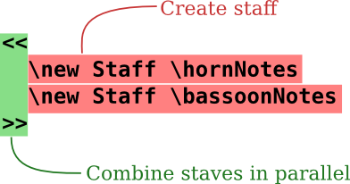

<!DOCTYPE html PUBLIC "-//W3C//DTD HTML 4.01 Transitional//EN" "http://www.w3.org/TR/html4/loose.dtd">
<html>
<!-- Copyright C 2003-2015 by the authors.

このファイルは LilyPond Web サイトのドキュメントです。

GNU フリー文書利用許諾契約書バージョン 1.1 またはフリー ソフトウェア財団によって
発行されたその後のバージョンの約定に従う限り、このドキュメントを複製、変更する
許可を与えます。
変更不可部分はありません。
この利用許諾契約書のコピーは "GNU フリー文書利用許諾契約書" という章に含まれて
います。

 -->
<!-- Created on 8 月 6, 2017 by texi2html 1.82
texi2html was written by: 
            Lionel Cons <Lionel.Cons@cern.ch> (original author)
            Karl Berry  <karl@freefriends.org>
            Olaf Bachmann <obachman@mathematik.uni-kl.de>
            and many others.
Maintained by: Many creative people.
Send bugs and suggestions to <texi2html-bug@nongnu.org>
-->
<head>
<title>LilyPond &ndash; みんなの楽譜作成</title>

<meta name="description" content="LilyPond &ndash; みんなの楽譜作成">
<meta name="keywords" content="LilyPond &ndash; みんなの楽譜作成">
<meta name="resource-type" content="document">
<meta name="distribution" content="global">
<meta name="Generator" content="texi2html 1.82">
<meta http-equiv="Content-Type" content="text/html; charset=utf-8">
<link href="#top" rel="start" title="LilyPond... みんなの楽譜作成">
<link href="#SEC_Contents" rel="contents" title="目次">
<link href="#SEC_About" rel="help" title="このドキュメントについて">
<link rel="stylesheet" type="text/css" title="Default style" href="../Documentation/css/lilypond-website.css">
<!--[if lte IE 9]>
<link href="../Documentation/css/lilypond-website-ie-fixes.css" rel="stylesheet" type="text/css">
<![endif]-->


</head>

<body lang="ja" class="web devStatus">


<div id="main">
<a name="Top"></a>

<a name="top"></a>
<h1 class="settitle">LilyPond... みんなの楽譜作成</h1>


<div id="pageHeader"><a name="LilyPond"></a>
<h2 class="heading">LilyPond</h2>

<p>... みんなの楽譜作成
</p>
</div>
<div id="lilylogo">
  
</div>
<div id="quickSummary"><p>LilyPond は、可能な限り高品位な楽譜を生み出すことを目的とする、オープン ソースの楽譜作成プログラムです。このフリー ソフトウェアは、伝統的な彫版の楽譜の美しさをコンピュータ プリントアウトで実現します。LilyPond はフリーソフトウェアであり、<a href="http://gnu.org">GNU プロジェクト</a>
の一部です。
</p>

<div class="align-right"><p><a href="#introduction">導入部</a> を読んで、LilyPond をもっと知ってください！
</p>

</div>
</div>

<div id="homepage-main">
<div class="column-center-top">
<a name="g_t_7f8e_3057_3044_697d_8b5c"></a>
<h3 class="subheading">美しい楽譜</h3>

<div id="homepage-example-image-wrapper"><div class="float-center">
  <a class="clickable" href="pictures/bwv861-lilypond-large.png">
    
  </a>
  <p style="text-align: center">
    
  </p>
</div>
</div>
  
<p>LilyPond は、いかなる種類の譜刻にも対応できる、強力で、自由度の高いツールです。例えば、クラシック音楽（J. S. Bach 作の上の例のように）、複雑な楽譜、古楽、現代音楽、タブ譜、声楽、リード譜、教材、大きなオーケストラプロジェクト、カスタマイズされた出力、さらに Schenker graphs にも使えます。
</p>

<p>楽譜の <a href="#examples">例</a> を見て、刺激を受けてください！
</p>

</div>
<div class="column-center-middle-color2"><a name="g_t_30cb_30e5_30fc_30b9-2"></a>
<h3 class="subheading">ニュース</h3>


  
<p><a href="#news">LilyPond 2.19.65 released - <em>August 06, 2017</em></a>
</p>
<p><a href="#news">Two LilyPond projects in Google Summer of Code 2016 - <em>April 23, 2016</em></a>
</p>
<p><a href="#news">LilyPond 2.18.2 released! - <em>March 23, 2014</em></a>
</p>
<p><a href="#news">LilyPond 2.18.0 released! - <em>December 29, 2013</em></a>
</p>

<p><a href="#news">その他のニュース...</a>
</p>

</div>

</div>

  


<script language="JavaScript" type="text/javascript">
  function loadXMLDoc(dname)
    {
      if (window.XMLHttpRequest)
        {
          xhttp=new XMLHttpRequest();
        }
      else
        {
          xhttp=new ActiveXObject("Microsoft.XMLHTTP");
        }
      xhttp.open("GET",dname,false);
      xhttp.send();
      return xhttp.responseXML;
    }

  var xmlDoc = loadXMLDoc("tweets.xml");
  var tweets = xmlDoc.getElementsByTagName("tweet");
  var index = Math.floor(Math.random() * tweets.length);
  var tweet = tweets[index];
  var text = tweet.childNodes[0];
  document.getElementById("pondingsText").innerHTML = text.nodeValue;
</script>


<div class="hide"><table class="menu" border="0" cellspacing="0">
<tr><td align="left" valign="top"><a href="#introduction" accesskey="1">導入部</a></td><td>&nbsp;&nbsp;</td><td align="left" valign="top">               ここから始めて、楽譜を作ってください。
</td></tr>
<tr><td align="left" valign="top"><a href="#download" accesskey="2">ダウンロード</a></td><td>&nbsp;&nbsp;</td><td align="left" valign="top">         LilyPond の入手方法。
</td></tr>
<tr><td align="left" valign="top"><a href="#manuals" accesskey="3">マニュアル</a></td><td>&nbsp;&nbsp;</td><td align="left" valign="top">           マニュアルを読んでください。
</td></tr>
<tr><td align="left" valign="top"><a href="#community" accesskey="4">コミュニティ</a></td><td>&nbsp;&nbsp;</td><td align="left" valign="top">         他のユーザとの交流。
</td></tr>
</table>

</div>


<hr size="1">
<a name="g_t_5c0e_5165_90e8"></a>

<a name="introduction"></a>
<h1 class="unnumbered">導入部</h1>

<div class="column-center-top"><a name="g_t_6211_3005_306e_30b4_30fc_30eb"></a>
<h3 class="subheading">我々のゴール</h3>


<p>LilyPond のきっかけは2人の音楽仲間がコンピュータで印刷したつまらない見栄えの楽譜を超えようと決意したことに始まります。すべての音楽家は美しい楽譜を好みます。それなら、我々プログラマーは美しい楽譜を作り出すソフトウェアを作ることはできないでしょうか？
</p>
<p>答えは、伝統的な手法に従った美しい楽譜を作り出すプログラムです。レイアウトの細かな問題をプログラムで処理することにより、作曲者、編曲者、出版社がソフトウェアの出力を調整して見栄えを良くすることよりも、<em>音楽</em> に集中できるようにします。演奏者は音楽を <em>読む</em> ことよりも、
<em>演奏</em> に集中できるようになります。
</p>


</div>
<div class="link-headings">
<div class="column-left-top"><a name="LilyPond-_306e_6a5f_80fd"></a>
<h3 class="subheading">LilyPond の機能</h3>

<ul>
<li>
<a href="#features">特徴</a>: LilyPond で何ができるのか？

</li><li>
<a href="#examples">例</a>: 実際に楽譜を見てみたい！

</li><li>
<a href="#freedom">自由</a>: LilyPond はフリー ソフトウェアです。

</li><li>
<a href="#background">バックグラウンド</a>: 我々のコンピュータ審美学。

</li></ul>

</div>
<div class="column-right-top"><a name="LilyPond-_306e_4f7f_7528_4f8b"></a>
<h3 class="subheading">LilyPond の使用例</h3>
<ul>
<li>
<a href="#productions">成果物</a>: LilyPond の実際の使用例。

</li><li>
<a href="#reviews">人々の評価</a>: 人々は何と言っている？

</li></ul>

</div>
<div class="column-center-bottom"><a name="LilyPond-_306e_4f7f_3044_65b9"></a>
<h3 class="subheading">LilyPond の使い方</h3>
<ul>
<li>
<a href="#text-input">テキスト入力</a>: 楽譜を <em>テキスト</em> で記述する？！

</li><li>
<a href="#easier-editing">より簡単な編集手段</a>: LilyPond に取り組むための他の方法。

</li></ul>

</div>

</div>
<div class="hide"><table class="menu" border="0" cellspacing="0">
<tr><td align="left" valign="top"><a href="#features" accesskey="1">特徴</a></td><td>&nbsp;&nbsp;</td><td align="left" valign="top">                    LilyPond は何ができるの?
</td></tr>
<tr><td align="left" valign="top"><a href="#examples" accesskey="2">例</a></td><td>&nbsp;&nbsp;</td><td align="left" valign="top">                      楽譜を見てみたい！
</td></tr>
<tr><td align="left" valign="top"><a href="#freedom" accesskey="3">自由</a></td><td>&nbsp;&nbsp;</td><td align="left" valign="top">                    自由と GPL。
</td></tr>
<tr><td align="left" valign="top"><a href="#background" accesskey="4">バックグラウンド</a></td><td>&nbsp;&nbsp;</td><td align="left" valign="top">        コンピュータ審美学。
</td></tr>
<tr><td align="left" valign="top"><a href="#productions" accesskey="5">成果物</a></td><td>&nbsp;&nbsp;</td><td align="left" valign="top">                  LilyPond の実際の使用例。
</td></tr>
<tr><td align="left" valign="top"><a href="#reviews" accesskey="6">人々の評価</a></td><td>&nbsp;&nbsp;</td><td align="left" valign="top">              人々は何と言っている？
</td></tr>
<tr><td align="left" valign="top"><a href="#text-input" accesskey="7">テキスト入力</a></td><td>&nbsp;&nbsp;</td><td align="left" valign="top">            楽譜をテキストで記述する？！
</td></tr>
<tr><td align="left" valign="top"><a href="#easier-editing" accesskey="8">より簡単な編集手段</a></td><td>&nbsp;&nbsp;</td><td align="left" valign="top">      LilyPond に取り組むための他の方法。
</td></tr>
</table>

</div>


<hr size="6">
<a name="g_t_7279_5fb4"></a>

<a name="features"></a>
<h2 class="unnumberedsec">特徴</h2>
<div class="column-center-top">

<a name="g_t_3059_3050_308c_305f_4f1d_7d71_7684_306a_8b5c_523b"></a>
<h3 class="subheading">すぐれた伝統的な譜刻</h3>


<p>LilyPond は、音楽家が美しく、読みやすい楽譜を作り出すことを可能にします。LilyPond の開発者コミュニティは、美しく譜刻された楽譜を生み出す強力な譜刻ソフトウェアを開発するために何千時間も費やしてきました。LilyPond の書式設定、フォント デザイン、それにアルゴリズムはすべて、手で譜刻された最高品質の楽譜を参考にしています。LilyPond の出力は、最高の職人によって作られた伝統的な楽譜と同じくらい、力強く、バランスがとれていて、美しい見栄えがします。これらのことについて、<a href="#essay">エッセー</a> でさらに説明しています。
</p>


</div>
<div class="column-center-top"><a name="g_t_30c6_30ad_30b9_30c8_5165_529b-2"></a>
<h3 class="subheading">テキスト入力</h3>

<a name="g_t_3059_3079_3066_304c_660e_5feb"></a>
<h4 class="subsubheading">すべてが明快</h4>

<p>LilyPond は楽譜 <em>コンテンツ</em> に関するすべての情報を含み、誰にでも、また他のプログラムでも簡単に読むことのできる、テキスト入力を処理します。メニューやバイナリファイルに隠された不明瞭な設定はありません。
</p>
<p><a href="#text-input">テキスト入力</a> のコンセプトをもっと読む。
</p>

<a name="g_t_5805_7262_3067_8ffd_8de1_53ef_80fd_306a_5fae_8abf_6574"></a>
<h4 class="subsubheading">堅牢で追跡可能な微調整</h4>

<p>レイアウトを微調整した場合、人間が読める形で明快に見えるため、いつでも何をしたのか、たどることができます。誤って何かを壊してしまった場合でも、<em>元に戻す</em> 機能のなすがままに頼ることなく、簡単に元に戻したり修正したりすることができます。
</p>

<a name="g_t_30c6_30ad_30b9_30c8_30d5_30a1_30a4_30eb_306f_969c_5bb3_306b_5f37_304f_3001_5c06_6765_6027_304c_3042_308a_307e_3059"></a>
<h4 class="subsubheading">テキストファイルは障害に強く、将来性があります</h4>

<p>テキストファイルは破損に対して非常に堅牢です。人間が読むこともでき、ファイルを作成したプログラムが使えなくても、いつでも解釈できます。
</p>

<a name="g_t_697d_8b5c_3092_30d0_30fc_30b8_30e7_30f3_7ba1_7406"></a>
<h4 class="subsubheading">楽譜をバージョン管理</h4>

<p>テキストファイルはバージョン管理システムで管理できます。楽譜の変更履歴がすべて記録でき、無限に選べる「元に戻す」「やり直す」機能 を使うことができます。新しいコラボレーションの方法にもなるでしょう。
</p>

</div>
<div class="column-center-top"><a name="g_t_4f7f_3044_3084_3059_3055"></a>
<h3 class="subheading">使いやすさ</h3>


<a name="g_t_52b9_679c_7684_306a_30ec_30a4_30a2_30a6_30c8_6a5f_80fd"></a>
<h4 class="subsubheading">効果的なレイアウト機能</h4>

<p>出力の調整に時間を無駄にするのは止めましょう。LilyPond は最初から正しいフォーマットで出力します。緻密で統一のとれたレイアウトになるよう、スペースを自動的に決定し、改行、改ページを行います。歌詞、音符、和音の衝突回避、それにスラーや連桁の傾きは自動的に行われます！
</p>

<a name="g_t_697d_8b5c_3068_6587_7ae0_306e_6df7_5408"></a>
<h4 class="subsubheading">楽譜と文章の混合</h4>

<p>画像のカット＆ペーストをせずに、
楽譜の断片をテキストに入れることができます。LaTeX や HTML に楽譜を垣根無く統合できますし、OOoLilyPond を使えば OpenOffice.org や LibreOffice に<a href="http://extensions.services.openoffice.org/en/project/OOoLilyPond">OOoLilypond</a>で楽譜を追加することも出来ます。LilyPond のコードを様々なブログ、Wiki で使用可能にするプラグインがあり、オンラインでコラボレーションできます。</p>

<a name="g_t_30a2_30af_30bb_30b9_6027"></a>
<h4 class="subsubheading">アクセス性</h4>

<p>テキスト ベースの入力は、重い身体障がいを持つユーザであっても、楽譜を記述することを可能にします。キーボードやマウスを扱うことができない、上肢障がいのあるユーザは、音声認識ソフトウェアを使って、LilyPond ファイルを編集することができます。盲目のユーザでさえも、読み上げソフトウェアを使って、LilyPond ファイルを記述することができます
&ndash; これは、グラフィカル ベースの楽譜作成プログラムでは不可能なことです。壮観な楽譜の <a href="#examples">例</a> を見てください。
</p>
<a name="g_t_591a_69d8_306a_7de8_96c6_65b9_6cd5"></a>
<h4 class="subsubheading">多様な編集方法</h4>

<p>自身が活発な LilyPond ユーザである開発者の何人かは、LilyPond ファイルの編集プロセスをより早く、より効率的に行うためのツールを作っています。一つのユーザインタフェースに縛られていないので、異なるタスクのために様々なツールを使うことができます。自宅では本格的な LilyPond エディタを使い、外出先では携帯電話のメモ帳アプリを使ってファイルを編集することができます。<a href="#easier-editing">より簡単な編集手段</a> で例を挙げます。
</p>


</div>
<div class="column-center-top">
<a name="g_t_62e1_5f35_6027_306e_9ad8_3044_8a2d_8a08"></a>
<h3 class="subheading">拡張性の高い設計</h3>

<a name="g_t_30b9_30bf_30a4_30eb_30b7_30fc_30c8_306b_3088_308b_7c21_5358_306a_7ba1_7406"></a>
<h4 class="subsubheading">スタイルシートによる簡単な管理</h4>

<p>すべての設定は、個人的な写植上の好みに合わせて変更可能です。だから、簡単に LilyPond のデフォルトのあらゆる側面を変更するスタイルシートを作ることができます。スタイルシートもテキストであり、複数別々に保存できるので、単にスタイルシートを切り替えるだけで、完全に異なる外観やレイアウトの楽譜を生成することができます。A4用紙に総譜を印刷し、プロジェクターでは1スライドに1段投影したい？LilyPond のレイアウトエンジンは難なく同じ入力から両方を生成できます。
</p>
<a name="g_t_3042_306a_305f_81ea_8eab_306e_6a5f_80fd_3092_8ffd_52a0"></a>
<h4 class="subsubheading">あなた自身の機能を追加</h4>

<p>仮にそれが不十分な場合でも、LilyPond 自身と同じレベルで LilyPond のレイアウトエンジンにアクセスできる内蔵スクリプト言語 Scheme を常に使うことができ、<em>とても</em> 強力なツールにできます。全ての設定、変数、それに関数は、広範囲に亘るプログラム リファレンス マニュアルの中にドキュメント化されています。
</p>
<a name="g_t_30d7_30ed_30b0_30e9_30e0_3067_697d_8b5c_3092_51e6_7406"></a>
<h4 class="subsubheading">プログラムで楽譜を処理</h4>

<p>LilyPond の入力ファイルは、プログラムやスクリプトで完全に編集でき、生成することもできます。これは例えばアルゴリズムで作曲することもできます。分析のために音楽コンテンツにアクセスしたり、データベースで入力の断片を管理することもできます。想像できる限り制限はありません。
</p>
<a name="LilyPond-_3092_4f7f_3063_305f_65b0_3057_3044_30c4_30fc_30eb_3092_4f5c_308b"></a>
<h4 class="subsubheading">LilyPond を使った新しいツールを作る</h4>

<p>LilyPond は一つの GUI プログラムではなく、コマンドラインツールなので、他のアプリケーションの中から使うこともできます。この方法で、Web アプリケーションに LilyPond の譜刻機能を持たせることができます。LilyPond を使ったオンラインツールがいくつかあります。
</p>


</div>
<div class="column-center-top">
<a name="g_t_74b0_5883"></a>
<h3 class="subheading">環境</h3>


<a name="g_t_7d20_6674_3089_3057_3044_30b5_30dd_30fc_30c8"></a>
<h4 class="subsubheading">素晴らしいサポート</h4>

<p>LilyPond は一般的なプラットフォーム全て
(GNU/Linux, MacOS, そして Windows) で動きます。LilyPond には広範囲のドキュメントと数百の実例ファイルが付属します。LilyPond ユーザー メーリング リストで質問に答えてくれる活発なユーザ コミュニティがあります。開発チームは問題が早期に解決されるよう活動しています。通常はすぐに回答がありますし、しばしば報告された問題に対する鮮やかな解決策が開発されます。開発チームの密接な対応のおかげで、そのような解決策はきちんと LilyPond へ取り込まれます。<a href="#community">コミュニティ</a> についてもっと読む。
</p>

<a name="g_t_30d5_30ea_30fc-_30bd_30d5_30c8_30a6_30a7_30a2-1"></a>
<h4 class="subsubheading">フリー ソフトウェア</h4>

<p>LilyPond は無料でダウンロードすることができます！そうです &ndash; 無料です。ダウンロード ページから入手してください。
</p>
<p>LilyPond は (口語的な意味でも) フリーなソフトウェアです。ソース コードが公開されており、変更もコピーも認められています。ですから、バグにいらいらしていたり、仕様面で不満があるのなら、自分でそれを追加したり、他の人にそれを注文することが出来ます。
<a href="#freedom">自由</a> についてもっと読む。
</p>

</div><div class="column-center-bottom"><a name="g_t_3069_3046_3067_3059_304b_ff1f-2"></a>
<h3 class="subheading">どうですか？</h3>

<p>まだ迷っていますか？ちょっとした <a href="#examples">例</a> をいくつか見てください。LilyPond を試してみる決心がついたのなら、まず <a href="#text-input">テキスト入力</a> を読んでください。
</p>
</div>


<hr size="6">
<a name="g_t_4f8b"></a>

<a name="examples"></a>
<h2 class="unnumberedsec">例</h2>

<div class="column-center-top">
<a name="g_t_7f8e_3057_3044_4f8b"></a>
<h3 class="subheading">美しい例</h3>

<p>LilyPond は、いかなる種類の譜刻にも対応できる、強力で、自由度の高いツールです。我々の楽譜ギャラリーを見て、楽譜の多様さ、美しさを実感してください！
</p>

</div>

<div class="column-center-middle-color2"><a name="g_t_30af_30e9_30b7_30c3_30af_97f3_697d"></a>
<h3 class="subheading">クラシック音楽</h3>

<p>この J. S. Bach 作のオルガン曲の楽譜は、LilyPond の象徴的な例です。
</p>
<div class="float-center example-image-wrapper">
  <a class="clickable" href="ly-examples/bach-bwv610.png">
    
  </a>
  <p style="text-align: center">
    (クリックすると拡大します)
  </p>
</div>
</div>

<div class="column-center-middle-color2"><a name="g_t_8907_96d1_306a_697d_8b5c"></a>
<h3 class="subheading">複雑な楽譜</h3>

<p>この Enrique Granados 作の <em>Goyescas</em> からの例は、符幹が上下に突き出る連桁、譜をまたぐ符幹、それに voice-follow lines を含むより高度な写植機能を示しています。
</p>
<div class="float-center example-image-wrapper">
  <a class="clickable" href="ly-examples/granados.png">
    
  </a>
  <p style="text-align: center">
    (クリックすると拡大します)
  </p>
</div>
</div>

<div class="column-center-middle-color2"><a name="g_t_53e4_697d"></a>
<h3 class="subheading">古楽</h3>

<p>LilyPond は、以下のグレゴリオ聖歌のパッセージのような、さまざまなタイプの古楽もサポートします。
</p>
<div class="float-center example-image-wrapper">
  <a class="clickable" href="ly-examples/ancient-headword.png">
    
  </a>
  <p style="text-align: center">
    (クリックすると拡大します)
  </p>
</div>
</div>

<div class="column-center-middle-color2"><a name="g_t_73fe_4ee3_97f3_697d"></a>
<h3 class="subheading">現代音楽</h3>

<p>現代音楽の作曲家は、LilyPond が標準的でない楽譜を扱うのに適していることを見出すでしょう。ここで、Trevor Bača の無伴奏バス フルートのための <em>Čáry</em> から、抜粋を示します。
</p>
<div class="float-center example-image-wrapper">
  <a class="clickable" href="ly-examples/cary.png">
    
  </a>
  <p style="text-align: center">
    (クリックすると拡大します)
  </p>
</div>
</div>

<div class="column-center-middle-color2"><a name="g_t_52b9_7387_7684_306b_3001_81ea_7531_306b_6f14_594f_8cc7_6599_3092_4f5c_308a_51fa_3057_307e_3059"></a>
<h3 class="subheading">効率的に、自由に演奏資料を作り出します</h3>

<p>同じソース コードからさまざまな演奏資料を作り出すことができます。以下は、<a href="http://nicolas.sceaux.free.fr">Nicolas Sceaux</a> が
Handel の <em>Giulio Cesare</em> を譜刻したものの抜粋から、総譜、ピアノ伴奏を持つボーカル譜、それにバイオリン パートを作り出しています。
</p>
<div class="float-center example-image-wrapper">
  <a class="clickable" href="ly-examples/sesto-full.png">
    
  </a>
  <p style="text-align: center">
    (クリックすると拡大します)
  </p>
</div>
<div class="float-center example-image-wrapper">
  <a class="clickable" href="ly-examples/sesto-piano.png">
    
  </a>
  <p style="text-align: center">
    (クリックすると拡大します)
  </p>
</div>
<div class="float-center example-image-wrapper">
  <a class="clickable" href="ly-examples/sesto-violin.png">
    
  </a>
  <p style="text-align: center">
    (クリックすると拡大します)
  </p>
</div>

</div>

<div class="column-center-middle-color2"><a name="g_t_30bf_30d6_8b5c"></a>
<h3 class="subheading">タブ譜</h3>

<p>LilyPond はタブ譜をサポートします。楽器に合わせてカスタマイズすることが可能です。タブ譜は、五線譜用に記述された音符から自動的に生成されます。
</p>
<div class="float-center example-image-wrapper">
  <a class="clickable" href="ly-examples/tab-example.png">
    
  </a>
  <p style="text-align: center">
    (クリックすると拡大します)
  </p>
</div>
</div>

<div class="column-center-middle-color2"><a name="g_t_58f0_697d"></a>
<h3 class="subheading">声楽</h3>

<p>LilyPond は聖歌からオペラまですべての種類の声楽に対して卓越した性能を発揮します。少し変わった要求をする中世のモテットを示します。テナー ボイスの拍子は他と異なりますが、同じ拍子であるかのように揃っています。LilyPond はこれをすっきりと処理します
ヴァチカン様式の音部記号、ゆらぎのある音符を表すスラッシュ付きの符幹、ある特定の音符グループ上の連結線ににも注目してください。
</p>
<div class="float-center example-image-wrapper">
  <a class="clickable" href="ly-examples/aucun-snippet.png">
    
  </a>
  <p style="text-align: center">
    (クリックすると拡大します)
  </p>
</div>
</div>

<div class="column-center-middle-color2"><a name="g_t_30ea_30fc_30c9_8b5c"></a>
<h3 class="subheading">リード譜</h3>

<p>メロディー、歌詞、コード名、フレットボードを持つリード譜を簡単に作れます。以下の例ではあらかじめ定義されているフレットボード ダイアグラムを使用していますが、状況に合わせて様々なカスタマイズを行うことができます。
</p>
<div class="float-center example-image-wrapper">
  <a class="clickable" href="ly-examples/chart.png">
    
  </a>
  <p style="text-align: center">
    (クリックすると拡大します)
  </p>
</div>
</div>

<div class="column-center-middle-color2"><a name="g_t_6559_80b2"></a>
<h3 class="subheading">教育</h3>

<p>LilyPond は教育を目的とした使用にも適しています。ちょっとした対位法の問題例を挙げます。
</p>
<div class="float-center example-image-wrapper">
  <a class="clickable" href="ly-examples/theory.png">
    
  </a>
  <p style="text-align: center">
    (クリックすると拡大します)
  </p>
</div>
</div>

<div class="column-center-middle-color2"><a name="g_t_5927_304d_306a_30d7_30ed_30b8_30a7_30af_30c8"></a>
<h3 class="subheading">大きなプロジェクト</h3>

<p>LilyPond はオペラや交響楽団のような大きなプロジェクトにも非常に適しています。さらに、テキスト ベースの入力は高いアクセス性を提供します
&ndash; 以下の例は盲目の作曲家である Hu Haipeng によって作られた例です。
</p>
<div class="float-center example-image-wrapper">
  <a class="clickable" href="ly-examples/orchestra.png">
    
  </a>
  <p style="text-align: center">
    (クリックすると拡大します)
  </p>
</div>
</div>

<div class="column-center-middle-color2"><a name="g_t_30ab_30b9_30bf_30de_30a4_30ba"></a>
<h3 class="subheading">カスタマイズ</h3>

<p>LilyPond のカスタマイズ能力を示すため、
Stockhausen の Klavierstück II からの短い抜粋です。
</p>
<div class="float-center example-image-wrapper">
  <a class="clickable" href="ly-examples/Stockhausen_Klavierstueck2.png">
    
  </a>
  <p style="text-align: center">
    (クリックすると拡大します)
  </p>
</div>
</div>
<div class="column-center-middle-color2"><a name="Schenker-Graphs"></a>
<h3 class="subheading">Schenker Graphs</h3>

<p>標準出力に様々な変更を加えることができます。<a href="http://www.linuxjournal.com/article/8364">Linux Journal</a>
に掲載された Kris Schaffer が作成したみごとな Schenkerian 分析を示します。見やすくするために色を追加しました。
</p>
<div class="float-center example-image-wrapper">
  <a class="clickable" href="ly-examples/bach-schenker.png">
    
  </a>
  <p style="text-align: center">
    (クリックすると拡大します)
  </p>
</div>
</div>

<div class="column-center-bottom"><a name="g_t_3069_3046_3067_3059_304b_ff1f-5"></a>
<h3 class="subheading">どうですか？</h3>

<p>まだ迷っていますか？LilyPond は <a href="#freedom">自由</a> をもたらすフリー ソフトウェアです。LilyPond を試してみる決心がついたのなら、まず <a href="#text-input">テキスト入力</a> を読んでください。
</p>
</div>

<hr size="6">
<a name="g_t_81ea_7531"></a>

<a name="freedom"></a>
<h2 class="unnumberedsec">自由</h2>

<div class="column-center-top"><a name="g_t_30d5_30ea_30fc-_30bd_30d5_30c8_30a6_30a7_30a2"></a>
<h3 class="subheading">フリー ソフトウェア</h3>

<p><a href="http://www.gnu.org">GNU</a> LilyPond は熱心な人々からなるコミュニティによって作成され、維持されています。LilyPond は、すべての人にプログラムの修正、変更、拡張を許可する
<a href="#gpl">GNU General Public License</a> と
<a href="#fdl">GNU Free Documentation License</a> に基づいて公開されています。美しい楽譜を作るのに、何万円もするソフトウェアは必要ありません！
</p>
</div>

<div class="column-center-middle-color2"><div class="keep-bullets"><a name="g_t_30e6_30fc_30b6_306b_3068_3063_3066_306e_5229_76ca_306f_4f55_306a_306e_304b_ff1f"></a>
<h3 class="subheading">ユーザにとっての利益は何なのか？</h3>

<ul>
<li>
無料: ダウンロードして試してみてください！何か失うものはありますか？

</li><li>
共有: このプログラムを気に入ったのなら、コピーを友人、先生、生徒、同僚にあげることができます！

</li><li>
ソースを入手可能: LilyPond がどのように記譜を行うのかに興味を持ったのなら、それを実際に見ることができます。

</li><li>
拡張性: 機能やバグ修正を追加したり、機能変更を行うことができます。プログラマでなければ、そういった仕事をする人を雇うことができます。

<p>このことはアマチュア音楽家には意味のないことかもしれませんが、ソフトウェアの拡張性は、本格的な作曲家、企業、大学にとっては非常に価値のあるものです。
</p>
</li><li>
将来の安全性: 営利企業が破産した場合、その企業の製品に基づく電子音楽はどうなるでしょうか？LilyPond にはこういったこととは無縁です。たとえ開発チームが全員辞めたとしても (まったくあり得ない話ですが)、このプログラムは合法的にコピー、変更、配布することができます。


</li></ul>


</div>
</div>

<div class="column-center-middle-color3"><div class="keep-bullets"><a name="g_t_4f55_6545-LilyPond-_306e_958b_767a_8005_305f_3061_306f_3053_306e_30d7_30ed_30b0_30e9_30e0_3092_7121_6599_306b_3057_3066_304a_304f_306e_304b_ff1f"></a>
<h3 class="subheading">何故 LilyPond の開発者たちはこのプログラムを無料にしておくのか？</h3>

<p>たいていの人たちは、LilyPond の開発を趣味やボランティア活動と見なしています。ですから、この質問の本質はこうです
&ndash; &ldquo;なぜボランティア活動を行うのか？&rdquo;。
</p>
<ul>
<li>
楽しい: ゴールに向かって取り組むことは楽しいことです。特に、チームで取り組んでいる場合は！

</li><li>
ゴールの共有: 我々は皆、美しい楽譜を望んでいます。しかしながら、すべての状況を処理できるプログラムを作成できるような熟練者はほとんどいません (そして、皆、時間がありません！)。皆で取り組むことで
&ndash; ある人は自動連桁のコードを改良し、ある人はスラーの形を改良し、またある人は、それらの機能の使い方を説明するドキュメントを記述します
&ndash; 個人々々ができる努力からゴールを達成することができます。

</li><li>
&ldquo;与える文化&rdquo;: フリー ソフトウェア運動は多くの偉大なソフトウェア
プロジェクトを生み出してきました
&ndash; <a href="http://kernel.org">GNU/Linux</a>,
<a href="http://www.getfirefox.com">Mozilla Firefox</a>, それに
<a href="http://www.wesnoth.org">Battle for Wesnoth</a> など。
これらのプロジェクトの恩恵を受けて、そのコミュニティに &ldquo;恩返し&rdquo; をしたいと考えている開発者もいます。

</li><li>
経験: フリー ソフトウェア プロジェクトに貢献することは、プログラミング、ドキュメントの記述・翻訳、デザインを訓練するための素晴らしい方法です。この経験により、仕事の依頼を受けたり、奨学金を得た開発者もいます。


</li></ul>


</div>
</div>

<div class="column-center-bottom"><a name="g_t_3069_3046_3067_3059_304b_ff1f"></a>
<h3 class="subheading">どうですか？</h3>

<p>まだ迷っていますか？<a href="#background">バックグラウンド</a> で我々の譜刻哲学についての広範囲なエッセーを読んでください。
LilyPond を試してみる決心がついたのなら、まず <a href="#text-input">テキスト入力</a> を読んでください。
</p>
</div>

<hr size="6">
<a name="g_t_30d0_30c3_30af_30b0_30e9_30a6_30f3_30c9"></a>

<a name="background"></a>
<h2 class="unnumberedsec">バックグラウンド</h2>

<div class="column-center-top"><a name="g_t_30d0_30c3_30af_30b0_30e9_30a6_30f3_30c9-_30a8_30c3_30bb_30fc"></a>
<h3 class="subheading">バックグラウンド エッセー</h3>

<p>コンピュータ審美学 &ndash; コンピュータで美しいものを作り出す手法
&ndash; について記述した広範囲なエッセーがあります。
</p>
<p>これは、私たちの基本的なアイディアの深い議論に興味があるならば、面白い読み物です。分量があるので「マニュアル」で読むことができます。今、このエッセーを読もうと思うのならば、<a href="#essay">エッセー</a> に進んでください。LilyPond についての簡単な紹介を望むのであれば、今は飛ばしてください。
</p>
</div>
<div class="column-center-bottom"><a name="g_t_3069_3046_3067_3059_304b_ff1f-3"></a>
<h3 class="subheading">どうですか？</h3>

<p>まだ迷っていますか？ユーザの <a href="#productions">成果物</a> と楽譜について読んでみてください。
LilyPond を試してみる決心がついたのなら、まず <a href="#text-input">テキスト入力</a> を読んでください。
</p>
</div>

<hr size="6">
<a name="g_t_6210_679c_7269"></a>

<a name="productions"></a>
<h2 class="unnumberedsec">成果物</h2>

<div class="column-center-top">
<a name="LilyPond-_3092_4f7f_3063_305f_6210_679c_7269"></a>
<h3 class="subheading">LilyPond を使った成果物</h3>

<p>ここでは、演奏や出版用楽譜といった成果物のため、実際に LilyPond を使う人々について読むことができます。
</p>

</div>
<div class="column-left-top"><a name="g_t_30b3_30f3_30b5_30fc_30c8"></a>
<h3 class="subheading">コンサート</h3>

<p>LilyPond で生成された楽譜は、世界中の演奏で使用されています。いくつかハイライトを挙げます:
</p>
<div class="keep-bullets"><ul>
<li>
<a href="http://www.aurelienbello.com">Aurélien Bello</a> は Richard Strauss の
<em>Der Rosenkavalier</em> を4人の歌手と13人の室内オーケストラ用に編曲しました。これは Berlin Philharmonic Orchestra によって委嘱され、<a href="http://www.festspielhaus.de/veranstaltung/der-kleine-rosenkavalier-02-04-2015-1100">4月2日と6日</a>にバーデンバーデンの祝祭劇場で、<a href="http://www.berliner-philharmoniker.de/konzerte/kalender/details/21070">4月26日に</a>ベルリンの <em>Philharmonie (großer Saal)</em> で演奏されました。このような名高い音楽家が LilyPond の楽譜で演奏し、そして曰くそれらに非常に満足しているということで我々は嬉しく思います。

<p>Aurélien も Richard Wagner の <em>Der Ring des Nibelungen</em> を<a href="http://www.rsb-online.de/content/concerts/new-season-1516/family-concerts-age-7-and-above/index_eng.html">子どものための100分間の版</a>に編曲しました。通常の交響楽団のために編曲されましたが、歌手の数を減らして、2014年4月にベルリンの Atze Musiktheater で
<a href="http://www.rsb-online.de"><em>Radio-Sinfonieorchester Berlin</em></a>
によって演奏されました。指揮者は Heiko Matthias Förster でした。
</p>
</li><li>
Joe Smeets は子どものための本 <em>Zing Mee</em>
（<em>一緒に歌おう</em>）の楽譜を作成しました。出版社
<a href="http://www.queridokinderenjeugdboeken.nl">Querido</a>
&ndash; ISBN 9789045106205 。また Benjamin Britten の <em>Saint Nicolas</em> オランダ語版、合唱のリハーサル譜を作成し、2011年 <em>Muziektheater Hollands Diep</em> で演奏されました:
<a href="http://www.muziektheaterhollandsdiep.nl/nl/voorstellingen/sint_nicolaas_leeft">www.muziektheaterhollandsdiep.nl</a> 。彼はさらに Moussurgsky の
<em>Boris Godounov</em> を管楽四重奏・ピアノ・打楽器の編成に編曲し、2014年にまた <em>Muziektheater Hollands Diep</em> で演奏されました。

</li><li>
Vittorio Amedeo Cigna-Santi によって歌詞が付けられた Tommaso Traetta のオペラ
<em>Enea nel Lazio (1760)</em> の校訂版が、
<a href="http://unito.academia.edu/LucaRossettoCasel">Luca Rossetto Casel</a>
の博士論文として作られました。
<a href="http://www.academia.edu/1987651/Enea_nel_Lazio_opera_riformata_prima_lazione_poi_le_parole_-_Partitura_1_4_">パート 1</a>
<a href="http://www.academia.edu/1994533/Enea_nel_Lazio_opera_riformata_prima_lazione_poi_le_parole_-_Partitura_2_4_">パート 2</a>
<a href="http://www.academia.edu/1994558/Enea_nel_Lazio_opera_riformata_prima_lazione_poi_le_parole_-_Partitura_3_4_">パート 3</a>
<a href="http://www.academia.edu/1996242/Enea_nel_Lazio_opera_riformata_prima_lazione_poi_le_parole_-_Partitura_4_4_">パート 4</a>

</li><li>
Mussorgsky の <em>Pictures at an exhibition</em> が
<a href="http://www.aurelienbello.com">Aurélien Bello</a> によってオーケストラ用に再編曲され、また彼は指揮者として
<a href="https://junge-philharmonie-brandenburg.de">Junge Philharmonie Brandenburg</a> で2011年10月と2012年4月に演奏しました。

</li><li>
作曲家・音楽監督の <a href="http://kierenmacmillan.info">Kieren MacMillan</a> 。彼の多くの作品から一部を紹介します：
<em>Go Thy Way</em> は2012年3月に <a href="http://www.saltlakechoralartists.org">Salt Lake Choral Artists</a> で演奏されました。
<em>Just Out of Reach Suite</em> は
<a href="http://www.herald-dispatch.com/news/marshall/x1883873762/Music-duo-Chrysalis-to-perform-at-Marshall-University-on-Jan-19">Chrysalis Duo</a> によって演奏されました。
<em>thrafsmata</em> は2011年7月に <a href="http://www.pnme.org">Pittsburgh New Music Ensemble</a> によって演奏されました。

</li><li>
<a href="http://www.mikesolomon.org">Mike Solomon</a> は、
<em>Anonymous Student Compliment or Complaint</em> という題の作品を作曲し、
<a href="http://www.leftcoastensemble.org">2011 Left Coast Composition Contest</a>
で22カ国172の作品から最優秀作品に選ばれました。彼の他の作品の一つ、クラリネットソロのための Norman (age 1) は、2010年10月、<a href="http://arts.ufl.edu/academics/music">フロリダ大学</a>の
Electroacoustic Music Festival (FEMF) で演奏されました。

</li><li>
Alessandro Scarlatti の <em>Serenata Erminia</em> の現代版が Thomas Griffin
（音楽学者、イタリア・ローマ）によって編集されました。2010年10月22日、イタリア・ナポリの Galleria of the Palazzo Zevallos Stigliano で演奏され、
<a href="http://www.ascarlatti2010.net">Alessandro Scarlatti 2010</a> として作曲家の生誕350年が祝われました。

</li><li>
<a href="http://www.mercuryhouston.org">Mercury Baroque</a> による
Lully の <em>Armide</em> の演奏が、2009年5月15日-16日にテキサス、ヒューストンで行われました。（譜刻は
<a href="http://nicolas.sceaux.free.fr">Nicolas Sceaux</a> によってされました。）

</li><li>
2009年5月8日、 Rameau の <em>Hippolyte et Aricie</em> の器楽演奏がマンハッタンの
St. James&rsquo;s Church で、 Frederick Renz と彼の楽団
<a href="http://www.earlymusicny.org">Early Music New York</a> によって行われました。（譜刻は
<a href="http://nicolas.sceaux.free.fr">Nicolas Sceaux</a>によってされました。）

</li><li>
<a href="https://en.wikipedia.org/wiki/Lewis_Trondheim">Lewis Trondheim</a>
によるフランス語歌詞で <a href="http://valentin.villenave.net">Valentin Villenave</a>
のオペラ <em>Affaire étrangère</em> が、2009年2月1日にフランスの
<a href="http://www.orchestre-montpellier.com">L&rsquo;Opéra National de Montpellier</a>
で初演されました。

</li></ul>

</div>

</div>

<div class="column-right-top"><a name="g_t_516c_958b_3055_308c_3066_3044_308b_697d_8b5c"></a>
<h3 class="subheading">公開されている楽譜</h3>

<div class="keep-bullets"><ul>
<li>
<a href="http://www.mutopiaproject.org/index.html">Mutopia Project</a>,
1500 曲を越えるクラシック音楽の楽譜を自由にダウンロードできます。LilyPond で生成された楽譜の主要なショーケースです。

</li><li>
<a href="http://etudeapp.com">Etude</a>, &ldquo;sheet music on steroids&rdquo; は
Mutopia の作品を含む、 LilyPond で譜刻されたピアノ曲を表示する iPhone
アプリです。画面上に鍵盤が表示され、初心者の読譜を手助けします。

</li><li>
<a href="https://twitter.com/adoromusic">Adoro Music Publishing</a>
では高品質な聖楽の楽譜をその場でダウンロード、あるいは伝統的な紙の形式で入手できます。

</li><li>
<a href="http://matthieujacquot.com">The Shady Lane Publishing</a>
&ldquo;micro musical publishing house&rdquo; は、音楽家や音楽愛好家にとってより身近な音楽の使用形態を推進することを目指しています。


</li></ul>


</div>

</div>

<div class="heading-center"><div class="contactBox"><p>If you are aware of any other concerts or sheet music which could be listed here,
please let us know by writing a message to the bug-lilypond
mailing list. If you&rsquo;re not subscribed yet you can do so on the list&rsquo;s
<a href="https://lists.gnu.org/mailman/listinfo/bug-lilypond">info page</a>
or post directly through the
<a href="http://post.gmane.org/post.php?group=gmane.comp.gnu.lilypond.bugs">gmane lilypond.bugs web interface</a>.
</p>

</div>
</div>

<div class="column-center-bottom"><a name="g_t_3069_3046_3067_3059_304b_ff1f-1"></a>
<h3 class="subheading">どうですか？</h3>

<p>まだ迷っていますか？ユーザの <a href="#reviews">人々の評価</a> を読んでみてください。
LilyPond を試してみる決心がついたのなら、まず <a href="#text-input">テキスト入力</a> を読んでください。
</p>
</div>

<hr size="6">
<a name="g_t_4eba_3005_306e_8a55_4fa1"></a>

<a name="reviews"></a>
<h2 class="unnumberedsec">人々の評価</h2>

<div class="column-center-top"><a name="g_t_4eba_3005_306f-LilyPond-_306b_3064_3044_3066_306a_3093_3068_3044_3063_3066_3044_308b_304b_ff1f"></a>
<h3 class="subheading">人々は LilyPond についてなんといっているか？</h3>


</div>

<div class="column-left-top"><a name="g_t_51fa_7248_3055_308c_305f_8a18_4e8b"></a>
<h3 class="subheading">出版された記事</h3>

<div class="keep-bullets"><ul>
<li>
2011年4月

<p><a href="http://www.linux-magazine.com">Linux Magazine</a> は
<a href="http://www.linux-magazine.com/content/download/61706/482546/version/1/file/088-090_projects.pdf">Projects on the Move</a> という題の記事を出版しました。これは MuseScore, LilyPond, Chordii の紹介記事であり、著者 Carla Schroder は、 &ldquo;LilyPond はコマンドラインで動作しますが、GUI が無いことはあなたを怖がらせ追い払うものではありません。
LilyPond はユーザーフレンドリーで学習が簡単です。&rdquo; と述べ、
ハンズオンの例が掲載されています。
</p>
</li><li>
2010年5月

<p>ウェブサイト Create Digital Music において Peter Kirn は、
<a href="http://createdigitalmusic.com/2010/05/14/lilypond-free-beautiful-music-notation-engraving-for-anyone">LilyPond review</a> を投稿しました。使用法についての記述はバランスが取れており、
LilyPond の高品質な記譜を賞賛し、試用することを提案しています。
</p>
</li><li>
2009年9月

<p>ドイツの雑誌 LinuxUser で
<a href="http://www.linux-community.de/Internal/Artikel/Print-Artikel/LinuxUser/2009/10/Digitaler-Notenschluessel">LilyPond に関する記事</a> が掲載されました。
</p>
</li><li>
2009年8月

<p>ウェブサイト <a href="http://www.polyphonic.org/article.php?id=188">Polyphonic.org</a>
において Ann Drinan は、楽譜を管理するのにソフトウェアを用いている二人のオーケストラ・ライブラリアンのコメントを掲載しました。
</p>
</li><li>
2009年6月

<p>フランス <em>National Conservatory Parent Association</em> の年刊で出版される雑誌の
<a href="http://web.archive.org/web/20110325004849/http://news.lilynet.net/Free-Music-Now">記事</a>
において、フランス人作曲家であり LilyPond の貢献者でもある Valentin Villenave
は、フリーなライセンスや、特に LilyPond による楽譜は、記譜された音楽を皆にアクセス可能にする手段であることを述べました。
</p>
</li><li>
2008年2月

<p><a href="http://www.musicbyandrew.ca/finale-lilypond-1.html">個人サイトの記事で</a>、
Andrew Hawryluk は Finale と LilyPond を総括的に比較し、両ソフトの譜刻能力を詳しく評価しました。2 つ目の記事ではラフマニノフの Piano Prelude No. 6 の譜刻における問題を、手作業で譜刻された版と比較しながら有益な分析を行っています。
</p>
</li><li>
2006年6月
<a href="http://distrowatch.com">DistroWatch</a> は LilyPond に寄付金を授与しました。
<a href="http://distrowatch.com/weekly.php?issue=20060605">記事では</a>
&ldquo;皆様、読者のリクエストに応え、 DistroWatch の 2006年5月の寄付金を
LilyPond (&euro;190.00) と Lua (US$250.00) に授与したことをお知らせできて嬉しく思います。&rdquo; と書かれています。

</li><li>
2005年12月

<p><a href="http://linuxjournal.com">Linux Journal</a> は
<a href="http://www.linuxjournal.com/article/8364">Make Stunning Schenker Graphs with GNU LilyPond</a> という題の記事を出版しました。
詳細でありつつも実践的な機能について、新鮮な LilyPond の画像と共に記述されています。著者の Kris Shaffer は &ldquo;GNU LilyPond の生成する画像は商用ソフトが二流であるように見える。&rdquo; と述べています。
</p>
</li><li>
2005年8月20日

<p>ベルギーの新聞 De Standaard は &lsquo;DS2 bijlage&rsquo; 内で
<a href="http://www.standaard.be/Artikel/Detail.aspx?artikelId=G42H5GD6">Delen van KENNIS zonder WINSTBEJAG</a> （非営利の知識共有）という題で何がフリーソフトウェアの作者を駆り立てるかという調査をしました。
LilyPond は例として使われ、記事内の至る所に Jan Nieuwenhuizen との
E メールインタビューが引用されています。主流な印刷出版物に LilyPond が取り上げられたのはこの記事が初めてです。
</p>
</li><li>
2005年6月

<p>LilyPond 2.6 のリリースがフランスのウェブサイト
<a href="http://linuxfr.org/2005/06/27/19210.html">linuxfr.org</a>
に掲載されました。
</p>
</li><li>
2004年10月

<p>オランダのコンピューター雑誌 Computer!Totaal の編集者は 2004年10月の刊行において <a href="http://lilypond.org/website/pdf/computer-totaal.jpeg">LilyPond をこのような文面で紹介</a> しました。
&ldquo;素晴らしいフリーの（オープンソースの）ソフトウェア [&hellip;]
LilyPond で生成された楽譜は並外れて綺麗で [&hellip;] ほとんど何でもすることが出来る非常にパワフルなシステムです。&rdquo;
</p>
</li><li>
2004年7月, 8月

<p>Dave Phillips は <a href="http://linuxjournal.com">Linux Journal</a> で
At the sounding edge: LilyPond という紹介記事を書きました。
<a href="http://www.linuxjournal.com/article/7657">パート 1</a>、<a href="http://www.linuxjournal.com/article/7719">パート 2</a>。
</p>
</li><li>
2004年3月

<p>Chris Cannam は linuxmusician.com で（元サイトは現存せず）
Han-Wen Nienhuys と Jan Nieuwenhuizen に
<a href="http://www.all-day-breakfast.com/cannam/linux-musician/lilypond.html">インタビュー</a> しました。このインタビューは
<a href="http://slashdot.org/article.pl?sid=04/03/13/2054227&amp;tid=">slashdot</a> でレビューされています。
</p>
</li><li>
2004年2月

<p>ジャズ歌手 Gail Selkirk は
<a href="http://www.songbirdofswing.com/editorial_page/lilypond">LilyPond にハマった</a> ことについて書きました。
&ldquo;&hellip; リード譜やフルオーケストラ譜を作ることができ、そして出力は素敵です。&rdquo;
<a href="http://www.computermusic.co.uk">Computer Music Special</a>, CMS06 の発刊において。
</p>
</li></ul>


</div>
</div>

<div class="column-right-top"><a name="g_t_30e6_30fc_30b6_304b_3089_306e_63a8_85a6_72b6"></a>
<h3 class="subheading">ユーザからの推薦状</h3>

<div class="testimonial-item"><a name="http_003a_002f_002fnyphil_002eorg_002fmeet_002forchestra_002findex_002ecfm_003fpage_003dprofile_0026personNum_003d7_002c-Carter-Brey_002c-_30cb_30e5_30fc_30e8_30fc_30af_30d5_30a3_30eb_9996_5e2d_30c1_30a7_30ed_594f_8005"></a>
<h4 class="subsubheading"><a href="http://nyphil.org/meet/orchestra/index.cfm?page=profile&amp;personNum=7">Carter Brey</a>, ニューヨークフィル首席チェロ奏者</h4>

<p>&ldquo;...私は、何曲かのチェロ独奏用のアンコール ピースを書き、LilyPond で印刷しました。Shirmer に出版を掛け合おうとしていますが、そこで印刷される物は恐らく私の物の半分も良くないでしょう！&rdquo;
</p>
</div>

<div class="testimonial-item"><a name="http_003a_002f_002ficem_002dwww_002efolkwang_002dhochschule_002ede_002f_007efinnendahl_002f_002c-Orm-Finnendahl_002c-_30d5_30e9_30f3_30af_30d5_30eb_30c8_97f3_697d_30fb_821e_53f0_82b8_8853_5927_5b66_4f5c_66f2_79d1_6559_6388"></a>
<h4 class="subsubheading"><a href="http://icem-www.folkwang-hochschule.de/~finnendahl">Orm Finnendahl</a>, フランクフルト音楽・舞台芸術大学作曲科教授</h4>

<p>&ldquo;まだ [LilyPond] について詳しく知りませんが、<strong>とても</strong>感銘を受けています。定量記譜法で Josquin Desprez のモテットを入力するのに LilyPond を使いましたが、LilyPond が、スピード、使い易さ、見栄えにおいて、
他の全ての楽譜作成プログラムを圧倒していることは間違いありません！&rdquo;
</p>
</div>

<div class="testimonial-item"><a name="Darius-Blasband_002c-_4f5c_66f2_5bb6-_0028_30d9_30eb_30ae_30fc-_30d6_30ea_30e5_30c3_30bb_30eb_0029"></a>
<h4 class="subsubheading">Darius Blasband, 作曲家 (ベルギー ブリュッセル)</h4>

<p>&ldquo;[..最初のオーケストラリハーサルの後で] 私は楽譜の出来についてたくさんの賛辞をいただきました。重要なのは、LilyPondには楽譜の見栄えをより良くするための数多くの方法があるのですが、私がオーケストラに渡したのは基本的に生の、そのままの出力結果だったということです。&rdquo;
</p>
</div>

<div class="testimonial-item"><a name="Kieren-MacMillan_002c-_4f5c_66f2_5bb6-_0028_30ab_30ca_30c0-_30c8_30ed_30f3_30c8_0029"></a>
<h4 class="subsubheading">Kieren MacMillan, 作曲家 (カナダ トロント)</h4>

<p>&ldquo;この素晴らしい仕事をした開発チームに感謝と賛辞の意を。LilyPondで得られる結果に近い物は他ではありません
&ndash; この偉大なアプリケーションは、私の楽譜出版の必要性に対して、期待以上の結果を間違いなくもたらしてくれます。[..] 基本的に、いじっていない LilyPond の出力は [..]
私が比較した最近の &lsquo;プロ&rsquo; の出版物
(Warner Bros. の楽譜、それから &lsquo;老舗&rsquo; の最近の楽譜の大多数)
よりも良いです。[..]&rdquo;
&ldquo;Finale/Sibelius/Igor/他の楽譜ソフトウェアに負けるな！！！&rdquo;
</p>
</div>

<div class="testimonial-item"><a name="Chris-Cannam_002c-http_003a_002f_002fwww_002erosegardenmusic_002ecom_002f_002c-RoseGarden-_30d7_30ed_30b8_30a7_30af_30c8_306e_4e3b_4efb_30d7_30ed_30b0_30e9_30de_3002"></a>
<h4 class="subsubheading">Chris Cannam, <a href="http://www.rosegardenmusic.com">RoseGarden</a> プロジェクトの主任プログラマ。</h4>

<p>&ldquo;LilyPond は明らかに [楽譜清書における] 超重量級ゴリラです。&rdquo;
</p>
</div>

<div class="testimonial-item"><a name="Chris-Snyder_002c-https_003a_002f_002ftwitter_002ecom_002fadoromusic_002c-Adoro-_697d_8b5c_51fa_7248_793e"></a>
<h4 class="subsubheading">Chris Snyder, <a href="https://twitter.com/adoromusic">Adoro 楽譜出版社</a></h4>

<p>&ldquo;楽譜作成を LilyPond に任せることで、私はより音楽に集中することができます。どうやって Lily に譜刻させるかで途方に暮れたこともありました。しかしながら、たとえ私が作曲家の思った通りに譜刻したとしても、その楽譜は読み難いものになるだろうということに気付きました。LilyPond を使うことで、私はより容易に編集者と譜刻者の 2 つの役割を果たすことができます。&rdquo;
</p>
<p>&ldquo;私の拙い楽譜出版ビジネスは、完全に LilyPond に頼っています。作曲家に出版しようとしている楽譜の校正刷りを見せると、例外なく彼らはその質の高さに圧倒されます。賭けてもいいです。私は出力の調整 &ndash; 特に (和音の) タイの調整 &ndash; に多くの時間を費やしますが、LilyPond は私に素晴らしいスタート地点、直感的なインターフェイス、それに時間をかけさえすればすべてを思い通りに変更できる能力を与えてくれます。商用製品でこれだけのことをできるものは無いと確信しています。&rdquo;
</p>
</div>

<div class="testimonial-item"><a name="David-Bobroff_002c-_30a2_30a4_30b9_30e9_30f3_30c9_4ea4_97ff_697d_56e3_30d0_30b9-_30c8_30ed_30f3_30dc_30fc_30f3_594f_8005"></a>
<h4 class="subsubheading">David Bobroff, アイスランド交響楽団バス トロンボーン奏者</h4>

<p>&ldquo;LilyPond は素晴らしい。[..] LilyPond について知れば知るほど好きになる！&rdquo;
</p>
</div>

<div class="testimonial-item"><a name="Vaylor-Trucks_002c-_30a8_30ec_30ad_30ae_30bf_30fc-_30d7_30ec_30fc_30e4-_0028_305d_3046_3001http_003a_002f_002fwww_002eallmanbrothersband_002ecom_002fmodules_002ephp_003fop_003dmodload_0026name_003duserpage_0026file_003dcontent_0026page_005fid_003d12_002c-_30b3_30ec-_95a2_4fc2_0029"></a>
<h4 class="subsubheading">Vaylor Trucks, エレキギター プレーヤ (そう、<a href="http://www.allmanbrothersband.com/modules.php?op=modload&amp;name=userpage&amp;file=content&amp;page_id=12">コレ</a> 関係)</h4>

<p>&ldquo;私は LilyPond に超、感動しています。[..]&rdquo;
</p>
<p>&ldquo;今まででサイコーのプログラム！！！&rdquo;
</p>
<p>&ldquo;作ってくれた人みんなの仕事と献身に感謝します！&rdquo;
</p>
</div>

<div class="testimonial-item"><a name="http_003a_002f_002fnicolas_002esceaux_002efree_002efr_002f_002c-Nicolas-Sceaux_002c-http_003a_002f_002fwww_002emutopiaproject_002eorg_002f_002c-Mutopia-_30e1_30f3_30d0_30fc"></a>
<h4 class="subsubheading"><a href="http://nicolas.sceaux.free.fr">Nicolas Sceaux</a>, <a href="http://www.mutopiaproject.org">Mutopia</a> メンバー</h4>

<p>&ldquo;憎悪にも似た情愛を感じました。情愛の理由は、最初に見た楽譜があまりにも素晴らしかったからです！LilyPond の美しさの説明は不十分です &ndash; あまりにも控えめ過ぎる！LilyPond は常に良くなっていますし、scheme がどう使われているかを良く知るにつれ、フラストレーションは減ってきました。とにかく、言いたいことは &lsquo;LilyPond を作ってくれて有難う、本当に素晴らしい。&rsquo;ということです。&rdquo;
</p>
</div>

<div class="testimonial-item"><a name="http_003a_002f_002fwww_002etroff_002eorg_002fwhoswho_002ehtml_0023werner_002c-Werner-Lemberg_002c-_30c9_30a4_30c4-Koblenz-_5287_5834_6307_63ee_8005_3001_512a_308c_305f-GNU-_30cf_30c3_30ab_30fc"></a>
<h4 class="subsubheading"><a href="http://www.troff.org/whoswho.html#werner">Werner Lemberg</a>, ドイツ Koblenz 劇場指揮者、優れた GNU ハッカー</h4>

<p>&ldquo;とにかく、LilyPond は驚くほど良い仕事をする！&rdquo;
</p>
</div>

<div class="testimonial-item"><a name="Paul-Davis_002c-http_003a_002f_002fjackaudio_002eorg_002f_002c-JACK-_3068-http_003a_002f_002fwww_002eardour_002eorg_002f_002c-Ardour-_306e_958b_767a_8005"></a>
<h4 class="subsubheading">Paul Davis, <a href="http://jackaudio.org">JACK</a> と <a href="http://www.ardour.org">Ardour</a> の開発者</h4>

<p>&ldquo;[LilyPond] はすごいプログラムだと思う。実に素敵な結果が得られる。去年、これについてのインタビュー記事を読んだ後、そのポテンシャルについて友達に夢中で喋っていたよ。&rdquo;
</p>
</div>

<div class="testimonial-item"><a name="http_003a_002f_002fwebusers_002esiba_002efi_002f_007emkuuskan_002f_002c-Dr_002e-Mika-Kuuskankare_002c-researcher-at-the-http_003a_002f_002fsiba_002efi_002c-Sibelius-Academy-Finland_002c-_4f5c_66f2_5bb6_517c-Expressive-Notation-Package-_0028ENP_0029-_4f5c_8005"></a>
<h4 class="subsubheading"><a href="http://webusers.siba.fi/~mkuuskan">Dr. Mika Kuuskankare</a>, researcher at the <a href="http://siba.fi">Sibelius Academy Finland</a>, 作曲家兼 Expressive Notation Package (ENP) 作者</h4>

<p>&ldquo;私は、個人的経験からこの種のソフトウェアが、いかに難しいか知っているので、LilyPond とその開発者たちを深く尊敬しています。&rdquo;
</p>
</div>

<div class="testimonial-item"><a name="http_003a_002f_002fcamerondh_002eblogspot_002ecom_002c-David-Cameron_002c-_97f3_697d_5bb6_3001_30d7_30ed_7d44_7248_8005_3001_305d_3057_3066_9577_671f_9593_306e-SCORE-_30e6_30fc_30b6"></a>
<h4 class="subsubheading"><a href="http://camerondh.blogspot.com">David Cameron</a>, 音楽家、プロ組版者、そして長期間の SCORE ユーザ</h4>

<p>&ldquo;このプロジェクトに貢献するすべての人に心から感謝します。私は90年代に大きな組版会社で SCORE を使っていましたが、LilyPond は、特に「標準」的でない場合に、最終的に望み通りの結果を得ることができました。&rdquo;
</p>
</div>

</div>

<div class="heading-center"><div class="contactBox"><p>If you are aware of any other news articles or testimonals which could be listed here,
please let us know by writing a message to the bug-lilypond
mailing list. If you&rsquo;re not subscribed yet you can do so on the list&rsquo;s
<a href="https://lists.gnu.org/mailman/listinfo/bug-lilypond">info page</a>
or post directly through the
<a href="http://post.gmane.org/post.php?group=gmane.comp.gnu.lilypond.bugs">gmane lilypond.bugs web interface</a>.
</p>

</div>
</div>

<div class="column-center-bottom"><a name="g_t_3069_3046_3067_3059_304b_ff1f-6"></a>
<h3 class="subheading">どうですか？</h3>

<p><a href="#text-input">テキスト入力</a> を読んでください。
</p>
</div>


<hr size="6">
<a name="g_t_30c6_30ad_30b9_30c8_5165_529b"></a>

<a name="text-input"></a>
<h2 class="unnumberedsec">テキスト入力</h2>


<div class="column-center-top"><a name="g_t_697d_8b5c_3092-_201c_30b3_30f3_30d1_30a4_30eb_201d-_3059_308b"></a>
<h3 class="subheading">楽譜を &ldquo;コンパイル&rdquo; する</h3>

<div class="float-right">
  <a class="clickable" href="pictures/nereid-shot.png">
    
  </a>
  <p style="text-align: center">
    (クリックすると拡大します)
  </p>
</div>
<p>LilyPond は <em>コンパイル</em> システムです:
音符を保持しているテキスト ファイルに対して実行します。結果として得られる出力は、スクリーン上で閲覧するか、プリントします。いくつかの点で、LilyPond はグラフィカルな楽譜編集ソフトウェアよりもプログラミング言語に似ています。
</p>
<p>ツールバーから音符をドラッグして、楽譜に配置するのではありません。テキストを打ち込むことで楽譜を記述します。このテキストは LilyPond によって解析 (あるいは &ldquo;コンパイル&rdquo;) され、美しく譜刻された楽譜が生成されます。
</p>
<p>グラフィカル ユーザ インターフェイスに慣れている人は、新しい方法を学ぶ必要があるかもしれません。
しかしながら、そうする価値は間違いなくあります！
</p>
<div class="warning"><p><strong>Note:</strong> テキスト入力についての簡単な概要を用意しています
&ndash; これは、見た目ほど難しいものではありません！提示した例の詳細を理解できなくても心配ありません。
初心者向けドキュメントがゆっくりとしたペースで説明しています。
</p>
</div>

<a name="A-B-C-_3068_540c_3058_304f_3089_3044_7c21_5358"></a>
<h4 class="subsubheading">A B C と同じくらい簡単</h4>

<p>音符は英字と数字で表現されます。特殊なコマンドはバックスラッシュと一緒に入力します。
</p>

<p>臨時記号は違う名前で入力します。シャープには <code>-is</code> を、フラットには <code>-es</code> を付けます (これらは、オランダ語の音符名で、他の言語用もあります)。LilyPondがどこに臨時記号を付けるかを判断します。
</p>


<a name="g_t_30dd_30c3_30d7-_30df_30e5_30fc_30b8_30c3_30af"></a>
<h4 class="subsubheading">ポップ ミュージック</h4>

<p>リード譜を作るために、コードと歌詞を一緒に配置します:
</p>


<a name="g_t_30aa_30fc_30b1_30b9_30c8_30e9-_30d1_30fc_30c8"></a>
<h4 class="subsubheading">オーケストラ パート</h4>

<p>入力ファイルには楽曲の音符が入っています。スコアとパート譜を、一つの入力ファイルから作り出すことができます。そのため、音符を変更すると常にパートとスコア両方に影響します。音符を共有するには、その音楽を変数に割り当てます:
</p>


<p>この変数は、単一のパートに使うことができます
(ここでは、移調され、複小節休符はまとめられています):
</p>


<p>同じ変数をフル スコアで使うことができます
(ここでは、コンサート ピッチです):
</p>


<a name="g_t_521d_5fc3_8005_306e_305f_3081_306e_30c9_30ad_30e5_30e1_30f3_30c8"></a>
<h4 class="subsubheading">初心者のためのドキュメント</h4>

<p>多くのユーザがこのような方法で楽譜を入力することに違和感を覚えます。そのため、新しいユーザを援助するために、<a href="#learning">学習</a> から始まる広範囲なドキュメントを用意してあります。学習マニュアルは LilyPond を始めるのにぴったりです。ユーザが感じるであろう疑問に対する答えをたくさん含んでいます。
</p>
<p>時には新しいユーザが LilyPond の挙動の様子に混乱させられることがあります。LilyPond が正しく動作しているか疑う前に、学習マニュアルを読んでください。</p>
<p>もっと掘り下げた情報が <a href="#manuals">マニュアル</a> にあります。
</p>
<p>LilyPond ユーザの Ben Lemon は、ブログに新規ユーザのための
<a href="http://benlemon.me/blog/music/lilypond/operation-lilypond">ビデオチュートリアル</a>
を作りました。
</p>

<a name="g_t_3088_308a_7c21_5358_306a_7de8_96c6_74b0_5883"></a>
<h4 class="subsubheading">より簡単な編集環境</h4>

<div class="float-right">
  <a class="clickable" href="pictures/lilykde-screenshot.png">
    
  </a>
  <p style="text-align: center">
    (クリックすると拡大します)
  </p>
</div>
<p>LilyPond は元来、最高品質の楽譜を作り出すことを目的としています。グラフィカル ユーザ インターフェイス (GUI) を作ることは、本来の趣旨から外れます。しかしながら、LilyPond 入力ファイルの作成をより簡単にすることを目指しているプロジェクトが別に存在します。
</p>
<p>いくつか編集環境は、構文ハイライト、自動コマンド補完、それに作成済みのテンプレートを用意しています。
また、他のプログラムでは、グラフィカルな楽譜を直接操作することができる
GUI を提供しているものもあります。更なる情報は、<a href="#easier-editing">より簡単な編集手段</a> を読んでください。
</p>


</div>
<div class="column-center-bottom"><a name="g_t_3069_3046_3067_3059_304b_ff1f-7"></a>
<h3 class="subheading">どうですか？</h3>

<p><a href="#download">LilyPond をダウンロードする</a> ところまで来ました。まだ迷っていますか？<a href="#easier-editing">より簡単な編集手段</a> を読んでください。
</p>

</div>

<hr size="6">
<a name="g_t_3088_308a_7c21_5358_306a_7de8_96c6_624b_6bb5"></a>

<a name="easier-editing"></a>
<h2 class="unnumberedsec">より簡単な編集手段</h2>


<div class="column-center-top"><a name="g_t_30d5_30ed_30f3_30c8_30a8_30f3_30c9_30a2_30d7_30ea_30b1_30fc_30b7_30e7_30f3"></a>
<h3 class="subheading">フロントエンドアプリケーション</h3>
<a name="Frescobaldi"></a>
<h4 class="subsubheading">Frescobaldi</h4>

<div class="float-right">
  <a class="clickable" href="pictures/frescobaldi-lilypond-editor.png">
    
  </a>
  <p style="text-align: center">
    (クリックすると拡大します)
  </p>
</div>


<p><a href="http://www.frescobaldi.org">http://www.frescobaldi.org</a>
</p>
<p>Frescobaldi は LilyPond のために追加、強化された多くの機能がある、軽量かつ強力な、音楽・テキストエディタです。主な機能には、楽譜をクリックすると対応するコードが表示される「ポイント・アンド・クリック」、詳細なスコアウィザード、組み込みの LilyPond ドキュメントブラウザ、構文ハイライト、自動コマンド補完があります。Frescobaldi は Python と、ユーザインタフェースのための PyQt4 で書かれており、すべての主要な OS (GNU/Linux、Mac OS X、それに Windows) で実行できます。
</p>
<a name="Denemo"></a>
<h4 class="subsubheading">Denemo</h4>

<div class="float-right">
  <a class="clickable" href="pictures/screenshot-denemo.png">
    
  </a>
  <p style="text-align: center">
    (クリックすると拡大)
  </p>
</div>


<p><a href="http://denemo.org">http://denemo.org</a>
</p>
<p>Denemo は、LilyPond ソース コードを生成し、演奏することもできるグラフィカルなエディタです。LilyPond ソースコードをグラフィカル ビューと並べて表示することができます。音符や和音等に LilyPond が処理可能な調整を加えることができ、それを Denemo ファイルとして保存することができるため、ユーザはグラフィカル環境で楽譜を編集することができます。
</p>
<p>LilyPond テキストの中でカーソルを動かすと、グラフィカル ビューの中でもカーソルが動きます。調整で構文エラーが起きると、テキスト ビューで該当部分がハイライトされます。
</p>

</div>
<div class="column-center-top"><a name="g_t_30d6_30e9_30a6_30b6_30d9_30fc_30b9_306e_30a8_30c7_30a3_30bf"></a>
<h3 class="subheading">ブラウザベースのエディタ</h3>

<a name="LilyBin"></a>
<h4 class="subsubheading">LilyBin</h4>
<p><a href="http://lilybin.com">http://lilybin.com</a>
</p>
<p>LilyPond をインストールすることなく、直接オンラインで楽譜を組版することができる、Web ベースの LilyPond エディタです。
</p>

</div>
<div class="column-center-top"><a name="g_t_7d71_5408_958b_767a_74b0_5883_30d7_30e9_30b0_30a4_30f3"></a>
<h3 class="subheading">統合開発環境プラグイン</h3>

<a name="Elysium"></a>
<h4 class="subsubheading">Elysium</h4>


<p><a href="https://github.com/thSoft/elysium">https://github.com/thSoft/elysium</a>
</p>
<p>EclipseでLilyPondスコアを編集するフル機能の環境です。LilyPondを便利に扱うための豊富なツールキットを提供します。
</p>

</div>
<div class="column-center-top"><a name="g_t_30c6_30ad_30b9_30c8-_30a8_30c7_30a3_30bf"></a>
<h3 class="subheading">テキスト エディタ</h3>


<a name="Emacs"></a>
<h4 class="subsubheading">Emacs</h4>
<p><a href="http://www.gnu.org/software/emacs">http://www.gnu.org/software/emacs/</a>
Emacs は、多くのコンピュータ言語に対応する言語検出機能を持つテキスト エディタです。Emacs には高い拡張性があり、統合開発環境として使用することができます。LilyPond ソース ファイルを作成するための言語定義を提供する &lsquo;lilypond モード&rsquo; があります。
また、LilyPond 開発者の 1 人が Emacs メジャーモード
<a href="https://github.com/nsceaux/lyqi">lyqi</a>
を作成しています。
</p>
<p>Emacs に慣れていない場合、LilyPond 入力ファイルを書くために、別のエディタを使うこともできます。
</p>
<p>Emacs をセットアップするための更なる情報が
<a name="index-_30c6_30ad_30b9_30c8-_30a8_30c7_30a3_30bf-_30b5_30dd_30fc_30c8"></a>
<a href="usage-big-page.ja.html#text-editor-support">テキスト エディタ サポート</a> にあります。
</p>
<a name="Vim"></a>
<h4 class="subsubheading">Vim</h4>
<p><a href="http://www.vim.org">http://www.vim.org</a>
Vim は最小限度の機能を持つテキスト エディタであり、古い Unix <code>vi</code> エディタの機能拡張版です。このプログラムも拡張やコンフィグレーションを行うことができます。
</p>
<p>Vi に慣れていない場合、LilyPond 入力ファイルを書くために、別のエディタを使うこともできます。
</p>
<p>Vim をセットアップするための更なる情報が
<a name="index-_30c6_30ad_30b9_30c8-_30a8_30c7_30a3_30bf-_30b5_30dd_30fc_30c8-1"></a>
<a href="usage-big-page.ja.html#text-editor-support">テキスト エディタ サポート</a> にあります。
</p>

<a name="TeXShop"></a>
<h4 class="subsubheading">TeXShop</h4>
<p><a href="http://pages.uoregon.edu/koch/texshop">http://pages.uoregon.edu/koch/texshop/</a>
</p>
<p>MacOS&nbsp;X 用のエディタ TexShop を拡張して、
エディタから LilyPond, <code>lilypond-book</code> それに
<code>convert-ly</code> を実行させることができます。
拡張機能は以下で入手できます:
</p>
<blockquote><pre class="example"><a href="http://users.dimi.uniud.it/~nicola.vitacolonna/home/content/lilypond-scripts">http://users.dimi.uniud.it/~nicola.vitacolonna/home/content/lilypond-scripts</a>
</pre></blockquote>


</div>
<div class="column-center-top"><a name="LilyPond-_30b3_30fc_30c9_3092_30a8_30af_30b9_30dd_30fc_30c8_3067_304d_308b_30d7_30ed_30b0_30e9_30e0"></a>
<h3 class="subheading">LilyPond コードをエクスポートできるプログラム</h3>

<a name="g_t_697d_8b5c_3001_30bf_30d6_3001MIDI-_30a8_30c7_30a3_30bf_003a"></a>
<h4 class="subsubheading">楽譜、タブ、MIDI エディタ:</h4>

<ul>
<li>
<a href="http://www.jezra.net/projects/bwwtolily">bwwtolily</a>
は <code>.bww</code> や <code>.bmw</code> ファイルを LilyPond へ変換しようとします。すべての装飾が正しく変換されないかもしれませんが（piobaireachd では特にそうです）一覧表示されます。

</li><li>
<a href="http://www.canorus.org">Canorus</a>:
楽譜エディタで、LilyPond コードをエクスポートできますが、まだベータ版です。テスターを歓迎しています。

</li><li>
<a href="http://enc2ly.sourceforge.net/en">Enc2ly</a> は Encore のファイルを
LilyPondに変換する GNU/Linux プログラムです。

</li><li>
<a href="https://github.com/hanwen/go-enc2ly">go-enc2ly</a> は Go 言語のツールで
Encode のファイルを LilyPond に変換します。
Felipe Castro によるバージョン 4.55 体験版の .enc ファイルの研究やリバースエンジニアリングを基に作られました。

</li><li>
<a href="http://vsr.informatik.tu-chemnitz.de/staff/jan/nted/nted.xhtml">NtEd</a>,
<a href="http://www.cairographics.org">Cairo</a> ライブラリをベースにした楽譜エディタで、試験的に LilyPond へのエクスポートをサポートしています。

</li><li>
<a href="http://www.holmessoft.co.uk/homepage/software/NWC2LY/index.htm">NW2LY</a>
は NoteWorthy で記譜した曲を LilyPond に変換する C# プログラムです。

</li><li>
<a href="https://github.com/ciconia/ripple/blob/master/README.markdown">Ripple</a>
は総譜とパート譜の作成を支援するプログラムで、異なる楽譜ソースから総譜やパート譜を作成するモードがあります。

</li><li>
<a href="http://www.rosegardenmusic.com">Rosegarden</a>:
オーディオ・MIDI シーケンサであり、単一譜を扱える楽譜エディタでもあります。

</li></ul>

<a name="g_t_30a2_30eb_30b4_30ea_30ba_30e0_306b_3088_308b_30b3_30fc_30c9_751f_6210"></a>
<h4 class="subsubheading">アルゴリズムによるコード生成</h4>

<ul>
<li>
<a href="http://www.projectabjad.org">Abjad</a> は形式化された楽譜の制御 (Formalized Score Control) をする
<a href="http://www.python.org">Python</a> API で、LilyPond による複雑な音楽を、反復型開発の手法で作成することができます。

</li><li>
<a href="http://common-lisp.net/project/fomus">FOMUS</a> (FOrmat MUSic) はアルゴリズム生成された音楽を記譜するためのツールです。Lisp言語で書かれており、多くのインタプリタで動作します。C++に移植されたものもあります。

</li><li>
<a href="http://strasheela.sourceforge.net/strasheela/doc/index.html">Strasheela</a>
は <a href="http://mozart.github.io">The Mozart Programming System</a> 上の環境です。

</li></ul>

</div>
<div class="column-center-top">
<a name="g_t_6d3b_767a_306b_306f_958b_767a_3055_308c_3066_3044_306a_3044_4ed6_306e_30d7_30ed_30b0_30e9_30e0"></a>
<h3 class="subheading">活発には開発されていない他のプログラム</h3>

<ul>
<li>
<a href="https://sourceforge.net/projects/lily4jedit">LilyPondTool</a>
は <a href="http://www.jedit.org">jEdit</a> テキストエディタ用プラグインでした。

</li><li>
<a href="http://lilykde.googlecode.com">LilyKDE</a> は
<a href="http://www.frescobaldi.org">Frescobaldi</a> に置き換わり、
KDE 3.5 用の LilyKDE3 と KDE 4.1 用の lilypond-KDE4 だけが存在します。

</li><li>
<a href="http://lilycomp.sourceforge.net">LilyComp</a> はグラフィカルに音符を入力できるプログラムで、LilyPond 版のテンキーのようなものです。

</li><li>
<a href="http://www.musescore.org">MuseScore</a>:
楽譜エディタです。バージョン 2.0 で LilyPond エクスポートがなくなりましたが、古いバージョンがまだ
<a href="http://sourceforge.net/projects/mscore/files/mscore">Sourceforge</a>
でダウンロードできます。

</li><li>
<a href="https://sourceforge.net/projects/noteedit.berlios">NoteEdit</a> は<a href="http://www.musicxml.com">MusicXML</a> をインポートできましたが、<a href="http://vsr.informatik.tu-chemnitz.de/staff/jan/nted/nted.xhtml">NtEd</a>
と <a href="http://canorus.org">Canorus</a> にフォークされました。

</li><li>
<a href="http://extensions.services.openoffice.org/en/project/OOoLilyPond">OOoLilypond</a>,
OpenOffice.org の拡張機能で、OpenOffice.org ドキュメント中で LilyPond ファイルを画像に変換できます。もう開発されていませんが、まだバージョン 4 で動作すると思われます。

</li><li>
<a href="https://launchpad.net/rumor">Rumor</a>:
リアルタイムに単声の MIDI を LilyPond に変換します。

</li><li>
<a href="https://github.com/tiredpixel/tunefl">tunefl</a>

<p>LilyPond をインストールすることなく、直接オンラインでミニスコアを組版することができます。これは、便利な Web インタフェースを使用して、すべてのプログラムの機能を試すことができます。
</p>
</li><li>
<a href="http://sourceforge.net/projects/tuxguitar">TuxGuitar</a>:
マルチトラックなタブ譜のエディタ・プレイヤで、楽譜ビューアを持ち、LilyPond コードのエクスポートが可能です。

</li></ul>


</div>

<div class="column-center-bottom"><a name="g_t_3069_3046_3067_3059_304b_ff1f-4"></a>
<h3 class="subheading">どうですか？</h3>

<p><a href="#download">LilyPond をダウンロードする</a> ところまで来ました。</p>
<p>まだ迷っていますか？多くの作曲家、音楽家、それに指揮者が LilyPond 入力フォーマットで記述することを学んでいます。経験を積んだユーザは、LilyPond を使うことで、ピアノやマウス＆GUI を使うよりも短時間で総譜を入力できるとレポートしてさえいます！LilyPond が提供する <a href="#features">特徴</a>, <a href="#examples">例</a>, あるいは <a href="#freedom">自由</a> を読み返してみてください。また、ユーザの <a href="#productions">成果物</a> と <a href="#reviews">人々の評価</a> を読んでみてください。さらに、伝統的な譜刻の審美性をコンピュータで実現するための我々のアプローチが <a href="#background">バックグラウンド</a> で説明されています。
</p>

</div>

<div class="column-center-bottom"><a name="g_t_6cd5_5f8b_7528_8a9e-4"></a>
<h3 class="subheading">法律用語</h3>

<div class="legal"><p>すべてのロゴと製品イメージには著作権があり、商標登録されています。
</p>
<p>Tux the Linux Penguin was created by
<a href="mailto:lewing@isc.tamu.edu">lewing@isc.tamu.edu</a> with
<a href="http://www.isc.tamu.edu/~lewing/gimp">the Gnu Image Manipulation Program</a>.
</p>

<p>The FreeBSD logo is a registered trademark of
<a href="http://www.freebsd.org">The FreeBSD Foundation</a>.
</p>

<p>The &ldquo;X image&rdquo; is not a registered trademark.  It was created by
<a href="http://en.wikipedia.org/wiki/User:Nihonjoe">Nihonjoe</a> and
<a href="http://en.wikipedia.org/wiki/User:CyberSkull">CyberSkull</a>, and
placed under the GNU Free Documentation License version 1.2 or later.
We found the image on
<a href="http://commons.wikimedia.org/wiki/File:Mac_OS_X_Userbox_X.png">this Wikimedia Commons page</a>.
</p>

<p>The &ldquo;four colored rectangles image&rdquo; is not a registered
trademark.  It was created by
<a href="http://en.wikipedia.org/wiki/User:Rohitbd">Rohitbd</a> and
placed under the GNU Free Documentation License version 1.2.  We
found the image on
<a href="http://commons.wikimedia.org/wiki/Category:Microsoft_Windows_logos">this Wikimedia Commons page</a>.
</p>


</div>

</div>


<hr size="6">
<a name="g_t_30c0_30a6_30f3_30ed_30fc_30c9"></a>

<a name="download"></a>
<h1 class="unnumbered">ダウンロード</h1>

<div class="heading-center">      <a name="Downloads-for-LilyPond-2_002e19_002e65"></a>
<h2 class="heading">Downloads for LilyPond 2.19.65</h2>

<div class="warning"><p><strong>Note:</strong> LilyPond の安定バージョンへのリンクは
<a href="http://lilypond.org">lilypond.org</a> にあります。
</p>
</div>
<div class="warning"><p><strong>Note:</strong> LilyPond は <strong>テキスト ベース</strong> の楽譜作成プログラムです。グラフィカルな楽譜編集プログラムよりも、むしろプログラミング言語に似ています。LilyPond をダウンロードする前に、<a href="#text-input">テキスト入力</a> を読んでください。
</p>
</div>

</div>
<div class="link-headings">
<div class="column-left-top"><a name="g_t_30e6_30fc_30b6_5411_3051"></a>
<h3 class="subheading">ユーザ向け</h3>

<ul>
<li>
<a href="#unix"> </a>
<a href="#unix">Unix (GNU/Linux や FreeBSD)</a>

</li><li>
<a href="#macos-x"></a>
<a href="#macos-x">MacOS X</a>

</li><li>
<a href="#windows"></a>
<a href="#windows">Microsoft Windows</a>

</li></ul>


</div>
<div class="column-right-top"><a name="g_t_958b_767a_8005_5411_3051"></a>
<h3 class="subheading">開発者向け</h3>

<ul>
<li>
<a href="#source">ソース</a>:
パッケージ作成用

</li><li>
<a href="#old-downloads">古いダウンロード</a>:
旧バージョン

</li><li> <a href="#development">開発</a>:
最新の不安定なバージョン

</li></ul>

</div>

</div>
<div class="column-center-middle-color2">
<a name="g_t_30bd_30d5_30c8_30a6_30a7_30a2-_30e9_30a4_30bb_30f3_30b9-1"></a>
<h3 class="subheading">ソフトウェア ライセンス</h3>

<p>LilyPond は <a href="#gpl">GNU General Public License</a> に基づいて
公開されています。
</p>
</div>

<div class="column-center-bottom">
<a name="g_t_30b9_30dd_30f3_30b5_30fc-2"></a>
<h3 class="subheading">スポンサー</h3>

<p>通信帯域を提供してくれている <a href="http://www.vt.edu">Virgina Tech</a> と
<a href="http://www.linuxaudio.org">linuxaudio.org</a> に深謝します。
</p>


</div>
<div class="column-center-bottom"><a name="g_t_6cd5_5f8b_7528_8a9e-1"></a>
<h3 class="subheading">法律用語</h3>

<div class="legal"><p>すべてのロゴと製品イメージには著作権があり、商標登録されています。
</p>
<p>Tux the Linux Penguin was created by
<a href="mailto:lewing@isc.tamu.edu">lewing@isc.tamu.edu</a> with
<a href="http://www.isc.tamu.edu/~lewing/gimp">the Gnu Image Manipulation Program</a>.
</p>

<p>The FreeBSD logo is a registered trademark of
<a href="http://www.freebsd.org">The FreeBSD Foundation</a>.
</p>

<p>The &ldquo;X image&rdquo; is not a registered trademark.  It was created by
<a href="http://en.wikipedia.org/wiki/User:Nihonjoe">Nihonjoe</a> and
<a href="http://en.wikipedia.org/wiki/User:CyberSkull">CyberSkull</a>, and
placed under the GNU Free Documentation License version 1.2 or later.
We found the image on
<a href="http://commons.wikimedia.org/wiki/File:Mac_OS_X_Userbox_X.png">this Wikimedia Commons page</a>.
</p>

<p>The &ldquo;four colored rectangles image&rdquo; is not a registered
trademark.  It was created by
<a href="http://en.wikipedia.org/wiki/User:Rohitbd">Rohitbd</a> and
placed under the GNU Free Documentation License version 1.2.  We
found the image on
<a href="http://commons.wikimedia.org/wiki/Category:Microsoft_Windows_logos">this Wikimedia Commons page</a>.
</p>


</div>
</div>

<div class="hide"><table class="menu" border="0" cellspacing="0">
<tr><td align="left" valign="top"><a href="#unix" accesskey="1">Unix</a></td><td>&nbsp;&nbsp;</td><td align="left" valign="top">
</td></tr>
<tr><td align="left" valign="top"><a href="#macos-x" accesskey="2">MacOS X</a></td><td>&nbsp;&nbsp;</td><td align="left" valign="top">
</td></tr>
<tr><td align="left" valign="top"><a href="#windows" accesskey="3">Windows</a></td><td>&nbsp;&nbsp;</td><td align="left" valign="top">
</td></tr>
<tr><td align="left" valign="top"><a href="#source" accesskey="4">ソース</a></td><td>&nbsp;&nbsp;</td><td align="left" valign="top">
</td></tr>
<tr><td align="left" valign="top"><a href="#old-downloads" accesskey="5">古いダウンロード</a></td><td>&nbsp;&nbsp;</td><td align="left" valign="top">
</td></tr>
<tr><td align="left" valign="top"><a href="#gpl" accesskey="6">GPL</a></td><td>&nbsp;&nbsp;</td><td align="left" valign="top">
</td></tr>
</table>

</div>

<hr size="6">
<a name="Unix"></a>

<a name="unix"></a>
<h2 class="unnumberedsec">Unix</h2>

<div class="heading-center"><div class="warning"><p><strong>Note:</strong> LilyPond は <strong>テキスト ベース</strong> の楽譜作成プログラムです。グラフィカルな楽譜編集プログラムよりも、むしろプログラミング言語に似ています。LilyPond をダウンロードする前に、<a href="#text-input">テキスト入力</a> を読んでください。
</p>
</div>
</div>
<div class="column-center-top"><a name="g_t_4e00_822c_30d1_30c3_30b1_30fc_30b8_ff1f_305d_308c_3068_3082_30c7_30a3_30b9_30c8_30ea_30d3_30e5_30fc_30b7_30e7_30f3_5c02_7528_30d1_30c3_30b1_30fc_30b8_ff1f"></a>
<h3 class="subheading">一般パッケージ？それともディストリビューション専用パッケージ？</h3>

<p>多くのディストリビューションは、通常パッケージに LilyPond を含めていますが、現在の安定バージョンより、かなり古いことがあります。こういった古いパッケージをインストールする方が簡単かもしれませんが、我々の一般パッケージを使うことを <em>強く</em> お勧めします。この場合、LilyPond エディタが正しいバージョンを使っていることを確認してください。
<a href="#easier-editing">より簡単な編集手段</a> を見てください。
</p>

</div>

<div class="column-left-top"><a name="g_t_4e00_822c_30d1_30c3_30b1_30fc_30b8"></a>
<h3 class="subheading">一般パッケージ</h3>

<a name="g_t_30c0_30a6_30f3_30ed_30fc_30c9-2"></a>
<h4 class="subsubheading">ダウンロード</h4>

<ul>
<li>

  <a href="http://download.linuxaudio.org/lilypond/binaries/linux-x86/lilypond-2.19.65-1.linux-x86.sh">GNU/Linux x86: LilyPond 2.19.65-1</a>
32bit システム

</li><li>

<a href="http://download.linuxaudio.org/lilypond/binaries/linux-64/lilypond-2.18.2-1.linux-64.sh">GNU/Linux 64: LilyPond 2.18.2-1</a>
64bit システム

</li><li>

<a href="http://download.linuxaudio.org/lilypond/binaries/linux-ppc/lilypond-2.18.2-1.linux-ppc.sh">GNU/Linux PPC: LilyPond 2.18.2-1</a>

</li><li>

<a href="http://download.linuxaudio.org/lilypond/binaries/freebsd-x86/lilypond-2.18.2-1.freebsd-x86.sh">FreeBSD i386: LilyPond 2.18.2-1</a>
32bit システム

</li><li>

<a href="http://download.linuxaudio.org/lilypond/binaries/freebsd-64/lilypond-2.18.2-1.freebsd-64.sh">FreeBSD amd64: LilyPond 2.18.2-1</a>
64bit システム

</li></ul>


<a name="g_t_30a4_30f3_30b9_30c8_30fc_30eb-1"></a>
<h4 class="subsubheading">インストール</h4>

<p>シェルで、以下を入力してください:
</p>
<blockquote><pre class="example">cd PATH-TO-DOWNLOAD-DIRECTORY
sh lilypond-2.18.2-OS-TYPE.sh
</pre></blockquote>

<a name="g_t_30a2_30f3_30a4_30f3_30b9_30c8_30fc_30eb-2"></a>
<h4 class="subsubheading">アンインストール</h4>

<p>シェルで、以下を入力してください:
</p>
<blockquote><pre class="example">uninstall-lilypond
</pre></blockquote>

<a name="g_t_30d8_30eb_30d7_3092_8868_793a_3059_308b"></a>
<h4 class="subsubheading">ヘルプを表示する</h4>

<p>シェルで、以下を入力してください:
</p>
<blockquote><pre class="example">sh lilypond-2.18.2-OS-TYPE.sh --help
</pre></blockquote>


</div>


<div class="column-right-top"><a name="g_t_30d5_30a1_30a4_30eb_3092_30b3_30f3_30d1_30a4_30eb_3059_308b-2"></a>
<h3 class="subheading">ファイルをコンパイルする</h3>

<div class="warning"><p><strong>Note:</strong> 以下の説明は、あなたがコマンドライン プログラムに慣れていると仮定しています。<a name="index-_3088_308a_7c21_5358_306a_7de8_96c6_624b_6bb5"></a>
<a href="web-big-page.ja.html#easier-editing">より簡単な編集手段</a> で記述されているプログラムを使用している場合、ファイルのコンパイルで何か問題に遭遇した時はそのプログラムのドキュメントを調べてください。
</p>
</div>

<a name="g_t_30b9_30c6_30c3_30d7-1_002e-_002ely-_30d5_30a1_30a4_30eb_3092_4f5c_6210_3059_308b-2"></a>
<h4 class="subsubheading">ステップ 1. &lsquo;<tt>.ly</tt>&rsquo; ファイルを作成する</h4>

<p>&lsquo;<tt>test.ly</tt>&rsquo; というテキスト ファイルを作成し、以下を記述します:
</p>
<blockquote><pre class="example">\version &quot;2.18.2&quot;
{
&nbsp;&nbsp;c' e' g' e'
}
</pre></blockquote>


<a name="g_t_30b9_30c6_30c3_30d7-2_002e-_30b3_30f3_30d1_30a4_30eb_3059_308b-_0028_30b3_30de_30f3_30c9_30e9_30a4_30f3_3067_0029"></a>
<h4 class="subsubheading">ステップ 2. コンパイルする (コマンドラインで)</h4>

<p>&lsquo;<tt>test.ly</tt>&rsquo; を処理するには、コマンド プロンプトに以下を打ち込みます:
</p>
<blockquote><pre class="example">lilypond test.ly
</pre></blockquote>

<p>以下のようなものが表示されます:
</p>
<blockquote><pre class="example">GNU LilyPond 2.18.2
Processing `test.ly'
Parsing...
Interpreting music...
Preprocessing graphical objects...
Solving 1 page-breaking chunks...[1: 1 pages]
Drawing systems...
Layout output to `test.ps'...
Converting to `./test.pdf'...
Success: compilation successfully completed
</pre></blockquote>

<a name="g_t_30b9_30c6_30c3_30d7-3_002e-_51fa_529b_3092_95b2_89a7_3059_308b-1"></a>
<h4 class="subsubheading">ステップ 3. 出力を閲覧する</h4>

<p>結果として得られる &lsquo;<tt>test.pdf</tt>&rsquo; を閲覧したり、印刷したりすることができます。
</p>


</div>

<div class="column-center-bottom"><a name="g_t_6cd5_5f8b_7528_8a9e-2"></a>
<h3 class="subheading">法律用語</h3>

<div class="legal"><p>すべてのロゴと商品イメージには著作権があり、商標登録されています。
</p>
<p>Tux the Linux Penguin was created by
<a href="mailto:lewing@isc.tamu.edu">lewing@isc.tamu.edu</a> with
<a href="http://www.isc.tamu.edu/~lewing/gimp">the Gnu Image Manipulation Program</a>.
</p>

<p>The FreeBSD logo is a registered trademark of
<a href="http://www.freebsd.org">The FreeBSD Foundation</a>.
</p>


</div>
</div>

<hr size="6">
<a name="MacOS-X"></a>

<a name="macos-x"></a>
<h2 class="unnumberedsec">MacOS X</h2>

<div class="heading-center"><div class="warning"><p><strong>Note:</strong> LilyPond は <strong>テキスト ベース</strong> の楽譜作成プログラムです。グラフィカルな楽譜編集プログラムよりも、むしろプログラミング言語に似ています。LilyPond をダウンロードする前に、<a href="#text-input">テキスト入力</a> を読んでください。
</p>
</div>
</div>
<div class="column-left-top"><a name="g_t_30d1_30c3_30b1_30fc_30b8"></a>
<h3 class="subheading">パッケージ</h3>

<a name="g_t_30c0_30a6_30f3_30ed_30fc_30c9-5"></a>
<h4 class="subsubheading">ダウンロード</h4>

<ul>
<li>

<a href="http://download.linuxaudio.org/lilypond/binaries/darwin-x86/lilypond-2.18.2-1.darwin-x86.tar.bz2">MacOS X x86: LilyPond 2.18.2-1</a>
Intel CPU の MacOS X 10.4 以上用 (迷っているのなら、こちらを使ってください)


</li><li>

<a href="http://download.linuxaudio.org/lilypond/binaries/darwin-ppc/lilypond-2.18.2-1.darwin-ppc.tar.bz2">MacOS X PPC: LilyPond 2.18.2-1</a>
G3 と G4 CPU の MacOS X 10.4 以上用 (古い Apple コンピュータ)


</li></ul>

<a name="g_t_30a4_30f3_30b9_30c8_30fc_30eb"></a>
<h4 class="subsubheading">インストール</h4>

<p>ダウンロードしたファイルをダブルクリックして、それをお好みの場所にドラッグしてください。
</p>
<a name="g_t_30a2_30f3_30a4_30f3_30b9_30c8_30fc_30eb"></a>
<h4 class="subsubheading">アンインストール</h4>

<p>LilyPond.app フォルダを削除してください。
</p>

</div>

<div class="column-right-top"><a name="g_t_30b3_30de_30f3_30c9_30e9_30a4_30f3_304b_3089_5b9f_884c_3059_308b-1"></a>
<h3 class="subheading">コマンドラインから実行する</h3>

<div class="warning"><p><strong>Note:</strong> GUI 環境の方を好むのであれば、以下の説明は無視してください。
</p>
</div>
<a name="MacOS-X-_306e_30b3_30de_30f3_30c9_30e9_30a4_30f3"></a>
<h4 class="subsubheading">MacOS X のコマンドライン</h4>

<p>lilypond スクリプトを実行する最も簡便な方法は、あなた自身の &ldquo;ヘルパー&rdquo; スクリプトをセットすることです。
</p>
<ol>
<li>
スクリプトを保存するためのディレクトリを作成します:

<blockquote><pre class="example">mkdir -p ~/bin
cd ~/bin
</pre></blockquote>


</li><li>
以下の内容を持つ <code>lilypond</code> というファイルを作成します:

<div class="h-scroll-auto"><blockquote><pre class="example">#!/bin/bash
exec <var>DIR</var>/LilyPond.app/Contents/Resources/bin/lilypond &quot;$@&quot;
</pre></blockquote>

</div>
<div class="warning"><p><strong>Note:</strong> <var>DIR</var> は、一般には <code>/Applications/</code> です。
</p>
</div>

</li><li>
<code>bin/lilypond</code> を <code>bin/convert-ly</code>
(あるいは他のプログラム名) に置き換えて、<code>lilypond-book</code>, <code>convert-ly</code>,
それに他の使いたいスクリプトのファイルを同じように作成します。


</li><li>
ファイルを実行可能にします:

<blockquote><pre class="example">chmod u+x lilypond
</pre></blockquote>


</li><li>
さらに、このディレクトリをパスに加えます。ホーム ディレクトリの中にある <code>.profile</code> というファイルを変更
(あるいは作成) して、以下のような内容を持たせます:

<blockquote><pre class="example">export PATH=$PATH:~/bin
</pre></blockquote>

<p>このファイルは、空の行で終わっていなければなりません。
</p>
</li></ol>


<a name="g_t_500b_3005_306e_30b9_30af_30ea_30d7_30c8_3092_547c_3073_51fa_3059"></a>
<h4 class="subsubheading">個々のスクリプトを呼び出す</h4>

<p>スクリプト
&ndash; <code>lilypond-book</code>, <code>convert-ly</code>, <code>abc2ly</code>,
それに <code>lilypond</code> 自体も
&ndash; は、MacOS&nbsp;X 用の <code>.app</code> ファイルの中に含まれています。
</p>
<p>さらに、スクリプトを直接呼び出すことによって、コマンドラインから実行することができます:
</p>
<div class="h-scroll-auto"><blockquote><pre class="example"><var>path/to</var>/LilyPond.app/Contents/Resources/bin/lilypond
</pre></blockquote>

</div>
<p>そのディレクトリの中にある他のすべてのスクリプト
&ndash; <code>lilypond-book</code> や <code>convert-ly</code> など
&ndash; についても同じことが言えます。
</p>

</div>

<div class="column-center-top"><a name="g_t_30d5_30a1_30a4_30eb_3092_30b3_30f3_30d1_30a4_30eb_3059_308b-1"></a>
<h3 class="subheading">ファイルをコンパイルする</h3>

<div class="warning"><p><strong>Note:</strong> 以下の説明は、あなたが LilyPond アプリケーションを使用していると仮定しています。<a name="index-_3088_308a_7c21_5358_306a_7de8_96c6_624b_6bb5-1"></a>
<a href="web-big-page.ja.html#easier-editing">より簡単な編集手段</a> で記述されているプログラムを使用している場合、ファイルのコンパイルで何か問題に遭遇した時はそのプログラムのドキュメントを調べてください。
</p>
</div>

<a name="g_t_30b9_30c6_30c3_30d7-1_002e-_002ely-_30d5_30a1_30a4_30eb_3092_4f5c_6210_3059_308b"></a>
<h4 class="subsubheading">ステップ 1. &lsquo;<tt>.ly</tt>&rsquo; ファイルを作成する</h4>

<p><code>LilyPond.app</code> をダブルクリックして、見本のファイルを開きます。
</p>


<p>画面の左上に表示されているメニューから <code>File &gt; Save</code> を選択します。
</p>


<p>ファイル名を決めます。例えば &lsquo;<tt>test.ly</tt>&rsquo; とします。
</p>


<a name="g_t_30b9_30c6_30c3_30d7-2_002e-_30b3_30f3_30d1_30a4_30eb_3059_308b-_0028LilyPad-_3092_4f7f_7528_3057_307e_3059_0029"></a>
<h4 class="subsubheading">ステップ 2. コンパイルする (LilyPad を使用します)</h4>

<p>同じメニューから <code>Compile &gt; Typeset</code> を選択します。
</p>


<p>新たにウィンドウが開き、先ほど保存したファイルのコンパイル進捗ログを表示します。
</p>


<a name="g_t_30b9_30c6_30c3_30d7-3_002e-_51fa_529b_3092_95b2_89a7_3059_308b"></a>
<h4 class="subsubheading">ステップ 3. 出力を閲覧する</h4>

<p>コンパイルが終了すると、元のファイルと同じ名前の PDF ファイルが作成され、自動的にデフォルトの PDF ビューアで表示されます。
</p>


<a name="g_t_305d_306e_4ed6_306e_30b3_30de_30f3_30c9"></a>
<h4 class="subsubheading">その他のコマンド</h4>

<p>LilyPond 用に新しくファイルを作成するには、<code>File &gt; New</code>
を選択します。
</p>


<p>あるいは、<code>File &gt; Open</code> を選択し、既存のファイルを開いて編集します。
</p>


<p><code>Compile &gt; Typeset</code> を行う前にあなたが新たに行った編集を保存する必要があります。PDF ファイルが表示されない場合は、進捗ログのウィンドウでエラーをチェックしてください。
</p>
<p>Mac OS に付属されているデフォルトの Preview PDF ビューアを使用していない場合、以前のコンパイルで生成された PDF ファイルを開いていると、その後に実行するコンパイルは更新された PDF を生成するのに失敗する可能性があります。その時は、元の PDF ファイルを閉じてください。
</p>


</div>

<div class="column-center-bottom"><a name="g_t_6cd5_5f8b_7528_8a9e-3"></a>
<h3 class="subheading">法律用語</h3>

<div class="legal"><p>すべてのロゴと商品イメージには著作権があり、商標登録されています。
</p>
<p>The &ldquo;X image&rdquo; is not a registered trademark.  It was created by
<a href="http://en.wikipedia.org/wiki/User:Nihonjoe">Nihonjoe</a> and
<a href="http://en.wikipedia.org/wiki/User:CyberSkull">CyberSkull</a>, and
placed under the GNU Free Documentation License version 1.2 or later.
We found the image on
<a href="http://commons.wikimedia.org/wiki/File:Mac_OS_X_Userbox_X.png">this Wikimedia Commons page</a>.
</p>


</div>
</div>


<hr size="6">
<a name="Windows"></a>

<a name="windows"></a>
<h2 class="unnumberedsec">Windows</h2>

<div class="heading-center"><div class="warning"><p><strong>Note:</strong> LilyPond は <strong>テキスト ベース</strong> の楽譜作成プログラムです。グラフィカルな楽譜編集プログラムよりも、むしろプログラミング言語に似ています。LilyPond をダウンロードする前に、<a href="#text-input">テキスト入力</a> を読んでください。
</p>
</div>
</div>
<div class="column-left-top"><a name="g_t_30d1_30c3_30b1_30fc_30b8-1"></a>
<h3 class="subheading">パッケージ</h3>

<a name="g_t_30c0_30a6_30f3_30ed_30fc_30c9-3"></a>
<h4 class="subsubheading">ダウンロード</h4>

<ul>
<li>

<a href="http://download.linuxaudio.org/lilypond/binaries/mingw/lilypond-2.18.2-1.mingw.exe">Windows: LilyPond 2.18.2-1</a>
Windows 2000, XP, Vista, Windows 7 それに 8 用

</li></ul>

<a name="g_t_30a4_30f3_30b9_30c8_30fc_30eb-2"></a>
<h4 class="subsubheading">インストール</h4>

<ol>
<li>
ダウンロードしたファイルをダブルクリックして、インストールを開始してください。インストーラの指示に従ってインストールしてください。すべてのインストール オプションにチェックを入れて、デフォルトのインストール場所にインストールすることをお勧めします。インストールが完了したら、&lsquo;Finish&rsquo; ボタンをクリックしてください。これで LilyPond はインストールされています。

</li></ol>

<a name="g_t_30a2_30f3_30a4_30f3_30b9_30c8_30fc_30eb-1"></a>
<h4 class="subsubheading">アンインストール</h4>

<p>アンインストールする方法は 2 つあります &ndash;
</p>
<ol>
<li>
スタート メニューから LilyPond を選択し、そこから &ldquo;Uninstall&rdquo; アイコンをクリックしてください。アンインストールが完了したら、&lsquo;Finish&rsquo; ボタンをクリックしてください。

</li><li>
あるいは、コントロール パネルの &ldquo;プログラムの追加と削除&rdquo; を開き、LilyPond までスクロールして、&ldquo;削除&rdquo; ボタンをクリックしてください。

</li></ol>


</div>

<div class="column-right-top"><a name="g_t_30b3_30de_30f3_30c9_30e9_30a4_30f3_304b_3089_5b9f_884c_3059_308b"></a>
<h3 class="subheading">コマンドラインから実行する</h3>

<div class="warning"><p><strong>Note:</strong> GUI 環境の方を好むのであれば、以下の説明は無視してください。
</p>
</div>
<a name="Windows-_306e_30b3_30de_30f3_30c9_30e9_30a4_30f3"></a>
<h4 class="subsubheading">Windows のコマンドライン</h4>

<p>LilyPond を実行する最も簡便な方法は、LilyPond 実行可能のファイルを保持しているフォルダを、環境変数 &ldquo;Path&rdquo; に追加することです。
</p>

<ol>
<li>
コントロール パネルの &ldquo;システム&rdquo; を開き、&ldquo;詳細設定&rdquo; タブを選択し、&ldquo;環境変数&rdquo; ボタンをクリックします。

</li><li>
&ldquo;システム環境変数&rdquo; リストから変数 &ldquo;Path&rdquo; を選択し、編集ボタンをクリックします。&ldquo;システム変数の編集&rdquo; というタイトルのウィンドウが表示されます。&ldquo;変数値&rdquo; の最後に、LilyPond の実行可能ファイルを保持しているフォルダを、以下のように付け加えます:

<blockquote><pre class="example">[<var>既存の Path</var>];<var>DIR</var>\LilyPond\usr\bin
</pre></blockquote>

<div class="warning"><p><strong>Note:</strong> <var>DIR</var> は、一般的に 64 bit システムでは
<code>C:\Program Files (x86)</code>
、32 bit システムでは
<code>C:\Program Files</code> です。
</p>
</div>
<p>&ldquo;OK&rdquo; ボタンをクリックしてウィンドウを閉じます。
</p>
</li></ol>

<a name="g_t_500b_3005_306e_5b9f_884c_53ef_80fd_30d5_30a1_30a4_30eb_3092_547c_3073_51fa_3059"></a>
<h4 class="subsubheading">個々の実行可能ファイルを呼び出す</h4>

<p>lilypond, lilypond-book, convert-ly などの LilyPond 実行可能ファイルをコマンドラインから呼び出すことによって、実行することができます:
</p>
<blockquote><pre class="example">lilypond test.ly
</pre></blockquote>


</div>

<div class="column-center-top"><a name="g_t_30d5_30a1_30a4_30eb_3092_30b3_30f3_30d1_30a4_30eb_3059_308b"></a>
<h3 class="subheading">ファイルをコンパイルする</h3>

<div class="warning"><p><strong>Note:</strong> 以下の説明は、あなたがビルトイン LilyPad エディタを使用していると仮定しています。<a name="index-_3088_308a_7c21_5358_306a_7de8_96c6_624b_6bb5-2"></a>
<a href="web-big-page.ja.html#easier-editing">より簡単な編集手段</a> で記述されているプログラムを使用している場合、ファイルのコンパイルで何か問題に遭遇した時はそのプログラムのドキュメントを調べてください。
</p>
</div>

<a name="g_t_30b9_30c6_30c3_30d7-1_002e-_002ely-_30d5_30a1_30a4_30eb_3092_4f5c_6210_3059_308b-1"></a>
<h4 class="subsubheading">ステップ 1. &lsquo;<tt>.ly</tt>&rsquo; ファイルを作成する</h4>

<p>デスクトップ上の LilyPond アイコンをクリックして、見本のファイルを開きます。
</p>


<p>見本ファイルの上端に表示されるメニューから
<code>ファイル &gt; 名前を付けて保存</code> を選択します。<code>ファイル &gt; 保存</code> を使用しないでください。なぜならファイルに有効な LilyPond ファイル名を付けるまで、上書き保存は機能しないからです。
</p>


<p>ファイル名を決めます。例えば &lsquo;<tt>test.ly</tt>&rsquo; とします。
</p>


<a name="g_t_30b9_30c6_30c3_30d7-2_002e-_30b3_30f3_30d1_30a4_30eb_3059_308b"></a>
<h4 class="subsubheading">ステップ 2. コンパイルする</h4>

<p>LilyPond ファイルを楽譜にするためには、コンパイルする必要があります。これにはいくつかの方法があります。
&ndash; ドラッグ＆ドロップ、右クリック、ダブルクリック、コマンドライン（コマンドプロンプト）です。最初の 3 種類を見てみましょう。
</p>
<p>1. ファイルを LilyPond アイコンに直接ドラッグ＆ドロップします。
</p>


<p>何も起こらないように見えますが、しばらくすると、デスクトップに 2 つの新しいファイル
&ndash; &lsquo;<tt>test.log</tt>&rsquo; と &lsquo;<tt>test.pdf</tt>&rsquo; &ndash;
が表示されるはずです。
</p>
<p>2. ファイルを右クリックして、ポップアップ メニューから
<code>Generate PDF</code> を選択します。
</p>


<p>3. あるいは、ただ単に &lsquo;<tt>test.ly</tt>&rsquo; をダブルクリックします。
</p>

<a name="g_t_30b9_30c6_30c3_30d7-3_002e-_51fa_529b_3092_95b2_89a7_3059_308b-2"></a>
<h4 class="subsubheading">ステップ 3. 出力を閲覧する</h4>

<p>&lsquo;<tt>test.pdf</tt>&rsquo; は &lsquo;<tt>test.ly</tt>&rsquo; ファイルの譜刻結果を保持しています。ダブルクリックすると、PDF ビュアーで開かれます。
</p>


<a name="g_t_305d_306e_4ed6_306e_30b3_30de_30f3_30c9-1"></a>
<h4 class="subsubheading">その他のコマンド</h4>

<p>新しくファイルを作成するには、以前に作成したファイルのウィンドウから
<code>ファイル &gt; 新規作成</code> を選択します。あるいは <code>ファイル &gt; 開く</code> を選択し、以前に保存したファイルを開いて編集します。または、ファイルを右クリックして <code>Edit Source</code> を選択しても、編集することができます。
</p>


<p>コンパイルを行う前にあなたが新たに行った編集を保存する必要があります。PDF ファイルが作成されない場合は、コンパイルの過程で作成されるログ ファイルでエラーをチェックしてください。
</p>


<p>このログ ファイルは、LilyPond ファイルをコンパイルする度に上書きされます。
</p>
<p>PDF ファイルを PDF ビュアーで閲覧している場合、
新たにコンパイルを行う前に閉じる必要があります。なぜなら、閲覧されている間は新たに PDF ファイルを作成するのに失敗する可能性があるからです。
</p>


</div>

<div class="column-center-bottom"><a name="g_t_6cd5_5f8b_7528_8a9e"></a>
<h3 class="subheading">法律用語</h3>

<div class="legal"><p>すべてのロゴと製品イメージには著作権があり、商標登録されています。
</p>
<p>The &ldquo;four colored rectangles image&rdquo; is not a registered
trademark.  It was created by
<a href="http://en.wikipedia.org/wiki/User:Rohitbd">Rohitbd</a> and
placed under the GNU Free Documentation License version 1.2.  We
found the image on
<a href="http://commons.wikimedia.org/wiki/Category:Microsoft_Windows_logos">this Wikimedia Commons page</a>.
</p>


</div>
</div>


<hr size="6">
<a name="g_t_30bd_30fc_30b9"></a>

<a name="source"></a>
<h2 class="unnumberedsec">ソース</h2>

<div class="heading-center"><div class="warning"><p><strong>Note:</strong> LilyPond は <strong>テキスト ベース</strong> の楽譜作成プログラムです。グラフィカルな楽譜編集プログラムよりも、むしろプログラミング言語に似ています。LilyPond をダウンロードする前に、<a href="#text-input">テキスト入力</a> を読んでください。
</p>
</div>
</div>
<div class="warning"><p><strong>Note:</strong> 自分自身で LilyPond をビルドしようと <strong>しない</strong> ことを強く推奨します。ほとんどすべてのユーザは、ビルド済みバージョンを使用した方が良いです。
</p>
</div>
<div class="column-left-bottom"><a name="g_t_30bd_30fc_30b9-tarball"></a>
<h3 class="subheading">ソース tarball</h3>

<p><a href="http://download.linuxaudio.org/lilypond/sources/v2.18/lilypond-2.18.2.tar.gz">Source: lilypond-2.18.2.tar.gz</a>
</p>
<p>新旧すべてのバージョンは、<a href="http://download.linuxaudio.org/lilypond/source/?C=N;O=D">download site</a>
でリストアップされています。
</p>

</div>
<div class="column-right-bottom"><a name="g_t_30b3_30f3_30d1_30a4_30eb_65b9_6cd5"></a>
<h3 class="subheading">コンパイル方法</h3>

<p>コンパイル方法は <a name="index-Compiling"></a>
<a href="contributor-big-page.html#compiling">Compiling</a> に記載されています。
</p>

</div>

<hr size="6">
<a name="g_t_53e4_3044_30c0_30a6_30f3_30ed_30fc_30c9"></a>

<a name="old-downloads"></a>
<h2 class="unnumberedsec">古いダウンロード</h2>

<div class="heading-center"><div class="warning"><p><strong>Note:</strong> LilyPond は <strong>テキスト ベース</strong> の楽譜作成プログラムです。グラフィカルな楽譜編集プログラムよりも、むしろプログラミング言語に似ています。LilyPond をダウンロードする前に、<a href="#text-input">テキスト入力</a> を読んでください。
</p>
</div>
</div>
<div class="column-center-top"><a name="g_t_3059_3079_3066_306e_30d0_30fc_30b8_30e7_30f3-1"></a>
<h3 class="subheading">すべてのバージョン</h3>

<p>新旧すべてのバージョンは、<a href="http://download.linuxaudio.org/lilypond/binaries">ダウンロード サイト</a>
でリストアップされています。
</p>

</div>

<hr size="6">
<a name="GPL"></a>

<a name="gpl"></a>
<h2 class="unnumberedsec">GPL</h2>

<div class="column-center-top"><a name="g_t_30bd_30d5_30c8_30a6_30a7_30a2-_30e9_30a4_30bb_30f3_30b9"></a>
<h3 class="subheading">ソフトウェア ライセンス</h3>

<p>GNU LilyPond は、GNU General Public License に基づいて公開されています。このライセンスの紹介と、このライセンスを選択した理由については、<a href="#freedom">自由</a> に記述されています。(訳者) GNU GPL, GNU FDL の日本語訳は
<a href="http://www.opensource.jp">Open Source Group Japan</a>
を参照してください。
</p>

</div>
<div class="column-center-bottom"><a name="GNU-General-Public-License"></a>
<h3 class="subheading">GNU General Public License</h3>

<p align="center"> Version 3, 29 June 2007
</p>

<table><tr><td>&nbsp;</td><td><pre class="display">Copyright &copy; 2007 Free Software Foundation, Inc. <a href="http://fsf.org">http://fsf.org/</a>

Everyone is permitted to copy and distribute verbatim copies of this
license document, but changing it is not allowed.
</pre></td></tr></table>

<a name="Preamble"></a>
<h2 class="heading">Preamble</h2>

<p>The GNU General Public License is a free, copyleft license for
software and other kinds of works.
</p>
<p>The licenses for most software and other practical works are designed
to take away your freedom to share and change the works.  By contrast,
the GNU General Public License is intended to guarantee your freedom
to share and change all versions of a program&mdash;to make sure it remains
free software for all its users.  We, the Free Software Foundation,
use the GNU General Public License for most of our software; it
applies also to any other work released this way by its authors.  You
can apply it to your programs, too.
</p>
<p>When we speak of free software, we are referring to freedom, not
price.  Our General Public Licenses are designed to make sure that you
have the freedom to distribute copies of free software (and charge for
them if you wish), that you receive source code or can get it if you
want it, that you can change the software or use pieces of it in new
free programs, and that you know you can do these things.
</p>
<p>To protect your rights, we need to prevent others from denying you
these rights or asking you to surrender the rights.  Therefore, you
have certain responsibilities if you distribute copies of the
software, or if you modify it: responsibilities to respect the freedom
of others.
</p>
<p>For example, if you distribute copies of such a program, whether
gratis or for a fee, you must pass on to the recipients the same
freedoms that you received.  You must make sure that they, too,
receive or can get the source code.  And you must show them these
terms so they know their rights.
</p>
<p>Developers that use the GNU GPL protect your rights with two steps:
(1) assert copyright on the software, and (2) offer you this License
giving you legal permission to copy, distribute and/or modify it.
</p>
<p>For the developers&rsquo; and authors&rsquo; protection, the GPL clearly explains
that there is no warranty for this free software.  For both users&rsquo; and
authors&rsquo; sake, the GPL requires that modified versions be marked as
changed, so that their problems will not be attributed erroneously to
authors of previous versions.
</p>
<p>Some devices are designed to deny users access to install or run
modified versions of the software inside them, although the
manufacturer can do so.  This is fundamentally incompatible with the
aim of protecting users&rsquo; freedom to change the software.  The
systematic pattern of such abuse occurs in the area of products for
individuals to use, which is precisely where it is most unacceptable.
Therefore, we have designed this version of the GPL to prohibit the
practice for those products.  If such problems arise substantially in
other domains, we stand ready to extend this provision to those
domains in future versions of the GPL, as needed to protect the
freedom of users.
</p>
<p>Finally, every program is threatened constantly by software patents.
States should not allow patents to restrict development and use of
software on general-purpose computers, but in those that do, we wish
to avoid the special danger that patents applied to a free program
could make it effectively proprietary.  To prevent this, the GPL
assures that patents cannot be used to render the program non-free.
</p>
<p>The precise terms and conditions for copying, distribution and
modification follow.
</p>
<a name="TERMS-AND-CONDITIONS"></a>
<h2 class="heading">TERMS AND CONDITIONS</h2>

<ol>
<li> Definitions.

<p>&ldquo;This License&rdquo; refers to version 3 of the GNU General Public License.
</p>
<p>&ldquo;Copyright&rdquo; also means copyright-like laws that apply to other kinds
of works, such as semiconductor masks.
</p>
<p>&ldquo;The Program&rdquo; refers to any copyrightable work licensed under this
License.  Each licensee is addressed as &ldquo;you&rdquo;.  &ldquo;Licensees&rdquo; and
&ldquo;recipients&rdquo; may be individuals or organizations.
</p>
<p>To &ldquo;modify&rdquo; a work means to copy from or adapt all or part of the work
in a fashion requiring copyright permission, other than the making of
an exact copy.  The resulting work is called a &ldquo;modified version&rdquo; of
the earlier work or a work &ldquo;based on&rdquo; the earlier work.
</p>
<p>A &ldquo;covered work&rdquo; means either the unmodified Program or a work based
on the Program.
</p>
<p>To &ldquo;propagate&rdquo; a work means to do anything with it that, without
permission, would make you directly or secondarily liable for
infringement under applicable copyright law, except executing it on a
computer or modifying a private copy.  Propagation includes copying,
distribution (with or without modification), making available to the
public, and in some countries other activities as well.
</p>
<p>To &ldquo;convey&rdquo; a work means any kind of propagation that enables other
parties to make or receive copies.  Mere interaction with a user
through a computer network, with no transfer of a copy, is not
conveying.
</p>
<p>An interactive user interface displays &ldquo;Appropriate Legal Notices&rdquo; to
the extent that it includes a convenient and prominently visible
feature that (1) displays an appropriate copyright notice, and (2)
tells the user that there is no warranty for the work (except to the
extent that warranties are provided), that licensees may convey the
work under this License, and how to view a copy of this License.  If
the interface presents a list of user commands or options, such as a
menu, a prominent item in the list meets this criterion.
</p>
</li><li> Source Code.

<p>The &ldquo;source code&rdquo; for a work means the preferred form of the work for
making modifications to it.  &ldquo;Object code&rdquo; means any non-source form
of a work.
</p>
<p>A &ldquo;Standard Interface&rdquo; means an interface that either is an official
standard defined by a recognized standards body, or, in the case of
interfaces specified for a particular programming language, one that
is widely used among developers working in that language.
</p>
<p>The &ldquo;System Libraries&rdquo; of an executable work include anything, other
than the work as a whole, that (a) is included in the normal form of
packaging a Major Component, but which is not part of that Major
Component, and (b) serves only to enable use of the work with that
Major Component, or to implement a Standard Interface for which an
implementation is available to the public in source code form.  A
&ldquo;Major Component&rdquo;, in this context, means a major essential component
(kernel, window system, and so on) of the specific operating system
(if any) on which the executable work runs, or a compiler used to
produce the work, or an object code interpreter used to run it.
</p>
<p>The &ldquo;Corresponding Source&rdquo; for a work in object code form means all
the source code needed to generate, install, and (for an executable
work) run the object code and to modify the work, including scripts to
control those activities.  However, it does not include the work&rsquo;s
System Libraries, or general-purpose tools or generally available free
programs which are used unmodified in performing those activities but
which are not part of the work.  For example, Corresponding Source
includes interface definition files associated with source files for
the work, and the source code for shared libraries and dynamically
linked subprograms that the work is specifically designed to require,
such as by intimate data communication or control flow between those
subprograms and other parts of the work.
</p>
<p>The Corresponding Source need not include anything that users can
regenerate automatically from other parts of the Corresponding Source.
</p>
<p>The Corresponding Source for a work in source code form is that same
work.
</p>
</li><li> Basic Permissions.

<p>All rights granted under this License are granted for the term of
copyright on the Program, and are irrevocable provided the stated
conditions are met.  This License explicitly affirms your unlimited
permission to run the unmodified Program.  The output from running a
covered work is covered by this License only if the output, given its
content, constitutes a covered work.  This License acknowledges your
rights of fair use or other equivalent, as provided by copyright law.
</p>
<p>You may make, run and propagate covered works that you do not convey,
without conditions so long as your license otherwise remains in force.
You may convey covered works to others for the sole purpose of having
them make modifications exclusively for you, or provide you with
facilities for running those works, provided that you comply with the
terms of this License in conveying all material for which you do not
control copyright.  Those thus making or running the covered works for
you must do so exclusively on your behalf, under your direction and
control, on terms that prohibit them from making any copies of your
copyrighted material outside their relationship with you.
</p>
<p>Conveying under any other circumstances is permitted solely under the
conditions stated below.  Sublicensing is not allowed; section 10
makes it unnecessary.
</p>
</li><li> Protecting Users&rsquo; Legal Rights From Anti-Circumvention Law.

<p>No covered work shall be deemed part of an effective technological
measure under any applicable law fulfilling obligations under article
11 of the WIPO copyright treaty adopted on 20 December 1996, or
similar laws prohibiting or restricting circumvention of such
measures.
</p>
<p>When you convey a covered work, you waive any legal power to forbid
circumvention of technological measures to the extent such
circumvention is effected by exercising rights under this License with
respect to the covered work, and you disclaim any intention to limit
operation or modification of the work as a means of enforcing, against
the work&rsquo;s users, your or third parties&rsquo; legal rights to forbid
circumvention of technological measures.
</p>
</li><li> Conveying Verbatim Copies.

<p>You may convey verbatim copies of the Program&rsquo;s source code as you
receive it, in any medium, provided that you conspicuously and
appropriately publish on each copy an appropriate copyright notice;
keep intact all notices stating that this License and any
non-permissive terms added in accord with section 7 apply to the code;
keep intact all notices of the absence of any warranty; and give all
recipients a copy of this License along with the Program.
</p>
<p>You may charge any price or no price for each copy that you convey,
and you may offer support or warranty protection for a fee.
</p>
</li><li> Conveying Modified Source Versions.

<p>You may convey a work based on the Program, or the modifications to
produce it from the Program, in the form of source code under the
terms of section 4, provided that you also meet all of these
conditions:
</p>
<ol>
<li>
The work must carry prominent notices stating that you modified it,
and giving a relevant date.

</li><li>
The work must carry prominent notices stating that it is released
under this License and any conditions added under section 7.  This
requirement modifies the requirement in section 4 to &ldquo;keep intact all
notices&rdquo;.

</li><li>
You must license the entire work, as a whole, under this License to
anyone who comes into possession of a copy.  This License will
therefore apply, along with any applicable section 7 additional terms,
to the whole of the work, and all its parts, regardless of how they
are packaged.  This License gives no permission to license the work in
any other way, but it does not invalidate such permission if you have
separately received it.

</li><li>
If the work has interactive user interfaces, each must display
Appropriate Legal Notices; however, if the Program has interactive
interfaces that do not display Appropriate Legal Notices, your work
need not make them do so.
</li></ol>

<p>A compilation of a covered work with other separate and independent
works, which are not by their nature extensions of the covered work,
and which are not combined with it such as to form a larger program,
in or on a volume of a storage or distribution medium, is called an
&ldquo;aggregate&rdquo; if the compilation and its resulting copyright are not
used to limit the access or legal rights of the compilation&rsquo;s users
beyond what the individual works permit.  Inclusion of a covered work
in an aggregate does not cause this License to apply to the other
parts of the aggregate.
</p>
</li><li>  Conveying Non-Source Forms.

<p>You may convey a covered work in object code form under the terms of
sections 4 and 5, provided that you also convey the machine-readable
Corresponding Source under the terms of this License, in one of these
ways:
</p>
<ol>
<li>
Convey the object code in, or embodied in, a physical product
(including a physical distribution medium), accompanied by the
Corresponding Source fixed on a durable physical medium customarily
used for software interchange.

</li><li>
Convey the object code in, or embodied in, a physical product
(including a physical distribution medium), accompanied by a written
offer, valid for at least three years and valid for as long as you
offer spare parts or customer support for that product model, to give
anyone who possesses the object code either (1) a copy of the
Corresponding Source for all the software in the product that is
covered by this License, on a durable physical medium customarily used
for software interchange, for a price no more than your reasonable
cost of physically performing this conveying of source, or (2) access
to copy the Corresponding Source from a network server at no charge.

</li><li>
Convey individual copies of the object code with a copy of the written
offer to provide the Corresponding Source.  This alternative is
allowed only occasionally and noncommercially, and only if you
received the object code with such an offer, in accord with subsection
6b.

</li><li>
Convey the object code by offering access from a designated place
(gratis or for a charge), and offer equivalent access to the
Corresponding Source in the same way through the same place at no
further charge.  You need not require recipients to copy the
Corresponding Source along with the object code.  If the place to copy
the object code is a network server, the Corresponding Source may be
on a different server (operated by you or a third party) that supports
equivalent copying facilities, provided you maintain clear directions
next to the object code saying where to find the Corresponding Source.
Regardless of what server hosts the Corresponding Source, you remain
obligated to ensure that it is available for as long as needed to
satisfy these requirements.

</li><li>
Convey the object code using peer-to-peer transmission, provided you
inform other peers where the object code and Corresponding Source of
the work are being offered to the general public at no charge under
subsection 6d.

</li></ol>

<p>A separable portion of the object code, whose source code is excluded
from the Corresponding Source as a System Library, need not be
included in conveying the object code work.
</p>
<p>A &ldquo;User Product&rdquo; is either (1) a &ldquo;consumer product&rdquo;, which means any
tangible personal property which is normally used for personal,
family, or household purposes, or (2) anything designed or sold for
incorporation into a dwelling.  In determining whether a product is a
consumer product, doubtful cases shall be resolved in favor of
coverage.  For a particular product received by a particular user,
&ldquo;normally used&rdquo; refers to a typical or common use of that class of
product, regardless of the status of the particular user or of the way
in which the particular user actually uses, or expects or is expected
to use, the product.  A product is a consumer product regardless of
whether the product has substantial commercial, industrial or
non-consumer uses, unless such uses represent the only significant
mode of use of the product.
</p>
<p>&ldquo;Installation Information&rdquo; for a User Product means any methods,
procedures, authorization keys, or other information required to
install and execute modified versions of a covered work in that User
Product from a modified version of its Corresponding Source.  The
information must suffice to ensure that the continued functioning of
the modified object code is in no case prevented or interfered with
solely because modification has been made.
</p>
<p>If you convey an object code work under this section in, or with, or
specifically for use in, a User Product, and the conveying occurs as
part of a transaction in which the right of possession and use of the
User Product is transferred to the recipient in perpetuity or for a
fixed term (regardless of how the transaction is characterized), the
Corresponding Source conveyed under this section must be accompanied
by the Installation Information.  But this requirement does not apply
if neither you nor any third party retains the ability to install
modified object code on the User Product (for example, the work has
been installed in ROM).
</p>
<p>The requirement to provide Installation Information does not include a
requirement to continue to provide support service, warranty, or
updates for a work that has been modified or installed by the
recipient, or for the User Product in which it has been modified or
installed.  Access to a network may be denied when the modification
itself materially and adversely affects the operation of the network
or violates the rules and protocols for communication across the
network.
</p>
<p>Corresponding Source conveyed, and Installation Information provided,
in accord with this section must be in a format that is publicly
documented (and with an implementation available to the public in
source code form), and must require no special password or key for
unpacking, reading or copying.
</p>
</li><li> Additional Terms.

<p>&ldquo;Additional permissions&rdquo; are terms that supplement the terms of this
License by making exceptions from one or more of its conditions.
Additional permissions that are applicable to the entire Program shall
be treated as though they were included in this License, to the extent
that they are valid under applicable law.  If additional permissions
apply only to part of the Program, that part may be used separately
under those permissions, but the entire Program remains governed by
this License without regard to the additional permissions.
</p>
<p>When you convey a copy of a covered work, you may at your option
remove any additional permissions from that copy, or from any part of
it.  (Additional permissions may be written to require their own
removal in certain cases when you modify the work.)  You may place
additional permissions on material, added by you to a covered work,
for which you have or can give appropriate copyright permission.
</p>
<p>Notwithstanding any other provision of this License, for material you
add to a covered work, you may (if authorized by the copyright holders
of that material) supplement the terms of this License with terms:
</p>
<ol>
<li>
Disclaiming warranty or limiting liability differently from the terms
of sections 15 and 16 of this License; or

</li><li>
Requiring preservation of specified reasonable legal notices or author
attributions in that material or in the Appropriate Legal Notices
displayed by works containing it; or

</li><li>
Prohibiting misrepresentation of the origin of that material, or
requiring that modified versions of such material be marked in
reasonable ways as different from the original version; or

</li><li>
Limiting the use for publicity purposes of names of licensors or
authors of the material; or

</li><li>
Declining to grant rights under trademark law for use of some trade
names, trademarks, or service marks; or

</li><li>
Requiring indemnification of licensors and authors of that material by
anyone who conveys the material (or modified versions of it) with
contractual assumptions of liability to the recipient, for any
liability that these contractual assumptions directly impose on those
licensors and authors.
</li></ol>

<p>All other non-permissive additional terms are considered &ldquo;further
restrictions&rdquo; within the meaning of section 10.  If the Program as you
received it, or any part of it, contains a notice stating that it is
governed by this License along with a term that is a further
restriction, you may remove that term.  If a license document contains
a further restriction but permits relicensing or conveying under this
License, you may add to a covered work material governed by the terms
of that license document, provided that the further restriction does
not survive such relicensing or conveying.
</p>
<p>If you add terms to a covered work in accord with this section, you
must place, in the relevant source files, a statement of the
additional terms that apply to those files, or a notice indicating
where to find the applicable terms.
</p>
<p>Additional terms, permissive or non-permissive, may be stated in the
form of a separately written license, or stated as exceptions; the
above requirements apply either way.
</p>
</li><li> Termination.

<p>You may not propagate or modify a covered work except as expressly
provided under this License.  Any attempt otherwise to propagate or
modify it is void, and will automatically terminate your rights under
this License (including any patent licenses granted under the third
paragraph of section 11).
</p>
<p>However, if you cease all violation of this License, then your license
from a particular copyright holder is reinstated (a) provisionally,
unless and until the copyright holder explicitly and finally
terminates your license, and (b) permanently, if the copyright holder
fails to notify you of the violation by some reasonable means prior to
60 days after the cessation.
</p>
<p>Moreover, your license from a particular copyright holder is
reinstated permanently if the copyright holder notifies you of the
violation by some reasonable means, this is the first time you have
received notice of violation of this License (for any work) from that
copyright holder, and you cure the violation prior to 30 days after
your receipt of the notice.
</p>
<p>Termination of your rights under this section does not terminate the
licenses of parties who have received copies or rights from you under
this License.  If your rights have been terminated and not permanently
reinstated, you do not qualify to receive new licenses for the same
material under section 10.
</p>
</li><li> Acceptance Not Required for Having Copies.

<p>You are not required to accept this License in order to receive or run
a copy of the Program.  Ancillary propagation of a covered work
occurring solely as a consequence of using peer-to-peer transmission
to receive a copy likewise does not require acceptance.  However,
nothing other than this License grants you permission to propagate or
modify any covered work.  These actions infringe copyright if you do
not accept this License.  Therefore, by modifying or propagating a
covered work, you indicate your acceptance of this License to do so.
</p>
</li><li> Automatic Licensing of Downstream Recipients.

<p>Each time you convey a covered work, the recipient automatically
receives a license from the original licensors, to run, modify and
propagate that work, subject to this License.  You are not responsible
for enforcing compliance by third parties with this License.
</p>
<p>An &ldquo;entity transaction&rdquo; is a transaction transferring control of an
organization, or substantially all assets of one, or subdividing an
organization, or merging organizations.  If propagation of a covered
work results from an entity transaction, each party to that
transaction who receives a copy of the work also receives whatever
licenses to the work the party&rsquo;s predecessor in interest had or could
give under the previous paragraph, plus a right to possession of the
Corresponding Source of the work from the predecessor in interest, if
the predecessor has it or can get it with reasonable efforts.
</p>
<p>You may not impose any further restrictions on the exercise of the
rights granted or affirmed under this License.  For example, you may
not impose a license fee, royalty, or other charge for exercise of
rights granted under this License, and you may not initiate litigation
(including a cross-claim or counterclaim in a lawsuit) alleging that
any patent claim is infringed by making, using, selling, offering for
sale, or importing the Program or any portion of it.
</p>
</li><li> Patents.

<p>A &ldquo;contributor&rdquo; is a copyright holder who authorizes use under this
License of the Program or a work on which the Program is based.  The
work thus licensed is called the contributor&rsquo;s &ldquo;contributor version&rdquo;.
</p>
<p>A contributor&rsquo;s &ldquo;essential patent claims&rdquo; are all patent claims owned
or controlled by the contributor, whether already acquired or
hereafter acquired, that would be infringed by some manner, permitted
by this License, of making, using, or selling its contributor version,
but do not include claims that would be infringed only as a
consequence of further modification of the contributor version.  For
purposes of this definition, &ldquo;control&rdquo; includes the right to grant
patent sublicenses in a manner consistent with the requirements of
this License.
</p>
<p>Each contributor grants you a non-exclusive, worldwide, royalty-free
patent license under the contributor&rsquo;s essential patent claims, to
make, use, sell, offer for sale, import and otherwise run, modify and
propagate the contents of its contributor version.
</p>
<p>In the following three paragraphs, a &ldquo;patent license&rdquo; is any express
agreement or commitment, however denominated, not to enforce a patent
(such as an express permission to practice a patent or covenant not to
sue for patent infringement).  To &ldquo;grant&rdquo; such a patent license to a
party means to make such an agreement or commitment not to enforce a
patent against the party.
</p>
<p>If you convey a covered work, knowingly relying on a patent license,
and the Corresponding Source of the work is not available for anyone
to copy, free of charge and under the terms of this License, through a
publicly available network server or other readily accessible means,
then you must either (1) cause the Corresponding Source to be so
available, or (2) arrange to deprive yourself of the benefit of the
patent license for this particular work, or (3) arrange, in a manner
consistent with the requirements of this License, to extend the patent
license to downstream recipients.  &ldquo;Knowingly relying&rdquo; means you have
actual knowledge that, but for the patent license, your conveying the
covered work in a country, or your recipient&rsquo;s use of the covered work
in a country, would infringe one or more identifiable patents in that
country that you have reason to believe are valid.
</p>
<p>If, pursuant to or in connection with a single transaction or
arrangement, you convey, or propagate by procuring conveyance of, a
covered work, and grant a patent license to some of the parties
receiving the covered work authorizing them to use, propagate, modify
or convey a specific copy of the covered work, then the patent license
you grant is automatically extended to all recipients of the covered
work and works based on it.
</p>
<p>A patent license is &ldquo;discriminatory&rdquo; if it does not include within the
scope of its coverage, prohibits the exercise of, or is conditioned on
the non-exercise of one or more of the rights that are specifically
granted under this License.  You may not convey a covered work if you
are a party to an arrangement with a third party that is in the
business of distributing software, under which you make payment to the
third party based on the extent of your activity of conveying the
work, and under which the third party grants, to any of the parties
who would receive the covered work from you, a discriminatory patent
license (a) in connection with copies of the covered work conveyed by
you (or copies made from those copies), or (b) primarily for and in
connection with specific products or compilations that contain the
covered work, unless you entered into that arrangement, or that patent
license was granted, prior to 28 March 2007.
</p>
<p>Nothing in this License shall be construed as excluding or limiting
any implied license or other defenses to infringement that may
otherwise be available to you under applicable patent law.
</p>
</li><li> No Surrender of Others&rsquo; Freedom.

<p>If conditions are imposed on you (whether by court order, agreement or
otherwise) that contradict the conditions of this License, they do not
excuse you from the conditions of this License.  If you cannot convey
a covered work so as to satisfy simultaneously your obligations under
this License and any other pertinent obligations, then as a
consequence you may not convey it at all.  For example, if you agree
to terms that obligate you to collect a royalty for further conveying
from those to whom you convey the Program, the only way you could
satisfy both those terms and this License would be to refrain entirely
from conveying the Program.
</p>
</li><li> Use with the GNU Affero General Public License.

<p>Notwithstanding any other provision of this License, you have
permission to link or combine any covered work with a work licensed
under version 3 of the GNU Affero General Public License into a single
combined work, and to convey the resulting work.  The terms of this
License will continue to apply to the part which is the covered work,
but the special requirements of the GNU Affero General Public License,
section 13, concerning interaction through a network will apply to the
combination as such.
</p>
</li><li> Revised Versions of this License.

<p>The Free Software Foundation may publish revised and/or new versions
of the GNU General Public License from time to time.  Such new
versions will be similar in spirit to the present version, but may
differ in detail to address new problems or concerns.
</p>
<p>Each version is given a distinguishing version number.  If the Program
specifies that a certain numbered version of the GNU General Public
License &ldquo;or any later version&rdquo; applies to it, you have the option of
following the terms and conditions either of that numbered version or
of any later version published by the Free Software Foundation.  If
the Program does not specify a version number of the GNU General
Public License, you may choose any version ever published by the Free
Software Foundation.
</p>
<p>If the Program specifies that a proxy can decide which future versions
of the GNU General Public License can be used, that proxy&rsquo;s public
statement of acceptance of a version permanently authorizes you to
choose that version for the Program.
</p>
<p>Later license versions may give you additional or different
permissions.  However, no additional obligations are imposed on any
author or copyright holder as a result of your choosing to follow a
later version.
</p>
</li><li> Disclaimer of Warranty.

<p>THERE IS NO WARRANTY FOR THE PROGRAM, TO THE EXTENT PERMITTED BY
APPLICABLE LAW.  EXCEPT WHEN OTHERWISE STATED IN WRITING THE COPYRIGHT
HOLDERS AND/OR OTHER PARTIES PROVIDE THE PROGRAM &ldquo;AS IS&rdquo; WITHOUT
WARRANTY OF ANY KIND, EITHER EXPRESSED OR IMPLIED, INCLUDING, BUT NOT
LIMITED TO, THE IMPLIED WARRANTIES OF MERCHANTABILITY AND FITNESS FOR
A PARTICULAR PURPOSE.  THE ENTIRE RISK AS TO THE QUALITY AND
PERFORMANCE OF THE PROGRAM IS WITH YOU.  SHOULD THE PROGRAM PROVE
DEFECTIVE, YOU ASSUME THE COST OF ALL NECESSARY SERVICING, REPAIR OR
CORRECTION.
</p>
</li><li> Limitation of Liability.

<p>IN NO EVENT UNLESS REQUIRED BY APPLICABLE LAW OR AGREED TO IN WRITING
WILL ANY COPYRIGHT HOLDER, OR ANY OTHER PARTY WHO MODIFIES AND/OR
CONVEYS THE PROGRAM AS PERMITTED ABOVE, BE LIABLE TO YOU FOR DAMAGES,
INCLUDING ANY GENERAL, SPECIAL, INCIDENTAL OR CONSEQUENTIAL DAMAGES
ARISING OUT OF THE USE OR INABILITY TO USE THE PROGRAM (INCLUDING BUT
NOT LIMITED TO LOSS OF DATA OR DATA BEING RENDERED INACCURATE OR
LOSSES SUSTAINED BY YOU OR THIRD PARTIES OR A FAILURE OF THE PROGRAM
TO OPERATE WITH ANY OTHER PROGRAMS), EVEN IF SUCH HOLDER OR OTHER
PARTY HAS BEEN ADVISED OF THE POSSIBILITY OF SUCH DAMAGES.
</p>
</li><li> Interpretation of Sections 15 and 16.

<p>If the disclaimer of warranty and limitation of liability provided
above cannot be given local legal effect according to their terms,
reviewing courts shall apply local law that most closely approximates
an absolute waiver of all civil liability in connection with the
Program, unless a warranty or assumption of liability accompanies a
copy of the Program in return for a fee.
</p>
</li></ol>

<a name="END-OF-TERMS-AND-CONDITIONS"></a>
<h2 class="heading">END OF TERMS AND CONDITIONS</h2>

<a name="How-to-Apply-These-Terms-to-Your-New-Programs"></a>
<h2 class="heading">How to Apply These Terms to Your New Programs</h2>

<p>If you develop a new program, and you want it to be of the greatest
possible use to the public, the best way to achieve this is to make it
free software which everyone can redistribute and change under these
terms.
</p>
<p>To do so, attach the following notices to the program.  It is safest
to attach them to the start of each source file to most effectively
state the exclusion of warranty; and each file should have at least
the &ldquo;copyright&rdquo; line and a pointer to where the full notice is found.
</p>
<table><tr><td>&nbsp;</td><td><pre class="smallexample"><var>one line to give the program's name and a brief idea of what it does.</var>
Copyright (C) <var>year</var> <var>name of author</var>

This program is free software: you can redistribute it and/or modify
it under the terms of the GNU General Public License as published by
the Free Software Foundation, either version 3 of the License, or (at
your option) any later version.

This program is distributed in the hope that it will be useful, but
WITHOUT ANY WARRANTY; without even the implied warranty of
MERCHANTABILITY or FITNESS FOR A PARTICULAR PURPOSE.  See the GNU
General Public License for more details.

You should have received a copy of the GNU General Public License
along with this program.  If not, see <a href="http://www.gnu.org/licenses">http://www.gnu.org/licenses/</a>.
</pre></td></tr></table>

<p>Also add information on how to contact you by electronic and paper mail.
</p>
<p>If the program does terminal interaction, make it output a short
notice like this when it starts in an interactive mode:
</p>
<table><tr><td>&nbsp;</td><td><pre class="smallexample"><var>program</var> Copyright (C) <var>year</var> <var>name of author</var>
This program comes with ABSOLUTELY NO WARRANTY; for details type &lsquo;<samp>show w</samp>&rsquo;.
This is free software, and you are welcome to redistribute it
under certain conditions; type &lsquo;<samp>show c</samp>&rsquo; for details.
</pre></td></tr></table>

<p>The hypothetical commands &lsquo;<samp>show w</samp>&rsquo; and &lsquo;<samp>show c</samp>&rsquo; should show
the appropriate parts of the General Public License.  Of course, your
program&rsquo;s commands might be different; for a GUI interface, you would
use an &ldquo;about box&rdquo;.
</p>
<p>You should also get your employer (if you work as a programmer) or school,
if any, to sign a &ldquo;copyright disclaimer&rdquo; for the program, if necessary.
For more information on this, and how to apply and follow the GNU GPL, see
<a href="http://www.gnu.org/licenses">http://www.gnu.org/licenses/</a>.
</p>
<p>The GNU General Public License does not permit incorporating your
program into proprietary programs.  If your program is a subroutine
library, you may consider it more useful to permit linking proprietary
applications with the library.  If this is what you want to do, use
the GNU Lesser General Public License instead of this License.  But
first, please read <a href="http://www.gnu.org/philosophy/why-not-lgpl.html">http://www.gnu.org/philosophy/why-not-lgpl.html</a>.
</p>

</div>

<hr size="6">
<a name="g_t_30de_30cb_30e5_30a2_30eb"></a>

<a name="manuals"></a>
<h1 class="unnumbered">マニュアル</h1>


<div class="heading-center">  <a name="LilyPond-2_002e19_002e65-_7528_306e_30de_30cb_30e5_30a2_30eb"></a>
<h2 class="heading">LilyPond 2.19.65 用のマニュアル</h2>


</div>
<div class="link-headings">
<div class="column-center-top"><a name="g_t_5c0e_5165_90e8-2"></a>
<h3 class="subheading">導入部</h3>

<ul>
<li>
<a href="#text-input">テキスト入力</a>:
LilyPond は <strong>テキスト ベース</strong> の楽譜作成プログラムです。まず最初にこのドキュメントを読んでください！

</li><li>
  <a name="index-Top"></a>
<a href="learning-big-page.ja.html#top">学習</a>:
&ldquo;必読&rdquo; のやさしい LilyPond 入門書です。
<span class="detail">(<a href="#learning">学習 の詳細</a>)

</span>
</li><li>
  <a name="index-Top-1"></a>
<a href="music-glossary-big-page.html#top">用語集</a>:
<em>(副読本)</em>
音楽用語についての説明と、
英語の音楽用語に馴染みの無いユーザのための訳語を提供します。
<span class="detail">(<a href="#glossary">用語集 の詳細</a>)

</span>
</li><li>
  <a name="index-Top-2"></a>
<a href="essay-big-page.html#top">Essay</a>:
<em>(副読本)</em>
コンピュータによる譜刻についての背景。
<span class="detail">(<a href="#essay">エッセー の詳細</a>)

</span>
</li></ul>


</div>
<div class="column-left-top"><a name="g_t_5e38_7528_3059_308b_30de_30cb_30e5_30a2_30eb"></a>
<h3 class="subheading">常用するマニュアル</h3>

<ul>
<li>
  <a name="index-Top-3"></a>
<a href="notation-big-page.ja.html#top">記譜法</a>:
構文リファレンス。
<span class="detail">(<a href="#notation">記譜法 の詳細</a>)

</span>
</li><li>
  <a name="index-Top-4"></a>
<a href="usage-big-page.ja.html#top">使用方法</a>:
このプログラムの実行方法。
<span class="detail">(<a href="#usage">使用方法 の詳細</a>)

</span>
</li><li>
  <a href="snippets-big-page.html#top">Snippets</a>:
ちょっとしたトリック、秘訣。
<span class="detail">(<a href="#snippets">コード断片集 の詳細</a>)

</span>
</li></ul>


</div>

<div class="column-right-top"><a name="g_t_5e38_7528_5916_306e_30de_30cb_30e5_30a2_30eb"></a>
<h3 class="subheading">常用外のマニュアル</h3>

<ul>
<li>
<a href="#faq">FAQ</a>:
頻繁に質問されること。

</li><li>
<a href="#top">Web</a>:
このドキュメント。
<span class="detail">(<a href="#web">Web の詳細</a>)

</span>
</li><li>
  <a name="index-Top-5"></a>
<a href="changes-big-page.html#top">Changes</a>:
変更点。
<span class="detail">(<a href="#changes">変更点 の詳細</a>)

</span>
</li><li>
  <a name="index-Top-6"></a>
<a href="extending-big-page.html#top">Extending</a>:
変則的な調整。
<span class="detail">(<a href="#extending">拡張 の詳細</a>)

</span>
</li><li>
  <a name="index-Top-7"></a>
<a href="internals-big-page.html#top">Internals</a>:
調整のためのリファレンス。
<span class="detail">(<a href="#internals">内部リファレンス の詳細</a>)

</span>
</li></ul>


</div>

<div class="column-center-bottom"><a name="g_t_305d_306e_4ed6_306e_8cc7_6599"></a>
<h3 class="subheading">その他の資料</h3>

<ul>
<li>
<a href="#all">すべて</a>:
圧縮したアーカイブとして提供する以前と現在の安定バージョンのドキュメント。

</li><li>
<a href="#translated">翻訳済み</a>:
非英語圏の読者のための翻訳状況。

</li><li>
<a href="http://lsr.di.unimi.it">LilyPond Snippet Repository</a>:
ユーザが作成した例、ヒント、それに TIPS。

</li><li>
<a href="http://benlemon.me/blog/music/lilypond/operation-lilypond">ビデオチュートリアル</a>:
LilyPond ユーザの Ben Lemon は、自分のブログで新規ユーザのためのビデオチュートリアルを作成しています。

</li><li>
<a href="#development">開発</a>:
不安定な開発バージョンのマニュアル。

</li><li>
<a href="#fdl">FDL</a>:
これらのマニュアルは GNU Free Documentation License に基づいて発行されています。

</li></ul>


</div>
<div class="column-center-bottom"><a name="g_t_30de_30cb_30e5_30a2_30eb_306e_5f62_5f0f"></a>
<h3 class="subheading">マニュアルの形式</h3>

<p>LilyPond のマニュアルは通常 3 つの形式があります:
ページ毎に分割された HTML, 1 つの大きな HTML そして PDF です。ページ毎に分割された HTML はオンラインで読むのに適しています。1 つの大きな HTML （非常に大きいものもあります）は、単一のページで全体のマニュアルが含まれています。PDF はダウンロードしてオフラインで利用することができます。これら 3 形式を取得するためには、マニュアル名の詳細のリンクをたどってください。
</p>

</div>

</div>

<div class="hide"><table class="menu" border="0" cellspacing="0">
<tr><td align="left" valign="top"><a href="#learning" accesskey="1">学習</a></td><td>&nbsp;&nbsp;</td><td align="left" valign="top"></td></tr>
<tr><td align="left" valign="top"><a href="#glossary" accesskey="2">用語集</a></td><td>&nbsp;&nbsp;</td><td align="left" valign="top"></td></tr>
<tr><td align="left" valign="top"><a href="#essay" accesskey="3">エッセー</a></td><td>&nbsp;&nbsp;</td><td align="left" valign="top"></td></tr>
<tr><td align="left" valign="top"><a href="#notation" accesskey="4">記譜法</a></td><td>&nbsp;&nbsp;</td><td align="left" valign="top">          リファレンス
</td></tr>
<tr><td align="left" valign="top"><a href="#usage" accesskey="5">使用方法</a></td><td>&nbsp;&nbsp;</td><td align="left" valign="top"></td></tr>
<tr><td align="left" valign="top"><a href="#snippets" accesskey="6">コード断片集</a></td><td>&nbsp;&nbsp;</td><td align="left" valign="top"></td></tr>
<tr><td align="left" valign="top"><a href="#faq" accesskey="7">FAQ</a></td><td>&nbsp;&nbsp;</td><td align="left" valign="top"></td></tr>
<tr><td align="left" valign="top"><a href="#web" accesskey="8">Web</a></td><td>&nbsp;&nbsp;</td><td align="left" valign="top"></td></tr>
<tr><td align="left" valign="top"><a href="#changes" accesskey="9">変更点</a></td><td>&nbsp;&nbsp;</td><td align="left" valign="top">          ニュース
</td></tr>
<tr><td align="left" valign="top"><a href="#extending">拡張</a></td><td>&nbsp;&nbsp;</td><td align="left" valign="top">           プログラミング
</td></tr>
<tr><td align="left" valign="top"><a href="#internals">内部リファレンス</a></td><td>&nbsp;&nbsp;</td><td align="left" valign="top"></td></tr>
<tr><td align="left" valign="top"><a href="#translated">翻訳済み</a></td><td>&nbsp;&nbsp;</td><td align="left" valign="top">        翻訳
</td></tr>
<tr><td align="left" valign="top"><a href="#all">すべて</a></td><td>&nbsp;&nbsp;</td><td align="left" valign="top">          すべてのマニュアル
</td></tr>
<tr><td align="left" valign="top"><a href="#fdl">FDL</a></td><td>&nbsp;&nbsp;</td><td align="left" valign="top">             ライセンス
</td></tr>
</table>


</div>


<hr size="6">
<a name="g_t_5b66_7fd2"></a>

<a name="learning"></a>
<h2 class="unnumberedsec">学習</h2>

<div class="column-left-top"><a name="g_t_5b66_7fd2_30de_30cb_30e5_30a2_30eb"></a>
<h3 class="subheading">学習マニュアル</h3>

<p>本書は LilyPond の学習の始め方を説明します。同時に、キーとなるコンセプトのいくつかをやさしい用語で説明します。各章を順番に読んでいくことをお勧めします。
</p>
<p>各セクションの最後に <strong>参照</strong> という段落があります。ここには他のセクションへの相互参照があります:
初読時にはこの相互参照を追いかけていくべきではありません。このマニュアルをすべて読み終えて、いくつかのセクションを再読するときに、更なる情報を求めてこの相互参照を追っていくことになるかもしれません。
</p>
</div>
<div class="column-right-bottom">
<a name="g_t_304a_8aad_307f_304f_3060_3055_3044-1"></a>
<h3 class="subheading">お読みください</h3>


<div class="keep-bullets"><ul>
<li>         <a href="learning/index.ja.html">学習 (ページ毎に分割された HTML)</a>
     -
  このマニュアルはいくつもの HTML ページに分割されています。
  <br>&nbsp;&nbsp;<em>(ページ毎の小さなダウンロード)</em>

</li><li>         <a href="learning-big-page.ja.html">学習 (1 つの大きな HTML)</a>
     -
  このマニュアルは 1 つの巨大な HTML ページです。
  <br>&nbsp;&nbsp;<em>(大きな単一のダウンロード, 3 MB)</em>

</li><li>         <a href="learning.pdf">learning.pdf</a>
     -
  日本語では PDF 形式での提供はありません。
  <br>&nbsp;&nbsp;<em>(大きな単一のダウンロード, 5 MB)</em>

</li></ul>


</div>


</div>

<hr size="6">
<a name="g_t_7528_8a9e_96c6"></a>

<a name="glossary"></a>
<h2 class="unnumberedsec">用語集</h2>

<div class="column-left-top"><a name="g_t_7528_8a9e_96c6-2"></a>
<h3 class="subheading">用語集</h3>

<p>本書は音楽用語について説明します。さまざまな言語への訳語も含みます。記譜法や音楽用語に馴染みが無い場合 (特に、英語圏ではない人であれば)、この用語集を調べると大いに役立つでしょう。
</p>

</div>
<div class="column-right-bottom">
<a name="g_t_304a_8aad_307f_304f_3060_3055_3044-5"></a>
<h3 class="subheading">お読みください</h3>


<div class="keep-bullets"><ul>
<li>         <a href="music-glossary/index.ja.html">音楽用語集 (ページ毎に分割された HTML)</a>
     -
  このマニュアルはいくつもの HTML ページに分割されています。
  <br>&nbsp;&nbsp;<em>(ページ毎の小さなダウンロード)</em>

</li><li>         <a href="music-glossary-big-page.html">音楽用語集 (1 つの大きな HTML)</a>
     -
  このマニュアルは 1 つの巨大な HTML ページです。
  <br>&nbsp;&nbsp;<em>(大きな単一のダウンロード, 1 MB)</em>

</li><li>         <a href="music-glossary.pdf">music-glossary.pdf</a>
     -
  日本語では PDF 形式での提供はありません。
  <br>&nbsp;&nbsp;<em>(大きな単一のダウンロード, 1.5 MB)</em>

</li></ul>


</div>


</div>

<hr size="6">
<a name="g_t_30a8_30c3_30bb_30fc"></a>

<a name="essay"></a>
<h2 class="unnumberedsec">エッセー</h2>

<div class="column-left-top"><a name="g_t_30a8_30c3_30bb_30fc-2"></a>
<h3 class="subheading">エッセー</h3>

<p>本書は楽譜の活版技術の歴史について簡単に説明し、LilyPond の譜刻テクニックの例を挙げます。さらに、LilyPond と他の楽譜譜刻システムを比較します。
</p>
<div class="warning"><p><strong>Note:</strong> 活版技術の詳細についての例は、分析しやすくするため、高解像度の PDF 形式としています。
</p>
</div>

</div>
<div class="column-right-bottom">
<a name="g_t_304a_8aad_307f_304f_3060_3055_3044-9"></a>
<h3 class="subheading">お読みください</h3>


<div class="keep-bullets"><ul>
<li>         <a href="essay/index.ja.html">エッセー (ページ毎に分割された HTML)</a>
     -
  このマニュアルはいくつもの HTML ページに分割されています。
  <br>&nbsp;&nbsp;<em>(ページ毎の小さなダウンロード)</em>

</li><li>         <a href="essay-big-page.html">エッセー (1 つの大きな HTML)</a>
     -
  このマニュアルは 1 つの巨大な HTML ページです。
  <br>&nbsp;&nbsp;<em>(大きな単一のダウンロード, 1 MB)</em>

</li><li>         <a href="essay.pdf">essay.pdf</a>
     -
  日本語では PDF 形式での提供はありません。
  <br>&nbsp;&nbsp;<em>(大きな単一のダウンロード, 2 MB)</em>

</li></ul>


</div>


</div>

<hr size="6">
<a name="g_t_8a18_8b5c_6cd5"></a>

<a name="notation"></a>
<h2 class="unnumberedsec">記譜法</h2>

<div class="column-left-top"><a name="g_t_8a18_8b5c_6cd5_30ea_30d5_30a1_30ec_30f3_30b9"></a>
<h3 class="subheading">記譜法リファレンス</h3>

<p>本書は楽譜を生み出す LilyPond コマンドをすべて説明します。
</p>
<div class="warning"><p><strong>Note:</strong> この記譜法リファレンスは、読み手が学習マニュアルでカバーされている基本的な題材についての知識を有していて、音楽用語集で提供されている英語の音楽用語に馴染みがあることを前提としています。
</p>

</div>

</div>
<div class="column-right-bottom">
<a name="g_t_304a_8aad_307f_304f_3060_3055_3044-7"></a>
<h3 class="subheading">お読みください</h3>


<div class="keep-bullets"><ul>
<li>         <a href="notation/index.ja.html">記譜法 (ページ毎に分割された HTML)</a>
     -
  このマニュアルはいくつもの HTML ページに分割されています。
  <br>&nbsp;&nbsp;<em>(ページ毎の小さなダウンロード)</em>

</li><li>         <a href="notation-big-page.ja.html">記譜法 (1 つの大きな HTML)</a>
     -
  このマニュアルは 1 つの巨大な HTML ページです。
  <br>&nbsp;&nbsp;<em>(大きな単一のダウンロード, 9 MB)</em>

</li><li>         <a href="notation.pdf">notation.pdf</a>
     -
  日本語では PDF 形式での提供はありません。
  <br>&nbsp;&nbsp;<em>(大きな単一のダウンロード, 35 MB)</em>

</li></ul>


</div>


</div>

<hr size="6">
<a name="g_t_4f7f_7528_65b9_6cd5"></a>

<a name="usage"></a>
<h2 class="unnumberedsec">使用方法</h2>

<div class="column-left-top"><a name="g_t_4f7f_7528_6cd5_30de_30cb_30e5_30a2_30eb"></a>
<h3 class="subheading">使用法マニュアル</h3>

<p>本書はこのプログラムの実行のしかた、LilyPond 記譜法を他のプログラムと統合する方法について説明します。さらに、効果的な使い方をするための &ldquo;最良の習慣&rdquo; を提案します。大きなプロジェクトに取り組む前に、本書を読むことをお勧めします。
</p>
</div>
<div class="column-right-bottom">
<a name="g_t_304a_8aad_307f_304f_3060_3055_3044"></a>
<h3 class="subheading">お読みください</h3>


<div class="keep-bullets"><ul>
<li>         <a href="usage/index.ja.html">使用方法 (ページ毎に分割された HTML)</a>
     -
  このマニュアルはいくつもの HTML ページに分割されています。
  <br>&nbsp;&nbsp;<em>(ページ毎の小さなダウンロード)</em>

</li><li>         <a href="usage-big-page.ja.html">使用方法 (1 つの大きな HTML)</a>
     -
  このマニュアルは 1 つの巨大な HTML ページです。
  <br>&nbsp;&nbsp;<em>(大きな単一のダウンロード, 400 KB)</em>

</li><li>         <a href="usage.pdf">usage.pdf</a>
     -
  日本語では PDF 形式での提供はありません。
  <br>&nbsp;&nbsp;<em>(大きな単一のダウンロード, 650 KB)</em>

</li></ul>


</div>


</div>

<hr size="6">
<a name="g_t_30b3_30fc_30c9_65ad_7247_96c6"></a>

<a name="snippets"></a>
<h2 class="unnumberedsec">コード断片集</h2>

<div class="column-left-top"><a name="g_t_30b3_30fc_30c9_65ad_7247_96c6-2"></a>
<h3 class="subheading">コード断片集</h3>

<p>これは <a href="http://lsr.di.unimi.it">LilyPond コード断片リポジトリ</a>
(LSR) から選び出した LilyPond のコード断片集です。LSR にあるすべてのコード断片はパブリック ドメインにあります
(公開されています)。
</p>
<p>このコード断片集に含まれるコード断片は、必ずしも LSR にあるわけではありません。LSR は LilyPond の安定版で実行することを前提としているため、開発版の新機能をデモンストレーションするコード断片を別に付け加える必要があります。新機能を使用するコード断片は、LilyPond ソース ツリーの中の  &lsquo;<tt>input/new/</tt>&rsquo; に保存されています。
</p>
<p>さらに、記譜法リファレンスの各サブセクションに対応するコード断片のリストは、記譜法リファレンスの <strong>参照</strong> 部分からリンクが張られています。
</p>
</div>
<div class="column-right-bottom">
<a name="g_t_304a_8aad_307f_304f_3060_3055_3044-6"></a>
<h3 class="subheading">お読みください</h3>


<div class="keep-bullets"><ul>
<li>         <a href="snippets/index.ja.html">コード断片集 (ページ毎に分割された HTML)</a>
     -
  このマニュアルはいくつもの HTML ページに分割されています。
  <br>&nbsp;&nbsp;<em>(ページ毎の小さなダウンロード)</em>

</li><li>         <a href="snippets-big-page.html">コード断片集 (1 つの大きな HTML)</a>
     -
  このマニュアルは 1 つの巨大な HTML ページです。
  <br>&nbsp;&nbsp;<em>(大きな単一のダウンロード, 1.5 MB)</em>

</li><li>         <a href="snippets.pdf">snippets.pdf</a>
     -
  日本語では PDF 形式での提供はありません。
  <br>&nbsp;&nbsp;<em>(大きな単一のダウンロード, 12.5 MB)</em>

</li></ul>


</div>


</div>

<hr size="6">
<a name="FAQ"></a>

<a name="faq"></a>
<h2 class="unnumberedsec">FAQ</h2>

<div class="column-center-top"><a name="g_t_4f7f_3044_59cb_3081_306e_8cea_554f"></a>
<h3 class="subheading">使い始めの質問</h3>

<a name="g_t_30b0_30e9_30d5_30a3_30ab_30eb_306a_30ad_30e3_30f3_30d0_30b9_3001_30e1_30cb_30e5_30fc_3001_305d_308c_306b_30c4_30fc_30eb_30d0_30fc_306f_3069_3053_306b"></a>
<h4 class="subsubheading">グラフィカルなキャンバス、メニュー、それにツールバーはどこに</h4>
<p>あるのですか？
</p>
<p>LilyPond は、ユーザが音楽をテキストで書くソフトウェアです。<a href="#text-input">テキスト入力</a> を読んでください。
</p>

<a name="g_t_30c9_30ad_30e5_30e1_30f3_30c8_304c_305f_304f_3055_3093_3042_308a_307e_3059_ff01_3059_3079_3066_8aad_3080_5fc5_8981_304c_3042_308b_306e_3067_3059_304b_ff01_ff1f"></a>
<h4 class="subsubheading">ドキュメントがたくさんあります！すべて読む必要があるのですか！？</h4>

<p>読む必要があるのは <a href="#learning">学習マニュアル</a> です。他のドキュメントで読む必要があるのは、作成したい記譜について議論しているセクションだけです。
</p>

<a name="g_t_305d_308c_3067_3082_307e_3060_3001_8aad_3080_3082_306e_304c_305f_304f_3055_3093_3042_308a_307e_3059_ff01_305d_3053_307e_3067_3059_308b_4fa1_5024_306e_3042_308b_30bd_30d5_30c8_30a6_30a7_30a2_306a_306e_3067_3059_304b_ff1f"></a>
<h4 class="subsubheading">それでもまだ、読むものがたくさんあります！そこまでする価値のあるソフトウェアなのですか？</h4>

<p>あなた自身で決めてください。LilyPond を使う理由については、<a href="#introduction">導入部</a> に書かれています。
</p>

</div>
<div class="column-center-bottom"><a name="g_t_4f7f_3044_65b9_306b_3064_3044_3066_306e_8cea_554f"></a>
<h3 class="subheading">使い方についての質問</h3>

<a name="g_t_4f55_304b_304c_3046_307e_304f_3044_3063_3066_3044_307e_305b_3093_ff01_3069_3046_3084_3063_3066_76f4_305b_3070_826f_3044_306e_3067_3059_304b_ff1f"></a>
<h4 class="subsubheading">何かがうまくいっていません！どうやって直せば良いのですか？</h4>

<p>修正方法については、<a name="index-_30c8_30e9_30d6_30eb_30b7_30e5_30fc_30c8"></a>
<a href="usage-big-page.ja.html#troubleshooting">トラブルシュート</a> で説明されています。
</p>

<a name="g_t_4f55_6545_3001_69cb_6587_304c_5909_66f4_3055_308c_308b_306e_3067_3059_304b_ff1f"></a>
<h4 class="subsubheading">何故、構文が変更されるのですか？</h4>

<p>そのことについては、<a name="index-_4f55_6545_69cb_6587_306f_5909_66f4_3055_308c_308b_306e_304b_ff1f"></a>
<a href="usage-big-page.ja.html#why-does-the-syntax-change_003f">何故構文は変更されるのか？</a> で説明されています。
</p>

</div>

<hr size="6">
<a name="Web"></a>

<a name="web"></a>
<h2 class="unnumberedsec">Web</h2>

<div class="column-left-top"><a name="Web-2"></a>
<h3 class="subheading">Web</h3>

<p>本書は LilyPond についての全般的な情報を提供します。さらに、さまざまなコミュニティ フォーラム、バグ レポート、それに開発についての情報も含んでいます。
</p>

</div>
<div class="column-right-bottom"><a name="g_t_304a_8aad_307f_304f_3060_3055_3044-3"></a>
<h3 class="subheading">お読みください</h3>

<a name="g_t_6700_65b0_306e_30de_30cb_30e5_30a2_30eb"></a>
<h4 class="subsubheading">最新のマニュアル</h4>

<div class="keep-bullets"><ul>
<li><a href="#top">Web</a>
</li></ul>

</div>
<a name="g_t2_002e19_002e65-_306e-Web-_30de_30cb_30e5_30a2_30eb"></a>
<h4 class="subsubheading">2.19.65 の Web マニュアル</h4>


<div class="keep-bullets"><ul>
<li>         <a href="web/index.ja.html">Web (ページ毎に分割された HTML)</a>
     -
  このマニュアルはいくつもの HTML ページに分割されています。
  <br>&nbsp;&nbsp;<em>(ページ毎の小さなダウンロード)</em>

</li><li>         <a href="web-big-page.ja.html">Web (1 つの大きな HTML)</a>
     -
  このマニュアルは 1 つの巨大な HTML ページです。
  <br>&nbsp;&nbsp;<em>(大きな単一のダウンロード, 2.5 MB)</em>

</li><li>         <a href="web.pdf">web.pdf</a>
     -
  日本語では PDF 形式での提供はありません。
  <br>&nbsp;&nbsp;<em>(大きな単一のダウンロード, 3.5 MB)</em>

</li></ul>


</div>


</div>

<hr size="6">
<a name="g_t_5909_66f4_70b9"></a>

<a name="changes"></a>
<h2 class="unnumberedsec">変更点</h2>

<div class="column-left-top"><a name="g_t_5909_66f4_70b9-2"></a>
<h3 class="subheading">変更点</h3>

<p>本書は、LilyPond の前の安定バージョンからの、重要な変更点と新しい機能についての要約です。
</p>

</div>
<div class="column-right-bottom">
<a name="g_t_304a_8aad_307f_304f_3060_3055_3044-4"></a>
<h3 class="subheading">お読みください</h3>


<div class="keep-bullets"><ul>
<li>         <a href="changes/index.ja.html">変更点 (ページ毎に分割された HTML)</a>
     -
  このマニュアルはいくつもの HTML ページに分割されています。
  <br>&nbsp;&nbsp;<em>(ページ毎の小さなダウンロード)</em>

</li><li>         <a href="changes-big-page.html">変更点 (1 つの大きな HTML)</a>
     -
  このマニュアルは 1 つの巨大な HTML ページです。
  <br>&nbsp;&nbsp;<em>(大きな単一のダウンロード, 90 KB)</em>

</li><li>         <a href="changes.pdf">changes.pdf</a>
     -
  日本語では PDF 形式での提供はありません。
  <br>&nbsp;&nbsp;<em>(大きな単一のダウンロード, 80 KB)</em>

</li></ul>


</div>


</div>

<hr size="6">
<a name="g_t_62e1_5f35"></a>

<a name="extending"></a>
<h2 class="unnumberedsec">拡張</h2>

<div class="column-left-top"><a name="LilyPond-_306e_62e1_5f35"></a>
<h3 class="subheading">LilyPond の拡張</h3>

<p>本書は、LilyPond を拡張する方法について説明しています。
</p>

</div>
<div class="column-right-bottom">
<a name="g_t_304a_8aad_307f_304f_3060_3055_3044-2"></a>
<h3 class="subheading">お読みください</h3>


<div class="keep-bullets"><ul>
<li>         <a href="extending/index.ja.html">拡張 (ページ毎に分割された HTML)</a>
     -
  このマニュアルはいくつもの HTML ページに分割されています。
  <br>&nbsp;&nbsp;<em>(ページ毎の小さなダウンロード)</em>

</li><li>         <a href="extending-big-page.html">拡張 (1 つの大きな HTML)</a>
     -
  このマニュアルは 1 つの巨大な HTML ページです。
  <br>&nbsp;&nbsp;<em>(大きな単一のダウンロード, 300 KB)</em>

</li><li>         <a href="extending.pdf">extending.pdf</a>
     -
  日本語では PDF 形式での提供はありません。
  <br>&nbsp;&nbsp;<em>(大きな単一のダウンロード, 500 KB)</em>

</li></ul>


</div>


</div>

<hr size="6">
<a name="g_t_5185_90e8_30ea_30d5_30a1_30ec_30f3_30b9"></a>

<a name="internals"></a>
<h2 class="unnumberedsec">内部リファレンス</h2>

<div class="column-left-top"><a name="g_t_5185_90e8_30ea_30d5_30a1_30ec_30f3_30b9-2"></a>
<h3 class="subheading">内部リファレンス</h3>

<p>本書は、LilyPond のクラス、オブジェクト、それに関数をそれぞれすべて詳細に、かつ具体的にドキュメント化した幾重にもリンクし合う HTML ページのセットです。本書は、ソース コードのフォーマット定義から直接生成されます。
</p>
<p>内部的に使用されるフォーマット関数のほとんどすべてを、ユーザが直接使用できます。例えば、太さ、間隔等を制御する変数の値のほとんどを、入力ファイルの中で変更することが可能です。膨大な数のフォーマット オプションがあり、それらすべてが本書の中で記述されています。記譜法リファレンスの各セクションには <b>参照</b> というサブセクションがあり、そこから本書を参照しています。HTML ドキュメントでは、それらサブセクションにはクリック可能なリンクがあります。
</p>

</div>
<div class="column-right-bottom">
<a name="g_t_304a_8aad_307f_304f_3060_3055_3044-8"></a>
<h3 class="subheading">お読みください</h3>


<div class="keep-bullets"><ul>
<li>         <a href="internals/index.ja.html">内部リファレンス (ページ毎に分割された HTML)</a>
     -
  このマニュアルはいくつもの HTML ページに分割されています。
  <br>&nbsp;&nbsp;<em>(ページ毎の小さなダウンロード)</em>

</li><li>         <a href="internals-big-page.html">内部リファレンス (1 つの大きな HTML)</a>
     -
  このマニュアルは 1 つの巨大な HTML ページです。
  <br>&nbsp;&nbsp;<em>(大きな単一のダウンロード, 3 MB)</em>

</li><li>         <a href="internals.pdf">internals.pdf</a>
     -
  日本語では PDF 形式での提供はありません。
  <br>&nbsp;&nbsp;<em>(大きな単一のダウンロード, 4 MB)</em>

</li></ul>


</div>


</div>

<hr size="6">
<a name="g_t_7ffb_8a33_6e08_307f"></a>

<a name="translated"></a>
<h2 class="unnumberedsec">翻訳済み</h2>

<div class="column-center-bottom"><a name="g_t_7ffb_8a33_72b6_6cc1"></a>
<h3 class="subheading">翻訳状況</h3>


<style type="text/css"><!--
th { border: 1px solid black; text-align: center; }
td { border: 1px solid black; text-align: center; }
!--></style>
<p><em>最終更新日 Sat Jun 24 12:50:41 UTC 2017
</em>
</p><table>
<thead><tr><th width="16%">GNU LilyPond 学習マニュアル</th><th width="16%">翻訳者</th><th width="16%">翻訳点検者</th><th width="16%">翻訳済み</th><th width="16%">最新</th><th width="16%">その他の情報</th></tr></thead>
<tr><td width="16%">セクション タイトル
<br>
124</td><td width="16%">Masamichi Hosoda
<br>
Yoshiki Sawada</td><td width="16%"></td><td width="16%"><span style="background-color: #1fff1f">はい</span></td><td width="16%"><span style="background-color: #1fff1f">はい</span></td><td width="16%">post-GDP</td></tr>
<tr><td width="16%">LilyPond &mdash; \TITLE\
<br>
1139</td><td width="16%">Masamichi Hosoda
<br>
Yoshiki Sawada</td><td width="16%"></td><td width="16%"><span style="background-color: #1fff1f">はい</span></td><td width="16%"><span style="background-color: #1fff1f">はい</span></td><td width="16%">pre-GDP</td></tr>
<tr><td width="16%">1 チュートリアル
<br>
2499</td><td width="16%">Masamichi Hosoda
<br>
Yoshiki Sawada</td><td width="16%"></td><td width="16%"><span style="background-color: #1fff1f">はい</span></td><td width="16%"><span style="background-color: #1fff1f">はい</span></td><td width="16%">post-GDP</td></tr>
<tr><td width="16%">2 一般的な記譜法
<br>
4421</td><td width="16%">Masamichi Hosoda
<br>
Yoshiki Sawada</td><td width="16%"></td><td width="16%"><span style="background-color: #1fff1f">はい</span></td><td width="16%"><span style="background-color: #25fe1f">partially</span></td><td width="16%">post-GDP</td></tr>
<tr><td width="16%">3 基礎となるコンセプト
<br>
11240</td><td width="16%">Yoshiki Sawada</td><td width="16%"></td><td width="16%"><span style="background-color: #1fff1f">はい</span></td><td width="16%"><span style="background-color: #76fe2a">partially</span></td><td width="16%">post-GDP</td></tr>
<tr><td width="16%">4 出力を調整する
<br>
16592</td><td width="16%">Yoshiki Sawada</td><td width="16%"></td><td width="16%"><span style="background-color: #dfef77">一部 (95 %)</span></td><td width="16%"><span style="background-color: #83fe2c">partially</span></td><td width="16%">post-GDP</td></tr>
<tr><td width="16%">A テンプレート
<br>
1236</td><td width="16%">Yoshiki Sawada</td><td width="16%"></td><td width="16%"><span style="background-color: #dfef77">一部 (97 %)</span></td><td width="16%"><span style="background-color: #ffdd42">partially</span></td><td width="16%">post-GDP</td></tr>
</table>


<table>
<thead><tr><th width="16%">LilyPond 記譜法リファレンス</th><th width="16%">翻訳者</th><th width="16%">翻訳点検者</th><th width="16%">翻訳済み</th><th width="16%">最新</th><th width="16%">その他の情報</th></tr></thead>
<tr><td width="16%">セクション タイトル
<br>
326</td><td width="16%">Yoshiki Sawada</td><td width="16%"></td><td width="16%"><span style="background-color: #1fff1f">はい</span></td><td width="16%"><span style="background-color: #40fe23">partially</span></td><td width="16%">post-GDP</td></tr>
<tr><td width="16%">LilyPond &mdash; \TITLE\
<br>
1139</td><td width="16%">Yoshiki Sawada</td><td width="16%"></td><td width="16%"><span style="background-color: #1fff1f">はい</span></td><td width="16%"><span style="background-color: #1fff1f">はい</span></td><td width="16%">pre-GDP</td></tr>
<tr><td width="16%">1 音楽記譜法
<br>
91</td><td width="16%">Yoshiki Sawada</td><td width="16%"></td><td width="16%"><span style="background-color: #1fff1f">はい</span></td><td width="16%"><span style="background-color: #1fff1f">はい</span></td><td width="16%">post-GDP</td></tr>
<tr><td width="16%">1.1 ピッチ
<br>
5413</td><td width="16%">Yoshiki Sawada</td><td width="16%"></td><td width="16%"><span style="background-color: #1fff1f">はい</span></td><td width="16%"><span style="background-color: #a5ff31">partially</span></td><td width="16%">post-GDP</td></tr>
<tr><td width="16%">1.2 リズム
<br>
6853</td><td width="16%">Yoshiki Sawada</td><td width="16%"></td><td width="16%"><span style="background-color: #1fff1f">はい</span></td><td width="16%"><span style="background-color: #dbff38">partially</span></td><td width="16%">post-GDP</td></tr>
<tr><td width="16%">1.3 発想記号
<br>
1819</td><td width="16%">Yoshiki Sawada</td><td width="16%"></td><td width="16%"><span style="background-color: #1fff1f">はい</span></td><td width="16%"><span style="background-color: #97ff2f">partially</span></td><td width="16%">post-GDP</td></tr>
<tr><td width="16%">1.4 繰り返し
<br>
1288</td><td width="16%">Yoshiki Sawada</td><td width="16%"></td><td width="16%"><span style="background-color: #1fff1f">はい</span></td><td width="16%"><span style="background-color: #d4ff37">partially</span></td><td width="16%">post-GDP</td></tr>
<tr><td width="16%">1.5 同時進行する音符
<br>
2979</td><td width="16%">Yoshiki Sawada</td><td width="16%"></td><td width="16%"><span style="background-color: #1fff1f">はい</span></td><td width="16%"><span style="background-color: #a5ff31">partially</span></td><td width="16%">post-GDP</td></tr>
<tr><td width="16%">1.6 譜の記譜法
<br>
2554</td><td width="16%">Yoshiki Sawada</td><td width="16%"></td><td width="16%"><span style="background-color: #1fff1f">はい</span></td><td width="16%"><span style="background-color: #b9ff33">partially</span></td><td width="16%">post-GDP</td></tr>
<tr><td width="16%">1.7 編集者の注釈
<br>
1481</td><td width="16%">Yoshiki Sawada</td><td width="16%"></td><td width="16%"><span style="background-color: #1fff1f">はい</span></td><td width="16%"><span style="background-color: #fff73e">partially</span></td><td width="16%">post-GDP</td></tr>
<tr><td width="16%">1.8 テキスト
<br>
2754</td><td width="16%">Masamichi Hosoda
<br>
Yoshiki Sawada</td><td width="16%"></td><td width="16%"><span style="background-color: #1fff1f">はい</span></td><td width="16%"><span style="background-color: #33ff21">partially</span></td><td width="16%">post-GDP</td></tr>
<tr><td width="16%">2 専門的な記譜法
<br>
81</td><td width="16%">Yoshiki Sawada</td><td width="16%"></td><td width="16%"><span style="background-color: #1fff1f">はい</span></td><td width="16%"><span style="background-color: #1fff1f">はい</span></td><td width="16%">post-GDP</td></tr>
<tr><td width="16%">2.1 声楽
<br>
4977</td><td width="16%">Yoshiki Sawada</td><td width="16%"></td><td width="16%"><span style="background-color: #1fff1f">はい</span></td><td width="16%"><span style="background-color: #68ff28">partially</span></td><td width="16%">post-GDP</td></tr>
<tr><td width="16%">2.2 キーボードと他の複数譜の楽器
<br>
904</td><td width="16%">Yoshiki Sawada</td><td width="16%"></td><td width="16%"><span style="background-color: #1fff1f">はい</span></td><td width="16%"><span style="background-color: #47ff24">partially</span></td><td width="16%">post-GDP</td></tr>
<tr><td width="16%">2.3 フレットの無い弦楽器
<br>
279</td><td width="16%">Yoshiki Sawada</td><td width="16%"></td><td width="16%"><span style="background-color: #1fff1f">はい</span></td><td width="16%"><span style="background-color: #91ff2e">partially</span></td><td width="16%">post-GDP</td></tr>
<tr><td width="16%">2.4 フレットのある弦楽器
<br>
2821</td><td width="16%">Yoshiki Sawada</td><td width="16%"></td><td width="16%"><span style="background-color: #1fff1f">はい</span></td><td width="16%"><span style="background-color: #5bff27">partially</span></td><td width="16%">post-GDP</td></tr>
<tr><td width="16%">2.5 打楽器
<br>
799</td><td width="16%">Yoshiki Sawada</td><td width="16%"></td><td width="16%"><span style="background-color: #1fff1f">はい</span></td><td width="16%"><span style="background-color: #91ff2e">partially</span></td><td width="16%">post-GDP</td></tr>
<tr><td width="16%">2.6 管楽器
<br>
324</td><td width="16%">Yoshiki Sawada</td><td width="16%"></td><td width="16%"><span style="background-color: #1fff1f">はい</span></td><td width="16%"><span style="background-color: #40fe23">partially</span></td><td width="16%">post-GDP</td></tr>
<tr><td width="16%">2.7 和音記譜法
<br>
1975</td><td width="16%">Yoshiki Sawada</td><td width="16%"></td><td width="16%"><span style="background-color: #1fff1f">はい</span></td><td width="16%"><span style="background-color: #4efe25">partially</span></td><td width="16%">post-GDP</td></tr>
<tr><td width="16%">2.8 現代音楽
<br>
475</td><td width="16%">Yoshiki Sawada</td><td width="16%"></td><td width="16%"><span style="background-color: #1fff1f">はい</span></td><td width="16%"><span style="background-color: #1fff1f">はい</span></td><td width="16%">post-GDP</td></tr>
<tr><td width="16%">2.9 世界の音楽
<br>
1446</td><td width="16%">Yoshiki Sawada</td><td width="16%"></td><td width="16%"><span style="background-color: #1fff1f">はい</span></td><td width="16%"><span style="background-color: #25fe1f">partially</span></td><td width="16%">post-GDP</td></tr>
<tr><td width="16%">3 入出力全般
<br>
12853</td><td width="16%">Yoshiki Sawada</td><td width="16%"></td><td width="16%"><span style="background-color: #dfef77">一部 (95 %)</span></td><td width="16%"><span style="background-color: #ffda43">partially</span></td><td width="16%">post-GDP</td></tr>
<tr><td width="16%">4 スペースの問題
<br>
10982</td><td width="16%">Yoshiki Sawada</td><td width="16%"></td><td width="16%"><span style="background-color: #1fff1f">はい</span></td><td width="16%"><span style="background-color: #f6fe3b">partially</span></td><td width="16%">post-GDP</td></tr>
<tr><td width="16%">5 デフォルトを変更する
<br>
17050</td><td width="16%">Yoshiki Sawada</td><td width="16%"></td><td width="16%"><span style="background-color: #dfef77">一部 (92 %)</span></td><td width="16%"><span style="background-color: #b2fe32">partially</span></td><td width="16%">post-GDP</td></tr>
<tr><td width="16%">A カンニング ペーパー
<br>
252</td><td width="16%">Yoshiki Sawada</td><td width="16%"></td><td width="16%"><span style="background-color: #1fff1f">はい</span></td><td width="16%"><span style="background-color: #97ff2f">partially</span></td><td width="16%">post-GDP</td></tr>
</table>


<table>
<thead><tr><th width="16%">GNU LilyPond &ndash; アプリケーション使用方法</th><th width="16%">翻訳者</th><th width="16%">翻訳点検者</th><th width="16%">翻訳済み</th><th width="16%">最新</th><th width="16%">その他の情報</th></tr></thead>
<tr><td width="16%">セクション タイトル
<br>
135</td><td width="16%">Masamichi Hosoda
<br>
Yoshiki Sawada</td><td width="16%"></td><td width="16%"><span style="background-color: #1fff1f">はい</span></td><td width="16%"><span style="background-color: #1fff1f">はい</span></td><td width="16%">post-GDP</td></tr>
<tr><td width="16%">LilyPond &mdash; \TITLE\
<br>
1139</td><td width="16%">Masamichi Hosoda
<br>
Yoshiki Sawada</td><td width="16%"></td><td width="16%"><span style="background-color: #1fff1f">はい</span></td><td width="16%"><span style="background-color: #1fff1f">はい</span></td><td width="16%">pre-GDP</td></tr>
<tr><td width="16%">1 <code>lilypond</code> を実行する
<br>
5469</td><td width="16%">Masamichi Hosoda
<br>
Yoshiki Sawada</td><td width="16%"></td><td width="16%"><span style="background-color: #1fff1f">はい</span></td><td width="16%"><span style="background-color: #33ff21">partially</span></td><td width="16%">post-GDP</td></tr>
<tr><td width="16%">2 <code>convert-ly</code> を使ってファイルを更新する
<br>
2097</td><td width="16%">Yoshiki Sawada</td><td width="16%"></td><td width="16%"><span style="background-color: #dfef77">一部 (89 %)</span></td><td width="16%"><span style="background-color: #ffd244">partially</span></td><td width="16%">post-GDP</td></tr>
<tr><td width="16%">3 <code>lilypond-book</code> を実行する
<br>
4211</td><td width="16%">Yoshiki Sawada</td><td width="16%"></td><td width="16%"><span style="background-color: #1fff1f">はい</span></td><td width="16%"><span style="background-color: #47ff24">partially</span></td><td width="16%">pre-GDP</td></tr>
<tr><td width="16%">4 外部プログラム
<br>
2786</td><td width="16%">Yoshiki Sawada</td><td width="16%"></td><td width="16%"><span style="background-color: #dfef77">一部 (87 %)</span></td><td width="16%"><span style="background-color: #f6fe3b">partially</span></td><td width="16%">post-GDP</td></tr>
<tr><td width="16%">5 LilyPond 入力ファイルの記述に対する提案
<br>
2793</td><td width="16%">Yoshiki Sawada</td><td width="16%"></td><td width="16%"><span style="background-color: #1fff1f">はい</span></td><td width="16%"><span style="background-color: #83fe2c">partially</span></td><td width="16%">post-GDP</td></tr>
</table>


<table>
<thead><tr><th width="16%">LilyPond &ndash; みんなの楽譜作成</th><th width="16%">翻訳者</th><th width="16%">翻訳点検者</th><th width="16%">翻訳済み</th><th width="16%">最新</th><th width="16%">その他の情報</th></tr></thead>
<tr><td width="16%">セクション タイトル
<br>
760</td><td width="16%">Masamichi Hosoda
<br>
Yoshiki Sawada
<br>
Yoshinobu Ishizaki</td><td width="16%"></td><td width="16%"><span style="background-color: #1fff1f">はい</span></td><td width="16%"><span style="background-color: #1fff1f">はい</span></td><td width="16%">pre-GDP</td></tr>
<tr><td width="16%">LilyPond &mdash; \TITLE\
<br>
1139</td><td width="16%">Masamichi Hosoda
<br>
Yoshiki Sawada
<br>
Yoshinobu Ishizaki</td><td width="16%"></td><td width="16%"><span style="background-color: #1fff1f">はい</span></td><td width="16%"><span style="background-color: #1fff1f">はい</span></td><td width="16%">pre-GDP</td></tr>
<tr><td width="16%">導入部
<br>
5793</td><td width="16%">Masamichi Hosoda
<br>
Yoshiki Sawada
<br>
Yoshinobu Ishizaki</td><td width="16%"></td><td width="16%"><span style="background-color: #1fff1f">はい</span></td><td width="16%"><span style="background-color: #2cff20">partially</span></td><td width="16%">pre-GDP</td></tr>
<tr><td width="16%">ダウンロード
<br>
1158</td><td width="16%">Masamichi Hosoda
<br>
Yoshiki Sawada</td><td width="16%"></td><td width="16%"><span style="background-color: #1fff1f">はい</span></td><td width="16%"><span style="background-color: #1fff1f">はい</span></td><td width="16%">pre-GDP</td></tr>
<tr><td width="16%">マニュアル
<br>
1314</td><td width="16%">Masamichi Hosoda
<br>
Yoshiki Sawada</td><td width="16%"></td><td width="16%"><span style="background-color: #1fff1f">はい</span></td><td width="16%"><span style="background-color: #1fff1f">はい</span></td><td width="16%">pre-GDP</td></tr>
<tr><td width="16%">コミュニティ
<br>
2449</td><td width="16%">Masamichi Hosoda
<br>
Yoshiki Sawada</td><td width="16%"></td><td width="16%"><span style="background-color: #1fff1f">はい</span></td><td width="16%"><span style="background-color: #8aff2d">partially</span></td><td width="16%">pre-GDP</td></tr>
</table>


</div>

<hr size="6">
<a name="g_t_3059_3079_3066"></a>

<a name="all"></a>
<h2 class="unnumberedsec">すべて</h2>

<div class="column-left-top"><a name="g_t_30c0_30a6_30f3_30ed_30fc_30c9_53ef_80fd_306a_30d0_30fc_30b8_30e7_30f3"></a>
<h3 class="subheading">ダウンロード可能なバージョン</h3>

<p>ダウンロード可能な .tar.gz ファイルは <a href="http://lilypond.org">http://lilypond.org</a> でのみ入手可能です。
</p>

</div>
<div class="column-right-bottom"><a name="g_t_4ee5_524d_306e_5b89_5b9a_30d0_30fc_30b8_30e7_30f3"></a>
<h3 class="subheading">以前の安定バージョン</h3>

<div class="keep-bullets"><ul>
<li> <a href="http://lilypond.org/doc/v2.16/Documentation/web/manuals">LilyPond 2.16 ドキュメント</a>

</li><li> <a href="http://lilypond.org/doc/v2.14/Documentation/web/manuals">LilyPond 2.14 ドキュメント</a>

</li><li> <a href="http://lilypond.org/doc/v2.12/Documentation">LilyPond 2.12 ドキュメント</a>

</li><li> <a href="http://lilypond.org/doc/v2.10/Documentation">LilyPond 2.10 ドキュメント</a>

</li><li> <a href="http://lilypond.org/doc/v2.8/Documentation">LilyPond 2.8 ドキュメント</a>

</li><li> <a href="http://lilypond.org/doc/v2.6/Documentation">LilyPond 2.6 ドキュメント</a>

</li><li> <a href="http://lilypond.org/doc/v2.4/Documentation/out-www">LilyPond 2.4 ドキュメント</a>

</li><li> <a href="http://lilypond.org/doc/v2.2/Documentation/out-www">LilyPond 2.2 ドキュメント</a>

</li><li> <a href="http://lilypond.org/doc/v2.0/Documentation/out-www">LilyPond 2.0 ドキュメント</a>

</li><li> <a href="http://lilypond.org/doc/v1.8/Documentation/out-www">LilyPond 1.8 ドキュメント</a>

</li><li> <a href="http://lilypond.org/doc/v1.6/Documentation/out-www">LilyPond 1.6 ドキュメント</a>

</li></ul>


</div>
</div>

<hr size="6">
<a name="FDL"></a>

<a name="fdl"></a>
<h2 class="unnumberedsec">FDL</h2>

<div class="column-center-top"><a name="g_t_30c9_30ad_30e5_30e1_30f3_30c8-_30e9_30a4_30bb_30f3_30b9"></a>
<h3 class="subheading">ドキュメント ライセンス</h3>

<p>GNU LilyPond のドキュメントは、GNU Free Documentation License に基づいて公開されています。このライセンスの紹介と、このライセンスを選択した理由については、<a href="#freedom">自由</a> に記述されています。(訳者) GNU GPL, GNU FDL の日本語訳は
<a href="http://www.opensource.jp">Open Source Group Japan</a>
を参照してください。
</p>

</div>
<div class="column-center-bottom"><a name="GNU-Free-Documentation-License-1_002e1"></a>
<h3 class="subheading">GNU Free Documentation License 1.1</h3>

<p align="center"> Version 1.3, 3 November 2008
</p>

<table><tr><td>&nbsp;</td><td><pre class="display">Copyright &copy; 2000, 2001, 2002, 2007, 2008 Free Software Foundation, Inc.
<a href="http://fsf.org">http://fsf.org/</a>

Everyone is permitted to copy and distribute verbatim copies
of this license document, but changing it is not allowed.
</pre></td></tr></table>

<ol>
<li>
PREAMBLE

<p>The purpose of this License is to make a manual, textbook, or other
functional and useful document <em>free</em> in the sense of freedom: to
assure everyone the effective freedom to copy and redistribute it,
with or without modifying it, either commercially or noncommercially.
Secondarily, this License preserves for the author and publisher a way
to get credit for their work, while not being considered responsible
for modifications made by others.
</p>
<p>This License is a kind of &ldquo;copyleft&rdquo;, which means that derivative
works of the document must themselves be free in the same sense.  It
complements the GNU General Public License, which is a copyleft
license designed for free software.
</p>
<p>We have designed this License in order to use it for manuals for free
software, because free software needs free documentation: a free
program should come with manuals providing the same freedoms that the
software does.  But this License is not limited to software manuals;
it can be used for any textual work, regardless of subject matter or
whether it is published as a printed book.  We recommend this License
principally for works whose purpose is instruction or reference.
</p>
</li><li>
APPLICABILITY AND DEFINITIONS

<p>This License applies to any manual or other work, in any medium, that
contains a notice placed by the copyright holder saying it can be
distributed under the terms of this License.  Such a notice grants a
world-wide, royalty-free license, unlimited in duration, to use that
work under the conditions stated herein.  The &ldquo;Document&rdquo;, below,
refers to any such manual or work.  Any member of the public is a
licensee, and is addressed as &ldquo;you&rdquo;.  You accept the license if you
copy, modify or distribute the work in a way requiring permission
under copyright law.
</p>
<p>A &ldquo;Modified Version&rdquo; of the Document means any work containing the
Document or a portion of it, either copied verbatim, or with
modifications and/or translated into another language.
</p>
<p>A &ldquo;Secondary Section&rdquo; is a named appendix or a front-matter section
of the Document that deals exclusively with the relationship of the
publishers or authors of the Document to the Document&rsquo;s overall
subject (or to related matters) and contains nothing that could fall
directly within that overall subject.  (Thus, if the Document is in
part a textbook of mathematics, a Secondary Section may not explain
any mathematics.)  The relationship could be a matter of historical
connection with the subject or with related matters, or of legal,
commercial, philosophical, ethical or political position regarding
them.
</p>
<p>The &ldquo;Invariant Sections&rdquo; are certain Secondary Sections whose titles
are designated, as being those of Invariant Sections, in the notice
that says that the Document is released under this License.  If a
section does not fit the above definition of Secondary then it is not
allowed to be designated as Invariant.  The Document may contain zero
Invariant Sections.  If the Document does not identify any Invariant
Sections then there are none.
</p>
<p>The &ldquo;Cover Texts&rdquo; are certain short passages of text that are listed,
as Front-Cover Texts or Back-Cover Texts, in the notice that says that
the Document is released under this License.  A Front-Cover Text may
be at most 5 words, and a Back-Cover Text may be at most 25 words.
</p>
<p>A &ldquo;Transparent&rdquo; copy of the Document means a machine-readable copy,
represented in a format whose specification is available to the
general public, that is suitable for revising the document
straightforwardly with generic text editors or (for images composed of
pixels) generic paint programs or (for drawings) some widely available
drawing editor, and that is suitable for input to text formatters or
for automatic translation to a variety of formats suitable for input
to text formatters.  A copy made in an otherwise Transparent file
format whose markup, or absence of markup, has been arranged to thwart
or discourage subsequent modification by readers is not Transparent.
An image format is not Transparent if used for any substantial amount
of text.  A copy that is not &ldquo;Transparent&rdquo; is called &ldquo;Opaque&rdquo;.
</p>
<p>Examples of suitable formats for Transparent copies include plain
<small>ASCII</small> without markup, Texinfo input format, LaTeX input
format, <acronym>SGML</acronym> or <acronym>XML</acronym> using a publicly available
<acronym>DTD</acronym>, and standard-conforming simple <acronym>HTML</acronym>,
PostScript or <acronym>PDF</acronym> designed for human modification.  Examples
of transparent image formats include <acronym>PNG</acronym>, <acronym>XCF</acronym> and
<acronym>JPG</acronym>.  Opaque formats include proprietary formats that can be
read and edited only by proprietary word processors, <acronym>SGML</acronym> or
<acronym>XML</acronym> for which the <acronym>DTD</acronym> and/or processing tools are
not generally available, and the machine-generated <acronym>HTML</acronym>,
PostScript or <acronym>PDF</acronym> produced by some word processors for
output purposes only.
</p>
<p>The &ldquo;Title Page&rdquo; means, for a printed book, the title page itself,
plus such following pages as are needed to hold, legibly, the material
this License requires to appear in the title page.  For works in
formats which do not have any title page as such, &ldquo;Title Page&rdquo; means
the text near the most prominent appearance of the work&rsquo;s title,
preceding the beginning of the body of the text.
</p>
<p>The &ldquo;publisher&rdquo; means any person or entity that distributes copies
of the Document to the public.
</p>
<p>A section &ldquo;Entitled XYZ&rdquo; means a named subunit of the Document whose
title either is precisely XYZ or contains XYZ in parentheses following
text that translates XYZ in another language.  (Here XYZ stands for a
specific section name mentioned below, such as &ldquo;Acknowledgements&rdquo;,
&ldquo;Dedications&rdquo;, &ldquo;Endorsements&rdquo;, or &ldquo;History&rdquo;.)  To &ldquo;Preserve the Title&rdquo;
of such a section when you modify the Document means that it remains a
section &ldquo;Entitled XYZ&rdquo; according to this definition.
</p>
<p>The Document may include Warranty Disclaimers next to the notice which
states that this License applies to the Document.  These Warranty
Disclaimers are considered to be included by reference in this
License, but only as regards disclaiming warranties: any other
implication that these Warranty Disclaimers may have is void and has
no effect on the meaning of this License.
</p>
</li><li>
VERBATIM COPYING

<p>You may copy and distribute the Document in any medium, either
commercially or noncommercially, provided that this License, the
copyright notices, and the license notice saying this License applies
to the Document are reproduced in all copies, and that you add no other
conditions whatsoever to those of this License.  You may not use
technical measures to obstruct or control the reading or further
copying of the copies you make or distribute.  However, you may accept
compensation in exchange for copies.  If you distribute a large enough
number of copies you must also follow the conditions in section 3.
</p>
<p>You may also lend copies, under the same conditions stated above, and
you may publicly display copies.
</p>
</li><li>
COPYING IN QUANTITY

<p>If you publish printed copies (or copies in media that commonly have
printed covers) of the Document, numbering more than 100, and the
Document&rsquo;s license notice requires Cover Texts, you must enclose the
copies in covers that carry, clearly and legibly, all these Cover
Texts: Front-Cover Texts on the front cover, and Back-Cover Texts on
the back cover.  Both covers must also clearly and legibly identify
you as the publisher of these copies.  The front cover must present
the full title with all words of the title equally prominent and
visible.  You may add other material on the covers in addition.
Copying with changes limited to the covers, as long as they preserve
the title of the Document and satisfy these conditions, can be treated
as verbatim copying in other respects.
</p>
<p>If the required texts for either cover are too voluminous to fit
legibly, you should put the first ones listed (as many as fit
reasonably) on the actual cover, and continue the rest onto adjacent
pages.
</p>
<p>If you publish or distribute Opaque copies of the Document numbering
more than 100, you must either include a machine-readable Transparent
copy along with each Opaque copy, or state in or with each Opaque copy
a computer-network location from which the general network-using
public has access to download using public-standard network protocols
a complete Transparent copy of the Document, free of added material.
If you use the latter option, you must take reasonably prudent steps,
when you begin distribution of Opaque copies in quantity, to ensure
that this Transparent copy will remain thus accessible at the stated
location until at least one year after the last time you distribute an
Opaque copy (directly or through your agents or retailers) of that
edition to the public.
</p>
<p>It is requested, but not required, that you contact the authors of the
Document well before redistributing any large number of copies, to give
them a chance to provide you with an updated version of the Document.
</p>
</li><li>
MODIFICATIONS

<p>You may copy and distribute a Modified Version of the Document under
the conditions of sections 2 and 3 above, provided that you release
the Modified Version under precisely this License, with the Modified
Version filling the role of the Document, thus licensing distribution
and modification of the Modified Version to whoever possesses a copy
of it.  In addition, you must do these things in the Modified Version:
</p>
<ol>
<li>
Use in the Title Page (and on the covers, if any) a title distinct
from that of the Document, and from those of previous versions
(which should, if there were any, be listed in the History section
of the Document).  You may use the same title as a previous version
if the original publisher of that version gives permission.

</li><li>
List on the Title Page, as authors, one or more persons or entities
responsible for authorship of the modifications in the Modified
Version, together with at least five of the principal authors of the
Document (all of its principal authors, if it has fewer than five),
unless they release you from this requirement.

</li><li>
State on the Title page the name of the publisher of the
Modified Version, as the publisher.

</li><li>
Preserve all the copyright notices of the Document.

</li><li>
Add an appropriate copyright notice for your modifications
adjacent to the other copyright notices.

</li><li>
Include, immediately after the copyright notices, a license notice
giving the public permission to use the Modified Version under the
terms of this License, in the form shown in the Addendum below.

</li><li>
Preserve in that license notice the full lists of Invariant Sections
and required Cover Texts given in the Document&rsquo;s license notice.

</li><li>
Include an unaltered copy of this License.

</li><li>
Preserve the section Entitled &ldquo;History&rdquo;, Preserve its Title, and add
to it an item stating at least the title, year, new authors, and
publisher of the Modified Version as given on the Title Page.  If
there is no section Entitled &ldquo;History&rdquo; in the Document, create one
stating the title, year, authors, and publisher of the Document as
given on its Title Page, then add an item describing the Modified
Version as stated in the previous sentence.

</li><li>
Preserve the network location, if any, given in the Document for
public access to a Transparent copy of the Document, and likewise
the network locations given in the Document for previous versions
it was based on.  These may be placed in the &ldquo;History&rdquo; section.
You may omit a network location for a work that was published at
least four years before the Document itself, or if the original
publisher of the version it refers to gives permission.

</li><li>
For any section Entitled &ldquo;Acknowledgements&rdquo; or &ldquo;Dedications&rdquo;, Preserve
the Title of the section, and preserve in the section all the
substance and tone of each of the contributor acknowledgements and/or
dedications given therein.

</li><li>
Preserve all the Invariant Sections of the Document,
unaltered in their text and in their titles.  Section numbers
or the equivalent are not considered part of the section titles.

</li><li>
Delete any section Entitled &ldquo;Endorsements&rdquo;.  Such a section
may not be included in the Modified Version.

</li><li>
Do not retitle any existing section to be Entitled &ldquo;Endorsements&rdquo; or
to conflict in title with any Invariant Section.

</li><li>
Preserve any Warranty Disclaimers.
</li></ol>

<p>If the Modified Version includes new front-matter sections or
appendices that qualify as Secondary Sections and contain no material
copied from the Document, you may at your option designate some or all
of these sections as invariant.  To do this, add their titles to the
list of Invariant Sections in the Modified Version&rsquo;s license notice.
These titles must be distinct from any other section titles.
</p>
<p>You may add a section Entitled &ldquo;Endorsements&rdquo;, provided it contains
nothing but endorsements of your Modified Version by various
parties&mdash;for example, statements of peer review or that the text has
been approved by an organization as the authoritative definition of a
standard.
</p>
<p>You may add a passage of up to five words as a Front-Cover Text, and a
passage of up to 25 words as a Back-Cover Text, to the end of the list
of Cover Texts in the Modified Version.  Only one passage of
Front-Cover Text and one of Back-Cover Text may be added by (or
through arrangements made by) any one entity.  If the Document already
includes a cover text for the same cover, previously added by you or
by arrangement made by the same entity you are acting on behalf of,
you may not add another; but you may replace the old one, on explicit
permission from the previous publisher that added the old one.
</p>
<p>The author(s) and publisher(s) of the Document do not by this License
give permission to use their names for publicity for or to assert or
imply endorsement of any Modified Version.
</p>
</li><li>
COMBINING DOCUMENTS

<p>You may combine the Document with other documents released under this
License, under the terms defined in section 4 above for modified
versions, provided that you include in the combination all of the
Invariant Sections of all of the original documents, unmodified, and
list them all as Invariant Sections of your combined work in its
license notice, and that you preserve all their Warranty Disclaimers.
</p>
<p>The combined work need only contain one copy of this License, and
multiple identical Invariant Sections may be replaced with a single
copy.  If there are multiple Invariant Sections with the same name but
different contents, make the title of each such section unique by
adding at the end of it, in parentheses, the name of the original
author or publisher of that section if known, or else a unique number.
Make the same adjustment to the section titles in the list of
Invariant Sections in the license notice of the combined work.
</p>
<p>In the combination, you must combine any sections Entitled &ldquo;History&rdquo;
in the various original documents, forming one section Entitled
&ldquo;History&rdquo;; likewise combine any sections Entitled &ldquo;Acknowledgements&rdquo;,
and any sections Entitled &ldquo;Dedications&rdquo;.  You must delete all
sections Entitled &ldquo;Endorsements.&rdquo;
</p>
</li><li>
COLLECTIONS OF DOCUMENTS

<p>You may make a collection consisting of the Document and other documents
released under this License, and replace the individual copies of this
License in the various documents with a single copy that is included in
the collection, provided that you follow the rules of this License for
verbatim copying of each of the documents in all other respects.
</p>
<p>You may extract a single document from such a collection, and distribute
it individually under this License, provided you insert a copy of this
License into the extracted document, and follow this License in all
other respects regarding verbatim copying of that document.
</p>
</li><li>
AGGREGATION WITH INDEPENDENT WORKS

<p>A compilation of the Document or its derivatives with other separate
and independent documents or works, in or on a volume of a storage or
distribution medium, is called an &ldquo;aggregate&rdquo; if the copyright
resulting from the compilation is not used to limit the legal rights
of the compilation&rsquo;s users beyond what the individual works permit.
When the Document is included in an aggregate, this License does not
apply to the other works in the aggregate which are not themselves
derivative works of the Document.
</p>
<p>If the Cover Text requirement of section 3 is applicable to these
copies of the Document, then if the Document is less than one half of
the entire aggregate, the Document&rsquo;s Cover Texts may be placed on
covers that bracket the Document within the aggregate, or the
electronic equivalent of covers if the Document is in electronic form.
Otherwise they must appear on printed covers that bracket the whole
aggregate.
</p>
</li><li>
TRANSLATION

<p>Translation is considered a kind of modification, so you may
distribute translations of the Document under the terms of section 4.
Replacing Invariant Sections with translations requires special
permission from their copyright holders, but you may include
translations of some or all Invariant Sections in addition to the
original versions of these Invariant Sections.  You may include a
translation of this License, and all the license notices in the
Document, and any Warranty Disclaimers, provided that you also include
the original English version of this License and the original versions
of those notices and disclaimers.  In case of a disagreement between
the translation and the original version of this License or a notice
or disclaimer, the original version will prevail.
</p>
<p>If a section in the Document is Entitled &ldquo;Acknowledgements&rdquo;,
&ldquo;Dedications&rdquo;, or &ldquo;History&rdquo;, the requirement (section 4) to Preserve
its Title (section 1) will typically require changing the actual
title.
</p>
</li><li>
TERMINATION

<p>You may not copy, modify, sublicense, or distribute the Document
except as expressly provided under this License.  Any attempt
otherwise to copy, modify, sublicense, or distribute it is void, and
will automatically terminate your rights under this License.
</p>
<p>However, if you cease all violation of this License, then your license
from a particular copyright holder is reinstated (a) provisionally,
unless and until the copyright holder explicitly and finally
terminates your license, and (b) permanently, if the copyright holder
fails to notify you of the violation by some reasonable means prior to
60 days after the cessation.
</p>
<p>Moreover, your license from a particular copyright holder is
reinstated permanently if the copyright holder notifies you of the
violation by some reasonable means, this is the first time you have
received notice of violation of this License (for any work) from that
copyright holder, and you cure the violation prior to 30 days after
your receipt of the notice.
</p>
<p>Termination of your rights under this section does not terminate the
licenses of parties who have received copies or rights from you under
this License.  If your rights have been terminated and not permanently
reinstated, receipt of a copy of some or all of the same material does
not give you any rights to use it.
</p>
</li><li>
FUTURE REVISIONS OF THIS LICENSE

<p>The Free Software Foundation may publish new, revised versions
of the GNU Free Documentation License from time to time.  Such new
versions will be similar in spirit to the present version, but may
differ in detail to address new problems or concerns.  See
<a href="http://www.gnu.org/copyleft">http://www.gnu.org/copyleft/</a>.
</p>
<p>Each version of the License is given a distinguishing version number.
If the Document specifies that a particular numbered version of this
License &ldquo;or any later version&rdquo; applies to it, you have the option of
following the terms and conditions either of that specified version or
of any later version that has been published (not as a draft) by the
Free Software Foundation.  If the Document does not specify a version
number of this License, you may choose any version ever published (not
as a draft) by the Free Software Foundation.  If the Document
specifies that a proxy can decide which future versions of this
License can be used, that proxy&rsquo;s public statement of acceptance of a
version permanently authorizes you to choose that version for the
Document.
</p>
</li><li>
RELICENSING

<p>&ldquo;Massive Multiauthor Collaboration Site&rdquo; (or &ldquo;MMC Site&rdquo;) means any
World Wide Web server that publishes copyrightable works and also
provides prominent facilities for anybody to edit those works.  A
public wiki that anybody can edit is an example of such a server.  A
&ldquo;Massive Multiauthor Collaboration&rdquo; (or &ldquo;MMC&rdquo;) contained in the
site means any set of copyrightable works thus published on the MMC
site.
</p>
<p>&ldquo;CC-BY-SA&rdquo; means the Creative Commons Attribution-Share Alike 3.0
license published by Creative Commons Corporation, a not-for-profit
corporation with a principal place of business in San Francisco,
California, as well as future copyleft versions of that license
published by that same organization.
</p>
<p>&ldquo;Incorporate&rdquo; means to publish or republish a Document, in whole or
in part, as part of another Document.
</p>
<p>An MMC is &ldquo;eligible for relicensing&rdquo; if it is licensed under this
License, and if all works that were first published under this License
somewhere other than this MMC, and subsequently incorporated in whole
or in part into the MMC, (1) had no cover texts or invariant sections,
and (2) were thus incorporated prior to November 1, 2008.
</p>
<p>The operator of an MMC Site may republish an MMC contained in the site
under CC-BY-SA on the same site at any time before August 1, 2009,
provided the MMC is eligible for relicensing.
</p>
</li></ol>


<a name="ADDENDUM_003a-How-to-use-this-License-for-your-documents"></a>
<h2 class="heading">ADDENDUM: How to use this License for your documents</h2>

<p>To use this License in a document you have written, include a copy of
the License in the document and put the following copyright and
license notices just after the title page:
</p>
<table><tr><td>&nbsp;</td><td><pre class="smallexample">  Copyright (C)  <var>year</var>  <var>your name</var>.
  Permission is granted to copy, distribute and/or modify this document
  under the terms of the GNU Free Documentation License, Version 1.3
  or any later version published by the Free Software Foundation;
  with no Invariant Sections, no Front-Cover Texts, and no Back-Cover
  Texts.  A copy of the license is included in the section entitled ``GNU
  Free Documentation License''.
</pre></td></tr></table>

<p>If you have Invariant Sections, Front-Cover Texts and Back-Cover Texts,
replace the &ldquo;with&hellip;Texts.&rdquo; line with this:
</p>
<table><tr><td>&nbsp;</td><td><pre class="smallexample">    with the Invariant Sections being <var>list their titles</var>, with
    the Front-Cover Texts being <var>list</var>, and with the Back-Cover Texts
    being <var>list</var>.
</pre></td></tr></table>

<p>If you have Invariant Sections without Cover Texts, or some other
combination of the three, merge those two alternatives to suit the
situation.
</p>
<p>If your document contains nontrivial examples of program code, we
recommend releasing these examples in parallel under your choice of
free software license, such as the GNU General Public License,
to permit their use in free software.
</p>


</div>


<hr size="6">
<a name="g_t_30b3_30df_30e5_30cb_30c6_30a3"></a>

<a name="community"></a>
<h1 class="unnumbered">コミュニティ</h1>

<div class="link-headings">
<div class="column-center-top"><a name="g_t_30b3_30df_30e5_30cb_30c6_30a3_3068_4ea4_6d41_3059_308b"></a>
<h3 class="subheading">コミュニティと交流する</h3>

<ul>
<li>
<a href="#contact">コンタクト</a>: 援助を求める、議論する、そして交流する！

</li><li>
<a href="#tiny-examples">最小化例</a>: LilyPond について議論する際に、<em>強く</em> 推奨することがあります。

</li><li>
<a href="#bug-reports">バグ報告</a>: 何かうまくいかない。

</li></ul>

</div>
<div class="column-left-bottom"><a name="LilyPond-_3092_6539_5584_3059_308b"></a>
<h3 class="subheading">LilyPond を改善する</h3>

<ul>
<li>
<a href="#help-us">援助が必要です</a>: あなたの手助けが必要です。

</li><li>
<a href="#sponsoring">スポンサー</a>: financial contributions.

</li><li>
<a href="#development">開発</a>: 貢献者とテスター向けです。

</li><li>
<a href="#google-summer-of-code">Google Summer of Code</a>: ideas for Google Summer of Code (GSoC).

</li><li>
<a href="#authors">著者</a>: 現在の LilyPond を作った人々。

</li><li>
<a href="#acknowledgements">謝辞</a>: LilyPond をサポートするプロジェクトや団体。

</li></ul>

</div>
<div class="column-right-bottom"><a name="g_t_305d_306e_4ed6"></a>
<h3 class="subheading">その他</h3>

<ul>
<li>
<a href="#publications">出版物</a>: 我々が書いたもの、我々についてかかれたもの。

</li><li>
<a href="#news">ニュース</a>: LilyPond プロジェクトからのニュース。

</li><li>
<a href="#attic">物置</a>: アナウンスと過去のバージョンからの変更ログ。

</li></ul>

</div>

</div>
<div class="hide"><table class="menu" border="0" cellspacing="0">
<tr><td align="left" valign="top"><a href="#contact" accesskey="1">コンタクト</a></td><td>&nbsp;&nbsp;</td><td align="left" valign="top">
</td></tr>
<tr><td align="left" valign="top"><a href="#tiny-examples" accesskey="2">最小化例</a></td><td>&nbsp;&nbsp;</td><td align="left" valign="top">
</td></tr>
<tr><td align="left" valign="top"><a href="#bug-reports" accesskey="3">バグ報告</a></td><td>&nbsp;&nbsp;</td><td align="left" valign="top">
</td></tr>
<tr><td align="left" valign="top"><a href="#help-us" accesskey="4">援助が必要です</a></td><td>&nbsp;&nbsp;</td><td align="left" valign="top">
</td></tr>
<tr><td align="left" valign="top"><a href="#sponsoring" accesskey="5">スポンサー</a></td><td>&nbsp;&nbsp;</td><td align="left" valign="top">
</td></tr>
<tr><td align="left" valign="top"><a href="#development" accesskey="6">開発</a></td><td>&nbsp;&nbsp;</td><td align="left" valign="top">
</td></tr>
<tr><td align="left" valign="top"><a href="#google-summer-of-code" accesskey="7">Google Summer of Code</a></td><td>&nbsp;&nbsp;</td><td align="left" valign="top">
</td></tr>
<tr><td align="left" valign="top"><a href="#authors" accesskey="8">著者</a></td><td>&nbsp;&nbsp;</td><td align="left" valign="top">
</td></tr>
<tr><td align="left" valign="top"><a href="#acknowledgements" accesskey="9">謝辞</a></td><td>&nbsp;&nbsp;</td><td align="left" valign="top">
</td></tr>
<tr><td align="left" valign="top"><a href="#publications">出版物</a></td><td>&nbsp;&nbsp;</td><td align="left" valign="top">
</td></tr>
<tr><td align="left" valign="top"><a href="#news">ニュース</a></td><td>&nbsp;&nbsp;</td><td align="left" valign="top">
</td></tr>
<tr><td align="left" valign="top"><a href="#attic">物置</a></td><td>&nbsp;&nbsp;</td><td align="left" valign="top">
</td></tr>
</table>

</div>

<hr size="6">
<a name="g_t_30b3_30f3_30bf_30af_30c8"></a>

<a name="contact"></a>
<h2 class="unnumberedsec">コンタクト</h2>


<div class="column-left-bottom"><a name="g_t_30e6_30fc_30b6_306e_8b70_8ad6_3068_30d8_30eb_30d7"></a>
<h3 class="subheading">ユーザの議論とヘルプ</h3>

<a name="g_t_30e6_30fc_30b6-_30e1_30fc_30ea_30f3_30b0-_30ea_30b9_30c8_003a-lilypond_002duser_0040gnu_002eorg"></a>
<h4 class="subsubheading">ユーザ メーリング リスト: <code>lilypond-user@gnu.org</code></h4>

<p>このメーリング リストは、ユーザ同士で議論やヘルプを行う場所です。
</p>
<blockquote><p><a href="http://lists.gnu.org/mailman/listinfo/lilypond-user">lilypond-user への登録と情報</a>
</p>
<p><a href="http://lists.gnu.org/archive/html/lilypond-user">アーカイブ 1</a>
<a href="http://www.mail-archive.com/lilypond-user@gnu.org">アーカイブ 2</a>
<a href="http://dir.gmane.org/gmane.comp.gnu.lilypond.general">アーカイブ 3</a>
</p>
<p><a href="http://post.gmane.org/post.php?group=gmane.comp.gnu.lilypond.general">gmane で lilypond-user にメールを送る</a>
</p></blockquote>

<div class="warning"><p><strong>Note:</strong> 質問がある場合、<a href="#tiny-examples">最小化例</a> を使ってください！
</p>
</div>
<a name="LilyPond-_30b3_30fc_30c9_65ad_7247_30ea_30dd_30b8_30c8_30ea"></a>
<h4 class="subsubheading">LilyPond コード断片リポジトリ</h4>

<p>LilyPond コード断片リポジトリ (LSR) はユーザが投稿した例の大きなコレクションであり、自由にコピーして使用することができます。他の人が書いた楽譜を見て、あなた自身も投稿してください！
</p>
<blockquote><pre class="example"><a href="http://lsr.di.unimi.it">http://lsr.di.unimi.it</a>
</pre></blockquote>

<p>LSR から、ためになる例を公式ドキュメントの <a href="#snippets">コード断片集</a> に含めています。
</p>

<a name="IRC"></a>
<h4 class="subsubheading">IRC</h4>

<p>我々の IRC チャネルでサポートが提供されています:
</p>
<blockquote><pre class="example"><a href="irc://irc.freenode.net/lilypond">#lilypond@irc.freenode.net</a>
</pre></blockquote>

<p>このチャネルはアーカイブされません。そのため、他のユーザにも役に立ちそうな質問は、メーリング リストに投稿した方が良いでしょう。
</p>
<form action="http://webchat.freenode.net"
      method="get"
      name="f_lily_irc"
  <label>irc name:
    <input name="nick" type="text" size="15" value="">
  </label>
  <input name="channels" type="hidden" value="lilypond">
  <input type="submit" value="Join #lilypond IRC Chat">
</form>

<script language="JavaScript" type="text/javascript">
  var username = "web";
  var lang = window.navigator.userLanguage ? window.navigator.userLanguage
  : window.navigator.language;
  username += '-' + lang.substr(0, 2);
  username += '-' + navigator.appName.substr(0, 2);
  username += navigator.appCodeName.replace (" ", "").substr(0, 2);
  username += navigator.platform.replace (" ", "").replace("nux", "").replace("n32", "");
  document.forms["f_lily_irc"].nick.value = username;
</script>
<a name="g_t_4ed6_306e_8a00_8a9e"></a>
<h4 class="subsubheading">他の言語</h4>

<blockquote><p><a href="http://lists.gnu.org/mailman/listinfo/lilypond-user-fr">フランス語のメーリング リスト</a>
</p>
<p><a href="http://www.lilypondforum.de">ドイツ語のフォーラム</a>
</p>
<p><a href="http://groups.google.com/group/lilypond-brasil">ポルトガル語のグループ</a>
</p>
<p><a href="http://lists.gnu.org/mailman/listinfo/lilypond-es">スペイン語のメーリング リスト</a>
</p></blockquote>

</div>

<div class="column-right-top"><a name="LilyPond-_30d6_30ed_30b0"></a>
<h3 class="subheading">LilyPond ブログ</h3>

<p>我々コミュニティのブログ &lsquo;Scores of Beauty&rsquo; を読んでください。
</p>
<blockquote><pre class="example"><a href="http://lilypondblog.org">http://lilypondblog.org</a>
</pre></blockquote>

<a name="g_t_30ea_30ea_30fc_30b9-_30e1_30fc_30ea_30f3_30b0-_30ea_30b9_30c8_003a-info_002dlilypond_0040gnu_002eorg"></a>
<h4 class="subsubheading">リリース メーリング リスト: <code>info-lilypond@gnu.org</code></h4>

<p>このメーリング リストは小さなボリュームの読むだけのメーリング リストで、新しいリリースが通知されます。
</p>
<blockquote><p><a href="http://lists.gnu.org/mailman/listinfo/info-lilypond">info-lilypond への登録と情報</a>
</p>
<p><a href="http://lists.gnu.org/archive/html/info-lilypond">アーカイブ 1</a>
<a href="http://www.mail-archive.com/info-lilypond@gnu.org">アーカイブ 2</a>
<a href="http://dir.gmane.org/gmane.comp.gnu.lilypond.announce">アーカイブ 3</a>
</p>
</blockquote>


</div>

<div class="column-right-bottom"><a name="g_t_958b_767a_8005_304a_3088_3073_7ffb_8a33_8005_306e_8b70_8ad6"></a>
<h3 class="subheading">開発者および翻訳者の議論</h3>

<a name="g_t_958b_767a_8005_30e1_30fc_30ea_30f3_30b0-_30ea_30b9_30c8_003a-lilypond_002ddevel_0040gnu_002eorg"></a>
<h4 class="subsubheading">開発者メーリング リスト: <code>lilypond-devel@gnu.org</code></h4>

<p>開発者の議論はこのメーリングリストで行われています。パッチはここに送ることができます。
</p>
<blockquote><p><a href="http://lists.gnu.org/mailman/listinfo/lilypond-devel">lilypond-devel への登録と情報</a>
</p>
<p><a href="http://lists.gnu.org/archive/html/lilypond-devel">アーカイブ 1</a>
<a href="http://www.mail-archive.com/lilypond-devel@gnu.org">アーカイブ 2</a>
<a href="http://dir.gmane.org/gmane.comp.gnu.lilypond.devel">アーカイブ 3</a>
</p>
<p><a href="http://post.gmane.org/post.php?group=gmane.comp.gnu.lilypond.devel">gmane で lilypond-devel にメールを送る</a>
</p></blockquote>


<a name="g_t_30d0_30b0-_30e1_30fc_30ea_30f3_30b0-_30ea_30b9_30c8_003a-bug_002dlilypond_0040gnu_002eorg"></a>
<h4 class="subsubheading">バグ メーリング リスト: <code>bug-lilypond@gnu.org</code></h4>

<p>バグ報告や議論はここで行われます。このメーリングリストにパッチを送らないでください。
</p>
<blockquote><p><a href="http://lists.gnu.org/mailman/listinfo/bug-lilypond">bug-lilypond への登録と情報</a>
</p>
<p><a href="http://lists.gnu.org/archive/html/bug-lilypond">アーカイブ 1</a>
<a href="http://www.mail-archive.com/bug-lilypond@gnu.org">アーカイブ 2</a>
<a href="http://dir.gmane.org/gmane.comp.gnu.lilypond.bugs">アーカイブ 3</a>
</p>
</blockquote>

<div class="warning"><p><strong>Note:</strong> バグ リストにメールを送る前に <a href="#bug-reports">バグ報告</a> のガイドラインを読んで下さい。
</p>
</div>

<a name="g_t_7ffb_8a33-_30e1_30fc_30ea_30f3_30b0-_30ea_30b9_30c8_003a-translations_0040lilynet_002eorg"></a>
<h4 class="subsubheading">翻訳 メーリング リスト: <code>translations@lilynet.org</code></h4>

<p>LilyPond マニュアルの翻訳に関するすべての議論がここで行われます。このメーリングリストにパッチを送らないでください。
</p>
<blockquote><p><a href="http://lilypond-translations.3384276.n2.nabble.com">アーカイブ</a>
</p></blockquote>


</div>

<hr size="6">
<a name="g_t_6700_5c0f_5316_4f8b"></a>

<a name="tiny-examples"></a>
<h2 class="unnumberedsec">最小化例</h2>

<div class="column-center-top"><a name="g_t_201c_6700_5c0f_5316_4f8b_201d-_3068_306f_ff1f"></a>
<h3 class="subheading">&ldquo;最小化例&rdquo; とは？</h3>

<p>最小化例は、<strong>削除可能なものをすべて</strong> 削除した例です。
</p>
</div>
<div class="column-left-bottom"><a name="g_t_306a_305c_305d_308c_3092_4f5c_308b_5fc5_8981_304c_3042_308b_306e_003f"></a>
<h3 class="subheading">なぜそれを作る必要があるの?</h3>

<div class="keep-bullets"><ul>
<li>
例が簡単なほど、援助者は素早くそれを理解して手助けすることができます。

</li><li>
最小化例は、あなたが自分自身で問題を解決する努力した証明になります。入力ファイルの大部分を送った場合、援助を期待していないかのように見られてしまいます。

</li><li>
最小化例を作ることは、あなたは何が起きているかを理解する手助けにになります。多くの問題報告は最小化例を作る努力をすることで回避できるものです。最小化例の中で &ldquo;バグ&rdquo; を再現できないのであれば、それはバグではなく、LilyPond への理解不足である可能性が高いです！

</li></ul>

</div>

</div>

<div class="column-right-bottom"><a name="g_t_3069_3046_3084_3063_3066_4f5c_308b_306e_ff1f"></a>
<h3 class="subheading">どうやって作るの？</h3>

<div class="keep-bullets"><ul>
<li>
<code>\version</code> 番号を含めてください。

</li><li>
小さくしてください！スペースやページ レイアウトについての例は多くの小節を必要とするかもしれませんが、多くの問題は 1 小節以下に作り直すことができます。

</li><li>
例を作ろうとする時、ファイルの部分々々をコメント アウト
(<code>%</code> や <code>%{ &hellip; %}</code>) してみてください。あなたの考えていることを残しながらコメント アウトできるものがあれば、それを削除してください！

</li><li>
バグと関係がないのであれば、複雑な音符、調、拍子を使わないで下さい。

</li><li>
バグと関係がないのであれば、<code>\override</code> や <code>\set</code> コマンドを使わないでください。

</li><li>
強制ではありませんが、得ようとしている出力を示す画像を添付してください。

</li></ul>

</div>

</div>
<div class="column-center-bottom"><a name="g_t_6700_5c0f_5316_4f8b_306f_3069_306e_3088_3046_306a_3082_306e_ff1f"></a>
<h3 class="subheading">最小化例はどのようなもの？</h3>

<p>以下のコードは最小化例でしょうか？
</p>
<blockquote><pre class="example">\version &quot;2.14.1&quot;
\include &quot;english.ly&quot;

\score {
  \new Staff {
    \key d \major
    \numericTimeSignature
    \time 2/4
    &lt;cs' d'' b''&gt;16 &lt;cs' d'' b''&gt;8.
    %% Here: the tie on the D's looks funny
    %% Too tall? Left-hand endpoint is not aligned with the B tie?
    ~
    &lt;cs' d'' b''&gt;8 [ &lt;b d'' a''&gt; ]
  }
}
</pre></blockquote>

<p>これで大きすぎるわけではありませんが、本当の最小化例は以下のようになります:
</p>
<blockquote><pre class="example">\version &quot;2.14.1&quot;
{
  % middle tie looks funny here:
  &lt;c' d'' b''&gt;8. ~ &lt;c' d'' b''&gt;8
}
</pre></blockquote>

<p>最小化例のコードが 10 行を越えることはほとんどありません
&ndash; ほとんどの場合、問題を示すのに 4 行で十分です！
</p>

</div>

<hr size="6">
<a name="g_t_30d0_30b0_5831_544a"></a>

<a name="bug-reports"></a>
<h2 class="unnumberedsec">バグ報告</h2>


<div class="heading-center"><p>クラッシュや記述どおりの出力を得られない入力があるのなら、それはバグです。
</p>
</div>
<div class="column-center-top"><a name="g_t_30b9_30c6_30c3_30d7-1_003a-_65e2_77e5_306e_30d0_30b0"></a>
<h3 class="subheading">ステップ 1: 既知のバグ</h3>

<p>すでに把握しているバグがあります。以下をチェックしてください:
</p>
<blockquote><pre class="example"><a href="http://sourceforge.net/p/testlilyissues/issues">http://sourceforge.net/p/testlilyissues/issues/</a>
</pre></blockquote>

<div class="warning"><p><strong>Note:</strong> このバグ トラッカーに直接バグ報告を <strong>送らないで下さい</strong>。トラッカーに登録された問題については、自由に追加情報を書き込んでください。
</p>
</div>

</div>

<div class="column-left-bottom"><a name="g_t_30b9_30c6_30c3_30d7-2_003a-_30d0_30b0_5831_544a_3092_4f5c_6210_3059_308b"></a>
<h3 class="subheading">ステップ 2: バグ報告を作成する</h3>

<p>リスト アップされていないバグを発見した場合、我々がバグを無くすることができるよう、バグ報告を作ってください。
</p>
<div class="warning"><p><strong>Note:</strong> 我々が受け付ける報告は、<a href="#tiny-examples">最小化例</a> になっているものだけです。我々がバグ報告を扱うために使える資源は非常に限られています。そのため、最小化されていない例は受け付けられません。ほとんどのバグは 4 つ以下の音符で表すことができます！
</p>
</div>
<p>良くできたバグ報告の例を挙げます:
</p>
<blockquote><pre class="example">% 臨時記号はタイの最初の音符にだけ付くはずですが、
% このバージョンでは両方の音符にフラットが付けられます。
\version &quot;2.10.1&quot;

\relative c'' {
 bes1 ~
 bes1
}
</pre></blockquote>


</div>
<div class="column-right-bottom"><a name="g_t_30b9_30c6_30c3_30d7-3_003a-_30d0_30b0_5831_544a_3092_9001_308b"></a>
<h3 class="subheading">ステップ 3: バグ報告を送る</h3>

<p>問題が既知ではないことを確認して、バグ報告を作ったのなら、それを我々に送ってください！
</p>
<div class="keep-bullets"><ul>
<li>
<a href="mailto:bug-lilypond@gnu.org">bug-lilypond@gnu.org</a> メーリング リストに登録済みであれば、普通に email を送ってください。

</li><li>
登録していない場合でも、<a href="http://post.gmane.org/post.php?group=gmane.comp.gnu.lilypond.bugs">gmane lilypond.bugs web インタフェイス</a> でバグ報告を送ることができます。

<p>しかしながら、gmane インタフェイスには厳しい &ldquo;Top-posting&rdquo;
制限<sup><a name="DOCF1" href="#FOOT1">1</a></sup>
があり、しばしば誤って LilyPond ファイルに反応してしまいます。これを避けるには、以下をバグ報告の先頭に付け加えてください:
</p>
<blockquote><pre class="example">&gt; I'm not top posting.
</pre></blockquote>

<p>(<code>&gt;</code> を付け忘れないでください。)
</p>
</li></ul>

</div>
</div>
<div class="column-center-bottom"><a name="g_t_30b9_30c6_30c3_30d7-4_003a-_56de_7b54_3092_5f85_3064"></a>
<h3 class="subheading">ステップ 4: 回答を待つ</h3>

<p>バグ報告がメーリング リストに送られると、バグ チームがその報告を検証します。彼らはバグについての更なる情報を得るために質問をする場合があります。報告がバグ トラッカーに追加された場合、通知が来ます。この仕事に割り当てられるボランティアの数は限られているため、
4 日間は待ってください。</p>
<p>バグがトラッカーに追加されると、そのバグについての情報を追加するためにコメントすることができます。バグにマークを付けて、そのバグに対して何かアクションがあったときに自動的に
email を受け取ることができます。これには Google アカウントでのログインが必要です。
</p>
</div>
<div class="column-center-bottom"><a name="g_t_30aa_30d7_30b7_30e7_30f3_306e_30b9_30c6_30c3_30d7_003a-_671b_307e_3057_3044_7d50_679c_3092_63d0_793a_3057_3066_304f_3060_3055_3044"></a>
<h3 class="subheading">オプションのステップ: 望ましい結果を提示してください</h3>

<p>問題がトラッカーに登録された場合、望ましい結果を提示してもらえるととても役に立ちます。このような結果になってほしいということを示す入力コードや画像
(もしかすると他のツールで作ることになるかもしれません)
を自由に追加してください！
</p>

</div>


<hr size="6">
<a name="g_t_63f4_52a9_304c_5fc5_8981_3067_3059"></a>

<a name="help-us"></a>
<h2 class="unnumberedsec">援助が必要です</h2>

<div class="column-center-top"><a name="We-need-you_0021"></a>
<h3 class="subheading">We need you!</h3>

<p>Thank you for your interest in helping us &mdash; we would love to see
you get involved!  Your contribution will help a large group of users
make beautifully typeset music.
</p>
<p>Even working on small tasks can have a big impact: taking care of
them allows experienced developers work on advanced tasks, instead
of spending time on those simple tasks.
</p>
<p>For a multi-faceted project like LilyPond, sometimes it&rsquo;s tough to know
where to begin.  In addition to the avenues proposed below, you can send
an e-mail to the
<a href="https://lists.gnu.org/mailman/listinfo/lilypond-devel">lilypond-devel@gnu.org</a>
mailing list, and we&rsquo;ll help you to get started.
</p>


</div>
<div class="column-left-top"><div class="keep-bullets"><a name="Simple-tasks"></a>
<h3 class="subheading">Simple tasks</h3>

<p><strong>No programming skills</strong> required!
</p>
<ul>
<li>
Mailing list support: answer questions from fellow users.

</li><li>
Bug reporting: help users create proper <a name="index-Bug-reports"></a>
<a href="web-big-page.ja.html#bug-reports">Bug reports</a>, and/or
join the Bug Squad to organize <a name="index-Issues"></a>
<a href="contributor-big-page.html#issues">Issues</a>.

</li><li>
Documentation: small changes can be proposed by following the
guidelines for <a name="index-Documentation-suggestions"></a>
<a href="contributor-big-page.html#documentation-suggestions">Documentation suggestions</a>.

</li><li>
LilyPond Snippet Repository (LSR): create and fix snippets
following the guidelines in
<a name="index-Adding-and-editing-snippets"></a>
<a href="contributor-big-page.html#adding-and-editing-snippets">Adding and editing snippets</a>.

</li><li>
Discussions, reviews, and testing: the developers often ask for
feedback about new documentation, potential syntax changes, and
testing new features.  Please contribute to these discussions!

</li></ul>


</div>
</div>
<div class="column-right-top"><a name="Advanced-tasks"></a>
<h3 class="subheading">Advanced tasks</h3>

<p>These jobs generally require that you have the source code and can
compile LilyPond.
</p>
<div class="warning"><p><strong>Note:</strong> We suggest that contributors using Windows or MacOS X do
<strong>not</strong> attempt to set up their own development environment;
instead, use Lilydev as discussed in <a name="index-Quick-start"></a>
<a href="contributor-big-page.html#quick-start">Quick start</a>.
</p>
</div>
<p>Contributors using Linux or FreeBSD may also use Lilydev, but if
they prefer their own development environment, they should read
<a name="index-Working-with-source-code"></a>
<a href="contributor-big-page.html#working-with-source-code">Working with source code</a>, and <a name="index-Compiling-1"></a>
<a href="contributor-big-page.html#compiling">Compiling</a>.
</p>
<p>Begin by reading <a name="index-Summary-for-experienced-developers"></a>
<a href="contributor-big-page.html#summary-for-experienced-developers">Summary for experienced developers</a>.
</p>
<ul>
<li>
Documentation: for large changes, see
<a name="index-Documentation-work"></a>
<a href="contributor-big-page.html#documentation-work">Documentation work</a>.

</li><li>
Website: the website is built from the normal documentation
source.  See the info about documentation, and also
<a name="index-Website-work"></a>
<a href="contributor-big-page.html#website-work">Website work</a>.

</li><li>
Translations: see <a name="index-Translating-the-documentation"></a>
<a href="contributor-big-page.html#translating-the-documentation">Translating the documentation</a>, and
<a name="index-Translating-the-website"></a>
<a href="contributor-big-page.html#translating-the-website">Translating the website</a>.

</li><li>
Bugfixes or new features: read <a name="index-Programming-work"></a>
<a href="contributor-big-page.html#programming-work">Programming work</a>.

</li></ul>


</div>

<hr size="6">
<a name="g_t_30b9_30dd_30f3_30b5_30fc"></a>

<a name="sponsoring"></a>
<h2 class="unnumberedsec">スポンサー</h2>

<div class="keep-bullets"><div class="column-left-top"><a name="g_t_5831_916c"></a>
<h3 class="subheading">報酬</h3>

<p>過去には以下のようなことがありました:
</p>
<ul>
<li> お金を支払って新しい機能を作ってもらったユーザがいました。
</li><li> お金を受け取って新しい機能を追加した開発者がいました。
</li></ul>

<p>LilyPond プロジェクトはそのような活動はしません。そのような契約を推奨も妨げもしません。個々の個人的な契約はそこで完結するものであり、我々は関与しません。
</p>

</div>
<div class="column-right-top"><a name="g_t_30ac_30a4_30c9_30e9_30a4_30f3"></a>
<h3 class="subheading">ガイドライン</h3>

<p>作業への報酬としてお金を提供しようとするユーザは以下のポイントを心に留めておく必要があります:
</p>
<ul>
<li>
LilyPond 開発者は時々、彼らが行ったサービスを lilypond email リストで宣伝することがあります。

</li><li>
プライベートで個人的な合意であっても、ビジネスを行う際の通常の決め事
&ndash; 支払者、支払額、支払方法、支払条件 &ndash; を取り交わすべきです。それらの事柄について曖昧なことや不明なことは作業を開始する前に解決しておくべきです。

</li></ul>


</div>
<div class="column-center-bottom"><a name="g_t_8208_5473_306e_3042_308b_958b_767a_8005"></a>
<h3 class="subheading">興味のある開発者</h3>

<p>報酬への興味を表明した人々のリストを挙げます。それぞれの行った作業量はここ数年でかなり変化していることに注意してください。このリストが最新であることを保証しませんし、このリストに挙がっている人々の能力を保証することもしません。このリストの基準は「このページのリストに掲載されることを依頼した者」であるということだけです。
</p>
<p>git 履歴を調べることで、活発に活動していて、経験豊富な開発者を探すことができます。バージョン 2.19.65 までの統計情報があります:
</p>
<table>
<tr><td width="30%"><a href="http://lilypond.org/~graham/gitstats-all">全体の履歴</a></td><td width="30%"><a href="http://lilypond.org/~graham/gitstats-1year">過去 1 年の履歴</a></td><td width="30%"><a href="http://lilypond.org/~graham/gitstats-3months">過去 3 ヶ月の履歴</a></td></tr>
</table>

<p>興味のある開発者:
</p><dl compact="compact">
<dt> <a href="mailto:dak@gnu.org">David Kastrup</a></dt>
<dd><p>私が現在のようにフルタイムで LilyPond に取り組み続けるには寄付が必要です。私が注力している分野は、ユーザ インタフェイスとプログラマ インタフェイスの設計、統一、平易化、ドキュメント化、それにデバッグです。
</p>

</dd>
</dl>


</div>
</div>

<hr size="6">
<a name="g_t_958b_767a"></a>

<a name="development"></a>
<h2 class="unnumberedsec">開発</h2>

<div class="heading-center">  <a name="LilyPond-2_002e19_002e65-_306e_958b_767a"></a>
<h2 class="heading">LilyPond 2.19.65 の開発</h2>


<div class="warning"><p><strong>Note:</strong> <em>不安定な開発</em> バージョンです。LilyPond の使い方やインストールの仕方に少しでも疑問を持つのであれば、<a href="#download">安定版のダウンロード</a> を使い、<a href="#manuals">安定版のマニュアル</a> を読むことをお勧めします。
</p>
</div>

</div>
<div class="column-center-top"><a name="g_t_30ea_30ea_30fc_30b9_756a_53f7"></a>
<h3 class="subheading">リリース番号</h3>

<p>LilyPond には 2 セットのリリースがあります:
安定版リリースと不安定な開発リリースです。安定バージョンは偶数の &lsquo;マイナー&rsquo; バージョン番号
(例えば 2.8, 2.10, 2.12) を持ち、開発バージョンは奇数の  &lsquo;マイナー&rsquo; バージョン番号
(例えば 2.7, 2.9, 2.11) を持ちます。
</p>

</div>

<div class="column-left-top"><a name="g_t_30c0_30a6_30f3_30ed_30fc_30c9-4"></a>
<h3 class="subheading">ダウンロード</h3>

<p>git とコンパイルについての説明は貢献者向けガイドにあります。
</p>
<blockquote><p><a href="http://git.sv.gnu.org/gitweb/?p=lilypond.git">lilypond git リポジトリ</a>
</p></blockquote>

<p>ドキュメント作成者とテスターはたいてい最新のバイナリをダウンロードしようとします:
</p>
<blockquote>
<p><a href="http://download.linuxaudio.org/lilypond/binaries/linux-x86/lilypond-2.19.65-1.linux-x86.sh">GNU/Linux x86: LilyPond 2.19.65-1</a>
</p>
<p><a href="http://download.linuxaudio.org/lilypond/binaries/linux-64/lilypond-2.19.65-1.linux-64.sh">GNU/Linux 64: LilyPond 2.19.65-1</a>
</p>
<p><a href="http://download.linuxaudio.org/lilypond/binaries/linux-ppc/lilypond-2.19.65-1.linux-ppc.sh">GNU/Linux PPC: LilyPond 2.19.65-1</a>
</p>
<p><a href="http://download.linuxaudio.org/lilypond/binaries/freebsd-x86/lilypond-2.19.65-1.freebsd-x86.sh">FreeBSD i386: LilyPond 2.19.65-1</a>
</p>
<p><a href="http://download.linuxaudio.org/lilypond/binaries/freebsd-64/lilypond-2.19.65-1.freebsd-64.sh">FreeBSD amd64: LilyPond 2.19.65-1</a>
</p>
<p><a href="http://download.linuxaudio.org/lilypond/binaries/darwin-x86/lilypond-2.19.65-1.darwin-x86.tar.bz2">MacOS X x86: LilyPond 2.19.65-1</a>
</p>
<p><a href="http://download.linuxaudio.org/lilypond/binaries/darwin-ppc/lilypond-2.19.65-1.darwin-ppc.tar.bz2">MacOS X PPC: LilyPond 2.19.65-1</a>
</p>
<p><a href="http://download.linuxaudio.org/lilypond/binaries/mingw/lilypond-2.19.65-1.mingw.exe">Windows: LilyPond 2.19.65-1</a>
</p>
<p><a href="http://download.linuxaudio.org/lilypond/sources/v2.19/lilypond-2.19.65.tar.gz">Source: lilypond-2.19.65.tar.gz</a>
</p>
</blockquote>


</div>

<div class="column-right-top"><a name="g_t_8ca2_732e_8005_5411_3051_30ac_30a4_30c9"></a>
<h3 class="subheading">貢献者向けガイド</h3>

<p>LilyPond の開発手法はかなり複雑です。新しい貢献者を助けるために、そしてシステム全体の安定を保つために、開発作業のマニュアルを作成しました。
</p>

<div class="keep-bullets"><ul>
<li>         <a href="contributor/index.ja.html">Contributor&rsquo;s Guide (ページ毎に分割された HTML)</a>
     -
  このマニュアルはいくつもの HTML ページに分割されています。
  <br>&nbsp;&nbsp;<em>(ページ毎の小さなダウンロード)</em>

</li><li>         <a href="contributor-big-page.html">Contributor&rsquo;s Guide (1 つの大きな HTML)</a>
     -
  このマニュアルは 1 つの巨大な HTML ページです。
  <br>&nbsp;&nbsp;<em>(大きな単一のダウンロード, 500 kB)</em>

</li><li>         <a href="contributor.pdf">contributor.pdf</a>
     -
  日本語では PDF 形式での提供はありません。
  <br>&nbsp;&nbsp;<em>(大きな単一のダウンロード, 2.8 MB)</em>

</li></ul>


</div>


</div>

<div class="column-center-top"><a name="g_t_56de_5e30_30c6_30b9_30c8"></a>
<h3 class="subheading">回帰テスト</h3>

<div class="keep-bullets">

<ul>
<li>
<a href="../../input/regression/collated-files.html">回帰テスト</a>:
このリリースの回帰テスト。
(<a href="../../input/regression/collated-files.pdf">PDF バージョン</a>)

</li><li>
<a href="../../input/regression/musicxml/collated-files.html">MusicXML テスト</a>:
このリリースの musicXML テスト。
(<a href="../../input/regression/musicxml/collated-files.pdf">PDF バージョン</a>)

</li><li>
<a href="../../input/regression/abc2ly/collated-files.html">abc2ly テスト</a>:
このリリースの abc2ly テスト。
(<a href="../../input/regression/abc2ly/collated-files.pdf">PDF バージョン</a>)

</li><li>
<a href="../../input/regression/lilypond-book/collated-files.html">lilypond-book テスト</a>:
このリリースのlilypond-book テスト。
(<a href="../../input/regression/lilypond-book/collated-files.pdf">PDF バージョン</a>)
</li></ul>


<a name="g_t_3059_3079_3066_306e_30d0_30fc_30b8_30e7_30f3"></a>
<h4 class="subsubheading">すべてのバージョン</h4>

<ul>
<li> <a href="http://lilypond.org/test">バージョン間での回帰テストの比較</a>

</li><li> <a href="http://lilypond.org/downloads/binaries/test-output">すべての回帰テストのアーカイブ</a>

</li></ul>


</div>
</div>


<div class="column-center-bottom"><a name="g_t_30de_30cb_30e5_30a2_30eb-2"></a>
<h3 class="subheading">マニュアル</h3>

<div class="warning"><p><strong>Note:</strong> 以下のマニュアルは LilyPond 2.19.65 用です。最新のマニュアルは <a href="http://lilypond.org">http://lilypond.org</a> で見つかります。
</p>
</div>
<div class="normal-table"><table>
<thead><tr><th width="30%">導入部</th></tr></thead>
<tr><td width="30%"><a href="learning/index.ja.html">学習 (ページ毎に分割された HTML)</a></td><td width="30%"><a href="learning-big-page.ja.html">学習 (1 つの大きな HTML)</a></td><td width="30%"><a href="learning.pdf">learning.pdf</a></td></tr>
<tr><td width="30%"><a href="music-glossary/index.ja.html">用語集 (ページ毎に分割された HTML)</a></td><td width="30%"><a href="music-glossary-big-page.html">用語集 (1 つの大きな HTML)</a></td><td width="30%"><a href="music-glossary.pdf">music-glossary.pdf</a></td></tr>
<tr><td width="30%"><a href="essay/index.ja.html">Essay (ページ毎に分割された HTML)</a></td><td width="30%"><a href="essay-big-page.html">Essay (1 つの大きな HTML)</a></td><td width="30%"><a href="essay.pdf">essay.pdf</a></td></tr>
</table>

<table>
<thead><tr><th width="30%">常用マニュアル</th></tr></thead>
<tr><td width="30%"><a href="notation/index.ja.html">記譜法 (ページ毎に分割された HTML)</a></td><td width="30%"><a href="notation-big-page.ja.html">記譜法 (1 つの大きな HTML)</a></td><td width="30%"><a href="notation.pdf">notation.pdf</a></td></tr>
<tr><td width="30%"><a href="usage/index.ja.html">使用方法 (ページ毎に分割された HTML)</a></td><td width="30%"><a href="usage-big-page.ja.html">使用方法 (1 つの大きな HTML)</a></td><td width="30%"><a href="usage.pdf">usage.pdf</a></td></tr>
<tr><td width="30%"><a href="snippets/index.ja.html">Snippets (ページ毎に分割された HTML)</a></td><td width="30%"><a href="snippets-big-page.html">Snippets (1 つの大きな HTML)</a></td><td width="30%"><a href="snippets.pdf">snippets.pdf</a></td></tr>
</table>

<table>
<thead><tr><th width="30%">時々使用するマニュアル</th></tr></thead>
<tr><td width="30%"><a href="web/index.ja.html">Web (ページ毎に分割された HTML)</a></td><td width="30%"><a href="web-big-page.ja.html">Web (1 つの大きな HTML)</a></td><td width="30%"><a href="web.pdf">web.pdf</a></td></tr>
<tr><td width="30%"><a href="changes/index.ja.html">Changes (ページ毎に分割された HTML)</a></td><td width="30%"><a href="changes-big-page.html">Changes (1 つの大きな HTML)</a></td><td width="30%"><a href="changes.pdf">changes.pdf</a></td></tr>
<tr><td width="30%"><a href="extending/index.ja.html">Extending (ページ毎に分割された HTML)</a></td><td width="30%"><a href="extending-big-page.html">Extending (1 つの大きな HTML)</a></td><td width="30%"><a href="extending.pdf">extending.pdf</a></td></tr>
<tr><td width="30%"><a href="internals/index.ja.html">Internals (ページ毎に分割された HTML)</a></td><td width="30%"><a href="internals-big-page.html">Internals (1 つの大きな HTML)</a></td><td width="30%"><a href="internals.pdf">internals.pdf</a></td></tr>
</table>


</div>
</div>


<hr size="6">
<a name="Google-Summer-of-Code"></a>

<a name="google-summer-of-code"></a>
<h2 class="unnumberedsec">Google Summer of Code</h2>


<div class="column-center-top"><a name="What-is-Google-Summer-of-Code_003f"></a>
<h3 class="subheading">What is Google Summer of Code?</h3>

<p><a href="https://developers.google.com/open-source/gsoc">GSoC</a> is a global
program that offers students stipends to write code for free software
and open source projects during the summer.  It is an excellent
opportunity for students to gain experience with real-world software
development and make a contribution that benefits everyone.  It brings
new contributors to LilyPond and enables students who are already
involved to become more involved.  LilyPond participates in GSoC as part
of the <a href="http://www.gnu.org">GNU project</a>.
</p>
<p>We have had GSoC participants in 2012 and 2015 and encourage students to
apply for future summers.
</p>
<p>If you have questions or would like to apply, send us an email on our
developer mailing list (see <a href="#contact">コンタクト</a>).
</p>

</div>
<div class="column-center-middle-color2"><a name="Project-Ideas-List"></a>
<h3 class="subheading">Project Ideas List</h3>

<p>Below is a list of suggested projects for GSoC or for anyone who is
interested in helping to improve LilyPond. (Last updated: February 2016)
</p>
<p>Mentor availability varies from project to project and from year to year.
Send us an email on our developer mailing list (see <a href="#contact">コンタクト</a>), and
we will help you find a mentor for a project that fits your interests
and skills.
</p>
<p>If you have ideas for a GSoC project that is not listed below you can
send us an email as well.  There are a number of areas where LilyPond
could be improved, and our development team is always willing to help
those who would like to tackle a project like those listed below.
</p>
<p>A full list of all the current open issues can be found
<a href="http://sourceforge.net/p/testlilyissues/issues">here</a>.
</p>

</div>
<div class="column-center-middle-color3"><a name="Improve-internal-chord-structure"></a>
<h3 class="subheading">Improve internal chord structure</h3>

<p>The internal representation of LilyPond chords is not powerful enough
to capture the nomenclature of jazz chords.  Currently the chord has
a root, a bass and an inversion.  It would be nice to be able to handle
stacked or polychords, minor/major, etc.  In order to do this, an
internal representation with the ability to capture the essence of
complex chords must be developed.  As a bonus, once the internal
representation is developed, the output formatting of chord names can
be improved.
</p>
<p><strong>Difficulty:</strong> Easy/medium
<strong>Requirements:</strong> Scheme (Guile), but the level necessary can be
easily learned
<strong>Recommended:</strong> Chord theory and naming
<strong>Mentor:</strong> Carl Sorensen
</p>

</div>
<div class="column-center-middle-color3"><a name="ScholarLY"></a>
<h3 class="subheading">ScholarLY</h3>

<p>ScholarLY is a library in
<a href="https://openlilylib.org">openLilyLib</a> that provides functionality
for annotating scores, making it possible to manage scholarly workflows
completely in the context of the score document.  So far it is possible
to enter annotations of different types, produce clickable messages in
the console output and export to text and LaTeX files.
</p>
<p>There are numerous feature requests to turn this library into an
even more powerful and comprehensive tool.  Some examples: Inserting
music examples, producing footnotes, automatically applying styles
to the annotated item (e.g. dash a slur, parenthesize an accidental),
creating reports with point-and-click entries.  For a full description
of this project suggestion please visit
<a href="https://github.com/openlilylib/scholarly/wiki/GSoC">this Wiki page</a>.
</p>
<p><strong>Difficulty:</strong> medium
<strong>Requirements:</strong> Scheme, possibly LaTeX, (optionally Python)
<strong>Recommended:</strong> Experience with or interest in scholarly
edition and collaborative workflows.
<strong>Mentor:</strong> Urs Liska
</p>

</div>
<div class="column-center-middle-color3"><a name="Adding-variants-of-font-glyphs"></a>
<h3 class="subheading">Adding variants of font glyphs</h3>

<div class="keep-bullets"><ul>
<li>
Adding &lsquo;on&rsquo; and &lsquo;between&rsquo; staff-line variants.

</li><li>
Shorter and narrower variants of some glyphs for example, accidentals.
Another, more specific example could be an ancient notation breve
notehead coming in two variants one with a small or big &lsquo;hole&rsquo; within
it.

</li></ul>

</div>
<p><strong>Difficulty:</strong> easy
<strong>Requirements:</strong> MetaFont, C++, good eye for details
<strong>Recommended knowledge:</strong> basic LilyPond knowledge
<strong>Mentor:</strong> Werner Lemberg
</p>

</div>
<div class="column-center-middle-color3"><a name="Grace-notes"></a>
<h3 class="subheading">Grace notes</h3>

<p>Fix problems with synchronization of grace notes.  Grace notes can
interfere with LilyPond&rsquo;s timing and cause odd effects, especially when
multiple staffs are used where some have grace notes and others don&rsquo;t.
This is one of the longest-standing and one of the more embarrassing
<a href="https://sourceforge.net/p/testlilyissues/issues/34">bugs</a> in
LilyPond.
</p>
<p><strong>Difficulty:</strong> medium
<strong>Requirements:</strong> C++, MIDI
<strong>Recommended:</strong> familiarity with LilyPond internals
<strong>Potential Mentors:</strong> Mike Solomon (not available for GSoC 2016),
Carl Sorensen
</p>

</div>
<div class="column-center-middle-color3"><a name="Improve-default-beam-positioning"></a>
<h3 class="subheading">Improve default beam positioning</h3>

<p>For regular, cross-staff, broken and kneed beams.  Beaming should depend
on context and neighbor notes (see section 2.2 of
<a href="http://imslp.org/wiki/Repository_of_Music-Notation_Mistakes_%28Coulon%2C_Jean-Pierre%29">this book</a>).  If possible also reduce beaming-computation time.
</p>
<p><strong>Difficulty:</strong> medium
<strong>Requirements:</strong> C++, experience with writing heuristics
<strong>Recommended knowledge:</strong> aesthetic sense
<strong>Potential Mentors:</strong> Mike Solomon (not available for GSoC 2016),
Carl Sorensen
</p>

</div>
<div class="column-center-middle-color3"><a name="Allow-spanners-to-cross-voices"></a>
<h3 class="subheading">Allow spanners to cross voices</h3>

<p>Currently all sorts of spanners (ties, slurs, dynamics, text spanners,
trills etc.) have to be ended in the context they were started.  However,
this doesn&rsquo;t reflect the reality of notation in most polyphonic settings.
Awkward workarounds with hidden voices are currently necessary to achieve
cross-voice spanners.
</p>
<p>New ways of addressing this issue should be explored, for example by
</p>
<div class="keep-bullets"><ul>
<li> specifying a “target context” where the end of the spanner is
expected

</li><li> explicitly specifying the ending object with an ID

</li></ul>

</div>
<p>This feature would solve many problems that are commonly faced with
piano music and combined parts. 
</p>
<p><strong>Difficulty:</strong> medium (?)
<strong>Requirements:</strong> C++, Scheme
<strong>Potential Mentor:</strong> Urs Liska
</p>
</div>
<div class="column-center-middle-color3"><a name="Help-improve-compilation-behavior"></a>
<h3 class="subheading">Help improve compilation behavior</h3>

<p>Automatic code analysis tools, like valgrind memory leak detection or
callgrind code profilers, provide valuable information about possible
flaws in our C++ code.  Cleaning up warnings would allow us to automate
the rejection of any patch which introduced extra warnings.
</p>
<p><strong>Difficulty:</strong> medium
<strong>Requirements:</strong> C++
<strong>Potential Mentors:</strong> Reinhold Kainhofer (not available for GSoC
2016), Joe Neeman
</p>

</div>
<div class="column-center-middle-color3"><a name="MusicXML"></a>
<h3 class="subheading">MusicXML</h3>

<p>Improving MusicXML import and export functions:
</p>
<div class="keep-bullets"><ul>
<li>
Handle basic musical content export like the MIDI export (i.e. using
dedicated exporter classes, derived from the translator class).

</li><li>
Build the XML tree of the basic musical content, add a connection from
music event to XML tag.

</li><li>
Let all LilyPond engravers do their job.

</li><li>
Link each output object (i.e. each stencil or group of stencils) to the
music cause (and thus to the XML tag in the XML tree).

</li><li>
Add an XML output backend, which can then add layout information for
each output object to the XML tags.

</li></ul>

</div>
<p>There are several possibilities for this project, including building upon
the MusicXML export project from GSoC 2015.
</p>
<p><strong>Difficulty:</strong> medium
<strong>Requirements:</strong> MusicXML, Python, Scheme, basic LilyPond knowledge
<strong>Potential Mentors:</strong> Reinhold Kainhofer, Mike Solomon (both not
available for GSoC 2016)
</p>
<p>Familiarity with other scorewriters (for cross-testing) would also help.
</p>

</div>
<div class="column-center-middle-color3"><a name="Improve-slurs-and-ties"></a>
<h3 class="subheading">Improve slurs and ties</h3>

<p>The engraving quality of slurs and ties is often unsatisfactory. Ties
&lsquo;broken&rsquo; by clef or staff changes are not handled well.  The project
could include collecting and sorting examples of bad output, deciding on
the intended output and writing code to improve them.
</p>
<p><strong>Difficulty:</strong> hard
<strong>Requirements:</strong> C++, experience with writing heuristics
<strong>Recommended knowledge:</strong> LilyPond knowledge, aesthetic sense
<strong>Potential Mentors:</strong> Mike Solomon, Janek Warchoł (both not available for
GSoC 2016)
</p>

</div>

<hr size="6">
<a name="g_t_8457_8005"></a>

<a name="authors"></a>
<h2 class="unnumberedsec">著者</h2>

<div class="column-left-top"><a name="g_t_73fe_5728_306e_958b_767a_30c1_30fc_30e0"></a>
<h3 class="subheading">現在の開発チーム</h3>

<div class="keep-bullets">
<ul>
<li> Trevor Daniels:
<a href="mailto:t.daniels@treda.co.uk">t.daniels@treda.co.uk</a>,
Assistant documentation editor

</li><li> Colin Hall:
Bug meister

</li><li> Phil Holmes:
<a href="mailto:mail@philholmes.net">mail@philholmes.net</a>
<a href="http://www.philholmes.net">http://www.philholmes.net</a>
Build unentangler, Bug squad member

</li><li> David Kastrup:
<a href="mailto:dak@gnu.org">dak@gnu.org</a>,
hard core developer, user and programming interfaces, bug squashing and
swamp drainage.

</li><li> Werner Lemberg,
<a href="mailto:wl@gnu.org">wl@gnu.org</a>,
Fonts, bug squasher

</li><li> Han-Wen Nienhuys:
<a href="mailto:hanwen@xs4all.nl">hanwen@xs4all.nl</a>,
<a href="http://www.xs4all.nl/~hanwen">http://www.xs4all.nl/~hanwen/</a>,
Main author

</li><li> Jan Nieuwenhuizen:
<a href="mailto:janneke@gnu.org">janneke@gnu.org</a>,
<a href="http://JoyofSource.com">http://JoyofSource.com</a>,
<a href="http://AvatarAcademy.nl">http://AvatarAcademy.nl</a>,
Main author

</li><li> Mark Polesky:
Documentation, Code cleanup

</li><li> Carl Sorensen:
<a href="mailto:c_sorensen@byu.edu">c_sorensen@byu.edu</a>,
Core developer

</li><li> Francisco Vila:
Translation Meister

</li><li> Valentin Villenave:
Core developer

</li><li> Janek Warchoł:
<a href="mailto:janek.lilypond@gmail.com">janek.lilypond@gmail.com</a>,
Core developer

</li></ul>

</div>
</div>
<div class="column-right-top"><a name="g_t_4ee5_524d_306e_958b_767a_30c1_30fc_30e0"></a>
<h3 class="subheading">以前の開発チーム</h3>

<div class="keep-bullets">
<ul>
<li> Mats Bengtsson:
<a href="mailto:mats.bengtsson@ee.kth.se">mats.bengtsson@ee.kth.se</a>,
<a href="https://www.kth.se/profile/matben">https://www.kth.se/profile/matben/</a>,
Support guru

</li><li> Bertrand Bordage:
<a href="mailto:bordage.bertrand@gmail.com">bordage.bertrand@gmail.com</a>,
Core developer, font designer

</li><li> Ian Hulin:
Core developer

</li><li> Reinhold Kainhofer:
<a href="mailto:reinhold@kainhofer.com">reinhold@kainhofer.com</a>,
<a href="http://reinhold.kainhofer.com">http://reinhold.kainhofer.com</a>,
Core developer, Music2xml wrangler

</li><li> Pedro Kroeger:
Build meister

</li><li> Jonathan Kulp:
Assistant documentation editor

</li><li> Joe Neeman:
Core developer

</li><li> John Mandereau:
<a href="mailto:john.mandereau@free.fr">john.mandereau@free.fr</a>,
Translation meister

</li><li> Patrick McCarty:
SVG guru, bug squad member, bug squasher, text handling

</li><li> Graham Percival:
<a href="http://percival-music.ca">http://percival-music.ca</a>,
Bug meister, Grand Documentation Project leader

</li><li> Neil Puttock:
Core developer

</li><li> Jürgen Reuter:
<a href="mailto:reuter_j@web.de">reuter_j@web.de</a>,
<a href="http://www.juergen-reuter.de">http://www.juergen-reuter.de</a>,
Ancient notation

</li><li> Mike Solomon:
<a href="mailto:mike@mikesolomon.org">mike@mikesolomon.org</a>,
Core developer, Frog meister

</li><li> Erik Sandberg:
Bug meister

</li><li> Nicolas Sceaux:
Core developer, Schemer extraordinaire

</li></ul>

</div>
</div>

<div class="column-center-top"><a name="g_t_73fe_5728_306e_8ca2_732e_8005"></a>
<h3 class="subheading">現在の貢献者</h3>

<div class="keep-bullets"><a name="g_t_30d7_30ed_30b0_30e9_30df_30f3_30b0"></a>
<h4 class="subsubheading">プログラミング</h4>


<p>Guido Aulisi,
Joe Austin,
Federico Bruni,
Nathan Chou,
Dan Eble,
John Gourlay,
Marc Hohl,
Masamichi Hosoda,
Mark Knoop,
Tobias Kretschmar,
Vincent Le Ligeour,
James Lowe,
Thomas Morley,
Paul Morris,
David Nalesnik,
Keith OHara,
Benkő Pál,
Knut Petersen,
Julien Rioux,
Ben Rudiak-Gould,
Devon Schudy,
Heikki Tauriainen
</p>


<a name="g_t_30d5_30a9_30f3_30c8-1"></a>
<h4 class="subsubheading">フォント</h4>


<p>Jay Anderson,
Masamichi Hosoda,
Abraham Lee
</p>


<a name="g_t_30c9_30ad_30e5_30e1_30f3_30c8-1"></a>
<h4 class="subsubheading">ドキュメント</h4>


<p>Simon Albrecht,
Frédéric Bron,
Federico Bruni,
Colin Campbell,
Urs Liska,
James Lowe,
Thomas Morley,
Jean-Charles Malahieude,
Patrick Schmidt,
Pierre Perol-Schneider,
Greg Swinford,
Martin Tarenskeen
</p>


<a name="g_t_30d0_30b0-_30c1_30fc_30e0"></a>
<h4 class="subsubheading">バグ チーム</h4>


<p>Simon Albrecht,
Federico Bruni,
Colin Campbell,
Phil Holmes,
Ralph Palmer
</p>


<a name="g_t_30b5_30dd_30fc_30c8-1"></a>
<h4 class="subsubheading">サポート</h4>


<p>Simon Albrecht,
Colin Campbell,
Eluze,
Marc Hohl,
Phil Holmes,
Marek Klein,
Alex Loomis,
Kieren MacMillan,
Thomas Morley,
Tim McNamara,
Paul Morris,
David Nalesnik,
Urs Liska,
Ralph Palmer,
Pierre Perol-Schneider,
Neil Puttock,
Tao
</p>


<a name="g_t_7ffb_8a33"></a>
<h4 class="subsubheading">翻訳</h4>


<p>Federico Bruni,
Luca Rossetto Casel,
Felipe Castro,
Pavel Fric,
Walter Garcia-Fontes,
Tommaso Gordini,
Erika Griechisch,
Denes Harmath,
Masamichi Hosoda,
Jean-Charles Malahieude,
Till Paala,
Yoshiki Sawada,
Tomohiro Tatejima,
Paco Tomillo
</p>


</div>
</div>

<div class="column-center-bottom"><a name="g_t_4ee5_524d_306e_8ca2_732e_8005"></a>
<h3 class="subheading">以前の貢献者</h3>

<div class="keep-bullets"><a name="g_t_30d7_30ed_30b0_30e9_30df_30f3_30b0-1"></a>
<h4 class="subsubheading">プログラミング</h4>


<p>Erlend Aasland,
Maximilian Albert,
Aleksandr Andreev,
Guido Amoruso,
Sven Axelsson,
Kristof Bastiaensen,
Pál Benkő,
Frédéric Bron,
Juliusz Chroboczek,
Peter Chubb,
Angelo Contardi,
Vicente Solsona Della,
Hajo Dezelski,
Michael Welsh Duggan,
David Feuer,
Bertalan Fodor,
Richard Gay,
Mathieu Giraud,
Lisa Opus Goldstein,
Torsten Hämmerle,
Yuval Harel,
Andrew Hawryluk,
Christian Hitz,
Karin Hoethker,
Rutger Hofmann,
Marc Hohl,
Bernard Hurley,
Yoshinobu Ishizaki,
Chris Jackson,
Felix Janda,
David Jedlinsky,
Heikki Junes,
Michael Käppler,
Thomas Klausner,
Marek Klein,
Michael Krause,
Jean-Baptiste Lamy,
Jonatan Liljedahl,
Peter Lutek,
Andrew Main,
Kieren MacMillan,
Hendrik Maryns,
Thomas Morgan,
David Nalesnik,
Matthias Neeracher,
Keith OHara,
Justin Ohmie,
Tatsuya Ono,
Benkő Pál,
Benjamin Peterson,
Guy Gascoigne-Piggford,
Anders Pilegaard,
Henning Hraban Ramm,
Nathan Reed,
Julien Rioux,
Johannes Rohrer,
Stan Sanderson,
Andreas Scherer,
Johannes Schindelin,
Patrick Schmidt,
Boris Shingarov,
Kim Shrier,
Edward Sanford Sutton,
Adam Spiers,
David Svoboda,
Heikki Taurainen,
Piers Titus van der Torren,
Owen Tuz,
Sebastiano Vigna,
Jan-Peter Voigt,
Arno Waschk,
John Williams,
Andrew Wilson,
Milan Zamazal,
Rune Zedeler,
Rodolfo Zitellini
</p>


<a name="g_t_30d5_30a9_30f3_30c8"></a>
<h4 class="subsubheading">フォント</h4>


<p>Tom Cato Amundsen,
Marc Hohl,
Chris Jackson,
Alexander Kobel,
Abraham Lee,
Keith OHara,
Carsten Steger,
Arno Waschk,
Rune Zedeler
</p>


<a name="g_t_30c9_30ad_30e5_30e1_30f3_30c8"></a>
<h4 class="subsubheading">ドキュメント</h4>


<p>Erlend Aasland,
Trevor Bača,
Alard de Boer,
Colin Campbell,
Jay Hamilton,
Joseph Harfouch,
Andrew Hawryluk,
Cameron Horsburgh,
Geoff Horton,
Heikki Junes,
Kurtis Kroon,
James Lowe,
Dave Luttinen,
Kieren MacMillan,
Christian Mondrup,
Mike Moral,
Eyolf Østrem,
Ralph Palmer,
François Pinard,
David Pounder,
Michael Rasmussen,
Till Rettig,
Pavel Roskin,
Patrick Schmidt,
Alberto Simoes,
Guy Stalnaker,
Arnold Theresius,
Anh Hai Trinh,
Eduardo Vieira,
Stefan Weil,
Rune Zedeler,
Rodolfo Zitellini
</p>


<a name="g_t_30b5_30dd_30fc_30c8"></a>
<h4 class="subsubheading">サポート</h4>


<p>Colin Campbell,
Anthony Fok,
Christian Hitz,
Phil Holmes,
Chris Jackson,
Heikki Junes,
David Svoboda
</p>


<a name="g_t_7ffb_8a33-1"></a>
<h4 class="subsubheading">翻訳</h4>


<p>Alard de Boer,
Federico Bruni,
Abel Cheung,
Frédéric Chiasson,
Simon Dahlbacka,
Orm Finnendahl,
David González,
Nicolas Grandclaude,
Dénes Harmath,
Damien Heurtebise,
Bjoern Jacke,
Matthieu Jacquot,
Neil Jerram,
Heikki Junes,
Nicolas Klutchnikoff,
Jean-Charles Malahieude,
Adrian Mariano,
Christian Mondrup,
Tineke de Munnik,
Steven Michael Murphy,
Till Paala,
François Pinard,
Gauvain Pocentek,
Till Rettig,
Ludovic Sardain,
Yoshiki Sawada,
Thomas Scharkowski,
Clytie Siddall,
August S. Sigov,
Roland Stigge,
Risto Vääräniemi,
Andrea Valle,
Ralf Wildenhues,
Olcay Yıldırım
</p>


</div>
</div>
<hr size="6">
<a name="g_t_8b1d_8f9e"></a>

<a name="acknowledgements"></a>
<h2 class="unnumberedsec">謝辞</h2>

<div class="column-center-top"><a name="g_t_8b1d_8f9e-2"></a>
<h3 class="subheading">謝辞</h3>

<div class="keep-bullets">
<ul>
<li>
GNU, GNU Savannah
<a href="http://savannah.gnu.org">http://savannah.gnu.org/</a>
Source code and mailing lists

</li><li>
Webdev.nl
<a href="http://www.webdev.nl">http://www.webdev.nl/</a>
lilypond.org hosting

</li><li>
Linuxaudio/VirgniaTech
<a href="http://linuxaudio.org">http://linuxaudio.org/</a>
Release downloads

</li><li>
Google Code
<a href="http://code.google.com">http://code.google.com/</a>
Issue tracker

</li><li>
Rietveld
<a href="https://codereview.appspot.com">https://codereview.appspot.com/</a>
Code review

</li><li>
Maison des Sciences de l&rsquo;Homme Paris Nord
<a href="http://www.mshparisnord.fr">http://www.mshparisnord.fr/</a>
Automated build tests

</li></ul>

</div>
</div>

<hr size="6">
<a name="g_t_51fa_7248_7269"></a>

<a name="publications"></a>
<h2 class="unnumberedsec">出版物</h2>

<div class="column-center-top"><a name="g_t_6211_3005_304c-LilyPond-_306b_3064_3044_3066_66f8_3044_305f_3082_306e"></a>
<h3 class="subheading">我々が LilyPond について書いたもの</h3>

<div class="keep-bullets">

<ul>
<li>
Server Acim.
<strong>GNU/LilyPond (Turkish Language)</strong>.
2013.
(<a href="http://library.inonu.edu.tr/dosya/files/gnulilypond-serveracim.pdf">PDF 2100k</a>).


</li><li>
Graham Percival.
<strong>Sustainability in F/OSS: developers as a non-renewable resource</strong>.
In <em>Rencontres Mondiales du Logiciel Libre 2010 (RMLL2010)</em>, 2010.
(<a href="http://lilypond.org/website/pdf/graham-sustainability-FOSS.pdf">PDF 333k</a>).


</li><li>
Han Wen Nienhuys and Jan Nieuwenhuizen.
<strong>LilyPond, a system for automated music engraving</strong>.
In <em>Colloquium on Musical Informatics (XIV CIM 2003)</em>, May 2003.
(<a href="http://lilypond.org/website/pdf/xivcim.pdf">PDF 95k</a>).


</li><li>
Han Wen Nienhuys.
<strong>LilyPond, Automated music formatting and the Art of Shipping</strong>.
In <em>Forum Internacional Software Livre 2006 (FISL7.0)</em>, 2006.
(<a href="http://lilypond.org/website/pdf/FISL7-slides.pdf">PDF 1095k</a>).


</li><li>
Margarethe Maierhofer Lischka &amp; Florian Hollerweger.
<strong>Lilypond: music notation for everyone!</strong>.
In <em>Linux Audio Conference 2013 (LAC2013)</em>, 2013.
(<a href="http://lilypond.org/website/pdf/lilypond_lac2013.pdf">PDF 890k</a>).


</li><li>
Reinhold Kainhofer.
<strong>OrchestralLily: A Package for Professional Music Publishing with
  LilyPond and LATEX</strong>.
In <em>The Linux Audio Conference 2010 (LAC2010)</em>, 2010.
(<a href="http://lilypond.org/website/pdf/reinhold-LAC-2010.pdf">PDF 767k</a>).


</li><li>
Erik Sandberg.
<strong>Separating input language and formatter in GNU LilyPond</strong>.
Master&rsquo;s thesis, Uppsala University, Department of Information Technology,
  March 2006.
(<a href="http://lilypond.org/website/pdf/thesis-erik-sandberg">PDF 750k</a>).


</li></ul>


</div>
</div>
<div class="column-center-bottom"><a name="LilyPond-_306b_3064_3044_3066_306e_6d3b_52d5"></a>
<h3 class="subheading">LilyPond についての活動</h3>

<div class="keep-bullets">

<ul>
<li>
Kevin C. Baird.
<strong>Real-time generation of music notation via audience interaction using
  python and GNU LilyPond</strong>.
In <em>New Interfaces for Music Expression</em>, May 2005.


</li><li>
Alexandre Tachard Passos, Marcos Sampaio, Pedro Kröger, and Givaldo de Cidra.
<strong>Functional Harmonic Analysis and Computational Musicology in Rameau</strong>.
In <em>Proceedings of the 12th Brazilian Symposium on Computer Music</em>, pages
  207&ndash;210, 2009.


</li><li>
Graham Percival, Tosten Anders, and George Tzanetakis.
<strong>Generating Targeted Rhythmic Exercises for Music Students with
  Constraint Satisfaction Programming</strong>.
In <em>International Computer Music Conference</em>, 2008.


</li><li>
Alberto Simões, Anália Lourenço, and José João Almeida. (J. Neves et al.,
  editor).
<strong>Using Text Mining Techniques for Classical Music Scores Analysis</strong>.
In <em>New Trends in Artificial Intelligence</em>, 2007.


</li></ul>


</div>
</div>

<div class="heading-center"><div class="contactBox"><p>If you are aware of any other academic papers which could be listed here,
please let us know by writing a message to the bug-lilypond
mailing list. If you&rsquo;re not subscribed yet you can do so on the list&rsquo;s
<a href="https://lists.gnu.org/mailman/listinfo/bug-lilypond">info page</a>
or post directly through the
<a href="http://post.gmane.org/post.php?group=gmane.comp.gnu.lilypond.bugs">gmane lilypond.bugs web interface</a>.
</p>

</div>
</div>


<hr size="6">
<a name="g_t_30cb_30e5_30fc_30b9"></a>

<a name="news"></a>
<h2 class="unnumberedsec">ニュース</h2>

<div class="heading-center"><div class="warning"><p><strong>Note:</strong> 多くの古いアナウンスと変更履歴が <a href="#attic">物置</a> で見つかります。
</p>
</div>
</div>


<div class="news-item"><a name="LilyPond-2_002e19_002e65-released-August-06_002c-2017"></a>
<h3 class="subheading">LilyPond 2.19.65 released  <em>August 06, 2017</em></h3>

<p>We are happy to announce the release of LilyPond
2.19.65.  This release includes a number of enhancements, and contains some
work in progress.  You will have access to the very latest features, but
some may be incomplete, and you may encounter bugs and crashes.  If you
require a stable version of LilyPond, we recommend using the 2.18
version.
</p>

</div>
<div class="news-item"><a name="LilyPond-2_002e18_002e2-released_0021-March-23_002c-2014"></a>
<h3 class="subheading">LilyPond 2.18.2 released!  <em>March 23, 2014</em></h3>

<p>We are proud to announce the release of GNU LilyPond 2.18.2.
LilyPond is a music engraving program devoted to producing the
highest-quality sheet music possible.  It brings the aesthetics of
traditionally engraved music to computer printouts.
</p>
<p>This version provides a number of updates to 2.18.0, including
updated manuals.  We recommend all users to upgrade to this version.
</p>

</div>

<div class="news-item"><a name="Two-LilyPond-projects-in-Google-Summer-of-Code-2016-April-23_002c-2016"></a>
<h3 class="subheading">Two LilyPond projects in Google Summer of Code 2016  <em>April 23, 2016</em></h3>

<p>We are happy to see two students, Nathan Chou and Jeffery Shivers, working on
LilyPond as participants in the Google Summer of Code this year.  We hope they
produce great results and stay in the developer community afterwards.
</p>
<p>Nathan will tackle an annoying limitation, namely the unability of spanners
to cross voices.  His work will make a class of ugly workarounds obsolete.
Jeffery will bring the ScholarLY package[1] to production quality and add a
LaTeX package to it, making it possible to create beautiful critical reports
from data encoded directly in the LilyPond score.
</p>
<p>[1] <a href="https://github.com/openlilylib/scholarly">https://github.com/openlilylib/scholarly</a><br>
</p>

</div>

<div class="news-item"><a name="LilyPond-2_002e18_002e0-released_0021-December-29_002c-2013"></a>
<h3 class="subheading">LilyPond 2.18.0 released!  <em>December 29, 2013</em></h3>

<p>We are proud to announce the release of GNU LilyPond 2.18.0.
LilyPond is a music engraving program devoted to producing the
highest-quality sheet music possible.  It brings the aesthetics of
traditionally engraved music to computer printouts.
</p>
<p>Among the numerous improvements and changes, the following might
be most visible:
</p>
<ul>
<li>
Many items are now positioned using their actual outline rather
than a&nbsp;rectangular bounding box.  This greatly reduces
the occurrence of unsightly large gaps.

</li><li>
Sets and overrides can now use the syntax
<blockquote><pre class="example">\override Voice.TextSpanner.bound-details.left.text = &quot;rit.&quot;
</pre></blockquote>
<p>instead of the previous
</p><blockquote><pre class="example">\override Voice.TextSpanner #'(bound-details left text) = &quot;rit.&quot;
</pre></blockquote>

</li><li>
Triplets with a given group length can now be written as
<blockquote><pre class="example">\tuplet 3/2 4 { c8 c c  c c c }
</pre></blockquote>
<p>instead of
</p><blockquote><pre class="example">\times 2/3 { c8 c c }  \times 2/3 { c8 c c }
</pre></blockquote>
</li></ul>

<p>A full list of noteworthy new features is given in:
</p>
<blockquote><pre class="example"><a href="http://lilypond.org/doc/v2.18/Documentation/changes/index.html">http://lilypond.org/doc/v2.18/Documentation/changes/index.html</a>
</pre></blockquote>

<p>Great thanks go to the large number of LilyPond enthusiasts whose
financial backing enabled one core developer, David Kastrup, to
focus exclusively on LilyPond during the entire development cycle.
</p>
<p>LilyPond 2.18 has been brought to you by
</p>
<dl compact="compact">
<dt> Main Developers:</dt>
<dd><p>Bertrand Bordage, Trevor Daniels, Colin Hall, Phil Holmes, Ian
Hulin, Reinhold Kainhofer, David Kastrup, Jonathan Kulp, Werner
Lemberg, John Mandereau, Patrick McCarty, Joe Neeman, Han-Wen
Nienhuys, Jan Nieuwenhuizen, Graham Percival, Mark Polesky, Neil
Puttock, Mike Solomon, Carl Sorensen, Francisco Vila, Valentin
Villenave, Janek Warchoł
</p>
</dd>
<dt> Core Contributors:</dt>
<dd><p>Aleksandr Andreev, Frédéric Bron, Torsten Hämmerle, Marc Hohl,
James Lowe, Andrew Main, Thomas Morley, David Nalesnik, Keith
OHara, Benkő Pál, Anders Pilegaard, Julien Rioux, Johannes Rohrer,
Adam Spiers, Heikki Tauriainen
</p>
</dd>
<dt> Documentation Writers:</dt>
<dd><p>Frédéric Bron, Federico Bruni, Colin Campbell, Urs Liska, James
Lowe, Thomas Morley, Jean-Charles Malahieude, Guy Stalnaker,
Martin Tarenskeen, Arnold Theresius, Rodolfo Zitellini
</p>
</dd>
<dt> Bug Squad:</dt>
<dd><p>Colin Campbell, Eluze, Marc Hohl, Phil Holmes, Marek Klein, Ralph
Palmer
</p>
</dd>
<dt> Support Team:</dt>
<dd><p>Colin Campbell, Eluze, Marc Hohl, Marek Klein, Kieren MacMillan,
Urs Liska, Ralph Palmer
</p>
</dd>
<dt> Translators:</dt>
<dd><p>Federico Bruni, Luca Rossetto Casel, Felipe Castro, Pavel Fric,
Jean-Charles Malahieude, Till Paala, Yoshiki Sawada
</p>
</dd>
</dl>
<p>and numerous other contributors.
</p>

</div>

<hr size="6">
<a name="g_t_7269_7f6e"></a>

<a name="attic"></a>
<h2 class="unnumberedsec">物置</h2>

<div class="column-center-top"><a name="g_t_30a2_30ca_30a6_30f3_30b9"></a>
<h3 class="subheading">アナウンス</h3>

<p>バージョン毎のアナウンスとニュース:
<a href="http://lilypond.org/doc/v2.16/Documentation/web/index#Lilypond-2_002e16_002e0-released_0021-August-24_002c-2012-1">v2.16</a>,
<a href="http://lilypond.org/doc/v2.14/Documentation/web/index#LilyPond-2_002e14_002e0-released_0021-June-6_002c-2011">v2.14</a>,
<a href="http://lilypond.org/website/misc/announce-v2.12">v2.12</a>,
<a href="http://lilypond.org/website/misc/announce-v2.10">v2.10</a>,
<a href="http://lilypond.org/website/misc/announce-v2.8">v2.8</a>,
<a href="http://lilypond.org/website/misc/announce-v2.6">v2.6</a>,
<a href="http://lilypond.org/website/misc/announce-v2.4">v2.4</a>,
<a href="http://lilypond.org/website/misc/announce-v2.2">v2.2</a>,
<a href="http://lilypond.org/website/misc/announce-v2.0">v2.0</a>,
<a href="http://lilypond.org/website/misc/ANNOUNCE-1.2">v1.2</a>,
<a href="http://lilypond.org/website/misc/ANNOUNCE-1.0">v1.0</a>,
<a href="http://lilypond.org/website/misc/ANNOUNCE-0.1">v0.1</a>
</p>
<p>バージョン毎の変更についての説明リスト:
<a href="http://lilypond.org/doc/v2.16/Documentation/changes/index.html">v2.16</a>,
<a href="http://lilypond.org/doc/v2.14/Documentation/changes/index.html">v2.14</a>,
<a href="http://lilypond.org/doc/v2.12/Documentation/topdocs/NEWS">v2.12</a>,
<a href="http://lilypond.org/doc/v2.10/Documentation/topdocs/NEWS">v2.10</a>,
<a href="http://lilypond.org/doc/v2.8/Documentation/topdocs/NEWS">v2.8</a>,
<a href="http://lilypond.org/doc/v2.6/Documentation/topdocs/NEWS">v2.6</a>,
<a href="http://lilypond.org/doc/v2.4/Documentation/topdocs/out-www/NEWS">v2.4</a>,
<a href="http://lilypond.org/doc/v2.2/Documentation/topdocs/out-www/NEWS">v2.2</a>,
<a href="http://lilypond.org/doc/v2.0/Documentation/topdocs/out-www/NEWS">v2.0</a>,
<a href="http://lilypond.org/doc/v1.8/Documentation/topdocs/out-www/NEWS">v1.8</a>,
<a href="http://lilypond.org/doc/v1.6/Documentation/out-www/NEWS">v1.6</a>,
<a href="http://lilypond.org/website/misc/NEWS-1.4">v1.4</a>,
<a href="http://lilypond.org/website/misc/NEWS-1.2">v1.2</a>
</p>

</div>
<div class="column-center-bottom"><a name="g_t_611f_8b1d"></a>
<h3 class="subheading">感謝</h3>

<p>開発者、貢献者、バグ発見者および提案に感謝します
<a href="http://lilypond.org/website/misc/THANKS-2.16">v2.16</a>,
<a href="http://lilypond.org/website/misc/THANKS-2.14">v2.14</a>,
<a href="http://lilypond.org/website/misc/THANKS-2.12">v2.12</a>,
<a href="http://lilypond.org/website/misc/THANKS-2.10">v2.10</a>,
<a href="http://lilypond.org/website/misc/THANKS-2.8">v2.8</a>,
<a href="http://lilypond.org/website/misc/THANKS-2.6">v2.6</a>,
<a href="http://lilypond.org/website/misc/THANKS-2.4">v2.4</a>,
<a href="http://lilypond.org/website/misc/THANKS-2.2">v2.2</a>,
<a href="http://lilypond.org/website/misc/THANKS-2.0">v2.0</a>,
<a href="http://lilypond.org/website/misc/THANKS-1.8">v1.8</a>
</p>

</div>
<div class="column-center-bottom"><a name="g_t_5909_66f4_5c65_6b74"></a>
<h3 class="subheading">変更履歴</h3>

<p>バージョン毎の開発者による変更履歴:
<a href="http://lilypond.org/website/misc/ChangeLog-2.10">v2.10</a>,
<a href="http://lilypond.org/website/misc/ChangeLog-2.3">v2.3</a>,
<a href="http://lilypond.org/website/misc/ChangeLog-2.1">v2.1</a>,
<a href="http://lilypond.org/website/misc/ChangeLog-1.5">v1.5 (1)</a>,
<a href="http://lilypond.org/website/misc/CHANGES-1.5">v1.5 (2)</a>,
<a href="http://lilypond.org/website/misc/CHANGES-1.4">v1.4</a>,
<a href="http://lilypond.org/website/misc/CHANGES-1.3">v1.3</a>,
<a href="http://lilypond.org/website/misc/CHANGES-1.2">v1.2</a>,
<a href="http://lilypond.org/website/misc/CHANGES-1.1">v1.1</a>,
<a href="http://lilypond.org/website/misc/CHANGES-1.0">v1.0</a>,
<a href="http://lilypond.org/website/misc/CHANGES-0.1">v0.1</a>,
<a href="http://lilypond.org/website/misc/CHANGES-0.0">v0.0</a>
</p>

</div>


<div class="news-item"><a name="LilyPond-2_002e19_002e64-released-July-15_002c-2017"></a>
<h3 class="subheading">LilyPond 2.19.64 released  <em>July 15, 2017</em></h3>

<p>We are happy to announce the release of LilyPond
2.19.64.  This release includes a number of enhancements, and contains some
work in progress.  You will have access to the very latest features, but
some may be incomplete, and you may encounter bugs and crashes.  If you
require a stable version of LilyPond, we recommend using the 2.18
version.
</p>

</div>
<div class="news-item"><a name="LilyPond-2_002e19_002e63-released-June-28_002c-2017"></a>
<h3 class="subheading">LilyPond 2.19.63 released  <em>June 28, 2017</em></h3>

<p>We are happy to announce the release of LilyPond
2.19.63.  This release includes a number of enhancements, and contains some
work in progress.  You will have access to the very latest features, but
some may be incomplete, and you may encounter bugs and crashes.  If you
require a stable version of LilyPond, we recommend using the 2.18
version.
</p>

</div>
<div class="news-item"><a name="LilyPond-2_002e19_002e62-released-June-10_002c-2017"></a>
<h3 class="subheading">LilyPond 2.19.62 released  <em>June 10, 2017</em></h3>

<p>We are happy to announce the release of LilyPond
2.19.62.  This release includes a number of enhancements, and contains some
work in progress.  You will have access to the very latest features, but
some may be incomplete, and you may encounter bugs and crashes.  If you
require a stable version of LilyPond, we recommend using the 2.18
version.
</p>

</div>
<div class="news-item"><a name="LilyPond-2_002e19_002e61-released-May-21_002c-2017"></a>
<h3 class="subheading">LilyPond 2.19.61 released  <em>May 21, 2017</em></h3>

<p>We are happy to announce the release of LilyPond
2.19.61.  This release includes a number of enhancements, and contains some
work in progress.  You will have access to the very latest features, but
some may be incomplete, and you may encounter bugs and crashes.  If you
require a stable version of LilyPond, we recommend using the 2.18
version.
</p>

</div>
<div class="news-item"><a name="LilyPond-2_002e19_002e60-released-May-08_002c-2017"></a>
<h3 class="subheading">LilyPond 2.19.60 released  <em>May 08, 2017</em></h3>

<p>We are happy to announce the release of LilyPond
2.19.60.  This release includes a number of enhancements, and contains some
work in progress.  You will have access to the very latest features, but
some may be incomplete, and you may encounter bugs and crashes.  If you
require a stable version of LilyPond, we recommend using the 2.18
version.
</p>

</div>
<div class="news-item"><a name="LilyPond-2_002e19_002e59-released-April-09_002c-2017"></a>
<h3 class="subheading">LilyPond 2.19.59 released  <em>April 09, 2017</em></h3>

<p>We are happy to announce the release of LilyPond
2.19.59.  This release includes a number of enhancements, and contains some
work in progress.  You will have access to the very latest features, but
some may be incomplete, and you may encounter bugs and crashes.  If you
require a stable version of LilyPond, we recommend using the 2.18
version.
</p>

</div>
<div class="news-item"><a name="LilyPond-2_002e19_002e58-released-March-26_002c-2017"></a>
<h3 class="subheading">LilyPond 2.19.58 released  <em>March 26, 2017</em></h3>

<p>We are happy to announce the release of LilyPond
2.19.58.  This release includes a number of enhancements, and contains some
work in progress.  You will have access to the very latest features, but
some may be incomplete, and you may encounter bugs and crashes.  If you
require a stable version of LilyPond, we recommend using the 2.18
version.
</p>

</div>
<div class="news-item"><a name="LilyPond-2_002e19_002e57-released-March-12_002c-2017"></a>
<h3 class="subheading">LilyPond 2.19.57 released  <em>March 12, 2017</em></h3>

<p>We are happy to announce the release of LilyPond
2.19.57.  This release includes a number of enhancements, and contains some
work in progress.  You will have access to the very latest features, but
some may be incomplete, and you may encounter bugs and crashes.  If you
require a stable version of LilyPond, we recommend using the 2.18
version.
</p>

</div>
<div class="news-item"><a name="LilyPond-2_002e19_002e56-released-February-26_002c-2017"></a>
<h3 class="subheading">LilyPond 2.19.56 released  <em>February 26, 2017</em></h3>

<p>We are happy to announce the release of LilyPond
2.19.56.  This release includes a number of enhancements, and contains some
work in progress.  You will have access to the very latest features, but
some may be incomplete, and you may encounter bugs and crashes.  If you
require a stable version of LilyPond, we recommend using the 2.18
version.
</p>

</div>
<div class="news-item"><a name="LilyPond-2_002e19_002e55-released-February-12_002c-2017"></a>
<h3 class="subheading">LilyPond 2.19.55 released  <em>February 12, 2017</em></h3>

<p>We are happy to announce the release of LilyPond
2.19.55.  This release includes a number of enhancements, and contains some
work in progress.  You will have access to the very latest features, but
some may be incomplete, and you may encounter bugs and crashes.  If you
require a stable version of LilyPond, we recommend using the 2.18
version.
</p>

</div>
<div class="news-item"><a name="LilyPond-2_002e19_002e54-released-January-4_002c-2017"></a>
<h3 class="subheading">LilyPond 2.19.54 released  <em>January 4, 2017</em></h3>

<p>We are happy to announce the release of LilyPond
2.19.54.  This release includes a number of enhancements, and contains some
work in progress.  You will have access to the very latest features, but
some may be incomplete, and you may encounter bugs and crashes.  If you
require a stable version of LilyPond, we recommend using the 2.18
version.
</p>

</div>
<div class="news-item"><a name="LilyPond-2_002e19_002e53-released-December-17_002c-2016"></a>
<h3 class="subheading">LilyPond 2.19.53 released  <em>December 17, 2016</em></h3>

<p>We are happy to announce the release of LilyPond
2.19.53.  This release includes a number of enhancements, and contains some
work in progress.  You will have access to the very latest features, but
some may be incomplete, and you may encounter bugs and crashes.  If you
require a stable version of LilyPond, we recommend using the 2.18
version.
</p>

</div>
<div class="news-item"><a name="LilyPond-2_002e19_002e52-released-December-4_002c-2016"></a>
<h3 class="subheading">LilyPond 2.19.52 released  <em>December 4, 2016</em></h3>

<p>We are happy to announce the release of LilyPond
2.19.52.  This release includes a number of enhancements, and contains some
work in progress.  You will have access to the very latest features, but
some may be incomplete, and you may encounter bugs and crashes.  If you
require a stable version of LilyPond, we recommend using the 2.18
version.
</p>

</div>
<div class="news-item"><a name="LilyPond-2_002e19_002e51-released-November-20_002c-2016"></a>
<h3 class="subheading">LilyPond 2.19.51 released  <em>November 20, 2016</em></h3>

<p>We are happy to announce the release of LilyPond
2.19.51.  This release includes a number of enhancements, and contains some
work in progress.  You will have access to the very latest features, but
some may be incomplete, and you may encounter bugs and crashes.  If you
require a stable version of LilyPond, we recommend using the 2.18
version.
</p>

</div>
<div class="news-item"><a name="LilyPond-2_002e19_002e50-released-November-6_002c-2016"></a>
<h3 class="subheading">LilyPond 2.19.50 released  <em>November 6, 2016</em></h3>

<p>We are happy to announce the release of LilyPond
2.19.50.  This release includes a number of enhancements, and contains some
work in progress.  You will have access to the very latest features, but
some may be incomplete, and you may encounter bugs and crashes.  If you
require a stable version of LilyPond, we recommend using the 2.18
version.
</p>

</div>
<div class="news-item"><a name="LilyPond-2_002e19_002e49-released-October-16_002c-2016"></a>
<h3 class="subheading">LilyPond 2.19.49 released  <em>October 16, 2016</em></h3>

<p>We are happy to announce the release of LilyPond
2.19.49.  This release includes a number of enhancements, and contains some
work in progress.  You will have access to the very latest features, but
some may be incomplete, and you may encounter bugs and crashes.  If you
require a stable version of LilyPond, we recommend using the 2.18
version.
</p>

</div>
<div class="news-item"><a name="LilyPond-2_002e19_002e48-released-September-13_002c-2016"></a>
<h3 class="subheading">LilyPond 2.19.48 released  <em>September 13, 2016</em></h3>

<p>We are happy to announce the release of LilyPond
2.19.48.  This release includes a number of enhancements, and contains some
work in progress.  You will have access to the very latest features, but
some may be incomplete, and you may encounter bugs and crashes.  If you
require a stable version of LilyPond, we recommend using the 2.18
version.
</p>

</div>
<div class="news-item"><a name="LilyPond-2_002e19_002e47-released-August-31_002c-2016"></a>
<h3 class="subheading">LilyPond 2.19.47 released  <em>August 31, 2016</em></h3>

<p>We are happy to announce the release of LilyPond
2.19.47.  This release includes a number of enhancements, and contains some
work in progress.  You will have access to the very latest features, but
some may be incomplete, and you may encounter bugs and crashes.  If you
require a stable version of LilyPond, we recommend using the 2.18
version.
</p>

</div>
<div class="news-item"><a name="LilyPond-2_002e19_002e46-released-July-26_002c-2016"></a>
<h3 class="subheading">LilyPond 2.19.46 released  <em>July 26, 2016</em></h3>

<p>We are happy to announce the release of LilyPond
2.19.46.  This release includes a number of enhancements, and contains some
work in progress.  You will have access to the very latest features, but
some may be incomplete, and you may encounter bugs and crashes.  If you
require a stable version of LilyPond, we recommend using the 2.18
version.
</p>

</div>
<div class="news-item"><a name="LilyPond-2_002e19_002e45-released-July-09_002c-2016"></a>
<h3 class="subheading">LilyPond 2.19.45 released  <em>July 09, 2016</em></h3>

<p>We are happy to announce the release of LilyPond
2.19.45.  This release includes a number of enhancements, and contains some
work in progress.  You will have access to the very latest features, but
some may be incomplete, and you may encounter bugs and crashes.  If you
require a stable version of LilyPond, we recommend using the 2.18
version.
</p>

</div>
<div class="news-item"><a name="LilyPond-2_002e19_002e44-released-June-21_002c-2016"></a>
<h3 class="subheading">LilyPond 2.19.44 released  <em>June 21, 2016</em></h3>

<p>We are happy to announce the release of LilyPond
2.19.44.  This release includes a number of enhancements, and contains some
work in progress.  You will have access to the very latest features, but
some may be incomplete, and you may encounter bugs and crashes.  If you
require a stable version of LilyPond, we recommend using the 2.18
version.
</p>

</div>
<div class="news-item"><a name="LilyPond-2_002e19_002e43-released-June-8_002c-2016"></a>
<h3 class="subheading">LilyPond 2.19.43 released  <em>June 8, 2016</em></h3>

<p>We are happy to announce the release of LilyPond
2.19.43.  This release includes a number of enhancements, and contains some
work in progress.  You will have access to the very latest features, but
some may be incomplete, and you may encounter bugs and crashes.  If you
require a stable version of LilyPond, we recommend using the 2.18
version.
</p>

</div>
<div class="news-item"><a name="LilyPond-2_002e19_002e42-released-May-15_002c-2016"></a>
<h3 class="subheading">LilyPond 2.19.42 released  <em>May 15, 2016</em></h3>

<p>We are happy to announce the release of LilyPond
2.19.42.  This release includes a number of enhancements, and contains some
work in progress.  You will have access to the very latest features, but
some may be incomplete, and you may encounter bugs and crashes.  If you
require a stable version of LilyPond, we recommend using the 2.18
version.
</p>

</div>
<div class="news-item"><a name="LilyPond-2_002e19_002e41-released-May-1_002c-2016"></a>
<h3 class="subheading">LilyPond 2.19.41 released  <em>May 1, 2016</em></h3>

<p>We are happy to announce the release of LilyPond
2.19.41.  This release includes a number of enhancements, and contains some
work in progress.  You will have access to the very latest features, but
some may be incomplete, and you may encounter bugs and crashes.  If you
require a stable version of LilyPond, we recommend using the 2.18
version.
</p>

</div>
<div class="news-item"><a name="LilyPond-2_002e19_002e40-released-April-17_002c-2016"></a>
<h3 class="subheading">LilyPond 2.19.40 released  <em>April 17, 2016</em></h3>

<p>We are happy to announce the release of LilyPond
2.19.40.  This release includes a number of enhancements, and contains some
work in progress.  You will have access to the very latest features, but
some may be incomplete, and you may encounter bugs and crashes.  If you
require a stable version of LilyPond, we recommend using the 2.18
version.
</p>

</div>
<div class="news-item"><a name="LilyPond-2_002e19_002e39-released-March-27_002c-2016"></a>
<h3 class="subheading">LilyPond 2.19.39 released  <em>March 27, 2016</em></h3>

<p>We are happy to announce the release of LilyPond
2.19.39.  This release includes a number of enhancements, and contains some
work in progress.  You will have access to the very latest features, but
some may be incomplete, and you may encounter bugs and crashes.  If you
require a stable version of LilyPond, we recommend using the 2.18
version.
</p>

</div>
<div class="news-item"><a name="LilyPond-2_002e19_002e38-released-March-13_002c-2016"></a>
<h3 class="subheading">LilyPond 2.19.38 released  <em>March 13, 2016</em></h3>

<p>We are happy to announce the release of LilyPond
2.19.38.  This release includes a number of enhancements, and contains some
work in progress.  You will have access to the very latest features, but
some may be incomplete, and you may encounter bugs and crashes.  If you
require a stable version of LilyPond, we recommend using the 2.18
version.
</p>

</div>
<div class="news-item"><a name="LilyPond-2_002e19_002e37-released-February-28_002c-2016"></a>
<h3 class="subheading">LilyPond 2.19.37 released  <em>February 28, 2016</em></h3>

<p>We are happy to announce the release of LilyPond
2.19.37.  This release includes a number of enhancements, and contains some
work in progress.  You will have access to the very latest features, but
some may be incomplete, and you may encounter bugs and crashes.  If you
require a stable version of LilyPond, we recommend using the 2.18
version.
</p>

</div>
<div class="news-item"><a name="LilyPond-2_002e19_002e36-released-January-31_002c-2016"></a>
<h3 class="subheading">LilyPond 2.19.36 released  <em>January 31, 2016</em></h3>

<p>We are happy to announce the release of LilyPond
2.19.36.  This release includes a number of enhancements, and contains some
work in progress.  You will have access to the very latest features, but
some may be incomplete, and you may encounter bugs and crashes.  If you
require a stable version of LilyPond, we recommend using the 2.18
version.
</p>

</div>
<div class="news-item"><a name="LilyPond-2_002e19_002e35-released-January-02_002c-2016"></a>
<h3 class="subheading">LilyPond 2.19.35 released  <em>January 02, 2016</em></h3>

<p>We are happy to announce the release of LilyPond
2.19.35.  This release includes a number of enhancements, and contains some
work in progress.  You will have access to the very latest features, but
some may be incomplete, and you may encounter bugs and crashes.  If you
require a stable version of LilyPond, we recommend using the 2.18
version.
</p>

</div>
<div class="news-item"><a name="LilyPond-2_002e19_002e34-released-December-22_002c-2015"></a>
<h3 class="subheading">LilyPond 2.19.34 released  <em>December 22, 2015</em></h3>

<p>We are happy to announce the release of LilyPond
2.19.34.  This release includes a number of enhancements, and contains some
work in progress.  You will have access to the very latest features, but
some may be incomplete, and you may encounter bugs and crashes.  If you
require a stable version of LilyPond, we recommend using the 2.18
version.
</p>

</div>
<div class="news-item"><a name="LilyPond-2_002e19_002e33-released-December-6_002c-2015"></a>
<h3 class="subheading">LilyPond 2.19.33 released  <em>December 6, 2015</em></h3>

<p>We are happy to announce the release of LilyPond
2.19.33.  This release includes a number of enhancements, and contains some
work in progress.  You will have access to the very latest features, but
some may be incomplete, and you may encounter bugs and crashes.  If you
require a stable version of LilyPond, we recommend using the 2.18
version.
</p>

</div>
<div class="news-item"><a name="LilyPond-2_002e19_002e32-released-November-22_002c-2015"></a>
<h3 class="subheading">LilyPond 2.19.32 released  <em>November 22, 2015</em></h3>

<p>We are happy to announce the release of LilyPond
2.19.32.  This release includes a number of enhancements, and contains some
work in progress.  You will have access to the very latest features, but
some may be incomplete, and you may encounter bugs and crashes.  If you
require a stable version of LilyPond, we recommend using the 2.18
version.
</p>

</div>
<div class="news-item"><a name="LilyPond-2_002e19_002e31-released-November-8_002c-2015"></a>
<h3 class="subheading">LilyPond 2.19.31 released  <em>November 8, 2015</em></h3>

<p>We are happy to announce the release of LilyPond
2.19.31.  This release includes a number of enhancements, and contains some
work in progress.  You will have access to the very latest features, but
some may be incomplete, and you may encounter bugs and crashes.  If you
require a stable version of LilyPond, we recommend using the 2.18
version.
</p>

</div>
<div class="news-item"><a name="LilyPond-2_002e19_002e30-released-October-25_002c-2015"></a>
<h3 class="subheading">LilyPond 2.19.30 released  <em>October 25, 2015</em></h3>

<p>We are happy to announce the release of LilyPond
2.19.30.  This release includes a number of enhancements, and contains some
work in progress.  You will have access to the very latest features, but
some may be incomplete, and you may encounter bugs and crashes.  If you
require a stable version of LilyPond, we recommend using the 2.18
version.
</p>

</div>
<div class="news-item"><a name="LilyPond-2_002e19_002e29-released-October-18_002c-2015"></a>
<h3 class="subheading">LilyPond 2.19.29 released  <em>October 18, 2015</em></h3>

<p>We are happy to announce the release of LilyPond
2.19.29.  This release includes a number of enhancements, and contains some
work in progress.  You will have access to the very latest features, but
some may be incomplete, and you may encounter bugs and crashes.  If you
require a stable version of LilyPond, we recommend using the 2.18
version.
</p>

</div>
<div class="news-item"><a name="LilyPond-2_002e19_002e28-released-September-27_002c-2015"></a>
<h3 class="subheading">LilyPond 2.19.28 released  <em>September 27, 2015</em></h3>

<p>We are happy to announce the release of LilyPond
2.19.28.  This release includes a number of enhancements, and contains some
work in progress.  You will have access to the very latest features, but
some may be incomplete, and you may encounter bugs and crashes.  If you
require a stable version of LilyPond, we recommend using the 2.18
version.
</p>

</div>
<div class="news-item"><a name="LilyPond-2_002e19_002e27-released-September-12_002c-2015"></a>
<h3 class="subheading">LilyPond 2.19.27 released  <em>September 12, 2015</em></h3>

<p>We are happy to announce the release of LilyPond
2.19.27.  This release includes a number of enhancements, and contains some
work in progress.  You will have access to the very latest features, but
some may be incomplete, and you may encounter bugs and crashes.  If you
require a stable version of LilyPond, we recommend using the 2.18
version.
</p>

</div>
<div class="news-item"><a name="LilyPond-2_002e19_002e26-released-August-27_002c-2015"></a>
<h3 class="subheading">LilyPond 2.19.26 released  <em>August 27, 2015</em></h3>

<p>We are happy to announce the release of LilyPond
2.19.26.  This release includes a number of enhancements, and contains some
work in progress.  You will have access to the very latest features, but
some may be incomplete, and you may encounter bugs and crashes.  If you
require a stable version of LilyPond, we recommend using the 2.18
version.
</p>

</div>
<div class="news-item"><a name="LilyPond-2_002e19_002e25-released-August-9_002c-2015"></a>
<h3 class="subheading">LilyPond 2.19.25 released  <em>August 9, 2015</em></h3>

<p>We are happy to announce the release of LilyPond
2.19.25.  This release includes a number of enhancements, and contains some
work in progress.  You will have access to the very latest features, but
some may be incomplete, and you may encounter bugs and crashes.  If you
require a stable version of LilyPond, we recommend using the 2.18
version.
</p>

</div>
<div class="news-item"><a name="LilyPond-2_002e19_002e24-released-July-26_002c-2015"></a>
<h3 class="subheading">LilyPond 2.19.24 released  <em>July 26, 2015</em></h3>

<p>We are happy to announce the release of LilyPond
2.19.24.  This release includes a number of enhancements, and contains some
work in progress.  You will have access to the very latest features, but
some may be incomplete, and you may encounter bugs and crashes.  If you
require a stable version of LilyPond, we recommend using the 2.18
version.
</p>

</div>
<div class="news-item"><a name="LilyPond-2_002e19_002e23-released-July-12_002c-2015"></a>
<h3 class="subheading">LilyPond 2.19.23 released  <em>July 12, 2015</em></h3>

<p>We are happy to announce the release of LilyPond
2.19.23.  This release includes a number of enhancements, and contains some
work in progress.  You will have access to the very latest features, but
some may be incomplete, and you may encounter bugs and crashes.  If you
require a stable version of LilyPond, we recommend using the 2.18
version.
</p>

</div>
<div class="news-item"><a name="LilyPond-2_002e19_002e22-released-June-28_002c-2015"></a>
<h3 class="subheading">LilyPond 2.19.22 released  <em>June 28, 2015</em></h3>

<p>We are happy to announce the release of LilyPond
2.19.22.  This release includes a number of enhancements, and contains some
work in progress.  You will have access to the very latest features, but
some may be incomplete, and you may encounter bugs and crashes.  If you
require a stable version of LilyPond, we recommend using the 2.18
version.
</p>

</div>
<div class="news-item"><a name="LilyPond-2_002e19_002e21-released-May-24_002c-2015"></a>
<h3 class="subheading">LilyPond 2.19.21 released  <em>May 24, 2015</em></h3>

<p>We are happy to announce the release of LilyPond
2.19.21.  This release includes a number of enhancements, and contains some
work in progress.  You will have access to the very latest features, but
some may be incomplete, and you may encounter bugs and crashes.  If you
require a stable version of LilyPond, we recommend using the 2.18
version.
</p>

</div>
<div class="news-item"><a name="LilyPond-2_002e19_002e20-released-May-10_002c-2015"></a>
<h3 class="subheading">LilyPond 2.19.20 released  <em>May 10, 2015</em></h3>

<p>We are happy to announce the release of LilyPond
2.19.20.  This release includes a number of enhancements, and contains some
work in progress.  You will have access to the very latest features, but
some may be incomplete, and you may encounter bugs and crashes.  If you
require a stable version of LilyPond, we recommend using the 2.18
version.
</p>

</div>
<div class="news-item"><a name="LilyPond-2_002e19_002e19-released-April-26_002c-2015"></a>
<h3 class="subheading">LilyPond 2.19.19 released  <em>April 26, 2015</em></h3>

<p>We are happy to announce the release of LilyPond
2.19.19.  This release includes a number of enhancements, and contains some
work in progress.  You will have access to the very latest features, but
some may be incomplete, and you may encounter bugs and crashes.  If you
require a stable version of LilyPond, we recommend using the 2.18
version.
</p>

</div>
<div class="news-item"><a name="LilyPond-2_002e19_002e18-released-April-5_002c-2015"></a>
<h3 class="subheading">LilyPond 2.19.18 released  <em>April 5, 2015</em></h3>

<p>We are happy to announce the release of LilyPond
2.19.18.  This release includes a number of enhancements, and contains some
work in progress.  You will have access to the very latest features, but
some may be incomplete, and you may encounter bugs and crashes.  If you
require a stable version of LilyPond, we recommend using the 2.18
version.
</p>

</div>
<div class="news-item"><a name="LilyPond-2_002e19_002e17-released-March-15_002c-2015"></a>
<h3 class="subheading">LilyPond 2.19.17 released  <em>March 15, 2015</em></h3>

<p>We are happy to announce the release of LilyPond
2.19.17.  This release includes a number of enhancements, and contains some
work in progress.  You will have access to the very latest features, but
some may be incomplete, and you may encounter bugs and crashes.  If you
require a stable version of LilyPond, we recommend using the 2.18
version.
</p>

</div>
<div class="news-item"><a name="LilyPond-2_002e19_002e16-released-February-28_002c-2015"></a>
<h3 class="subheading">LilyPond 2.19.16 released  <em>February 28, 2015</em></h3>

<p>At long last, we are very happy to announce the release of LilyPond
2.19.16.  This release includes a number of enhancements, and contains some
work in progress.  You will have access to the very latest features, but
some may be incomplete, and you may encounter bugs and crashes.  If you
require a stable version of LilyPond, we recommend using the 2.18
version.
</p>
<p>We would like to acknowledge and thank Masamichi Hosoda for making this
release possible with his work on updating GUB, the build tool.
</p>

</div>
<div class="news-item"><a name="LilyPond-2_002e19_002e15-released-September-28_002c-2014"></a>
<h3 class="subheading">LilyPond 2.19.15 released  <em>September 28, 2014</em></h3>

<p>We are happy to announce the release of LilyPond 2.19.15.  This
release includes a number of enhancements, and contains some work
in progress.  You will have access to the very latest features, but
some may be incomplete, and you may encounter bugs and crashes.  If you
require a stable version of LilyPond, we recommend using the 2.18
version.
</p>

</div>
<div class="news-item"><a name="LilyPond-2_002e19_002e14-released-September-14_002c-2014"></a>
<h3 class="subheading">LilyPond 2.19.14 released  <em>September 14, 2014</em></h3>

<p>We are happy to announce the release of LilyPond 2.19.14.  This
release includes a number of enhancements, and contains some work
in progress.  You will have access to the very latest features, but
some may be incomplete, and you may encounter bugs and crashes.  If you
require a stable version of LilyPond, we recommend using the 2.18
version.
</p>

</div>
<div class="news-item"><a name="LilyPond-2_002e19_002e13-released-August-31_002c-2014"></a>
<h3 class="subheading">LilyPond 2.19.13 released  <em>August 31, 2014</em></h3>

<p>We are happy to announce the release of LilyPond 2.19.13.  This
release includes a number of enhancements, and contains some work
in progress.  You will have access to the very latest features, but
some may be incomplete, and you may encounter bugs and crashes.  If you
require a stable version of LilyPond, we recommend using the 2.18
version.
</p>

</div>
<div class="news-item"><a name="LilyPond-2_002e19_002e12-released-August-17_002c-2014"></a>
<h3 class="subheading">LilyPond 2.19.12 released  <em>August 17, 2014</em></h3>

<p>We are happy to announce the release of LilyPond 2.19.12.  This
release includes a number of enhancements, and contains some work
in progress.  You will have access to the very latest features, but
some may be incomplete, and you may encounter bugs and crashes.  If you
require a stable version of LilyPond, we recommend using the 2.18
version.
</p>

</div>
<div class="news-item"><a name="LilyPond-2_002e19_002e11-released-August-3_002c-2014"></a>
<h3 class="subheading">LilyPond 2.19.11 released  <em>August 3, 2014</em></h3>

<p>We are happy to announce the release of LilyPond 2.19.11.  This
release includes a number of enhancements, and contains some work
in progress.  You will have access to the very latest features, but
some may be incomplete, and you may encounter bugs and crashes.  If you
require a stable version of LilyPond, we recommend using the 2.18
version.
</p>

</div>
<div class="news-item"><a name="LilyPond-2_002e19_002e10-released-July-13_002c-2014"></a>
<h3 class="subheading">LilyPond 2.19.10 released  <em>July 13, 2014</em></h3>

<p>We are happy to announce the release of LilyPond 2.19.10.  This
release includes a number of enhancements, and contains some work
in progress.  You will have access to the very latest features, but
some may be incomplete, and you may encounter bugs and crashes.  If you
require a stable version of LilyPond, we recommend using the 2.18
version.
</p>

</div>
<div class="news-item"><a name="LilyPond-2_002e19_002e9-released-June-29_002c-2014"></a>
<h3 class="subheading">LilyPond 2.19.9 released  <em>June 29, 2014</em></h3>

<p>We are happy to announce the release of LilyPond 2.19.9.  This
release includes a number of enhancements, and contains some work
in progress.  You will have access to the very latest features, but
some may be incomplete, and you may encounter bugs and crashes.  If you
require a stable version of LilyPond, we recommend using the 2.18
version.
</p>

</div>
<div class="news-item"><a name="LilyPond-2_002e19_002e8-released-June-15_002c-2014"></a>
<h3 class="subheading">LilyPond 2.19.8 released  <em>June 15, 2014</em></h3>

<p>We are happy to announce the release of LilyPond 2.19.8.  This
release includes a number of enhancements, and contains some work
in progress.  You will have access to the very latest features, but
some may be incomplete, and you may encounter bugs and crashes.  If you
require a stable version of LilyPond, we recommend using the 2.18
version.
</p>

</div>
<div class="news-item"><a name="LilyPond-2_002e19_002e7-released-May-25_002c-2014"></a>
<h3 class="subheading">LilyPond 2.19.7 released  <em>May 25, 2014</em></h3>

<p>We are happy to announce the release of LilyPond 2.19.7.  This
release includes a number of enhancements, and contains some work
in progress.  You will have access to the very latest features, but
some may be incomplete, and you may encounter bugs and crashes.  If you
require a stable version of LilyPond, we recommend using the 2.18
version.
</p>

</div>
<div class="news-item"><a name="LilyPond-2_002e19_002e6-released-May-11_002c-2014"></a>
<h3 class="subheading">LilyPond 2.19.6 released  <em>May 11, 2014</em></h3>

<p>We are happy to announce the release of LilyPond 2.19.6.  This
release includes a number of enhancements, and contains some work
in progress.  You will have access to the very latest features, but
some may be incomplete, and you may encounter bugs and crashes.  If you
require a stable version of LilyPond, we recommend using the 2.18
version.
</p>

</div>
<div class="news-item"><a name="LilyPond-2_002e19_002e5-released-April-20_002c-2014"></a>
<h3 class="subheading">LilyPond 2.19.5 released  <em>April 20, 2014</em></h3>

<p>We are happy to announce the release of LilyPond 2.19.5.  This
release includes a number of enhancements, and contains
some work in progress.  You will have access to the very latest features, but
some may be incomplete, and you may encounter bugs and crashes.  If you require
a stable version of LilyPond, we recommend using the 2.18 version.
</p>

</div>
<div class="news-item"><a name="LilyPond-2_002e19_002e4-released-April-6_002c-2014"></a>
<h3 class="subheading">LilyPond 2.19.4 released  <em>April 6, 2014</em></h3>

<p>We are happy to announce the release of LilyPond 2.19.4.  This
release includes a number of enhancements, and contains
some work in progress.  You will have access to the very latest features, but
some may be incomplete, and you may encounter bugs and crashes.  If you require
a stable version of LilyPond, we recommend using the 2.18 version.
</p>

</div>
<div class="news-item"><a name="LilyPond-production-named-BEST-EDITION-2014-March-11_002c-2014"></a>
<h3 class="subheading">LilyPond production named BEST EDITION 2014  <em>March 11, 2014</em></h3>

<p>We are thrilled that the edition of the songs of Oskar
Fried (1871-1941), published recently by our fellow contributors Urs Liska
and Janek Warchoł [1], received the &quot;Musikeditionspreis BEST EDITION
2014&quot; of the German Music Publishers&rsquo; Association [2].  The ceremony
took place at the Frankfurt Musikmesse.
</p>
<p>We congratulate Janek and Urs for gaining such public recognition of
typographical and editorial excellence of their work.  We are also delighted
to inform you that they intend to make their work available under a Free
license as soon as the publisher expenses are covered.  Please support this
initiative by buying the printed volume through the publisher [3].
</p>
<p>[1] <a href="http://lilypondblog.org/category/fried-songs">http://lilypondblog.org/category/fried-songs</a><br>
[2] <a href="http://www.best-edition.de">http://www.best-edition.de</a><br>
[3] <a href="http://www.sound-rel.de">http://www.sound-rel.de</a><br>
</p>

</div>

<div class="news-item"><a name="LilyPond-2_002e19_002e3-released-March-2_002c-2014"></a>
<h3 class="subheading">LilyPond 2.19.3 released  <em>March 2, 2014</em></h3>

<p>We are happy to announce the release of LilyPond 2.19.3.  This
release includes a number of enhancements, and contains
some work in progress.  You will have access to the very latest features, but
some may be incomplete, and you may encounter bugs and crashes.  If you require
a stable version of LilyPond, we recommend using the 2.18 version.
</p>

</div>
<div class="news-item"><a name="LilyPond-2_002e18_002e1-February-16_002c-2014"></a>
<h3 class="subheading">LilyPond 2.18.1  <em>February 16, 2014</em></h3>

<p>We have released updated manuals for LilyPond&rsquo;s stable version, 2.18.
The manuals are now for 2.18.1 and have a number of updates and improvements
over 2.18.0.  There will be a further release of 2.18 in the future (2.18.2),
and this will include the updates to the manuals as well as some minor
enhancements to the LilyPond core functionality.
</p>
<p>To summarise the current situation: stable LilyPond application: 2.18.0;
stable LilyPond manuals: 2.18.1; development for both: 2.19.2.
</p>

</div>
<div class="news-item"><a name="LilyPond-2_002e19_002e2-released-February-2_002c-2014"></a>
<h3 class="subheading">LilyPond 2.19.2 released  <em>February 2, 2014</em></h3>

<p>We are happy to announce the release of LilyPond 2.19.2.  This
release includes a number of enhancements, and contains
some work in progress.  You will have access to the very latest features, but
some may be incomplete, and you may encounter bugs and crashes.  If you require
a stable version of LilyPond, we recommend using the 2.18 version.
</p>

</div>
<div class="news-item"><a name="LilyPond-2_002e19_002e1-released-January-19_002c-2014"></a>
<h3 class="subheading">LilyPond 2.19.1 released  <em>January 19, 2014</em></h3>

<p>We are happy to announce the release of LilyPond 2.19.1.  This
release includes a number of enhancements, and contains
some work in progress.  You will have access to the very latest features, but
some may be incomplete, and you may encounter bugs and crashes.  If you require
a stable version of LilyPond, we recommend using the 2.18 version.
</p>

</div>
<div class="news-item"><a name="LilyPond-2_002e19_002e0-released-January-5_002c-2014"></a>
<h3 class="subheading">LilyPond 2.19.0 released  <em>January 5, 2014</em></h3>

<p>We are happy to announce the release of LilyPond 2.19.0.  This
release includes a number of enhancements, and contains
some work in progress.  You will have access to the very latest features, but
some may be incomplete, and you may encounter bugs and crashes.  If you require
a stable version of LilyPond, we recommend using the 2.18 version.
</p>

</div>
<div class="news-item"><a name="LilyPond-2_002e17_002e97-released_0021-December-8_002c-2013"></a>
<h3 class="subheading">LilyPond 2.17.97 released!  <em>December 8, 2013</em></h3>

<p>We are excited to announce the release of LilyPond&nbsp;2.17.97 as
a potential final beta release for the upcoming stable release&nbsp;2.18.  The
developers believe this to be feature-complete, the
documentation to be accurate, and no important issues to be
overlooked.  For upgrading the syntax of your input files to the
latest version, see <a href="http://lilypond.org/doc/v2.17/Documentation/usage/updating-files-with-convert_002dly">Updating files with convert-ly</a>.
Please test this release and report back any problems, see
<a href="http://lilypond.org/website/bug-reports.html">Bug reports</a>.
</p>

</div>
<div class="news-item"><a name="LilyPond-2_002e17_002e96-released_0021-November-24_002c-2013"></a>
<h3 class="subheading">LilyPond 2.17.96 released!  <em>November 24, 2013</em></h3>

<p>We are excited to announce the release of LilyPond&nbsp;2.17.96 as
a further beta release for the upcoming stable release&nbsp;2.18.  The
developers believe the release to be feature-complete, the
documentation to be accurate, and no important issues to be
overlooked.  For upgrading the syntax of your input files to the
latest version, see <a href="http://lilypond.org/doc/v2.17/Documentation/usage/updating-files-with-convert_002dly">Updating files with convert-ly</a>.
Please test this release and report back any problems, see
<a href="http://lilypond.org/website/bug-reports.html">Bug reports</a>.
</p>

</div>
<div class="news-item"><a name="LilyPond-2_002e17_002e95-released_0021-November-3_002c-2013"></a>
<h3 class="subheading">LilyPond 2.17.95 released!  <em>November 3, 2013</em></h3>

<p>We are excited to announce the release of LilyPond&nbsp;2.17.95 as
beta release for the upcoming stable release&nbsp;2.18.  The
developers are still busy finding solutions for some last-minute
problems, but the release is supposed to be feature-complete, the
documentation to be accurate, and no important issues to be
overlooked.  For upgrading the syntax of your input files to the
latest version, see <a href="http://lilypond.org/doc/v2.17/Documentation/usage/updating-files-with-convert_002dly">Updating files with convert-ly</a>.
Please test this release and report back any problems, see
<a name="index-Bug-reports-1"></a>
<a href="web-big-page.ja.html#bug-reports">Bug reports</a>.
</p>

</div>
<div class="news-item"><a name="LilyPond-2_002e17_002e29-released_0021-October-20_002c-2013"></a>
<h3 class="subheading">LilyPond 2.17.29 released!  <em>October 20, 2013</em></h3>

<p>We are happy to announce the release of LilyPond 2.17.29.  This
release contains the usual number of bugfixes and enhancements, and contains
some work in progress.  You will have access to the very latest features, but
some may be incomplete, and you may encounter bugs and crashes.  If you require
a stable version of LilyPond, we recommend using the 2.16 version.
</p>

</div>
<div class="news-item"><a name="LilyPond-2_002e17_002e28-released_0021-October-6_002c-2013"></a>
<h3 class="subheading">LilyPond 2.17.28 released!  <em>October 6, 2013</em></h3>

<p>We are happy to announce the release of LilyPond 2.17.28.  This
release contains the usual number of bugfixes and enhancements, and contains
some work in progress.  You will have access to the very latest features, but
some may be incomplete, and you may encounter bugs and crashes.  If you require
a stable version of LilyPond, we recommend using the 2.16 version.
</p>

</div>
<div class="news-item"><a name="LilyPond-2_002e17_002e27-released_0021-September-26_002c-2013"></a>
<h3 class="subheading">LilyPond 2.17.27 released!  <em>September 26, 2013</em></h3>

<p>We are happy to announce the release of LilyPond 2.17.27.  This
release contains the usual number of bugfixes and enhancements, and contains
some work in progress.  You will have access to the very latest features, but
some may be incomplete, and you may encounter bugs and crashes.  If you require
a stable version of LilyPond, we recommend using the 2.16 version.
</p>

</div>
<div class="news-item"><a name="LilyPond-2_002e17_002e26-released_0021-September-8_002c-2013"></a>
<h3 class="subheading">LilyPond 2.17.26 released!  <em>September 8, 2013</em></h3>

<p>We are happy to announce the release of LilyPond 2.17.26.  This
release contains the usual number of bugfixes and enhancements, and contains
some work in progress.  You will have access to the very latest features, but
some may be incomplete, and you may encounter bugs and crashes.  If you require
a stable version of LilyPond, we recommend using the 2.16 version.
</p>

</div>
<div class="news-item"><a name="LilyPond-2_002e17_002e25-released_0021-August-25_002c-2013"></a>
<h3 class="subheading">LilyPond 2.17.25 released!  <em>August 25, 2013</em></h3>

<p>We are happy to announce the release of LilyPond 2.17.25.  This
release contains the usual number of bugfixes and enhancements, and contains
some work in progress.  You will have access to the very latest features, but
some may be incomplete, and you may encounter bugs and crashes.  If you require
a stable version of LilyPond, we recommend using the 2.16 version.
</p>

</div>
<div class="news-item"><a name="LilyPond-2_002e17_002e24-released_0021-August-11_002c-2013"></a>
<h3 class="subheading">LilyPond 2.17.24 released!  <em>August 11, 2013</em></h3>

<p>We are happy to announce the release of LilyPond 2.17.24.  This
release contains the usual number of bugfixes and enhancements, and contains
some work in progress.  You will have access to the very latest features, but
some may be incomplete, and you may encounter bugs and crashes.  If you require
a stable version of LilyPond, we recommend using the 2.16 version.
</p>

</div>
<div class="news-item"><a name="LilyPond-2_002e17_002e23-released_0021-July-28_002c-2013"></a>
<h3 class="subheading">LilyPond 2.17.23 released!  <em>July 28, 2013</em></h3>

<p>We are happy to announce the release of LilyPond 2.17.23.  This
release contains the usual number of bugfixes and enhancements, and contains
some work in progress.  You will have access to the very latest features, but
some may be incomplete, and you may encounter bugs and crashes.  If you require
a stable version of LilyPond, we recommend using the 2.16 version.
</p>

</div>
<div class="news-item"><a name="LilyPond-2_002e17_002e22-released_0021-July-14_002c-2013"></a>
<h3 class="subheading">LilyPond 2.17.22 released!  <em>July 14, 2013</em></h3>

<p>We are happy to announce the release of LilyPond 2.17.22.  This
release contains the usual number of bugfixes and enhancements, and contains
some work in progress.  You will have access to the very latest features, but
some may be incomplete, and you may encounter bugs and crashes.  If you require
a stable version of LilyPond, we recommend using the 2.16 version.
</p>
<p>This update cures the issue with the Windows version crashing with a problem
with positioning text.
</p>

</div>
<div class="news-item"><a name="LilyPond-2_002e17_002e21-released_0021-June-30_002c-2013"></a>
<h3 class="subheading">LilyPond 2.17.21 released!  <em>June 30, 2013</em></h3>

<p>We are happy to announce the release of LilyPond 2.17.21.  This
release contains the usual number of bugfixes and enhancements, and contains
some work in progress.  You will have access to the very latest features, but
some may be incomplete, and you may encounter bugs and crashes.  If you require
a stable version of LilyPond, we recommend using the 2.16 version.
</p>

</div>
<div class="news-item"><a name="LilyPond-2_002e17_002e20-released_0021-June-9_002c-2013"></a>
<h3 class="subheading">LilyPond 2.17.20 released!  <em>June 9, 2013</em></h3>

<p>We are happy to announce the release of LilyPond 2.17.20.  This
release contains the usual number of bugfixes and enhancements, and contains
some work in progress.  You will have access to the very latest features, but
some may be incomplete, and you may encounter bugs and crashes.  If you require
a stable version of LilyPond, we recommend using the 2.16 version.
</p>

</div>
<div class="news-item"><a name="LilyPond-blog_002e-June-2_002c-2013"></a>
<h3 class="subheading">LilyPond blog.  <em>June 2, 2013</em></h3>

<p>Janek Warchoł has created a LilyPond blog.  You can find it at
<a href="http://lilypondblog.org">lilypondblog.org</a>!
</p>

</div>
<div class="news-item"><a name="LilyPond-2_002e17_002e19-released_0021-May-26_002c-2013"></a>
<h3 class="subheading">LilyPond 2.17.19 released!  <em>May 26, 2013</em></h3>

<p>We are happy to announce the release of LilyPond 2.17.19.  This
release contains the usual number of bugfixes and enhancements, and contains
some work in progress.  You will have access to the very latest features, but
some may be incomplete, and you may encounter bugs and crashes.  If you require
a stable version of LilyPond, we recommend using the 2.16 version.
</p>

</div>
<div class="news-item"><a name="LilyPond-2_002e17_002e18-released_0021-May-11_002c-2013"></a>
<h3 class="subheading">LilyPond 2.17.18 released!  <em>May 11, 2013</em></h3>

<p>We are happy to announce the release of LilyPond 2.17.18.  This
release contains the usual number of bugfixes and enhancements, and contains
some work in progress.  You will have access to the very latest features, but
some may be incomplete, and you may encounter bugs and crashes.  If you require
a stable version of LilyPond, we recommend using the 2.16 version.
</p>

</div>
<div class="news-item"><a name="LilyPond-2_002e17_002e17-released_0021-April-27_002c-2013"></a>
<h3 class="subheading">LilyPond 2.17.17 released!  <em>April 27, 2013</em></h3>

<p>We are happy to announce the release of LilyPond 2.17.17.  This
release contains the usual number of bugfixes and enhancements, and contains
some work in progress.  You will have access to the very latest features, but
some may be incomplete, and you may encounter bugs and crashes.  If you require
a stable version of LilyPond, we recommend using the 2.16 version.
</p>

</div>
<div class="news-item"><a name="LilyPond-2_002e17_002e16-released_0021-April-13_002c-2013"></a>
<h3 class="subheading">LilyPond 2.17.16 released!  <em>April 13, 2013</em></h3>

<p>We are happy to announce the release of LilyPond 2.17.16.  This
release contains the usual number of bugfixes and enhancements, and contains
some work in progress.  You will have access to the very latest features, but
some may be incomplete, and you may encounter bugs and crashes.  If you require
a stable version of LilyPond, we recommend using the 2.16 version.
</p>

</div>
<div class="news-item"><a name="LilyPond-2_002e17_002e15-released_0021-March-30_002c-2013"></a>
<h3 class="subheading">LilyPond 2.17.15 released!  <em>March 30, 2013</em></h3>

<p>We are happy to announce the release of LilyPond 2.17.15.  This
release contains the usual number of bugfixes and enhancements, and contains
some work in progress.  You will have access to the very latest features, but
some may be incomplete, and you may encounter bugs and crashes.  If you require
a stable version of LilyPond, we recommend using the 2.16 version.
</p>

</div>
<div class="news-item"><a name="LilyPond-2_002e17_002e14-released_0021-March-10_002c-2013"></a>
<h3 class="subheading">LilyPond 2.17.14 released!  <em>March 10, 2013</em></h3>

<p>We are happy to announce the release of LilyPond 2.17.14.  This
release contains the usual number of bugfixes (including putting span bars back
where they should be) and enhancements, and contains
some work in progress.  You will have access to the very latest features, but
some may be incomplete, and you may encounter bugs and crashes.  If you require
a stable version of LilyPond, we recommend using the 2.16 version.
</p>

</div>
<div class="news-item"><a name="LilyPond-2_002e17_002e13-released_0021-February-23_002c-2013"></a>
<h3 class="subheading">LilyPond 2.17.13 released!  <em>February 23, 2013</em></h3>

<p>We are happy to announce the release of LilyPond 2.17.13.  This
release contains the usual number of bugfixes and enhancements, and contains
some work in progress.  You will have access to the very latest features, but
some may be incomplete, and you may encounter bugs and crashes.  If you require
a stable version of LilyPond, we recommend using the 2.16 version.
</p>

</div>
<div class="news-item"><a name="LilyPond-2_002e17_002e12-released_0021-February-8_002c-2013"></a>
<h3 class="subheading">LilyPond 2.17.12 released!  <em>February 8, 2013</em></h3>

<p>We are happy to announce the release of LilyPond 2.17.12.  This
release contains the usual number of bugfixes and enhancements, and contains
some work in progress.  You will have access to the very latest features, but
some may be incomplete, and you may encounter bugs and crashes.  If you require
a stable version of LilyPond, we recommend using the 2.16 version.
</p>

</div>
<div class="news-item"><a name="LilyPond-2_002e17_002e11-released_0021-January-26_002c-2013"></a>
<h3 class="subheading">LilyPond 2.17.11 released!  <em>January 26, 2013</em></h3>

<p>We are happy to announce the release of LilyPond 2.17.11.  This
release contains the usual number of bugfixes and enhancements, and contains
some work in progress.  You will have access to the very latest features, but
some may be incomplete, and you may encounter bugs and crashes.  If you require
a stable version of LilyPond, we recommend using the 2.16 version.
</p>

</div>
<div class="news-item"><a name="LilyPond-2_002e17_002e10-released_0021-January-12-2013"></a>
<h3 class="subheading">LilyPond 2.17.10 released!  <em>January 12 2013</em></h3>

<p>We are happy to announce the release of LilyPond 2.17.10.  This
release contains the usual number of bugfixes and enhancements, and contains
some work in progress.  You will have access to the very latest features, but
some may be incomplete, and you may encounter bugs and crashes.  If you require
a stable version of LilyPond, we recommend using the 2.16 version.
</p>

</div>
<div class="news-item"><a name="LilyPond-2_002e16_002e2-released_0021-January-4_002c-2013"></a>
<h3 class="subheading">LilyPond 2.16.2 released!  <em>January 4, 2013</em></h3>

<p>We are happy to announce the release of LilyPond 2.16.2. This release is mainly
to correct a problem with lilypond-book running on Windows. We recommend that
only people requiring this functionality upgrade to this version.
</p>

</div>
<div class="news-item"><a name="LilyPond-2_002e17_002e9-released_0021-December-15_002c-2012"></a>
<h3 class="subheading">LilyPond 2.17.9 released!  <em>December 15, 2012</em></h3>

<p>We are happy to announce the release of LilyPond 2.17.9.  This
release contains the usual number of bugfixes and enhancements, and contains
some work in progress.  You will have access to the very latest features, but
some may be incomplete, and you may encounter bugs and crashes.  If you require
a stable version of LilyPond, we recommend using the 2.16 version.
</p>

</div>
<div class="news-item"><a name="LilyPond-2_002e17_002e8-released_0021-December-1_002c-2012"></a>
<h3 class="subheading">LilyPond 2.17.8 released!  <em>December 1, 2012</em></h3>

<p>We are happy to announce the release of LilyPond 2.17.8.  This
release contains the usual number of bugfixes and enhancements, and contains
some work in progress.  You will have access to the very latest features, but
some may be incomplete, and you may encounter bugs and crashes.  If you require
a stable version of LilyPond, we recommend using the 2.16 version.
</p>

</div>
<div class="news-item"><a name="LilyPond-2_002e17_002e7-released_0021-November-17_002c-2012"></a>
<h3 class="subheading">LilyPond 2.17.7 released!  <em>November 17, 2012</em></h3>

<p>We are happy to announce the release of LilyPond 2.17.7.  This
release contains the usual number of bugfixes and enhancements, and contains
some work in progress.  You will have access to the very latest features, but
some may be incomplete, and you may encounter bugs and crashes.  If you require
a stable version of LilyPond, we recommend using the 2.16 version.
</p>

</div>

<div class="news-item"><a name="The-LilyPond-Report-_002328_002e-November-12_002c-2012"></a>
<h3 class="subheading">The LilyPond Report #28.  <em>November 12, 2012</em></h3>

<p>The <a href="http://web.archive.org/web/20110325004849/http://news.lilynet.net/?The-LilyPond-Report-28">October issue of the <em>LilyPond Report</em></a> focuses on the
<a href="http://web.archive.org/web/20110325004849/http://news.lilynet.net/?LilyPond-meeting-in-Waltrop">meeting of LilyPond developers and users</a> in Waltrop, Germany last
August.  Of course, there are also some musings on LilyPond
triggered by the release of 2.16.0 and 2.17.0 occuring from that
venue.
</p>
<p>There are also two monthly financial reports from David Kastrup
whose work on LilyPond is
<a href="http://web.archive.org/web/20110325004849/http://news.lilynet.net/?The-LilyPond-Report-24#an_urgent_request_for_funding">solely paid for</a> by financial contributions from other developer
and users (thank you!), and a report about experiences from
<a href="http://scorio.com">a web-based music typesetting service</a>
using LilyPond internally.
</p>
<p>Come <a href="http://web.archive.org/web/20110325004849/http://news.lilynet.net/?The-LilyPond-Report-28">read LilyPond Report 28</a> now; comments and contributions are warmly
encouraged!
</p>
</div>
<div class="news-item"><a name="LilyPond-2_002e16_002e1-released_0021-November-9_002c-2012"></a>
<h3 class="subheading">LilyPond 2.16.1 released!  <em>November 9, 2012</em></h3>

<p>We are happy to announce the release of LilyPond 2.16.1. This has a number of
updates to the previous stable version, and should cause no problems. We
recommend that everybody upgrade to this version.
</p>
</div>
<div class="news-item"><a name="LilyPond-2_002e17_002e6-released_0021-November-3_002c-2012"></a>
<h3 class="subheading">LilyPond 2.17.6 released!  <em>November 3, 2012</em></h3>

<p>We are happy to announce the release of LilyPond 2.17.6.  This
release contains the usual number of bugfixes and enhancements, and contains
some work in progress.  You will have access to the very latest features, but
some may be incomplete, and you may encounter bugs and crashes.  If you require
a stable version of LilyPond, we recommend using the 2.16 version.
</p>

</div>
<div class="news-item"><a name="LilyPond-2_002e17_002e5-released_0021-October-20_002c-2012"></a>
<h3 class="subheading">LilyPond 2.17.5 released!  <em>October 20, 2012</em></h3>

<p>We are happy to announce the release of LilyPond 2.17.5.  This
release contains the usual number of bugfixes and enhancements, and contains
some work in progress.  You will have access to the very latest features, but
some may be incomplete, and you may encounter bugs and crashes.  If you require
a stable version of LilyPond, we recommend using the 2.16 version.
</p>

</div>
<div class="news-item"><a name="LilyPond-2_002e17_002e4-released_0021-October-6_002c-2012"></a>
<h3 class="subheading">LilyPond 2.17.4 released!  <em>October 6, 2012</em></h3>

<p>We are happy to announce the release of LilyPond 2.17.4.  This
release contains the usual number of bugfixes.  It is strongly
recommended that normal users do <strong>not</strong> use this release,
and instead use the stable 2.16 version.
</p>

</div>
<div class="news-item"><a name="LilyPond-2_002e17_002e3-released_0021-September-23_002c-2012"></a>
<h3 class="subheading">LilyPond 2.17.3 released!  <em>September 23, 2012</em></h3>

<p>We are happy to announce the release of LilyPond 2.17.3.  This
release contains the usual number of bugfixes.  It is strongly
recommended that normal users do <strong>not</strong> use this release,
and instead use the stable 2.16 version.
</p>

</div>
<div class="news-item"><a name="LilyPond-2_002e17_002e2-released_0021-September-10_002c-2012"></a>
<h3 class="subheading">LilyPond 2.17.2 released!  <em>September 10, 2012</em></h3>

<p>We are happy to announce the release of LilyPond 2.17.2.  This
release contains the usual number of bugfixes.  It is strongly
recommended that normal users do <strong>not</strong> use this release,
and instead use the stable 2.16 version.
</p>

</div>
<div class="news-item"><a name="LilyPond-2_002e17_002e1-released_0021-August-28_002c-2012"></a>
<h3 class="subheading">LilyPond 2.17.1 released!  <em>August 28, 2012</em></h3>

<p>We are happy to announce the release of LilyPond 2.17.1.  This
release contains the usual number of bugfixes.  It is strongly
recommended that normal users do <strong>not</strong> use this release,
and instead use the stable 2.16 version.
</p>

</div>

<div class="news-item"><a name="LilyPond-2_002e17_002e0-released_0021-August-26_002c-2012"></a>
<h3 class="subheading">LilyPond 2.17.0 released!  <em>August 26, 2012</em></h3>

<p>We are happy to announce the release of LilyPond 2.17.0.  This
release contains the usual number of bugfixes.  It is strongly
recommended that normal users do <strong>not</strong> use this release,
and instead use the stable 2.16 version.
</p>

</div>
<div class="news-item"><a name="LilyPond-2_002e16_002e0-released_0021-August-24_002c-2012"></a>
<h3 class="subheading">LilyPond 2.16.0 released!  <em>August 24, 2012</em></h3>

<p>We are proud to announce the release of GNU LilyPond 2.16.0.
LilyPond is a music engraving program, devoted to producing the
highest-quality sheet music possible.  It brings the aesthetics of
traditionally engraved music to computer printouts.
</p>
<p>Many improvements have been made in the past year since the previous
main stable version. A few major improvements are:
</p>
<ul>
<li>
Support for kievan square notation
</li><li>
User and programming interfaces have greatly improved
</li><li>
Music functions have become quite more versatile
</li></ul>

<p>A full list of new features is given in:
</p>
<blockquote><pre class="example"><a href="http://lilypond.org/doc/v2.16/Documentation/changes/index.html">http://lilypond.org/doc/v2.16/Documentation/changes/index.html</a>
</pre></blockquote>

<p>Happy music typesetting!  LilyPond 2.16 was brought to you by...
</p>
<p>Main development team:
</p>
<p>Bertrand Bordage, Trevor Daniels, Colin Hall, Phil Holmes, Ian Hulin,
Reinhold Kainhofer, David Kastrup, Jonathan Kulp, Werner Lemberg,
John Mandereau, Patrick McCarty, Joe Neeman, Han-Wen Nienhuys,
Jan Nieuwenhuizen, Graham Percival, Mark Polesky, Neil Puttock,
Mike Solomon, Carl Sorensen, Francisco Vila, Valentin Villenave,
Jan Warchoł
</p>
<p>Programming contributors:
</p>
<p>Aleksandr Andreev, Sven Axelsson, Peter Chubb, Karin Hoethker,
Marc Hohl, David Nalesnik, Justin Ohmie, Benkő Pál, Julien Rioux, Patrick Schmidt,
Adam Spiers, Heikki Taurainen, Piers Titus van der Torren,
Jan-Peter Voigt, Janek Warchol
</p>
<p>Documentation contributors:
</p>
<p>James Lowe, Pavel Roskin, Alberto Simoes, Stefan Weil
</p>
<p>Bug squad:
</p>
<p>Colin Campbell, Eluze, Phil Holmes, Marek Klein, Ralph Palmer,
James Lowe
</p>
<p>Support:
</p>
<p>Colin Campbell, Christian Hitz, Phil Holmes
</p>
<p>Translation contributors:
</p>
<p>Jean-Charles Malahieude, Till Paala, Yoshiki Sawada
</p>

</div>
<div class="news-item"><a name="LilyPond-2_002e15_002e95-released_0021-August-11_002c-2012"></a>
<h3 class="subheading">LilyPond 2.15.95 released!  <em>August 11, 2012</em></h3>

<p>We are excited to announce the release of LilyPond 2.15.95.
With this release, development on version 2.15 is frozen for the
upcoming 2.16 stable release and only open to bug fixes.
</p>
<p>All users are urged to try this version to ensure the best
quality of the upcoming stable release.  If you discover any
problems, please send us <a href="#bug-reports">バグ報告</a>.
</p>
<p>New features since 2.14.2 are listed in the &ldquo;Changes&rdquo; manual
on the website section about <a href="#development">開発</a>.
</p>

</div>

<div class="news-item"><a name="LilyPond-2_002e15_002e42-released_0021-August-02_002c-2012"></a>
<h3 class="subheading">LilyPond 2.15.42 released!  <em>August 02, 2012</em></h3>

<p>We are happy to announce the release of LilyPond 2.15.42.  This
release contains the usual number of bugfixes.
</p>
<p>It is strongly recommended that normal users do <strong>not</strong> use
this release, and instead use the stable 2.14 version.  Please
note that due to a few Critical bugs, this is not the next release
candidate.
</p>

</div>

<div class="news-item"><a name="The-LilyPond-Report-_002327_002e-August-2_002c-2012"></a>
<h3 class="subheading">The LilyPond Report #27. <em>August 2, 2012</em></h3>

<p>The <em>LilyPond Report</em> is back, with some interesting insights on
new Scheme-related features recently added by our community’s only paid
developer David Kastrup (thanks to your
<a href="http://lilypond.org/sponsoring.html">continuing donations</a>).  Also
to be found in this issue are an overview of some lesser-known LilyPond
companion projects, and a handful of more shallow factoids.
</p>
<p>Come
<a href="http://web.archive.org/web/20110325004849/http://news.lilynet.net/?The-LilyPond-Report-27">read LilyPond Report 27</a> now; comments and contributions are
warmly encouraged!
</p>

</div><div class="news-item"><a name="Release-candidate-withdrawn-July-11_002c-2012"></a>
<h3 class="subheading">Release candidate withdrawn  <em>July 11, 2012</em></h3>

<p>We have discovered a regression since 2.14.2, so lilypond 2.15.41
is no longer a candidate for the 2.16.0 release.  However, please
continue testing it &ndash; we would like to discover (and fix!) any
more regressions as soon as possible.  If you discover any
problems, please send us <a href="#bug-reports">バグ報告</a>.
</p>

</div>

<div class="news-item"><a name="Release-candidate-8-of-2_002e16-_002d-LilyPond-2_002e15_002e41-released_0021-July-4_002c-2012"></a>
<h3 class="subheading">Release candidate 8 of 2.16 - LilyPond 2.15.41 released!  <em>July 4, 2012</em></h3>

<p>LilyPond 2.15.41 is out; this is the eighth release candidate of
the upcoming 2.16 stable release.  All users are invited to
experiment with this version.  New features since 2.14.2 are
listed in the &ldquo;Changes&rdquo; manual on the website section about
<a href="#development">開発</a>.
</p>
<p>There are no known Critical issues with this release.  If no
Critical bugs are found, then the official 2.16.0 release will be
on 18 July 2012.  If you discover any problems, please send us
<a href="#bug-reports">バグ報告</a>.
</p>

</div>

<div class="news-item"><a name="LilyPond-2_002e15_002e40-released_0021-June-05_002c-2012"></a>
<h3 class="subheading">LilyPond 2.15.40 released!  <em>June 05, 2012</em></h3>

<p>We are happy to announce the release of LilyPond 2.15.40.  This
release contains the usual number of bugfixes.
</p>
<p>It is strongly recommended that normal users do <strong>not</strong> use
this release, and instead use the stable 2.14 version.  Please
note that due to a few Critical bugs, this is not the next release
candidate.
</p>

</div>

<div class="news-item"><a name="Release-candidate-withdrawn-June-01_002c-2012"></a>
<h3 class="subheading">Release candidate withdrawn  <em>June 01, 2012</em></h3>

<p>We have discovered a regression since 2.14.2, so lilypond 2.15.39
is no longer a candidate for the 2.16.0 release.  However, please
continue testing it &ndash; we would like to discover (and fix!) any
more regressions as soon as possible.  If you discover any
problems, please send us <a href="#bug-reports">バグ報告</a>.
</p>

</div>

<div class="news-item"><a name="Release-candidate-7-of-2_002e16-_002d-LilyPond-2_002e15_002e39-released_0021-May-22_002c-2012"></a>
<h3 class="subheading">Release candidate 7 of 2.16 - LilyPond 2.15.39 released!  <em>May 22, 2012</em></h3>

<p>LilyPond 2.15.39 is out; this is the seventh release candidate of
the upcoming 2.16 stable release.  All users are invited to
experiment with this version.  New features since 2.14.2 are
listed in the &ldquo;Changes&rdquo; manual on the website section about
<a href="#development">開発</a>.
</p>
<p>There are no known Critical issues with this release.  If no
Critical bugs are found, then the official 2.16.0 release will be
on 05 June 2012.  If you discover any problems, please send us
<a href="#bug-reports">バグ報告</a>.
</p>

</div>

<div class="news-item"><a name="The-LilyPond-Report-_002326_002e-May-22_002c-2012"></a>
<h3 class="subheading">The LilyPond Report #26. <em>May 22, 2012</em></h3>

<p>The <em>LilyPond Report</em> is back, with a new editor on board -
Pavel Roskin, who tells us about his adventures in strange lands
of compiler bugs!  There is also a detailed report about current
development status, and an analysis of example LilyPond output -
see for yourself how close (or how far?) are we from matching
the quality of hand-engraved scores.
</p>
<p>Come
<a href="http://web.archive.org/web/20110325004849/http://news.lilynet.net/?The-LilyPond-Report-26">read LilyPond Report 26</a> now; comments and contributions are
warmly encouraged!
</p>

</div>

<div class="news-item"><a name="Release-candidate-6-of-2_002e16-_002d-LilyPond-2_002e15_002e38-released_0021-May-3_002c-2012"></a>
<h3 class="subheading">Release candidate 6 of 2.16 - LilyPond 2.15.38 released!  <em>May 3, 2012</em></h3>

<p>LilyPond 2.15.38 is out; this is the sixth release candidate of
the upcoming 2.16 stable release.  All users are invited to
experiment with this version.  New features since 2.14.2 are
listed in the &ldquo;Changes&rdquo; manual on the website section about
<a href="#development">開発</a>.
</p>
<p><strong>Update:</strong> Due to a few Critical bugs, another release
candidate will be required.
</p>

</div>

<div class="news-item"><a name="LilyPond-takes-part-in-Google-Summer-of-Code-2012_0021-April-25_002c-2012"></a>
<h3 class="subheading">LilyPond takes part in Google Summer of Code 2012!  <em>April 25, 2012</em></h3>

<p>Being a part of <a href="http://www.gnu.org">GNU project</a>, we are participating in
<a href="http://www.google-melange.com/gsoc/homepage/google/gsoc2012">Google Summer of Code program</a>, which offers students stipends for
working on open source software.
</p>
<p>Our contributor Janek Warchoł was accepted for 2012 edition of GSoC.
He will be working on advanced lyrics positioning in LilyPond.
</p>

</div>

<div class="news-item"><a name="Release-candidate-5-of-2_002e16-_002d-LilyPond-2_002e15_002e37-released_0021-April-19_002c-2012"></a>
<h3 class="subheading">Release candidate 5 of 2.16 - LilyPond 2.15.37 released!  <em>April 19, 2012</em></h3>

<p>LilyPond 2.15.37 is out; this is the fifth release candidate of
the upcoming 2.16 stable release.  All users are invited to
experiment with this version.  New features since 2.14.2 are
listed in the &ldquo;Changes&rdquo; manual on the website section about
<a href="#development">開発</a>.
</p>
<p>There are no known Critical issues with this release.  If no
Critical bugs are found, then the official 2.16.0 release will be
on 03 May 2012.  If you discover any problems, please send us
<a href="#bug-reports">バグ報告</a>.
</p>

</div>

<div class="news-item"><a name="Release-candidate-4-of-2_002e16-_002d-LilyPond-2_002e15_002e36-released_0021-April-6_002c-2012"></a>
<h3 class="subheading">Release candidate 4 of 2.16 - LilyPond 2.15.36 released!  <em>April 6, 2012</em></h3>

<p>LilyPond 2.15.36 is out; this is the fourth release candidate of
the upcoming 2.16 stable release.  All users are invited to
experiment with this version.  New features since 2.14.2 are
listed in the &ldquo;Changes&rdquo; manual on the website section about
<a href="#development">開発</a>.
</p>
<p>There are no known Critical issues with this release.  If no
Critical bugs are found, then the official 2.16.0 release will be
on 20 April 2012.  If you discover any problems, please send us
<a href="#bug-reports">バグ報告</a>.
</p>

</div>

<div class="news-item"><a name="The-LilyPond-Report-_002325_002e-Apr-1st_002c-2012"></a>
<h3 class="subheading">The LilyPond Report #25. <em>Apr 1st, 2012</em></h3>

<p>The <em>LilyPond Report</em> is back, with a rather unusual
issue featuring our young Polish contributor Janek Warchoł!
Also included in this issue are quite a few unexpected items,
including (but not limited to)… a cooking recipe!
</p>
<p>Come
<a href="http://web.archive.org/web/20110325004849/http://news.lilynet.net/?The-LilyPond-Report-25">read LilyPond Report 25</a> now; comments and contributions are
warmly encouraged!
</p>

</div>

<div class="news-item"><a name="LilyPond-2_002e15_002e35-released_0021-Mar-28_002c-2012"></a>
<h3 class="subheading">LilyPond 2.15.35 released!  <em>Mar 28, 2012</em></h3>

<p>We are happy to announce the release of LilyPond 2.15.35.  This
release contains the usual number of bugfixes.
</p>
<p>It is strongly recommended that normal users do <strong>not</strong> use
this release, and instead use the stable 2.14 version.  Please
note that due to a few Critical bugs, this is not the next release
candidate.
</p>

</div>

<div class="news-item"><a name="LilyPond-2_002e15_002e34-released_0021-Mar-19_002c-2012"></a>
<h3 class="subheading">LilyPond 2.15.34 released!  <em>Mar 19, 2012</em></h3>

<p>We are happy to announce the release of LilyPond 2.15.34.  This
release contains the usual number of bugfixes.
</p>
<p>It is strongly recommended that normal users do <strong>not</strong> use
this release, and instead use the stable 2.14 version.  Please
note that due to a few Critical bugs, this is not the next release
candidate.
</p>

</div>

<div class="news-item"><a name="LilyPond-2_002e15_002e33-released_0021-Mar-08_002c-2012"></a>
<h3 class="subheading">LilyPond 2.15.33 released!  <em>Mar 08, 2012</em></h3>

<p>We are happy to announce the release of LilyPond 2.15.33.  This
release contains the usual number of bugfixes.
</p>
<p>It is strongly recommended that normal users do <strong>not</strong> use
this release, and instead use the stable 2.14 version.  Please
note that due to a few Critical bugs, this is not the next release
candidate.
</p>

</div>

<div class="news-item"><a name="The-LilyPond-Report-_002324_002e-Mar-5_002c-2012"></a>
<h3 class="subheading">The LilyPond Report #24. <em>Mar 5, 2012</em></h3>

<p>A new issue of the <em>LilyPond Report</em> is now
available for reading; topics include a request for funding,
an article about exciting new features in LilyPond grammar,
and an overview of LilyPond-based web applications.
</p>
<p>Come
<a href="http://web.archive.org/web/20110325004849/http://news.lilynet.net/?The-LilyPond-Report-24">read LilyPond Report 24</a> now; comments and contributions are
warmly encouraged!
</p>

</div>

<div class="news-item"><a name="LilyPond-2_002e15_002e32-released_0021-Mar-03_002c-2012"></a>
<h3 class="subheading">LilyPond 2.15.32 released!  <em>Mar 03, 2012</em></h3>

<p>We are happy to announce the release of LilyPond 2.15.32.  This
release contains the usual number of bugfixes.
</p>
<p>It is strongly recommended that normal users do <strong>not</strong> use
this release, and instead use the stable 2.14 version.  Please
note that due to a few Critical bugs, this is not the next release
candidate.
</p>

</div>

<div class="news-item"><a name="LilyPond-2_002e15_002e31-released_0021-Feb-29_002c-2012"></a>
<h3 class="subheading">LilyPond 2.15.31 released!  <em>Feb 29, 2012</em></h3>

<p>We are happy to announce the release of LilyPond 2.15.31.  This
release contains the usual number of bugfixes.
</p>
<p>It is strongly recommended that normal users do <strong>not</strong> use
this release, and instead use the stable 2.14 version.  Please
note that due to a few Critical bugs, this is not the next release
candidate.
</p>

</div>

<div class="news-item"><a name="Release-candidate-3-of-2_002e16-_002d-LilyPond-2_002e15_002e30-released_0021-Feb-17_002c-2012"></a>
<h3 class="subheading">Release candidate 3 of 2.16 - LilyPond 2.15.30 released!  <em>Feb 17, 2012</em></h3>

<p>LilyPond 2.15.30 is out; this is the third release candidate of
the upcoming 2.16 stable release.  All users are invited to
experiment with this version.  New features since 2.14.2 are
listed in the &ldquo;Changes&rdquo; manual on the website section about
<a href="#development">開発</a>.
</p>
<p>There are no known Critical issues with this release.  If no
Critical bugs are found, then the official 2.16.0 release will be
on 02 March 2012.  If you discover any problems, please send us
<a href="#bug-reports">バグ報告</a>.
</p>

</div>

<div class="news-item"><a name="LilyPond-2_002e15_002e29-released_0021-Feb-9_002c-2012"></a>
<h3 class="subheading">LilyPond 2.15.29 released!  <em>Feb 9, 2012</em></h3>

<p>We are happy to announce the release of LilyPond 2.15.29.  This
release contains the usual number of bugfixes.
</p>
<p>It is strongly recommended that normal users do <strong>not</strong> use
this release, and instead use the stable 2.14 version.  Please
note that due to a few Critical bugs, this is not the next release
candidate.
</p>

</div>

<div class="news-item"><a name="LilyPond-2_002e15_002e28-released_0021-Feb-3_002c-2012"></a>
<h3 class="subheading">LilyPond 2.15.28 released!  <em>Feb 3, 2012</em></h3>

<p>We are happy to announce the release of LilyPond 2.15.28.  This
release contains the usual number of bugfixes.
</p>
<p>It is strongly recommended that normal users do <strong>not</strong> use
this release, and instead use the stable 2.14 version.  Please
note that due to a few Critical bugs, this is not the next release
candidate.
</p>

</div>

<div class="news-item"><a name="LilyPond-2_002e15_002e27-released_0021-Jan-24_002c-2012"></a>
<h3 class="subheading">LilyPond 2.15.27 released!  <em>Jan 24, 2012</em></h3>

<p>We are happy to announce the release of LilyPond 2.15.27.  This
release contains the usual number of bugfixes.
</p>
<p>It is strongly recommended that normal users do <strong>not</strong> use
this release, and instead use the stable 2.14 version.  Please
note that due to a few Critical bugs, this is not the next release
candidate.
</p>

</div>

<div class="news-item"><a name="The-LilyPond-Report-_002323_002e-Jan-20_002c-2012"></a>
<h3 class="subheading">The LilyPond Report #23. <em>Jan 20, 2012</em></h3>

<p>The <em>LilyPond Report</em> is back, with developer
David Kastrup as a new editor!  This issue features
an exposé on some of the new, handy commands
recently added to LilyPond, as well as an interview
with LilyPond contributor and composer Mike Solomon.
</p>
<p>Come
<a href="http://web.archive.org/web/20110325004849/http://news.lilynet.net/?The-LilyPond-Report-23">read LilyPond Report 23</a> now; comments and contributions are
warmly encouraged!
</p>

</div>

<div class="news-item"><a name="LilyPond-2_002e15_002e26-released_0021-Jan-16_002c-2012"></a>
<h3 class="subheading">LilyPond 2.15.26 released!  <em>Jan 16, 2012</em></h3>

<p>We are happy to announce the release of LilyPond 2.15.26.  This
release contains the usual number of bugfixes.
</p>
<p>It is strongly recommended that normal users do <strong>not</strong> use
this release, and instead use the stable 2.14 version.  Please
note that due to a few Critical bugs, this is not the next release
candidate.
</p>
<p>The 2.15.25 has been skipped due to build problems.
</p>

</div>

<div class="news-item"><a name="LilyPond-2_002e15_002e24-released_0021-Jan-07_002c-2012"></a>
<h3 class="subheading">LilyPond 2.15.24 released!  <em>Jan 07, 2012</em></h3>

<p>We are happy to announce the release of LilyPond 2.15.24.  This
release contains the usual number of bugfixes.
</p>
<p>It is strongly recommended that normal users do <strong>not</strong> use
this release, and instead use the stable 2.14 version.  Please
note that due to a few Critical bugs, this is not the next release
candidate.
</p>

</div>

<div class="news-item"><a name="LilyPond-2_002e15_002e23-released_0021-Dec-21_002c-2011"></a>
<h3 class="subheading">LilyPond 2.15.23 released!  <em>Dec 21, 2011</em></h3>

<p>We are happy to announce the release of LilyPond 2.15.23.  This
release contains the usual number of bugfixes.
</p>
<p>It is strongly recommended that normal users do <strong>not</strong> use
this release, and instead use the stable 2.14 version.  Please
note that due to a few Critical bugs, this is not the next release
candidate.
</p>

</div>

<div class="news-item"><a name="LilyPond-2_002e15_002e22-released_0021-Dec-15_002c-2011"></a>
<h3 class="subheading">LilyPond 2.15.22 released!  <em>Dec 15, 2011</em></h3>

<p>We are happy to announce the release of LilyPond 2.15.22.  This
release contains the usual number of bugfixes.
</p>
<p>It is strongly recommended that normal users do <strong>not</strong> use
this release, and instead use the stable 2.14 version.  Please
note that due to a few Critical bugs, this is not the next release
candidate.
</p>

</div>

<div class="news-item"><a name="LilyPond-2_002e15_002e21-released_0021-Dec-6_002c-2011"></a>
<h3 class="subheading">LilyPond 2.15.21 released!  <em>Dec 6, 2011</em></h3>

<p>We are happy to announce the release of LilyPond 2.15.21.  This
release contains the usual number of bugfixes.
</p>
<p>It is strongly recommended that normal users do <strong>not</strong> use
this release, and instead use the stable 2.14 version.  Please
note that due to a few Critical bugs, this is not the next release
candidate.
</p>

</div>

<div class="news-item"><a name="LilyPond-2_002e15_002e20-released_0021-Nov-24_002c-2011"></a>
<h3 class="subheading">LilyPond 2.15.20 released!  <em>Nov 24, 2011</em></h3>

<p>We are happy to announce the release of LilyPond 2.15.20.  This
release contains the usual number of bugfixes.
</p>
<p>It is strongly recommended that normal users do <strong>not</strong> use
this release, and instead use the stable 2.14 version.  Please
note that due to a few Critical bugs, this is not the next release
candidate.
</p>

</div>

<div class="news-item"><a name="LilyPond-2_002e15_002e19-released_0021-Nov-18_002c-2011"></a>
<h3 class="subheading">LilyPond 2.15.19 released!  <em>Nov 18, 2011</em></h3>

<p>We are happy to announce the release of LilyPond 2.15.19.  This
release contains the usual number of bugfixes.
</p>
<p>It is strongly recommended that normal users do <strong>not</strong> use
this release, and instead use the stable 2.14 version.  Please
note that due to a few Critical bugs, this is not the next release
candidate.
</p>

</div>

<div class="news-item"><a name="LilyPond-2_002e15_002e18-released_0021-Nov-12_002c-2011"></a>
<h3 class="subheading">LilyPond 2.15.18 released!  <em>Nov 12, 2011</em></h3>

<p>We are happy to announce the release of LilyPond 2.15.18.  This
release contains the usual number of bugfixes.
</p>
<p>It is strongly recommended that normal users do <strong>not</strong> use
this release, and instead use the stable 2.14 version.  Please
note that due to a few Critical bugs, this is not the next release
candidate.
</p>

</div>

<div class="news-item"><a name="LilyPond-2_002e15_002e17-released_0021-Nov-10_002c-2011"></a>
<h3 class="subheading">LilyPond 2.15.17 released!  <em>Nov 10, 2011</em></h3>

<p>We are happy to announce the release of LilyPond 2.15.17.  This
release contains the usual number of bugfixes.
</p>
<p>It is strongly recommended that normal users do <strong>not</strong> use
this release, and instead use the stable 2.14 version.  Please
note that due to a few Critical bugs, this is not the next release
candidate.
</p>

</div>

<div class="news-item"><a name="LilyPond-2_002e15_002e16-released_0021-October-28_002c-2011"></a>
<h3 class="subheading">LilyPond 2.15.16 released!  <em>October 28, 2011</em></h3>

<p>We are happy to announce the release of LilyPond 2.15.16.  This
release contains the usual number of bugfixes.
</p>
<p>It is strongly recommended that normal users do <strong>not</strong> use
this release, and instead use the stable 2.14 version.  Please
note that due to a few Critical bugs, this is not the next release
candidate.
</p>

</div>

<div class="news-item"><a name="LilyPond-2_002e15_002e15-released_0021-October-24_002c-2011"></a>
<h3 class="subheading">LilyPond 2.15.15 released!  <em>October 24, 2011</em></h3>

<p>We are happy to announce the release of LilyPond 2.15.15.  This
release contains the usual number of bugfixes.
</p>
<p>It is strongly recommended that normal users do <strong>not</strong> use
this release, and instead use the stable 2.14 version.  Please
note that due to a few Critical bugs, this is not the next release
candidate.
</p>

</div>

<div class="news-item"><a name="LilyPond-2_002e15_002e14-released_0021-October-7_002c-2011"></a>
<h3 class="subheading">LilyPond 2.15.14 released!  <em>October 7, 2011</em></h3>

<p>We are happy to announce the release of LilyPond 2.15.14.  This
release contains the usual number of bugfixes.
</p>
<p>It is strongly recommended that normal users do <strong>not</strong> use
this release, and instead use the stable 2.14 version.  Please
note that due to a few Critical bugs, this is not the next release
candidate.
</p>

</div>

<div class="news-item"><a name="LilyPond-2_002e15_002e13-released_0021-September-27_002c-2011"></a>
<h3 class="subheading">LilyPond 2.15.13 released!  <em>September 27, 2011</em></h3>

<p>We are happy to announce the release of LilyPond 2.15.13.  This
release contains the usual number of bugfixes.
</p>
<p>It is strongly recommended that normal users do <strong>not</strong> use
this release, and instead use the stable 2.14 version.  Please
note that due to a few Critical bugs, this is not the next release
candidate.
</p>

</div>

<div class="news-item"><a name="Release-candidate-2-cancelled-Sep-23_002c-2011"></a>
<h3 class="subheading">Release candidate 2 cancelled <em>Sep 23, 2011</em></h3>

<p>The release countdown is cancelled due to the discovery of a
Critical regression.
</p>

</div>

<div class="news-item"><a name="Release-candidate-2-of-2_002e16-_002d-LilyPond-2_002e15_002e12-released_0021-Sep-20_002c-2011"></a>
<h3 class="subheading">Release candidate 2 of 2.16 - LilyPond 2.15.12 released!  <em>Sep 20, 2011</em></h3>

<p>LilyPond 2.15.12 is out; this is the second release candidate of
the upcoming 2.16 stable release.  All users are invited to
experiment with this version.  New features since 2.14.2 are
listed in the &ldquo;Changes&rdquo; manual on the website section about
<a href="#development">開発</a>.
</p>
<p>There are no known Critical issues with this release.  If no
Critical bugs are found, then the official 2.16.0 release will be
on 27 Sep 2011.  If you discover any problems, please send us
<a href="#bug-reports">バグ報告</a>.
</p>

</div>

<div class="news-item"><a name="LilyPond-2_002e15_002e11-released_0021-September-11_002c-2011"></a>
<h3 class="subheading">LilyPond 2.15.11 released!  <em>September 11, 2011</em></h3>

<p>We are happy to announce the release of LilyPond 2.15.11.  This
release contains the usual number of bugfixes.
</p>
<p>It is strongly recommended that normal users do <strong>not</strong> use
this release, and instead use the stable 2.14 version.  Please
note that due to the possibility of a few Critical bugs, this is
not the next release candidate.
</p>

</div>

<div class="news-item"><a name="LilyPond-2_002e15_002e10-released_0021-September-6_002c-2011"></a>
<h3 class="subheading">LilyPond 2.15.10 released!  <em>September 6, 2011</em></h3>

<p>We are happy to announce the release of LilyPond 2.15.10.  This
release contains the usual number of bugfixes.
</p>
<p>It is strongly recommended that normal users do <strong>not</strong> use
this release, and instead use the stable 2.14 version.  Please
note that due to a few outstanding Critical bugs, this is not the
next release candidate.
</p>

</div>

<div class="news-item"><a name="LilyPond-2_002e15_002e9-released_0021-August-30_002c-2011"></a>
<h3 class="subheading">LilyPond 2.15.9 released!  <em>August 30, 2011</em></h3>

<p>We are happy to announce the release of LilyPond 2.15.9.  This
release contains the usual number of bugfixes, and also adds
support for MacOS X 10.7.
</p>
<p>It is strongly recommended that normal users do <strong>not</strong> use
this release, and instead use the stable 2.14 version.  Please
note that due to a few outstanding Critical bugs, this is not the
next release candidate.
</p>

</div>

<div class="news-item"><a name="Release-candidate-1-of-2_002e16-_002d-LilyPond-2_002e15_002e8-released_0021-Aug-01_002c-2011"></a>
<h3 class="subheading">Release candidate 1 of 2.16 - LilyPond 2.15.8 released!  <em>Aug 01, 2011</em></h3>

<p>LilyPond 2.15.8 is out; this is the first release candidate of
the upcoming 2.16 stable release.  All users are invited to
experiment with this version.  New features since 2.14.2 are
listed in the &ldquo;Changes&rdquo; manual on the website section about
<a href="#development">開発</a>.
</p>
<p>There are no known Critical issues with this release.  If no
Critical bugs are found, then the official 2.16.0 release will be
on 08 Aug 2011.  If you discover any problems, please send us
<a href="#bug-reports">バグ報告</a>.
</p>

</div>

<div class="news-item"><a name="LilyPond-2_002e15_002e7-released_0021-July-29_002c-2011"></a>
<h3 class="subheading">LilyPond 2.15.7 released!  <em>July 29, 2011</em></h3>

<p>We are happy to announce the release of LilyPond 2.15.7.  This
release contains the usual number of bugfixes.
</p>
<p>It is strongly recommended that normal users do <strong>not</strong> use
this release, and instead use the stable 2.14 version.
</p>

</div>

<div class="news-item"><a name="LilyPond-2_002e15_002e6-released_0021-July-26_002c-2011"></a>
<h3 class="subheading">LilyPond 2.15.6 released!  <em>July 26, 2011</em></h3>

<p>We are happy to announce the release of LilyPond 2.15.6.  This
release contains the usual number of bugfixes.
</p>
<p>It is strongly recommended that normal users do <strong>not</strong> use
this release, and instead use the stable 2.14 version.
</p>

</div>

<div class="news-item"><a name="LilyPond-2_002e14_002e2-released_0021-July-25_002c-2011"></a>
<h3 class="subheading">LilyPond 2.14.2 released!  <em>July 25, 2011</em></h3>

<p>We are happy to announce the release of LilyPond 2.14.2.  This
fixes a few minor bugs in the stable version, and should cause no
problems.  We recommend that everybody upgrade to this version.
</p>

</div>


<div class="news-item"><a name="LilyPond-2_002e15_002e5-released_0021-July-12_002c-2011"></a>
<h3 class="subheading">LilyPond 2.15.5 released!  <em>July 12, 2011</em></h3>

<p>We are happy to announce the release of LilyPond 2.15.5.  This
release contains the usual number of bugfixes.
</p>
<p>It is strongly recommended that normal users do <strong>not</strong> use
this release, and instead use the stable 2.14 version.
</p>

</div>

<div class="news-item"><a name="LilyPond-2_002e15_002e4-released_0021-July-4_002c-2011"></a>
<h3 class="subheading">LilyPond 2.15.4 released!  <em>July 4, 2011</em></h3>

<p>We are happy to announce the release of LilyPond 2.15.4.  This
release contains the usual number of bugfixes.
</p>
<p>It is strongly recommended that normal users do <strong>not</strong> use
this release, and instead use the stable 2.14 version.
</p>

</div>

<div class="news-item"><a name="LilyPond-2_002e15_002e3-released_0021-June-27_002c-2011"></a>
<h3 class="subheading">LilyPond 2.15.3 released!  <em>June 27, 2011</em></h3>

<p>We are happy to announce the release of LilyPond 2.15.3.  This
release contains the usual number of bugfixes.
</p>
<p>It is strongly recommended that normal users do <strong>not</strong> use
this release, and instead use the stable 2.14 version.
</p>

</div>

<div class="news-item"><a name="LilyPond-2_002e15_002e2-released_0021-June-18_002c-2011"></a>
<h3 class="subheading">LilyPond 2.15.2 released!  <em>June 18, 2011</em></h3>

<p>We are happy to announce the release of LilyPond 2.15.2.  This
release contains the usual number of bugfixes.
</p>
<p>It is strongly recommended that normal users do <strong>not</strong> use
this release, and instead use the stable 2.14 version.
</p>

</div>

<div class="news-item"><a name="LilyPond-2_002e14_002e1-released_0021-June-12_002c-2011"></a>
<h3 class="subheading">LilyPond 2.14.1 released!  <em>June 12, 2011</em></h3>

<p>We are happy to announce the release of LilyPond 2.14.1.  This
fixes a few minor bugs in the stable version, and should cause no
problems.  We recommend that everybody upgrade to this version.
</p>

</div>
<div class="news-item"><a name="LilyPond-2_002e15_002e1-released_0021-June-11_002c-2011"></a>
<h3 class="subheading">LilyPond 2.15.1 released!  <em>June 11, 2011</em></h3>

<p>We are happy to announce the release of LilyPond 2.15.1.  This is
the beginning of a new unstable development effort, and adds the
usual number of bugs.
</p>
<p>It is strongly recommended that normal users do <strong>not</strong> use
this release, and instead use the stable 2.14 version.
</p>

</div>
<div class="news-item"><a name="LilyPond-2_002e15_002e0-released_0021-June-7_002c-2011"></a>
<h3 class="subheading">LilyPond 2.15.0 released!  <em>June 7, 2011</em></h3>

<p>We are happy to announce the release of LilyPond 2.15.0.  This is
the beginning of a new unstable development effort, and adds the
usual number of bugs.
</p>
<p>It is strongly recommended that normal users do <strong>not</strong> use
this release, and instead use the stable 2.14 version.
</p>

</div>

<div class="news-item"><a name="LilyPond-2_002e14_002e0-released_0021-June-6_002c-2011"></a>
<h3 class="subheading">LilyPond 2.14.0 released! <em>June 6, 2011</em></h3>

<p>We are proud to announce the release of GNU LilyPond 2.14.
LilyPond is a music engraving program, devoted to producing the
highest-quality sheet music possible.  It brings the aesthetics of
traditionally engraved music to computer printouts.
</p>
<p>Many improvements have been made in the past two and a half years
since the previous main stable version.  A few major improvements
are:
</p>
<ul>
<li>
LilyPond is now licensed under the GNU GPL v3 or higher.

</li><li>
The vertical spacing engine has been drastically changed, making
it much more flexible and easier to control.

</li><li>
Automatic beaming is now more flexible, and beam collisions are
avoided.

</li></ul>

<p>A full list of new features is given in:
</p>
<blockquote><pre class="example"><a href="http://lilypond.org/doc/v2.14/Documentation/changes/index.html">http://lilypond.org/doc/v2.14/Documentation/changes/index.html</a>
</pre></blockquote>

<p>Happy music typesetting!  LilyPond 2.14 was brought to you by...
</p>
<p>Main development team:
</p>
<p>Trevor Daniels, Reinhold Kainhofer, David Kastrup, Jonathan Kulp,
Werner Lemberg, John Mandereau, Patrick McCarty, Joe Neeman,
Han-Wen Nienhuys, Jan Nieuwenhuizen, Graham Percival, Mark
Polesky, Neil Puttock, Mike Solomon, Carl Sorensen, Francisco
Vila, Valentin Villenave.
</p>
<p>Programming contributors:
</p>
<p>Sven Axelsson, Pál Benkő, Bertrand Bordage, Frédéric Bron, Peter Chubb, Hajo Dezelski, Richard
Gay, Keith OHara, Andrew Hawryluk, Christian Hitz, Marc Hohl,
Henning Hraban Ramm, Ian Hulin, Michael Käppler, Marek Klein,
Kieren MacMillan, Thomas Morgan, Benjamin Peterson, Nathan Reed,
Julien Rioux, Boris Shingarov, Patrick Schmidt, Owen Tuz, Jan Warchoł, Andrew
Wilson, Rodolfo Zitellini.
</p>
<p>Font contributors:
</p>
<p>Keith OHara, Marc Hohl, Alexander Kobel, Carsten Steger.
</p>
<p>Documentation contributors:
</p>
<p>Colin Campbell, Andrew Hawryluk, James Lowe, Mike Moral, Ralph
Palmer, David Pounder, Patrick Schmidt.
</p>
<p>Bug squad:
</p>
<p>James E. Bailey, Colin Campbell, Phil Holmes, Urs Liska, Ralph
Palmer, Kieren MacMillan, Dmytro O. Redchuk.
</p>
<p>Binaries support contributors:
</p>
<p>Christian Hitz.
</p>
<p>Translation contributors:
</p>
<p>Federico Bruni, Dénes Harmath, Jean-Charles Malahieude, Tineke de
Munnik, Till Paala, Ralf Wildenhues, Yoshiki Sawada.
</p>

</div>


<div class="news-item"><a name="Release-candidate-7-of-2_002e14-_002d-LilyPond-2_002e13_002e63-released_0021-May-30_002c-2011"></a>
<h3 class="subheading">Release candidate 7 of 2.14 - LilyPond 2.13.63 released!  <em>May 30, 2011</em></h3>

<p>LilyPond 2.13.63 is out; this is the seventh release candidate of
the upcoming 2.14 stable release.  All users are invited to
experiment with this version.  New features since 2.12.3 are
listed in the &ldquo;Changes&rdquo; manual on the website section about
<a href="#development">開発</a>.
</p>
<p>There are no known Critical issues with this release.  If no
Critical bugs are found, then the official 2.14.0 release will be
on June 6, 2011.  If you discover any problems, please send us
<a href="#bug-reports">バグ報告</a>.
</p>

</div>

<div class="news-item"><a name="LilyPond-2_002e13_002e62-released_0021-May-24_002c-2011"></a>
<h3 class="subheading">LilyPond 2.13.62 released!  <em>May 24, 2011</em></h3>

<p>We are happy to announce the release of LilyPond 2.13.62.  This
release contains the usual number of bugfixes.
</p>
<p>Please note that this is <strong>not</strong> the next release candidate,
due to a few remaining Critical bugs.
</p>

</div>

<div class="news-item"><a name="LilyPond-2_002e13_002e61-released_0021-May-1_002c-2011"></a>
<h3 class="subheading">LilyPond 2.13.61 released!  <em>May 1, 2011</em></h3>

<p>We are happy to announce the release of LilyPond 2.13.61.  This
release contains the usual number of bugfixes.
</p>
<p>Please note that this is <strong>not</strong> the next release candidate,
due to a few remaining Critical bugs.
</p>

</div>

<div class="news-item"><a name="LilyPond-2_002e13_002e60-released_0021-April-16_002c-2011"></a>
<h3 class="subheading">LilyPond 2.13.60 released!  <em>April 16, 2011</em></h3>

<p>We are happy to announce the release of LilyPond 2.13.60.  This
release contains the usual number of bugfixes.
</p>
<p>Please note that this is <strong>not</strong> the next release candidate,
due to a few remaining Critical bugs.
</p>

</div>

<div class="news-item"><a name="Linux-Journal-Magazine-article-_002d-April-2011"></a>
<h3 class="subheading">Linux Journal Magazine article - <em>April 2011</em></h3>

<p><a href="http://www.linux-magazine.com">Linux Magazine</a> publishes an
article in the May 2011 issue titled
<a href="http://www.linux-magazine.com/content/download/61706/482546/version/1/file/088-090_projects.pdf">Projects on the Move</a>.  It is an introduction to MuseScore,
LilyPond and Chordii.  Author Carla Schroder states &ldquo;LilyPond is
driven from the command line, but don’t let the lack of a GUI scare
you away; LilyPond is user-friendly and easy to learn&rdquo;, and provides
a hands-on example.
</p>
</div>
<div class="news-item"><a name="LilyPond-2_002e13_002e59-released_0021-April-10_002c-2011"></a>
<h3 class="subheading">LilyPond 2.13.59 released!  <em>April 10, 2011</em></h3>

<p>We are happy to announce the release of LilyPond 2.13.59.  This
release contains the usual number of bugfixes.
</p>
<p>Please note that this is <strong>not</strong> the next release candidate,
due to a few remaining Critical bugs.
</p>

</div>

<div class="news-item"><a name="Release-candidate-6-of-2_002e14-_002d-LilyPond-2_002e13_002e58-released_0021-April-7_002c-2011"></a>
<h3 class="subheading">Release candidate 6 of 2.14 - LilyPond 2.13.58 released!  <em>April 7, 2011</em></h3>

<p>LilyPond 2.13.58 is out; this is the sixth release candidate of
the upcoming 2.14 stable release.  All users are invited to
experiment with this version.  New features since 2.12.3 are
listed in the &ldquo;Changes&rdquo; manual on the website section about
<a href="#development">開発</a>.
</p>
<p>There are no known Critical issues with this release.  If no
Critical bugs are found, then the official 2.14.0 release will be
on April 14, 2011.  If you discover any problems, please send us
<a href="#bug-reports">バグ報告</a>.
</p>

</div>

<div class="news-item"><a name="Release-candidate-5-of-2_002e14-_002d-LilyPond-2_002e13_002e57-released_0021-April-3_002c-2011"></a>
<h3 class="subheading">Release candidate 5 of 2.14 - LilyPond 2.13.57 released!  <em>April 3, 2011</em></h3>

<p>LilyPond 2.13.57 is out; this is the fifth release candidate of
the upcoming 2.14 stable release.  All users are invited to
experiment with this version.  New features since 2.12.3 are
listed in the &ldquo;Changes&rdquo; manual on the website section about
<a href="#development">開発</a>.
</p>
<p>There are no known Critical issues with this release.  If no
Critical bugs are found, then the official 2.14.0 release will be
on April 10, 2011.  If you discover any problems, please send us
<a href="#bug-reports">バグ報告</a>.
</p>

</div>

<div class="news-item"><a name="Release-candidate-4-of-2_002e14-_002d-LilyPond-2_002e13_002e56-released_0021-Mar-29_002c-2011"></a>
<h3 class="subheading">Release candidate 4 of 2.14 - LilyPond 2.13.56 released!  <em>Mar 29, 2011</em></h3>

<p>LilyPond 2.13.56 is out; this is the fourth release candidate of
the upcoming 2.14 stable release.  All users are invited to
experiment with this version.  New features since 2.12.3 are
listed in the &ldquo;Changes&rdquo; manual on the website section about
<a href="#development">開発</a>.
</p>
<p>There are no known Critical issues with this release.  If no
Critical bugs are found, then the official 2.14.0 release will be
on April 5, 2011.  If you discover any problems, please send us
<a href="#bug-reports">バグ報告</a>.
</p>

</div>

<div class="news-item"><a name="LilyPond-2_002e13_002e55-released_0021-Mar-22_002c-2011"></a>
<h3 class="subheading">LilyPond 2.13.55 released!  <em>Mar 22, 2011</em></h3>

<p>We are happy to announce the release of LilyPond 2.13.55.  This
release contains the usual number of bugfixes.
</p>
<p>Please note that this is <strong>not</strong> the fourth release candidate,
due to a few remaining Critical bugs.
</p>

</div>

<div class="news-item"><a name="Release-candidate-3-withdrawn-Mar-15_002c-2011"></a>
<h3 class="subheading">Release candidate 3 withdrawn  <em>Mar 15, 2011</em></h3>

<p>We have discovered a regression since 2.12.3, so lilypond 2.13.54
is no longer a candidate for the 2.14.0 release.  However, please
continue testing it &ndash; we would like to discover (and fix!) any
more regressions as soon as possible.  If you discover any
problems, please send us <a href="#bug-reports">バグ報告</a>.
</p>

</div>

<div class="news-item"><a name="Release-candidate-3-of-2_002e14-_002d-LilyPond-2_002e13_002e54-released_0021-Mar-13_002c-2011"></a>
<h3 class="subheading">Release candidate 3 of 2.14 - LilyPond 2.13.54 released!  <em>Mar 13, 2011</em></h3>

<p>LilyPond 2.13.54 is out; this is the third release candidate of
the upcoming 2.14 stable release.  All users are invited to
experiment with this version.  New features since 2.12.3 are
listed in the &ldquo;Changes&rdquo; manual on the website section about
<a href="#development">開発</a>.
</p>
<p>There are no known Critical issues with this release.  If no
Critical bugs are found, then the official 2.14.0 release will be
on March 27, 2011.  If you discover any problems, please send us
<a href="#bug-reports">バグ報告</a>.
</p>

</div>

<div class="news-item"><a name="LilyPond-2_002e13_002e53-released_0021-Mar-6_002c-2011"></a>
<h3 class="subheading">LilyPond 2.13.53 released!  <em>Mar 6, 2011</em></h3>

<p>We are happy to announce the release of LilyPond 2.13.53.  This
release contains the usual number of bugfixes.
</p>
<p>Please note that this is <strong>not</strong> the third release candidate,
due to a few remaining Critical bugs.
</p>

</div>
<div class="news-item"><a name="LilyPond-2_002e13_002e52-released_0021-Mar-1_002c-2011"></a>
<h3 class="subheading">LilyPond 2.13.52 released!  <em>Mar 1, 2011</em></h3>

<p>We are happy to announce the release of LilyPond 2.13.52.  This
release contains the usual number of bugfixes.
</p>
<p>Please note that this is <strong>not</strong> the third release candidate,
due to a few remaining Critical bugs.
</p>

</div>
<div class="news-item"><a name="LilyPond-2_002e13_002e51-released_0021-Feb-22_002c-2011"></a>
<h3 class="subheading">LilyPond 2.13.51 released!  <em>Feb 22, 2011</em></h3>

<p>We are happy to announce the release of LilyPond 2.13.51.  This
release contains the usual number of bugfixes.
</p>
<p>Please note that this is <strong>not</strong> the third release candidate,
due to a few remaining Critical bugs.
</p>

</div>

<div class="news-item"><a name="LilyPond-2_002e13_002e50-released_0021-Feb-13_002c-2011"></a>
<h3 class="subheading">LilyPond 2.13.50 released!  <em>Feb 13, 2011</em></h3>

<p>We are happy to announce the release of LilyPond 2.13.50.  This
release contains the usual number of bugfixes.
</p>
<p>Please note that this is <strong>not</strong> the third release candidate.
Due to a number of untested changes to our build process, we
cannot be at all confident about the quality of this release.
</p>

</div>

<div class="news-item"><a name="New-Chinese-and-Czech-translations-of-the-web-page_0021-Feb-11_002c2011"></a>
<h3 class="subheading">New Chinese and Czech translations of the web page! <em>Feb 11,2011</em></h3>

<p>Two new languages are added to our web page: Chinese by Ben Luo, and
Czech by Pavel Fric.  It is a work in progress but they are fully
functional.  That makes ten languages to choose from!
</p>

</div>


<div class="news-item"><a name="Release-candidate-2-of-2_002e14-_002d-LilyPond-2_002e13_002e49-released_0021-Feb-9_002c-2011"></a>
<h3 class="subheading">Release candidate 2 of 2.14 - LilyPond 2.13.49 released!  <em>Feb 9, 2011</em></h3>

<p>LilyPond 2.13.49 is out; this is the second release candidate of
the upcoming 2.14 stable release.  All users are invited to
experiment with this version.  New features since 2.12.3 are
listed in the &ldquo;Changes&rdquo; manual on the website section about
<a href="#development">開発</a>.
</p>
<p>There are no known Critical issues with this release.  If no
Critical bugs are found, then the official 2.14.0 release will be
on Feb 23, 2011.  If you discover any problems, please send us
<a href="#bug-reports">バグ報告</a>.
</p>

</div>

<div class="news-item"><a name="LilyPond-2_002e13_002e48-released_0021-Feb-5_002c-2011"></a>
<h3 class="subheading">LilyPond 2.13.48 released!  <em>Feb 5, 2011</em></h3>

<p>We are happy to announce the release of LilyPond 2.13.48.  This
release contains the usual number of bugfixes.  However, a number
of critical issues still remain, so this release is intended for
developers only.
</p>

</div>


<div class="news-item"><a name="LilyPond-2_002e13_002e47-released_0021-Jan-28_002c-2011"></a>
<h3 class="subheading">LilyPond 2.13.47 released!  <em>Jan 28, 2011</em></h3>

<p>We are happy to announce the release of LilyPond 2.13.47.  This
release contains the usual number of bugfixes.  However, a number
of critical issues still remain, so this release is intended for
developers only.
</p>

</div>


<div class="news-item"><a name="Release-candidate-1-withdrawn-Jan-13_002c-2011"></a>
<h3 class="subheading">Release candidate 1 withdrawn  <em>Jan 13, 2011</em></h3>

<p>We have discovered a regression since 2.12.3, so lilypond 2.13.46
is no longer a candidate for the 2.14.0 release.  However, please
continue testing it &ndash; we would like to discover (and fix!) any
more regressions as soon as possible.  If you discover any
problems, please send us <a href="#bug-reports">バグ報告</a>.
</p>

</div>

<div class="news-item"><a name="Release-candidate-1-of-2_002e14-_002d-LilyPond-2_002e13_002e46-released_0021-Jan-12_002c-2011"></a>
<h3 class="subheading">Release candidate 1 of 2.14 - LilyPond 2.13.46 released!  <em>Jan 12, 2011</em></h3>

<p>LilyPond 2.13.46 is out; this is the first release candidate of
the upcoming 2.14 stable release.  All users are invited to
experiment with this version.  New features since 2.12.3 are
listed in the &ldquo;Changes&rdquo; manual on the website section about
<a href="#development">開発</a>.
</p>
<p>There are no known Critical issues with this release.  If no
Critical bugs are found, then the official 2.14.0 release will be
on 26 Jan 2011.  If you discover any problems, please send us
<a href="#bug-reports">バグ報告</a>.
</p>

</div>

<div class="news-item"><a name="LilyPond-2_002e13_002e45-released_0021-Jan-3_002c-2011"></a>
<h3 class="subheading">LilyPond 2.13.45 released!  <em>Jan 3, 2011</em></h3>

<p>We are happy to announce the release of LilyPond 2.13.45.  This
release contains the usual number of bugfixes.  However, a number
of critical issues still remain, so this release is intended for
developers only.
</p>

</div>


<div class="news-item"><a name="Beta-test-three-of-2_002e14-_002d_002d-LilyPond-2_002e13_002e44-released_0021-Dec-25_002c-2010"></a>
<h3 class="subheading">Beta test three of 2.14 &ndash; LilyPond 2.13.44 released! <em>Dec 25, 2010</em></h3>

<p>LilyPond 2.13.44 is out; this is the third beta test of the
upcoming 2.14 stable release.  Users are invited to experiment
with this version.  New features since 2.12.3 are listed in the
&ldquo;Changes&rdquo; manual on the website section about
<a href="#development">開発</a>.
</p>
<p>There is still one Critical problem with this release: in one
case, the vertical spacing is much too compressed.  If you decide
to test this version, do not be surprised to discover problems;
just send us polite <a href="#bug-reports">バグ報告</a>.
</p>

</div>

<div class="news-item"><a name="Beta-test-two-of-2_002e14-_002d_002d-LilyPond-2_002e13_002e43-released_0021-Dec-14_002c-2010"></a>
<h3 class="subheading">Beta test two of 2.14 &ndash; LilyPond 2.13.43 released! <em>Dec 14, 2010</em></h3>

<p>LilyPond 2.13.43 is out; this is the second beta test of the
upcoming 2.14 stable release.  Users are invited to experiment
with this version.  New features since 2.12.3 are listed in the
&ldquo;Changes&rdquo; manual on the website section about
<a href="#development">開発</a>.
</p>
<p>There is still one Critical problem with this release: in one
case, the vertical spacing is much too compressed.  If you decide
to test this version, do not be surprised to discover problems;
just send us polite <a href="#bug-reports">バグ報告</a>.
</p>

</div>

<div class="news-item"><a name="LilyPond-2_002e13_002e42-released_0021-Dec-8_002c-2010"></a>
<h3 class="subheading">LilyPond 2.13.42 released!  <em>Dec 8, 2010</em></h3>

<p>We are happy to announce the release of LilyPond 2.13.42.  This
release contains the usual number of bugfixes.  However, a number
of critical issues still remain, so this release is intended for
developers only.
</p>
<p>Please note that this is <strong>not</strong> the second beta test.  Due
to a number of untested changes to our build process, we cannot be
at all confident about the quality of this release.
</p>

</div>

<div class="news-item"><a name="LilyPond-2_002e13_002e41-released_0021-Dec-4_002c-2010"></a>
<h3 class="subheading">LilyPond 2.13.41 released!  <em>Dec 4, 2010</em></h3>

<p>We are happy to announce the release of LilyPond 2.13.41.  This
release contains the usual number of bugfixes.  However, a number
of critical issues still remain, so this release is intended for
developers only.
</p>
<p>Please note that this is <strong>not</strong> the second beta test.  Due
to a number of untested changes to our build process, we cannot be
at all confident about the quality of this release.
</p>

</div>

<div class="news-item"><a name="LilyPond-2_002e13_002e40-released_0021-Nov-21_002c-2010"></a>
<h3 class="subheading">LilyPond 2.13.40 released!  <em>Nov 21, 2010</em></h3>

<p>We are happy to announce the release of LilyPond 2.13.40.  This
release contains the usual number of bugfixes.  However, a number
of critical issues still remain, so this release is intended for
developers only.
</p>
<p>Please note that this is <strong>not</strong> the second beta test.  Due
to a number of untested changes to our build process, we cannot be
at all confident about the quality of this release.
</p>

</div>

<div class="news-item"><a name="Beta-test-one-of-2_002e14-_002d_002d-LilyPond-2_002e13_002e39-released_0021-Nov-15_002c-2010"></a>
<h3 class="subheading">Beta test one of 2.14 &ndash; LilyPond 2.13.39 released! <em>Nov 15, 2010</em></h3>

<p>LilyPond 2.13.39 is out; this is the first beta test of the
upcoming 2.14 stable release.  Users are invited to experiment
with this version.  New features since 2.12.3 are listed in the
&ldquo;Changes&rdquo; manual on the website section about
<a href="#development">開発</a>.
</p>
<p>There are still some Critical problems with this release: the
vertical spacing is suspicious in two cases, and lilypond can
crash with some odd input.  If you decide to test 2.13.39, do not
be surprised to discover problems; just send us polite
<a href="#bug-reports">バグ報告</a>.
</p>

</div>


<div class="news-item"><a name="The-LilyPond-Report-_002322_002e-Nov-3_002c-2010"></a>
<h3 class="subheading">The LilyPond Report #22. <em>Nov 3, 2010</em></h3>

<p>The <em>LilyPond Report</em> is back, with some surprises and exciting
news for the whole LilyPond community!  To be found in this issue is
an up-to-date, complete list of all LilyPond mailing lists and forums
around the world.  Also, for the very first time our special guest
today is LilyPond’s co-founder and core developer
<strong>Jan Nieuwenhuizen</strong>, who has been busy these past months &ndash;
read on to find out what for!
</p>
<p>Come
<a href="http://web.archive.org/web/20110325004849/http://news.lilynet.net/?The-LilyPond-Report-22">read LilyPond Report 22</a> now; comments and contributions are
warmly encouraged!
</p>

</div>

<div class="news-item"><a name="Alpha-test-four-of-2_002e14-_002d_002d-LilyPond-2_002e13_002e38-released_0021-Oct-31_002c-2010"></a>
<h3 class="subheading">Alpha test four of 2.14 &ndash; LilyPond 2.13.38 released!  <em>Oct 31, 2010</em></h3>

<p>LilyPond 2.13.38 is out; this is the fourth alpha test of the
upcoming 2.14 stable release.  Users are invited to experiment
with this version.  New features since 2.12.3 are listed in the
&ldquo;Changes&rdquo; manual on the website section about
<a href="#development">開発</a>.
</p>
<p>There are still some Critical problems with this release: the
vertical spacing is suspicious in two cases, and lilypond can
crash with some odd input.  If you decide to test 2.13.38, do not
be surprised to discover problems; just send us polite
<a href="#bug-reports">バグ報告</a>.
</p>

</div>

<div class="news-item"><a name="Alpha-test-three-of-2_002e14-_002d_002d-LilyPond-2_002e13_002e37-released_0021-Oct-25_002c-2010"></a>
<h3 class="subheading">Alpha test three of 2.14 &ndash; LilyPond 2.13.37 released!  <em>Oct 25, 2010</em></h3>

<p>LilyPond 2.13.37 is out; this is the third alpha test of the
upcoming 2.14 stable release.  Users are invited to experiment
with this version.  New features since 2.12.3 are listed in the
&ldquo;Changes&rdquo; manual on the website section about
<a href="#development">開発</a>.
</p>
<p>There are still some Critical problems with this release: the
vertical spacing is suspicious in two cases, and lilypond can
crash with some odd input.  If you decide to test 2.13.37, do not
be surprised to discover problems; just send us polite
<a href="#bug-reports">バグ報告</a>.
</p>

</div>

<div class="news-item"><a name="LilyPond-2_002e13_002e36-released_0021-Oct-19_002c-2010"></a>
<h3 class="subheading">LilyPond 2.13.36 released!  <em>Oct 19, 2010</em></h3>

<p>We are happy to announce the release of LilyPond 2.13.36.  This
release contains the usual number of bugfixes.  However, a number
of critical issues still remain, so this release is intended for
developers only.
</p>
<p>Please note that this is <strong>not</strong> the third alpha test.  Due
to a number of untested changes to our build process, we cannot be
at all confident about the quality of this release.
</p>

</div>
<div class="news-item"><a name="The-LilyPond-Report-_002321_002e-Oct-3_002c-2010"></a>
<h3 class="subheading">The LilyPond Report #21. <em>Oct 3, 2010</em></h3>

<p>The <em>LilyPond Report</em> is back, with its two
&ldquo;grumpy-and-fluffy&rdquo; editors! This issue mainly deals with
microtonal notation in LilyPond, but does also include a how-to
about running LilyPond from an USB key, not to forget the regular
release news, the bug report of the Report, and some news from
the frog pond!
</p>
<p>Come
<a href="http://web.archive.org/web/20110325004849/http://news.lilynet.net/?The-LilyPond-Report-21">read LilyPond Report 21</a> now; comments and contributions are
warmly encouraged!
</p>

</div>

<div class="news-item"><a name="Alpha-test-two-of-2_002e14-_002d_002d-LilyPond-2_002e13_002e35-released_0021-Sep-29_002c-2010"></a>
<h3 class="subheading">Alpha test two of 2.14 &ndash; LilyPond 2.13.35 released!  <em>Sep 29, 2010</em></h3>

<p>LilyPond 2.13.35 is out; this is the second alpha test of the
upcoming 2.14 stable release.  Users are invited to experiment
with this version.  New features since 2.12.3 are listed in the
&ldquo;Changes&rdquo; manual on the website section about
<a href="#development">開発</a>.
</p>
<p>Three known regressions against 2.12.3 still exist:
<a href="http://code.google.com/p/lilypond/issues/detail?id=1173">Issue 1173 MetronomeMarks cannot be aligned on a note if a multi-measure rest exists in another voice</a>, and two spacing
bugs:
<a href="http://code.google.com/p/lilypond/issues/detail?id=1240">Issue 1240</a> and
<a href="http://code.google.com/p/lilypond/issues/detail?id=1252">Issue 1252</a>.  If you decide to test 2.13.35, do not be surprised
to discover problems; just send us polite <a href="#bug-reports">バグ報告</a>.
</p>

</div>

<div class="news-item"><a name="Alpha-test-of-2_002e14-_002d_002d-LilyPond-2_002e13_002e34-released_0021-Sep-21_002c-2010"></a>
<h3 class="subheading">Alpha test of 2.14 &ndash; LilyPond 2.13.34 released!  <em>Sep 21, 2010</em></h3>

<p>LilyPond 2.13.34 is out; this is the first alpha test of the
upcoming 2.14 stable release.  Users are invited to experiment
with this version.  New features since 2.12.3 are listed in the
&ldquo;Changes&rdquo; manual on the website section about
<a href="#development">開発</a>.
</p>
<p>One known regression against 2.12.3 still exist:
<a href="http://code.google.com/p/lilypond/issues/detail?id=1173">Issue 1173 MetronomeMarks cannot be aligned on a note if a multi-measure rest exists in another voice</a>, but we expect to find
more.  If you decide to test 2.13.34, do not be surprised to
discover problems; just send us polite <a href="#bug-reports">バグ報告</a>.
</p>

</div>

<div class="news-item"><a name="LilyPond-2_002e13_002e33-released_0021-Sep-10_002c-2010"></a>
<h3 class="subheading">LilyPond 2.13.33 released!  <em>Sep 10, 2010</em></h3>

<p>We are happy to announce the release of LilyPond 2.13.33.  This
release contains the usual number of bugfixes.  However, a number
of critical issues still remain, so this release is intended for
developers only.
</p>

</div>


<div class="news-item"><a name="LilyPond-2_002e13_002e32-released_0021-Sep-3_002c-2010"></a>
<h3 class="subheading">LilyPond 2.13.32 released!  <em>Sep 3, 2010</em></h3>

<p>We are happy to announce the release of LilyPond 2.13.32.  This
release contains the usual number of bugfixes.  However, a number
of critical issues still remain, so this release is intended for
developers only.
</p>

</div>

<div class="news-item"><a name="LilyPond-Report-_002320_002e-Sep-2_002c-2010"></a>
<h3 class="subheading">LilyPond Report #20.  <em>Sep 2, 2010</em></h3>

<p>The <em>LilyPond Report</em> is back, with its two
&ldquo;grumpy-and-fluffy&rdquo; editors! This issue contains a review of an
online notation editor using lilypond, along with the regular
release news, snippet of the report, news from the frog pond, and
the bug report of the report!
</p>
<p>Come
<a href="http://web.archive.org/web/20110325004849/http://news.lilynet.net/?The-LilyPond-Report-20">read LilyPond Report 20</a> now; comments and contributions are
warmly encouraged!
</p>
</div>

<div class="news-item"><a name="LilyPond-2_002e13_002e31-released_0021-Aug-24_002c-2010"></a>
<h3 class="subheading">LilyPond 2.13.31 released!  <em>Aug 24, 2010</em></h3>

<p>We are happy to announce the release of LilyPond 2.13.31.  This
release contains the usual number of bugfixes.  However, a number
of critical issues still remain, so this release is intended for
developers only.
</p>

</div>

<div class="news-item"><a name="LilyPond-2_002e13_002e30-released_0021-Aug-13_002c-2010"></a>
<h3 class="subheading">LilyPond 2.13.30 released!  <em>Aug 13, 2010</em></h3>

<p>We are happy to announce the release of LilyPond 2.13.30.  This
release contains the usual number of bugfixes.  However, a number
of critical issues still remain, so this release is intended for
developers only.
</p>

</div>

<div class="news-item"><a name="LilyPond-Report-_002319_002e-Aug-9_002c-2010"></a>
<h3 class="subheading">LilyPond Report #19.  <em>Aug 9, 2010</em></h3>

<p>The <em>LilyPond Report</em> is back, with its two
&ldquo;grumpy-and-fluffy&rdquo; editors! This issue contains some
conference news, along with the regular release news, snippet of
the report, news from the frog pond, and the bug report of the
report!
</p>
<p>Come
<a href="http://web.archive.org/web/20110325004849/http://news.lilynet.net/?The-LilyPond-Report-19">read LilyPond Report 19</a> now; comments and contributions are
warmly encouraged!
</p>
</div>


<div class="news-item"><a name="LilyPond-2_002e13_002e29-released_0021-Aug-4_002c-2010"></a>
<h3 class="subheading">LilyPond 2.13.29 released!  <em>Aug 4, 2010</em></h3>

<p>We are happy to announce the release of LilyPond 2.13.29.  This
release contains the usual number of bugfixes.  However, a number
of critical issues still remain, so this release is intended for
developers only.
</p>
<p>This release radically changes the autobeaming rules, so use extra
caution and expect breakage.
</p>
</div>

<div class="news-item"><a name="LilyPond-2_002e13_002e28-released_0021-July-13_002c-2010"></a>
<h3 class="subheading">LilyPond 2.13.28 released!  <em>July 13, 2010</em></h3>

<p>We are happy to announce the release of LilyPond 2.13.28.  This
release contains the usual number of bugfixes.  However, a number
of critical issues still remain, so this release is intended for
developers only.
</p>
<p>This release includes some major untested changes to the windows
lilypad editor.  Windows users should not be using this release
because it is intended for developers only, but you ignore these
warnings and try it anyway, use extra caution.
</p>
</div>

<div class="news-item"><a name="LilyPond-2_002e13_002e27-released_0021-July-5_002c-2010"></a>
<h3 class="subheading">LilyPond 2.13.27 released!  <em>July 5, 2010</em></h3>

<p>We are happy to announce the release of LilyPond 2.13.27.  This
release contains the usual number of bugfixes.  However, a number
of critical issues still remain, so this release is intended for
developers only.
</p>
</div>

<div class="news-item"><a name="Testing-our-new-website_0021-June-29_002c-2010"></a>
<h3 class="subheading">Testing our new website!  <em>June 29, 2010</em></h3>

<p>We&rsquo;re testing our new website!  For the next 24 hours, the new
website will be the default website; after that, we will switch
back to the old website while we examine feedback and make
improvements to the new website.
</p>
<p>Please send feedback to <code>lilypond-user</code>; you can find more
information on our page about <a href="#contact">コンタクト</a>.
</p>
<div class="warning"><p><strong>Note:</strong> There are a few known problems with translations.  If you
are a non-English speaker, you may prefer to view the old lilypond
website at:
<a href="http://lilypond.org/web">http://lilypond.org/web/</a>
</p>
</div>

</div>

<div class="news-item"><a name="LilyPond-2_002e13_002e26-released_0021-June-26_002c-2010"></a>
<h3 class="subheading">LilyPond 2.13.26 released!  <em>June 26, 2010</em></h3>

<p>We are happy to announce the release of LilyPond 2.13.26.  This
release contains the usual number of bugfixes.  However, a number
of critical issues still remain, so this release is intended for
developers only.
</p>
</div>
<div class="news-item"><a name="LilyPond-2_002e13_002e25-released_0021-June-20_002c-2010"></a>
<h3 class="subheading">LilyPond 2.13.25 released!  <em>June 20, 2010</em></h3>

<p>We are happy to announce the release of LilyPond 2.13.25.  This
release contains the usual number of bugfixes.  However, a number
of critical issues still remain, so this release is intended for
developers only.
</p>
</div>

<div class="news-item"><a name="LilyPond-2_002e13_002e24-released_0021-June-14_002c-2010"></a>
<h3 class="subheading">LilyPond 2.13.24 released!  <em>June 14, 2010</em></h3>

<p>We are happy to announce the release of LilyPond 2.13.24.  This
release contains the usual number of bugfixes.  However, a number
of critical issues still remain, so this release is intended for
developers only.
</p>
</div>

<div class="news-item"><a name="LilyPond-2_002e13_002e23-released_0021-June-3_002c-2010"></a>
<h3 class="subheading">LilyPond 2.13.23 released!  <em>June 3, 2010</em></h3>

<p>We are happy to announce the release of LilyPond 2.13.23.  This
release contains the usual number of bugfixes.  However, a number
of critical issues still remain, so this release is intended for
developers only.
</p>
</div>
<div class="news-item"><a name="LilyPond-2_002e13_002e22-released_0021-May-27_002c-2010"></a>
<h3 class="subheading">LilyPond 2.13.22 released!  <em>May 27, 2010</em></h3>

<p>We are happy to announce the release of LilyPond 2.13.22.  This
release contains the usual number of bugfixes.  However, a number
of critical issues still remain, so this release is intended for
developers only.
</p>
</div>
<div class="news-item"><a name="LilyPond-2_002e13_002e21-released_0021-May-12_002c-2010"></a>
<h3 class="subheading">LilyPond 2.13.21 released!  <em>May 12, 2010</em></h3>

<p>We are happy to announce the release of LilyPond 2.13.21.  This
release contains the usual number of bugfixes.  However, a number
of critical issues still remain, so this release is intended for
developers only.
</p>
<p>This release should be of particular interest to package
maintainers: we have made a few changes to the configure script
and the required libraries.  Barring any urgent bug reports, this
is the build system and libraries that will be used for the next
stable release.
</p>
</div>

<div class="news-item"><a name="LilyPond-Report-_002318_002e-May-11_002c-2010"></a>
<h3 class="subheading">LilyPond Report #18.  <em>May 11, 2010</em></h3>

<p>The <em>LilyPond Report</em> is back, with its two
&ldquo;grumpy-and-fluffy&rdquo; editors! This issue will be filled
with emotion and coolness, paper bags and zigzag-ending
staves, plus the usual Frogs and Bugs.
</p>
<p>Come
<a href="http://web.archive.org/web/20110325004849/http://news.lilynet.net/?The-LilyPond-Report-18">read LilyPond Report 18</a> now; comments and contributions are
warmly encouraged!
</p>
</div>


<div class="news-item"><a name="LilyPond-2_002e13_002e20-released_0021-May-5_002c-2010"></a>
<h3 class="subheading">LilyPond 2.13.20 released!  <em>May 5, 2010</em></h3>

<p>We are happy to announce the release of LilyPond 2.13.20.  This
release contains the usual number of bugfixes.  However, a number
of critical issues still remain, so this release is intended for
developers only.
</p>
<p>Minor syntax change: the undocumented <code>\cresc</code> and
<code>\decresc</code> have changed.  In addition, the [options] for the
LaTeX mode of <code>lilypond-book</code> now comes after the
<code>{lilypond}</code>, following normal LaTeX practice.  As always,
see the Changes document for more information.
</p>
</div>
<div class="news-item"><a name="LilyPond-2_002e13_002e19-released_0021-April-24_002c-2010"></a>
<h3 class="subheading">LilyPond 2.13.19 released!  <em>April 24, 2010</em></h3>

<p>We are happy to announce the release of LilyPond 2.13.19.  This
release contains the usual number of bugfixes.  However, 11
critical issues still remain, so this release is intended for
developers only.
</p>
</div>
<div class="news-item"><a name="LilyPond-2_002e13_002e18-released_0021-April-16_002c-2010"></a>
<h3 class="subheading">LilyPond 2.13.18 released!  <em>April 16, 2010</em></h3>

<p>We are happy to announce the release of LilyPond 2.13.18.  This
release contains the usual number of bugfixes, along with improved
website translations.  However, 14 critical issues still remain,
so this release is intended for developers only.
</p>
</div>
<div class="news-item"><a name="LilyPond-2_002e13_002e17-released_0021-April-2_002c-2010"></a>
<h3 class="subheading">LilyPond 2.13.17 released!  <em>April 2, 2010</em></h3>

<p>We are happy to announce the release of LilyPond 2.13.17.  This
release includes bugfixes for 4 critical issues.  However, 15
critical issues still remain, so this release is intended for
developers only.
</p>
</div>
<div class="news-item"><a name="LilyPond-2_002e13_002e16-released_0021-March-15_002c-2010"></a>
<h3 class="subheading">LilyPond 2.13.16 released!  <em>March 15, 2010</em></h3>

<p>We are happy to announce the release of LilyPond 2.13.16.  This
release is intended for developers only, and includes the usual
round of bugfixes.
</p>
</div>
<div class="news-item"><a name="LilyPond-2_002e13_002e15-released_0021-March-4_002c-2010"></a>
<h3 class="subheading">LilyPond 2.13.15 released!  <em>March 4, 2010</em></h3>

<p>We are happy to announce the release of LilyPond 2.13.15.  This
release is intended for developers only, and includes a few
updates to the binary build process in addition to the usual round
of bugfixes.
</p>
</div>

<div class="news-item"><a name="LilyPond-Report-_002317_002e-March-1_002c-2010"></a>
<h3 class="subheading">LilyPond Report #17.  <em>March 1, 2010</em></h3>

<p>Yay, the Report is back, with a new team! It has been said that
two heads are better than one — does it apply to newsletters as
well? Read on and let us know! In this issue we’ll talk about
websites and poetry, frogs and bugs, not to mention an extensive
review of the Frescobaldi editor!
</p>
<p>What are you waiting for?  Come
<a href="http://web.archive.org/web/20110325004849/http://news.lilynet.net/?The-LilyPond-Report-17">read LilyPond Report 17</a> now!
</p>
</div>

<div class="news-item"><a name="LilyPond-2_002e13_002e14-released_0021-February-27_002c-2010"></a>
<h3 class="subheading">LilyPond 2.13.14 released!  <em>February 27, 2010</em></h3>

<p>We are happy to announce the release of LilyPond 2.13.14.  This
release is intended for developers only, and includes a large
translation update in addition to the usual round of bugfixes.
</p>
</div>
<div class="news-item"><a name="LilyPond-2_002e13_002e13-released_0021-February-13_002c-2010"></a>
<h3 class="subheading">LilyPond 2.13.13 released!  <em>February 13, 2010</em></h3>

<p>We are happy to announce the release of LilyPond 2.13.13.  This
release is intended for developers only, and fixes various
problems with documentation build system as well as adding an
output-preview-framework for our SVG backend.  In addition, the
binaries are now approximately 6 megabytes smaller.
</p>
</div>

<div class="news-item"><a name="LilyPond-2_002e13_002e12-released_0021-February-2_002c-2010"></a>
<h3 class="subheading">LilyPond 2.13.12 released!  <em>February 2, 2010</em></h3>

<p>We are happy to announce the release of LilyPond 2.13.12.  This
release is intended for developers only, and brings more stability
and fewer bugs to the build system and Contributor&rsquo;s Guide.
</p>
</div>
<div class="news-item"><a name="LilyPond-2_002e13_002e11-released_0021-January-16_002c-2010"></a>
<h3 class="subheading">LilyPond 2.13.11 released!  <em>January 16, 2010</em></h3>

<p>We are happy to announce the release of LilyPond 2.13.11.  This
release is intended for developers only, and brings a number of
improvements to the build system, Contributor&rsquo;s Guide, and fixes 4
critical regressions against earlier versions.
</p>
</div>
<div class="news-item"><a name="LilyPond-2_002e13_002e10-released_0021-December-31_002c-2009"></a>
<h3 class="subheading">LilyPond 2.13.10 released!  <em>December 31, 2009</em></h3>

<p>We are happy to announce the release of LilyPond 2.13.10.  This
release is intended for developers only, and brings a number of
improvements such as predictable regression test output filenames
and English names for feta filenames.
</p>

</div>

<div class="news-item"><a name="LilyPond-2_002e12_002e3-released_0021-December-20_002c-2009"></a>
<h3 class="subheading">LilyPond 2.12.3 released!  <em>December 20, 2009</em></h3>

<p>We are happy to announce the release of LilyPond 2.12.3.  This
version contains the long-awaited fix for our GUI on MacOS X 10.5
and 10.6.  In addition to the GUI fixes, this version contains
dozens of bugfixes backported from the unstable development
version.
</p>
<p>We recommend that all users upgrade to this version.  This is the
last planned release in the 2.12 stable series; development now
shifts towards the upcoming 2.14 series.
</p>

</div>

<div class="news-item"><a name="LilyPond-2_002e13_002e9-released_0021-December-12_002c-2009"></a>
<h3 class="subheading">LilyPond 2.13.9 released!  <em>December 12, 2009</em></h3>

<p>LilyPond 2.13.9 is now out.  From 2.13.9 onwards, LilyPond is
licensed under the GNU GPL v3+ for code, and the GNU FDL 1.3+ for
documentation.  In addition to the usual round of bugfixes, this
release adds a shortcut for repeated chords.
</p>
<p>Please note that 2.13 is an <strong>unstable development</strong> branch;
normal users should continue to use 2.12.
</p>

</div>
<div class="news-item"><a name="New-Website_0021-October-3_002c-2009"></a>
<h3 class="subheading">New Website!  <em>October 3, 2009</em></h3>

<p>As you can see, we have a new website design.  Many thanks to
texi2html and CSS for being so flexible!
</p>

</div>

<div class="news-item"><a name="LilyPond-Report-_002316_002e-September-6_002c-2009"></a>
<h3 class="subheading">LilyPond Report #16.  <em>September 6, 2009</em></h3>

<p>The LilyPond Report is back! This short, informal opinion column is
about the LilyPond project: its team, its world, its community.
Read <a href="http://web.archive.org/web/20110325004849/http://news.lilynet.net/?The-LilyPond-Report-16">issue 16</a>
now!
</p>

</div>

<div class="news-item"><a name="LilyPond-2_002e13_002e3_002e-July-2_002c-2009"></a>
<h3 class="subheading">LilyPond 2.13.3.  <em>July 2, 2009</em></h3>

<p>This unstable release contains working menus in OSX 10.5; many
thanks to Christian Hitz for fixing this long-standing problem!
This release also contains numerous other bugfixes and features
such as ties with variable thickness, partially dashed slurs, and
eyeglasses.<br>
We are planning another 2.12 release in the next week or two,
which will include the menu fixes for OSX 10.5.  Normal users may
wish to wait for this release rather than using an unstable
release.<br>
<a href="#changes">変更点</a>,
<a href="#development">開発</a>.
</p>
</div>

<div class="news-item"><a name="A-LilyPond-weboldala-magyarul_002e-May-22_002c-2009"></a>
<h3 class="subheading">A LilyPond weboldala magyarul.  <em>May 22, 2009</em></h3>

<p>Elkészült a lilypond.org nagy részének magyar fordítása a LilyPond
honosítási projekt első lépéseként. A projekt célja a LilyPond
szabad kottaszedő szoftver minél széleskörűbben elérhetővé tétele
a magyar felhasználók számára a teljes weboldal és dokumentáció
lefordítása révén. A teljes dokumentáció lefordításához
közreműködőket keresünk. Ha részt vennél a honosításban, küldj egy
e-mailt a <code>harmathdenes AT gmail.com</code> címre!<br>
Harmath Dénes, a LilyPond honosítási projekt
vezetője
</p>
</div>

<div class="news-item"><a name="The-LilyPond-Report-_002315_002e-May-18_002c-2009"></a>
<h3 class="subheading">The LilyPond Report #15.  <em>May 18, 2009</em></h3>

<p>The <em>LilyPond Report</em> is a short, informal opinion column about the LilyPond project:
its team, its world, its community.
Follow <a href="http://web.archive.org/web/20110325004849/http://news.lilynet.net/?The-LilyPond-Report-15">this link</a>
to read the full issue...
</p>
</div>

<div class="news-item"><a name="The-LilyPond-Report-_002314_002e-April-13_002c-2009"></a>
<h3 class="subheading">The LilyPond Report #14.  <em>April 13, 2009</em></h3>

<p>The <em>LilyPond Report</em> is back, on a new website!
This short, informal, weekly opinion column is about the LilyPond project: its team, its world, its community.
Follow <a href="http://web.archive.org/web/20110325004849/http://news.lilynet.net/?The-LilyPond-Report-14">this link</a> to read the full issue...
</p>
</div>

<div class="news-item"><a name="LilyPond-2_002e12_002e2-and-2_002e13_002e0-_2014-March-21_002c-2009"></a>
<h3 class="subheading">LilyPond 2.12.2 and 2.13.0 — <em>March 21, 2009</em></h3>

<p>As a very belated announcement, the stable version of LilyPond is
now 2.12.2, and the next development version has begun with
2.13.0.
</p>
</div>

<div class="news-item"><a name="LilyPond-2_002e12_002e0-_201cRune_201d-_2014-December-27_002c-2008"></a>
<h3 class="subheading">LilyPond 2.12.0 &ldquo;Rune&rdquo; — <em>December 27, 2008</em></h3>

<p>A new stable release of LilyPond is available.
<br>
<a href="http://lilypond.org/website/misc/announce-v2.12">Announcement</a>,
<a href="#changes">変更点</a>,
<a href="#download">ダウンロード</a>.
</p>
</div>

<div class="news-item"><a name="LilyPond-2_002e11_002e65-_2014-Release-Candidate_002e-December-2_002c-2008"></a>
<h3 class="subheading">LilyPond 2.11.65 — Release Candidate.  <em>December 2, 2008</em></h3>

<p>This release has improvements to MusicXML import, contributed by
Reinhold Kainhofer, and adds support for splitting a book in several
book parts, contributed by Nicolas Sceaux.
Nested contexts of the same type are now allowed with any depth, and
overriding nested properties can be done with list syntax, thanks to
Neil Puttock.
This is hopefully the last Release Candidate before stable release 2.12,
so you are welcome to test this release if you can to report new
issues.<br>
<a href="http://code.google.com/p/lilypond/issues/list?can=1&amp;q=fixed_2_11_65&amp;colspec=ID+Type+Status+Priority+Milestone+Owner+Summary">Bugfixes</a>,
<a href="#changes">変更点</a>,
<a href="#old-downloads">古いダウンロード</a>.
</p>
</div>

<div class="news-item"><a name="LilyPond-2_002e11_002e64_002e-November-18_002c-2008"></a>
<h3 class="subheading">LilyPond 2.11.64.  <em>November 18, 2008</em></h3>

<p>LilyPond 2.11.64 is available. MusicXML import has been improved,
including church modes support, and a few bugs in the compilation
and documentation building processes are fixed.  The three
documentation manuals are now fully translated in Spanish, thanks
to Francisco Vila.  The font cache problem in Windows binaries
which used to cause excessive slowness should be fixed.
<br>
<a href="#changes">変更点</a>,
<a href="#old-downloads">古いダウンロード</a>.
</p>
</div>

<div class="news-item"><a name="LilyPond-2_002e11_002e63_002e-October-29_002c-2008"></a>
<h3 class="subheading">LilyPond 2.11.63.  <em>October 29, 2008</em></h3>

<p>LilyPond 2.11.63 is available. This release has lots of updates to the
documentation and translations.
<a href="#old-downloads">古いダウンロード</a>.
</p>
</div>

<div class="news-item"><a name="LilyPond-2_002e11_002e62-_002d_002d-Release-Candidate_002e-October-11_002c-2008"></a>
<h3 class="subheading">LilyPond 2.11.62 &ndash; Release Candidate.  <em>October 11, 2008</em></h3>

<p>LilyPond 2.11.62 is available. This is is one of the last releases
before 2.12, so testing it is encouraged. In addition to a bugfix
in <code>\tempo</code> command, this release has lot of updates
to Spanish and German documentation translations, and the
stylesheet for HTML documentation has been improved.
<br>
<a href="http://code.google.com/p/lilypond/issues/list?can=1&amp;q=fixed_2_11_62&amp;colspec=ID+Type+Status+Priority+Milestone+Owner+Summary">Bugfixes</a>,
<a href="#old-downloads">古いダウンロード</a>.
</p>
</div>

<div class="news-item"><a name="LilyPond-2_002e11_002e61-available_002e-October-1_002c-2008"></a>
<h3 class="subheading">LilyPond 2.11.61 available.  <em>October 1, 2008</em></h3>

<p>LilyPond 2.11.61 has been released. It has updates to
documentation translations, and a new automatic accidentals style
(teaching) has been added.
<br>
<a href="http://code.google.com/p/lilypond/issues/list?can=1&amp;q=fixed_2_11_61&amp;colspec=ID+Type+Status+Priority+Milestone+Owner+Summary">Bugfixes</a>,
<a href="#changes">変更点</a>,
<a href="#old-downloads">古いダウンロード</a>.
</p>
</div>

<div class="news-item"><a name="LilyPond-2_002e11_002e60-available_002e-September-25_002c-2008"></a>
<h3 class="subheading">LilyPond 2.11.60 available.  <em>September 25, 2008</em></h3>

<p>LilyPond 2.11.60 has been released. A new style of double repeat
bar line has been added, and <code>printallheaders</code> variable in
score block has been renamed to <code>print-all-headers</code>.
<a href="#old-downloads">古いダウンロード</a>.
</p>
</div>

<div class="news-item"><a name="LilyPond-2_002e11_002e59-available_002e-September-20_002c-2008"></a>
<h3 class="subheading">LilyPond 2.11.59 available.  <em>September 20, 2008</em></h3>

<p>Release 2.11.59 is out. LilyPond now uses 64 bit integers for
rational numbers, which allows typesetting more complex polymetric
music.  This release also has updates to German and Spanish
translations of the documentation.
<a href="#old-downloads">古いダウンロード</a>.
</p>
</div>

<div class="news-item"><a name="LilyPond-2_002e11_002e58-available_002e-September-13_002c-2008"></a>
<h3 class="subheading">LilyPond 2.11.58 available.  <em>September 13, 2008</em></h3>

<p>LilyPond 2.11.58 is a beta release, which means the next stable
release is expected in a few weeks.  This release is also special,
as it includes code which supports more flexible automatic
accidentals rules, written several months ago by Rune Zedeler,
deceased since then.  All the development team express their
condolences to his family and his friends.  Besides this,
automatic beaming has been improved by Carl Sorensen, support
for creating stem flags in a new style has been contributed by
Reinhold Kainhofer, and a few bugs have been fixed.
<br>
<a href="http://code.google.com/p/lilypond/issues/list?can=1&amp;q=fixed_2_11_58&amp;colspec=ID+Type+Status+Priority+Milestone+Owner+Summary">Bugfixes</a>,
<a href="#changes">変更点</a>,
<a href="#old-downloads">古いダウンロード</a>.
</p>
</div>

<div class="news-item"><a name="LilyPond-2_002e11_002e57-available_002e-August-27_002c-2008"></a>
<h3 class="subheading">LilyPond 2.11.57 available.  <em>August 27, 2008</em></h3>

<p>LilyPond 2.11.57 is out.  This release adds support for harp pedal
diagrams, contributed by Reinhold Kainhofer, and some changes in
markup command names have been made.
<br>
<a href="#changes">変更点</a>,
<a href="#old-downloads">古いダウンロード</a>.
</p>
</div>

<div class="news-item"><a name="LilyPond-2_002e11_002e56-available_002e-August-17_002c-2008"></a>
<h3 class="subheading">LilyPond 2.11.56 available.  <em>August 17, 2008</em></h3>

<p>LilyPond 2.11.56 is out.  This release features transposable fret
diagrams, contributed by Carl Sorensen.  Translations status pages
are now available from the documentation start page.  Two
predefined commands <code>\pointAndClickOn</code>,
<code>\pointAndClickOff</code> have also been added.
<br>
<a href="#changes">変更点</a>,
<a href="#old-downloads">古いダウンロード</a>.
</p>
</div>

<div class="news-item"><a name="LilyPond-2_002e11_002e55-available_002e-August-6_002c-2008"></a>
<h3 class="subheading">LilyPond 2.11.55 available.  <em>August 6, 2008</em></h3>

<p>LilyPond 2.11.55 is out.  This release fixes several bugs, and for octavation brackets
<code>set-octavation</code> has been replaced by a more user-friendly command, <code>\ottava</code>.
<br>
<a href="http://code.google.com/p/lilypond/issues/list?can=1&amp;q=fixed_2_11_55&amp;colspec=ID+Type+Status+Priority+Milestone+Owner+Summary">Bugfixes</a>,
<a href="#old-downloads">古いダウンロード</a>.
</p>
</div>

<div class="news-item"><a name="LilyPond-2_002e11_002e54-available_002e-July-30_002c-2008"></a>
<h3 class="subheading">LilyPond 2.11.54 available.  <em>July 30, 2008</em></h3>

<p>LilyPond 2.11.54 is out.  This release fixes a bug in tie formatting
following a line break, and changes the behavior of <code>short-indent</code>
so that short instrument names are no longer indented in the margin.
<br>
<a href="http://code.google.com/p/lilypond/issues/list?can=1&amp;q=fixed_2_11_54&amp;colspec=ID+Type+Status+Priority+Milestone+Owner+Summary">Bugfixes</a>,
<a href="#old-downloads">古いダウンロード</a>.
</p>
</div>

<div class="news-item"><a name="LilyPond-2_002e11_002e53-available_002e-July-23_002c-2008"></a>
<h3 class="subheading">LilyPond 2.11.53 available.  <em>July 23, 2008</em></h3>

<p>LilyPond 2.11.53 is out.  This release fixes a lot of bugs.
<br>
<a href="http://code.google.com/p/lilypond/issues/list?can=1&amp;q=fixed_2_11_53&amp;colspec=ID+Type+Status+Priority+Milestone+Owner+Summary">Bugfixes</a>,
<a href="#old-downloads">古いダウンロード</a>.
</p>
</div>

<div class="news-item"><a name="LilyPond-2_002e11_002e52-available_002e-July-14_002c-2008"></a>
<h3 class="subheading">LilyPond 2.11.52 available.  <em>July 14, 2008</em></h3>

<p>Release 2.11.52 fixes wrong offset of a bar number when it follows
a breath mark, and syntax changes made in recent development
releases are now fully listed on the News page.
<br>
<a href="http://code.google.com/p/lilypond/issues/list?can=1&amp;q=fixed_2_11_52&amp;colspec=ID+Type+Status+Priority+Milestone+Owner+Summary">Bugfixes</a>,
<a href="#changes">変更点</a>,
<a href="#old-downloads">古いダウンロード</a>.
</p>
</div>

<div class="news-item"><a name="LilyPond-2_002e11_002e51-available_002e-July-8_002c-2008"></a>
<h3 class="subheading">LilyPond 2.11.51 available.  <em>July 8, 2008</em></h3>

<p>Release 2.11.51 has a couple of bugfixes, and a lot of changes in
predefined command names.  Fret diagrams formatting has been
improved by Carl Sorensen, it is now controlled
by <code>fret-diagram-details</code> property.
<br>
<a href="http://code.google.com/p/lilypond/issues/list?can=1&amp;q=fixed_2_11_51&amp;colspec=ID+Type+Status+Priority+Milestone+Owner+Summary">Bugfixes</a>,
<a href="#old-downloads">古いダウンロード</a>.
</p>
</div>

<div class="news-item"><a name="LilyPond-2_002e11_002e50-available_002e-July-2_002c-2008"></a>
<h3 class="subheading">LilyPond 2.11.50 available.  <em>July 2, 2008</em></h3>

<p>Release 2.11.50 adds support for metronome marks with text, and
backslashed numbers for figured bass, contributed by
Reinhold Kainhofer.
<br>
<a href="http://code.google.com/p/lilypond/issues/list?can=1&amp;q=fixed_2_11_50&amp;colspec=ID+Type+Status+Priority+Milestone+Owner+Summary">Bugfixes</a>,
<a href="#old-downloads">古いダウンロード</a>.
</p>
</div>

<div class="news-item"><a name="The-LilyPond-Report-_002313_002e-June-23_002c-2008"></a>
<h3 class="subheading">The LilyPond Report #13.  <em>June 23, 2008</em></h3>

<p>This short, informal, weekly opinion column is about the LilyPond project: its team, its world, its community.
Follow <a href="http://web.archive.org/web/20120220123759/http://news.lilynet.net/?The-LilyPond-Report-13">this link</a> to read the full issue...
</p>
</div>

<div class="news-item"><a name="The-LilyPond-Report-_002312_002e-June-16_002c-2008"></a>
<h3 class="subheading">The LilyPond Report #12.  <em>June 16, 2008</em></h3>

<p>This short, informal, weekly opinion column is about the LilyPond project: its team, its world, its community.
Follow <a href="http://web.archive.org/web/20120220123754/http://news.lilynet.net/?The-LilyPond-Report-12">this link</a> to read the full issue...
</p>
</div>

<div class="news-item"><a name="LilyPond-2_002e11_002e49-released_002e-June-12_002c-2008"></a>
<h3 class="subheading">LilyPond 2.11.49 released.  <em>June 12, 2008</em></h3>

<p>LilyPond 2.11.49 is out.  It fixes a number of bugs, including bugs in beams formatting.
<br>
<a href="http://code.google.com/p/lilypond/issues/list?can=1&amp;q=fixed_2_11_49&amp;colspec=ID+Type+Status+Priority+Milestone+Owner+Summary">Bugfixes</a>,
<a href="#old-downloads">古いダウンロード</a>.
</p>
</div>

<div class="news-item"><a name="LilyPond-2_002e11_002e48-released_002e-June-9_002c-2008"></a>
<h3 class="subheading">LilyPond 2.11.48 released.  <em>June 9, 2008</em></h3>

<p>LilyPond 2.11.48 is out.  This release fixes a few bugs, and
<code>\compressMusic</code> has been renamed
to <code>\scaleDurations</code>.
<br>
<a href="http://code.google.com/p/lilypond/issues/list?can=1&amp;q=fixed_2_11_48&amp;colspec=ID+Type+Status+Priority+Milestone+Owner+Summary">Bugfixes</a>,
<a href="#old-downloads">古いダウンロード</a>.
</p>
</div>

<div class="news-item"><a name="The-LilyPond-Report-_002311_002e-June-9_002c-2008"></a>
<h3 class="subheading">The LilyPond Report #11.  <em>June 9, 2008</em></h3>

<p>This short, informal, weekly opinion column is about the LilyPond project: its team, its world, its community.
Follow <a href="http://web.archive.org/web/20120220123750/http://news.lilynet.net/?The-LilyPond-Report-11">this link</a> to read the full issue...
</p>
</div>

<div class="news-item"><a name="The-LilyPond-Report-_002310_002e-June-2_002c-2008"></a>
<h3 class="subheading">The LilyPond Report #10.  <em>June 2, 2008</em></h3>

<p>Welcome to this special tenth issue of the <em>LilyPond Report</em>, entirely dedicated to Algorithmic Composition systems.<br>
Follow <a href="http://web.archive.org/web/20120220123743/http://news.lilynet.net/?The-LilyPond-Report-10">this link</a> to read the full issue...
</p>
</div>

<div class="news-item"><a name="LilyPond-2_002e11_002e47-released_002e-May-28_002c-2008"></a>
<h3 class="subheading">LilyPond 2.11.47 released.  <em>May 28, 2008</em></h3>

<p>LilyPond now allows all text context properties to be markups,
except in <code>\lyricmode</code>.  This release also fixes
regression tests maintenance for developers.
<br>
<a href="http://code.google.com/p/lilypond/issues/list?can=1&amp;q=fixed_2_11_47&amp;colspec=ID+Type+Status+Priority+Milestone+Owner+Summary">Bugfixes</a>,
<a href="#old-downloads">古いダウンロード</a>.
</p>
</div>

<div class="news-item"><a name="LilyPond-2_002e11_002e46-available_002e-May-22_002c-2008"></a>
<h3 class="subheading">LilyPond 2.11.46 available.  <em>May 22, 2008</em></h3>

<p>Release 2.11.46 fixes a lot of bugs and includes a rewrite of
dynamics engravers.  Support for slur-shaped arpeggios has been added.
<br>
<a href="http://code.google.com/p/lilypond/issues/list?can=1&amp;q=fixed_2_11_46&amp;colspec=ID+Type+Status+Priority+Milestone+Owner+Summary">Bugfixes</a>,
<a href="#changes">変更点</a>,
<a href="#old-downloads">古いダウンロード</a>.
</p>
</div>

<div class="news-item"><a name="RSS-feed-_002d-May-21_002c-2008"></a>
<h3 class="subheading">RSS feed - <em>May 21, 2008</em></h3>

<p>A RSS feed is now available on lilypond.org.  It contains all
news announced on the web site start page: releases, LilyPond
report, new translations of the site and publications.
<a href="http://lilypond.org/web/lilypond-rss-feed.xml">Feed URL</a>.
The info mailing list (see <a href="#contact">コンタクト</a>) is still used to
announce releases and special events.
</p>
</div>

<div class="news-item"><a name="The-LilyPond-Report-_00239_002e-May-05_002c-2008"></a>
<h3 class="subheading">The LilyPond Report #9.  <em>May 05, 2008</em></h3>

<p>Welcome to this ninth issue of the <em>LilyPond Report</em>!<br>
This short, informal, weekly opinion column is about the LilyPond project: its team, its world, its community.
Follow <a href="http://web.archive.org/web/20120220123946/http://news.lilynet.net/?The-LilyPond-Report-9">this link</a> to read the full issue...
</p>
</div>

<div class="news-item"><a name="LilyPond-2_002e11_002e45-available_002e-April-26_002c-2008"></a>
<h3 class="subheading">LilyPond 2.11.45 available.  <em>April 26, 2008</em></h3>

<p>Release 2.11.45 fixes a couple of bugs in the formatting
engine. <code>lilypond-book</code> has been improved, with better
performance, a bugfix about included files, and more flexibility
for preprocessing documents with LaTeX variants. Support for
enclosing text in a rounded box has been contributed by Valentin
Villenave.
<br>
<a href="http://code.google.com/p/lilypond/issues/list?can=1&amp;q=fixed_2_11_45&amp;colspec=ID+Type+Status+Priority+Milestone+Owner+Summary">Bugfixes</a>,
<a href="#changes">変更点</a>,
<a href="#old-downloads">古いダウンロード</a>.
</p>
</div>

<div class="news-item"><a name="LilyPond-2_002e11_002e44-available_002e-April-14_002c-2008"></a>
<h3 class="subheading">LilyPond 2.11.44 available.  <em>April 14, 2008</em></h3>

<p>Release 2.11.44 is available. Support for figured bass and chord
names has been added to the MusicXML
converter.
<br>
<a href="http://code.google.com/p/lilypond/issues/list?can=1&amp;q=fixed_2_11_44&amp;colspec=ID+Type+Status+Priority+Milestone+Owner+Summary">Bugfixes</a>,
<a href="#old-downloads">古いダウンロード</a>.
</p>
</div>

<div class="news-item"><a name="lilypond_002eorg_65e5_672c_8a9e_8a33-_0028lilypond_002eorg-Japanese-translation_0029_002e-2008_5e744_67088_65e5-_0028April-4_002c-2008_0029"></a>
<h3 class="subheading">lilypond.org日本語訳 (lilypond.org Japanese translation).  <em>2008年4月8日 (April 4, 2008)</em></h3>

<p>lilypond.orgのいくつかのページの日本語訳が出来ました。
</p>
</div>

<div class="news-item"><a name="LilyPond-2_002e11_002e43-available_002e-March-31_002c-2008"></a>
<h3 class="subheading">LilyPond 2.11.43 available.  <em>March 31, 2008</em></h3>

<p>Release 2.11.43 has been available since March 27. It fixes a
couple of formatting bugs, and the font cache problem with
MS-Windows binaries which caused excessive slowness has been
fixed.
<br>
<a href="http://code.google.com/p/lilypond/issues/list?can=1&amp;q=fixed_2_11_43&amp;colspec=ID+Type+Status+Priority+Milestone+Owner+Summary">Bugfixes</a>,
<a href="#old-downloads">古いダウンロード</a>.
</p>
</div>

<div class="news-item"><a name="LilyPond-2_002e11_002e42-available_002e-March-9_002c-2008"></a>
<h3 class="subheading">LilyPond 2.11.42 available.  <em>March 9, 2008</em></h3>

<p>Release 2.11.42 is out. It fixes some formatting and spacing
bugs.
<br>
<a href="http://code.google.com/p/lilypond/issues/list?can=1&amp;q=fixed_2_11_42&amp;colspec=ID+Type+Status+Priority+Milestone+Owner+Summary">Bugfixes</a>,
<a href="#old-downloads">古いダウンロード</a>.
</p>
</div>

<div class="news-item"><a name="Comparison-of-music-engraving-with-Finale-and-LilyPond_002e-February-25_002c-2008"></a>
<h3 class="subheading">Comparison of music engraving with Finale and LilyPond.  <em>February 25, 2008</em></h3>

<p>In three articles, Andrew Hawryluk compares Finale and LilyPond in
general terms, and evaluates in detail engraving capabilities of
both pieces of software.  The second article is an instructive
analysis of Rachmaninoff&rsquo;s Piano Prelude 6 engraving, including
comparisons with a reference hand-engraved edition.
<a href="http://www.musicbyandrew.ca/finale-lilypond-1.html">Read the articles</a>.
</p>
</div>

<div class="news-item"><a name="LilyPond-2_002e11_002e41-available_002e-February-25_002c-2008"></a>
<h3 class="subheading">LilyPond 2.11.41 available.  <em>February 25, 2008</em></h3>

<p>Release 2.11.41 is available. It has a few bugfixes, updated
program messages in French, German, Spanish and Vietnamese, and
updates to the MusicXML converter.
<br>
<a href="http://code.google.com/p/lilypond/issues/list?can=1&amp;q=fixed_2_11_41&amp;colspec=ID+Type+Status+Priority+Milestone+Owner+Summary">Bugfixes</a>,
<a href="#old-downloads">古いダウンロード</a>.
</p>
</div>

<div class="news-item"><a name="LilyPond-2_002e11_002e37-available_002e-January-3_002c-2008"></a>
<h3 class="subheading">LilyPond 2.11.37 available.  <em>January 3, 2008</em></h3>

<p>Release 2.11.37 is available. It has a few bugfixes, and
documentation changes. (<a href="#old-downloads">古いダウンロード</a>)
</p>
</div>

<div class="news-item"><a name="LilyPond-2_002e11_002e36-available_002e-December-13_002c-2007"></a>
<h3 class="subheading">LilyPond 2.11.36 available.  <em>December 13, 2007</em></h3>

<p>Release 2.11.36 is now available. It has many bugfixes, updates
for MusicXML import, and it includes major documentation changes from
Grand Documentation Project.
<br>
<a href="http://code.google.com/p/lilypond/issues/list?can=1&amp;q=fixed_2_11_36&amp;colspec=ID+Type+Status+Priority+Milestone+Owner+Summary">Bugfixes</a>,
<a href="#old-downloads">古いダウンロード</a>.
</p>
</div>

<div class="news-item"><a name="LilyPond-2_002e10_002e33-and-2_002e11_002e33-available_002e-September-20_002c-2007"></a>
<h3 class="subheading">LilyPond 2.10.33 and 2.11.33 available.  <em>September 20, 2007</em></h3>

<p>Release 2.11.33 is now available.
<br>
<a href="http://code.google.com/p/lilypond/issues/list?can=1&amp;q=fixed_2_10_33&amp;colspec=ID+Type+Status+Priority+Milestone+Owner+Summary">Bugfixes 2.10</a>,
<a href="http://code.google.com/p/lilypond/issues/list?can=1&amp;q=fixed_2_11_33&amp;colspec=ID+Type+Status+Priority+Milestone+Owner+Summary">Bugfixes 2.11</a>,
<a href="#old-downloads">古いダウンロード</a>.
</p>
</div>

<div class="news-item"><a name="LilyPond-2_002e11_002e32-available_002e-September-2_002c-2007"></a>
<h3 class="subheading">LilyPond 2.11.32 available.  <em>September 2, 2007</em></h3>

<p>Release 2.11.32 is now available.
<br>
<a href="http://code.google.com/p/lilypond/issues/list?can=1&amp;q=fixed_2_11_32&amp;colspec=ID+Type+Status+Priority+Milestone+Owner+Summary">Bugfixes</a>,
<a href="#old-downloads">古いダウンロード</a>.
</p>
</div>

<div class="news-item"><a name="LilyPond-2_002e11_002e31-available_002e-August-31_002c-2007"></a>
<h3 class="subheading">LilyPond 2.11.31 available.  <em>August 31, 2007</em></h3>

<p>Release 2.11.31 is now available. It has more bugfixes, updates
for MusicXML import and lots of updates for the translations.
<br>
<a href="http://code.google.com/p/lilypond/issues/list?can=1&amp;q=fixed_2_11_31&amp;colspec=ID+Type+Status+Priority+Milestone+Owner+Summary">Bugfixes</a>,
<a href="#old-downloads">古いダウンロード</a>.
</p>
</div>

<div class="news-item"><a name="LilyPond-2_002e11_002e30-available_002e-August-20_002c-2007"></a>
<h3 class="subheading">LilyPond 2.11.30 available.  <em>August 20, 2007</em></h3>

<p>Release 2.11.30 is now available. It has various bugfixes among
others in the new spacing code, MusicXML import and lots of updates
for the translations.
<br>
<a href="http://code.google.com/p/lilypond/issues/list?can=1&amp;q=fixed_2_11_30&amp;colspec=ID+Type+Status+Priority+Milestone+Owner+Summary">Bugfixes</a>,
<a href="#old-downloads">古いダウンロード</a>.
</p>
</div>

<div class="news-item"><a name="LilyPond-2_002e10_002e29-and-2_002e11_002e29-available_002e-August-11_002c-2007"></a>
<h3 class="subheading">LilyPond 2.10.29 and 2.11.29 available.  <em>August 11, 2007</em></h3>

<p>Release 2.11.29 is now available. 2.10.29 has a few small fixes.
2.11.29 has several bugfixes, among others in the new spacing code,
and lots of updates for the translations.
<br>
<a href="http://code.google.com/p/lilypond/issues/list?can=1&amp;q=fixed_2_10_29&amp;colspec=ID+Type+Status+Priority+Milestone+Owner+Summary">Bugfixes 2.10</a>,
<a href="http://code.google.com/p/lilypond/issues/list?can=1&amp;q=fixed_2_11_29&amp;colspec=ID+Type+Status+Priority+Milestone+Owner+Summary">Bugfixes 2.11</a>,
<a href="#old-downloads">古いダウンロード</a>.
</p>
</div>

<div class="news-item"><a name="LilyPond-2_002e11_002e28-for-FreeBSD-x86_005f64_002e-August-10_002c-2007"></a>
<h3 class="subheading">LilyPond 2.11.28 for FreeBSD x86_64.  <em>August 10, 2007</em></h3>

<p>Release 2.11.28 is now available as a binary installer for
FreeBSD x86_64.  Download
<a href="http://lilypond.org/downloads/binaries/freebsd-64">the installer</a> and
do <em>sh lilypond-2.11.28-1.freebsd-64.sh</em> in a command window.
</p>
</div>

<div class="news-item"><a name="LilyPond-2_002e11_002e28-available-_002d-July-25_002c-2007"></a>
<h3 class="subheading">LilyPond 2.11.28 available - <em>July 25, 2007</em></h3>
<p>Release 2.11.28 has several updates to the manual and its
translations,  an plethora of bugfixes and a complete cleanup of the
spacing engine code.
<br>
<a href="http://code.google.com/p/lilypond/issues/list?can=1&amp;q=fixed_2_11_28&amp;colspec=ID+Type+Status+Priority+Milestone+Owner+Summary">Bugfixes</a>,
<a href="#old-downloads">古いダウンロード</a>.
</p>
</div>

<div class="news-item"><a name="LilyPond-2_002e11_002e26-available-_002d-June-8_002c-2007"></a>
<h3 class="subheading">LilyPond 2.11.26 available - <em>June 8, 2007</em></h3>

<p>Release 2.11.26 supports page markers, eg. for use in
tables-of-contents.  In addition, it fixes a number of bugs. Enjoy!
<br>
<a href="http://code.google.com/p/lilypond/issues/list?can=1&amp;q=fixed_2_11_26&amp;colspec=ID+Type+Status+Priority+Milestone+Owner+Summary">Bugfixes</a>,
<a href="#old-downloads">古いダウンロード</a>.
</p>
</div>

<div class="news-item"><a name="LilyPond-2_002e10_002e25-and-2_002e11_002e25-available-_002d-May-20_002c-2007"></a>
<h3 class="subheading">LilyPond 2.10.25 and 2.11.25 available - <em>May 20, 2007</em></h3>

<p>Release 2.11.25 has support for toplevel page breaking commands,
and page breaking as a whole has been sped up significantly. Enjoy!
<br>
<a href="http://code.google.com/p/lilypond/issues/list?can=1&amp;q=fixed_2_10_25&amp;colspec=ID+Type+Status+Priority+Milestone+Owner+Summary">Bugfixes 2.10</a>,
<a href="http://code.google.com/p/lilypond/issues/list?can=1&amp;q=fixed_2_11_25&amp;colspec=ID+Type+Status+Priority+Milestone+Owner+Summary">Bugfixes 2.11</a>,
<a href="#old-downloads">古いダウンロード</a>.
</p>
</div>

<div class="news-item"><a name="LilyPond-2_002e10_002e23-and-2_002e11_002e23-available-_002d-May-1_002c-2007"></a>
<h3 class="subheading">LilyPond 2.10.23 and 2.11.23 available - <em>May 1, 2007</em></h3>
<p>This has lots of bugfixes.
<br>
<a href="http://code.google.com/p/lilypond/issues/list?can=1&amp;q=fixed_2_10_23&amp;colspec=ID+Type+Status+Priority+Milestone+Owner+Summary">Bugfixes 2.10</a>,
<a href="http://code.google.com/p/lilypond/issues/list?can=1&amp;q=fixed_2_11_23&amp;colspec=ID+Type+Status+Priority+Milestone+Owner+Summary">Bugfixes 2.11</a>,
<a href="#old-downloads">古いダウンロード</a>.
</p>
</div>

<div class="news-item"><a name="Ubersetzung-der-Dokumentation-_002d-10_002e-April-2007"></a>
<h3 class="subheading">Übersetzung der Dokumentation - <em>10. April 2007</em></h3>
<p>Die Kapitel 1-5 (der Abschnitt für Anfänger) des LilyPond-Benutzerhandbuchs
sind auf deutsch übersetzt &mdash; sie sind erhältlich für die <a href="#changes">変更点</a>
online und <a href="#old-downloads">古いダウンロード</a>.
</p>
</div>

<div class="news-item"><a name="LilyPond-2_002e11_002e22-available-_002d-April-10_002c-2007"></a>
<h3 class="subheading">LilyPond 2.11.22 available - <em>April 10, 2007</em></h3>
<p>This release has updates of the dot collision code.
<br>
<a href="http://code.google.com/p/lilypond/issues/list?can=1&amp;q=fixed_2_11_22&amp;colspec=ID+Type+Status+Priority+Milestone+Owner+Summary">Bugfixes</a>,
<a href="#changes">変更点</a>,
<a href="#old-downloads">古いダウンロード</a>.
</p>
</div>

<div class="news-item"><a name="LilyPond-2_002e11_002e21-available-_002d-March-24_002c-2007"></a>
<h3 class="subheading">LilyPond 2.11.21 available - <em>March 24, 2007</em></h3>
<p>This release has some documentation updates.
<br>
<a href="http://code.google.com/p/lilypond/issues/list?can=1&amp;q=fixed_2_11_21&amp;colspec=ID+Type+Status+Priority+Milestone+Owner+Summary">Bugfixes</a>,
<a href="#changes">変更点</a>,
<a href="#old-downloads">古いダウンロード</a>.
</p>
</div>

<div class="news-item"><a name="Traduction-de-la-documentation-en-francais-_002d-25-fevrier-2007"></a>
<h3 class="subheading">Traduction de la documentation en français - <em>25 février 2007</em></h3>
<p>Les chapitres 1 à 4 et 6 du manuel de l&rsquo;utilisateur sont désormais traduits, et
disponibles en ligne &mdash;
<a href="http://lilypond.org/doc/v2.10/Documentation/user/lilypond/index.fr.html">version 2.10</a>,
<a href="http://lilypond.org/doc/v2.11/Documentation/user/lilypond/index.fr.html">version 2.11</a>.
Les traductions sont également incluses dans la
<a href="install">documentation téléchargeable</a>.
</p>
</div>

<div class="news-item"><a name="LilyPond-2_002e10_002e20-and-2_002e11_002e20-available-_002d-February-25_002c-2007"></a>
<h3 class="subheading">LilyPond 2.10.20 and 2.11.20 available - <em>February 25, 2007</em></h3>
<p>This release fixes many bugs.
<br>
<a href="http://code.google.com/p/lilypond/issues/list?can=1&amp;q=fixed_2_10_20&amp;colspec=ID+Type+Status+Priority+Milestone+Owner+Summary">Bugfixes 2.10</a>,
<a href="http://code.google.com/p/lilypond/issues/list?can=1&amp;q=fixed_2_11_20&amp;colspec=ID+Type+Status+Priority+Milestone+Owner+Summary">Bugfixes 2.11</a>,
<a href="#changes">変更点</a>,
<a href="#old-downloads">古いダウンロード</a>.
</p>
</div>

<div class="news-item"><a name="LilyPond-2_002e10_002e19-and-2_002e11_002e19-available-_002d-February-18_002c-2007"></a>
<h3 class="subheading">LilyPond 2.10.19 and 2.11.19 available - <em>February 18, 2007</em></h3>
<p>This release fixes many bugs.
<br>
<a href="http://code.google.com/p/lilypond/issues/list?can=1&amp;q=fixed_2_10_19&amp;colspec=ID+Type+Status+Priority+Milestone+Owner+Summary">Bugfixes 2.10</a>,
<a href="http://code.google.com/p/lilypond/issues/list?can=1&amp;q=fixed_2_11_19&amp;colspec=ID+Type+Status+Priority+Milestone+Owner+Summary">Bugfixes 2.11</a>,
<a href="#changes">変更点</a>,
<a href="#old-downloads">古いダウンロード</a>.
</p>
</div>

<div class="news-item"><a name="LilyPond-2_002e11_002e18-available-_002d-February-12_002c-2007"></a>
<h3 class="subheading">LilyPond 2.11.18 available - <em>February 12, 2007</em></h3>
<p>This release fixes still more bugs, and included
singing support through festival contributed by Milan Zamazal.
<br>
<a href="http://code.google.com/p/lilypond/issues/list?can=1&amp;q=fixed_2_11_18&amp;colspec=ID+Type+Status+Priority+Milestone+Owner+Summary">Bugfixes</a>,
<a href="#changes">変更点</a>,
<a href="#old-downloads">古いダウンロード</a>.
</p>
</div>

<div class="news-item"><a name="LilyPond-2_002e11_002e17-available-_002d-February-9_002c-2007"></a>
<h3 class="subheading">LilyPond  2.11.17 available - <em>February 9, 2007</em></h3>
<p>This release fixes still more bugs.
<br>
<a href="http://code.google.com/p/lilypond/issues/list?can=1&amp;q=fixed_2_11_17&amp;colspec=ID+Type+Status+Priority+Milestone+Owner+Summary">Bugfixes</a>,
<a href="#changes">変更点</a>,
<a href="#old-downloads">古いダウンロード</a>.
</p>
</div>

<div class="news-item"><a name="LilyPond-2_002e10_002e16-and-2_002e11_002e16-available-_002d-February-4_002c-2007"></a>
<h3 class="subheading">LilyPond 2.10.16 and 2.11.16 available - <em>February 4, 2007</em></h3>
<p>This release fixes many bugs.
(<a href="http://code.google.com/p/lilypond/issues/list?can=1&amp;q=fixed_2_10_16&amp;colspec=ID+Type+Status+Priority+Milestone+Owner+Summary">Bugfixes 2.10</a>,
<a href="http://code.google.com/p/lilypond/issues/list?can=1&amp;q=fixed_2_11_16&amp;colspec=ID+Type+Status+Priority+Milestone+Owner+Summary">Bugfixes 2.11</a>,
<a href="#changes">変更点</a>,
<a href="#old-downloads">古いダウンロード</a>)
</p>
</div>

<div class="news-item"><a name="LilyPond-2_002e10_002e15-and-2_002e11_002e15-available-_002d-February-1_002c-2007"></a>
<h3 class="subheading">LilyPond 2.10.15 and 2.11.15 available - <em>February 1, 2007</em></h3>
<p>This release will stretch piano staves on a
system-by-system basis and add a few glyphs: a black harmonic note
head and the slashed mirrored flat.
<br>
<a href="http://code.google.com/p/lilypond/issues/list?can=1&amp;q=fixed_2_10_15&amp;colspec=ID+Type+Status+Priority+Milestone+Owner+Summary">Bugfixes 2.10</a>,
<a href="http://code.google.com/p/lilypond/issues/list?can=1&amp;q=fixed_2_11_15&amp;colspec=ID+Type+Status+Priority+Milestone+Owner+Summary">Bugfixes 2.11</a>,
<a href="#changes">変更点</a>,
<a href="#old-downloads">古いダウンロード</a>.
</p>
</div>

<div class="news-item"><a name="LilyPond-2_002e10_002e14-and-2_002e11_002e14-available-_002d-January-26_002c-2007"></a>
<h3 class="subheading">LilyPond 2.10.14 and 2.11.14 available - <em>January 26, 2007</em></h3>
<p>This release has a rewrite of the line-spanner code, responsible for
among other glissandi and text-crescendos, making them more flexible.
<br>
<a href="http://code.google.com/p/lilypond/issues/list?can=1&amp;q=fixed_2_11_14&amp;colspec=ID+Type+Status+Priority+Milestone+Owner+Summary">Bugfixes</a>,
<a href="#changes">変更点</a>,
<a href="#old-downloads">古いダウンロード</a>
</p>
</div>

<div class="news-item"><a name="LilyPond-2_002e10_002e13-and-2_002e11_002e13-available-_002d-January-17_002c-2007"></a>
<h3 class="subheading">LilyPond 2.10.13 and 2.11.13 available - <em>January 17, 2007</em></h3>
<p>This release fixes a few minor but irritating bugs. In addition, the
2.11 release has updates of the tutorial.
<br>
<a href="http://code.google.com/p/lilypond/issues/list?can=1&amp;q=fixed_2_11_13&amp;colspec=ID+Type+Status+Priority+Milestone+Owner+Summary">Bugfixes</a>,
<a href="#changes">変更点</a>,
<a href="#old-downloads">古いダウンロード</a>.
</p>
</div>

<div class="news-item"><a name="LilyPond-2_002e11_002e12-available-_002d-January-17_002c-2007"></a>
<h3 class="subheading">LilyPond 2.11.12 available - <em>January 17, 2007</em></h3>
<p>This release fixes lots of bugs. In particular, the tie formatting has
been further improved, and memory usage has been improved enormously.
<br>
<a href="http://code.google.com/p/lilypond/issues/list?can=1&amp;q=fixed_2_11_12&amp;colspec=ID+Type+Status+Priority+Milestone+Owner+Summary">Bugfixes</a>,
<a href="#changes">変更点</a>,
<a href="#old-downloads">古いダウンロード</a>.
</p>
</div>

<div class="news-item"><a name="LilyPond-2_002e10_002e12-available-_002d-January-17_002c-2007"></a>
<h3 class="subheading">LilyPond 2.10.12 available - <em>January 17, 2007</em></h3>
<p>This release mirrors 2.11.12. Notably, it has the same memory
usage improvements.
<br>
<a href="http://code.google.com/p/lilypond/issues/list?can=1&amp;q=fixed_2_10_12&amp;colspec=ID+Type+Status+Priority+Milestone+Owner+Summary">Bugfixes</a>,
<a href="#changes">変更点</a>,
<a href="#old-downloads">古いダウンロード</a>.
</p>
</div>

<div class="news-item"><a name="LilyPond-2_002e10_002e11-available-_002d-January-12_002c-2007"></a>
<h3 class="subheading">LilyPond 2.10.11 available - <em>January 12, 2007</em></h3>
<p>This release mostly has the same fixes as 2.11.11.
<br>
<a href="http://code.google.com/p/lilypond/issues/list?can=1&amp;q=fixed_2_10_11&amp;colspec=ID+Type+Status+Priority+Milestone+Owner+Summary">Bugfixes</a>,
<a href="#changes">変更点</a>,
<a href="#old-downloads">古いダウンロード</a>.
</p>
</div>

<div class="news-item"><a name="LilyPond-2_002e11_002e11-available-_002d-January-11_002c-2007"></a>
<h3 class="subheading">LilyPond 2.11.11 available - <em>January 11, 2007</em></h3>
<p>This release has further fixes for popular bugs. Timing of the MIDI
output won&rsquo;t get confused by tuplets and grace notes anymore. Some fat
has also been trimmed of the skyline code performance.
<br>
<a href="http://code.google.com/p/lilypond/issues/list?can=1&amp;q=fixed_2_11_11&amp;colspec=ID+Type+Status+Priority+Milestone+Owner+Summary">Bugfixes</a>,
<a href="#changes">変更点</a>,
<a href="#old-downloads">古いダウンロード</a>.
</p>
</div>

<div class="news-item"><a name="LilyPond-2_002e11_002e10-available-_002d-January-8_002c-2007"></a>
<h3 class="subheading">LilyPond 2.11.10 available - <em>January 8, 2007</em></h3>
<p>LilyPond 2.11.10 has further review of the test-suite, performance and
code coverage. This brought to light several problems that were
fixed.  Notably, 2.11.10 fixes lots of regressions in optical
correction spacing and MIDI dynamics.  Also, this version is 20 to 50
% faster than previous 2.11 releases.
<br>
<a href="http://code.google.com/p/lilypond/issues/list?can=1&amp;q=fixed_2_11_10&amp;colspec=ID+Type+Status+Priority+Milestone+Owner+Summary">Bugfixes</a>,
<a href="#changes">変更点</a>,
<a href="#old-downloads">古いダウンロード</a>.
</p>
</div>

<div class="news-item"><a name="LilyPond-2_002e10_002e10-available-_002d-January-8_002c-2007"></a>
<h3 class="subheading">LilyPond 2.10.10 available - <em>January 8, 2007</em></h3>
<p>This release fixes several popular bugs, among others: MIDI files
that go silent after (de)crescendi, and tuplets problems with quoting
and part-combining.
<br>
<a href="http://code.google.com/p/lilypond/issues/list?can=1&amp;q=fixed_2_10_10&amp;colspec=ID+Type+Status+Priority+Milestone+Owner+Summary">Bugfixes</a>,
<a href="#changes">変更点</a>,
<a href="#old-downloads">古いダウンロード</a>.
</p>
</div>

<div class="news-item"><a name="LilyPond-2_002e11_002e9-and-2_002e10_002e9-available-_002d-January-3_002c-2007"></a>
<h3 class="subheading">LilyPond 2.11.9 and 2.10.9 available - <em>January 3, 2007</em></h3>
<p>This release has a couple of bugfixes, and &mdash;in 2.11.9&mdash;
further improvements in the regression test suite
<br>
<a href="http://code.google.com/p/lilypond/issues/list?can=1&amp;q=fixed_2_11_9&amp;colspec=ID+Type+Status+Priority+Milestone+Owner+Summary">Bugfixes</a>,
<a href="#changes">変更点</a>,
<a href="#old-downloads">古いダウンロード</a>.
</p>
</div>

<div class="news-item"><a name="LilyPond-2_002e11_002e8-and-2_002e10_002e8-available-_002d-January-3_002c-2007"></a>
<h3 class="subheading">LilyPond 2.11.8 and 2.10.8 available - <em>January 3, 2007</em></h3>
<p>New! Improved! With even more bugfixes!
<br>
<a href="http://code.google.com/p/lilypond/issues/list?can=1&amp;q=fixed_2_11_8&amp;colspec=ID+Type+Status+Priority+Milestone+Owner+Summary">Bugfixes</a>,
<a href="#changes">変更点</a>,
<a href="#old-downloads">古いダウンロード</a>.
</p>
</div>

<div class="news-item"><a name="lilypond_002eorg-auf-deutsch-_002d-31_002e-Dezember-2006"></a>
<h3 class="subheading"><code>lilypond.org</code> auf deutsch - <em>31. Dezember 2006</em></h3>
<p>Die LilyPond-Webseiten sind jetzt auch auf deutsch übersetzt!
</p>
</div>

<div class="news-item"><a name="lilypond_002eorg-en-espanol-_002d-December-29_002c-2006"></a>
<h3 class="subheading"><code>lilypond.org</code> en español - <em>December 29, 2006</em></h3>
<p>¡Ya está disponible la versión en español del sitio web de LilyPond!
</p>
</div>

<div class="news-item"><a name="LilyPond-2_002e11_002e7-and-2_002e10_002e7-available-_002d-January-1_002c-2007"></a>
<h3 class="subheading">LilyPond 2.11.7 and 2.10.7 available - <em>January 1, 2007</em></h3>
<p>New! Improved! With even more bugfixes!
<br>
<a href="http://code.google.com/p/lilypond/issues/list?can=1&amp;q=fixed_2_11_7&amp;colspec=ID+Type+Status+Priority+Milestone+Owner+Summary">Bugfixes</a>,
<a href="#changes">変更点</a>,
<a href="#old-downloads">古いダウンロード</a>.
</p>
</div>

<div class="news-item"><a name="LilyPond-2_002e11_002e6-available-_002d-December-30_002c-2006"></a>
<h3 class="subheading">LilyPond 2.11.6 available - <em>December 30, 2006</em></h3>
<p>This release supports arbitrary fractional alterations, allowing
music with different microtonal conventions to be typeset.
<br>
<a href="http://code.google.com/p/lilypond/issues/list?can=1&amp;q=fixed_2_11_6&amp;colspec=ID+Type+Status+Priority+Milestone+Owner+Summary">Bugfixes</a>,
<a href="#changes">変更点</a>,
<a href="#old-downloads">古いダウンロード</a>.
</p>
</div>

<div class="news-item"><a name="LilyPond-2_002e10_002e6-available-_002d-December-30_002c-2006"></a>
<h3 class="subheading">LilyPond 2.10.6 available - <em>December 30, 2006</em></h3>
<p>New! Improved! With even more bugfixes!
<br>
<a href="http://code.google.com/p/lilypond/issues/list?can=1&amp;q=fixed_2_10_6&amp;colspec=ID+Type+Status+Priority+Milestone+Owner+Summary">Bugfixes</a>,
<a href="#changes">変更点</a>,
<a href="#old-downloads">古いダウンロード</a>.
</p>
</div>

<div class="news-item"><a name="LilyPond-2_002e11_002e5-available-_002d-December-24_002c-2006"></a>
<h3 class="subheading">LilyPond 2.11.5 available - <em>December 24, 2006</em></h3>
<p>These releases complete the translation infrastructure for
Documentation.
<br>
<a href="http://code.google.com/p/lilypond/issues/list?can=1&amp;q=fixed_2_11_5&amp;colspec=ID+Type+Status+Priority+Milestone+Owner+Summary">Bugfixes</a>,
<a href="#changes">変更点</a>,
<a href="#old-downloads">古いダウンロード</a>.
</p>
</div>

<div class="news-item"><a name="LilyPond-2_002e10_002e5-available-_002d-December-24_002c-2006"></a>
<h3 class="subheading">LilyPond 2.10.5 available - <em>December 24, 2006</em></h3>
<p>New! Improved! With even more bugfixes!
<br>
<a href="http://code.google.com/p/lilypond/issues/list?can=1&amp;q=fixed_2_10_5&amp;colspec=ID+Type+Status+Priority+Milestone+Owner+Summary">Bugfixes</a>,
<a href="#changes">変更点</a>,
<a href="#old-downloads">古いダウンロード</a>.
</p>
</div>

<div class="news-item"><a name="LilyPond-2_002e11_002e4-available-_002d-December-21_002c-2006"></a>
<h3 class="subheading">LilyPond 2.11.4 available - <em>December 21, 2006</em></h3>
<p>The vertical spacing improvements that were introduced in 2.11.0 now work
within a system as well as between systems.
<br>
<a href="http://code.google.com/p/lilypond/issues/list?can=1&amp;q=fixed_2_11_4&amp;colspec=ID+Type+Status+Priority+Milestone+Owner+Summary">Bugfixes</a>,
<a href="#changes">変更点</a>,
<a href="#old-downloads">古いダウンロード</a>.
</p>
</div>

<div class="news-item"><a name="LilyPond-2_002e11_002e3-available-_002d-December-19_002c-2006"></a>
<h3 class="subheading">LilyPond 2.11.3 available - <em>December 19, 2006</em></h3>
<p>This release has <a href="http://lilypond.org/doc/v2.11/compare-v2.10.3/index.html">graphical test results</a> and several website build improvements.
<br>
<a href="http://code.google.com/p/lilypond/issues/list?can=1&amp;q=fixed_2_11_3&amp;colspec=ID+Type+Status+Priority+Milestone+Owner+Summary">Bugfixes</a>,
<a href="#changes">変更点</a>,
<a href="#old-downloads">古いダウンロード</a>.
</p>
</div>

<div class="news-item"><a name="LilyPond-2_002e10_002e3-available-_002d-December-19_002c-2006"></a>
<h3 class="subheading">LilyPond 2.10.3 available - <em>December 19, 2006</em></h3>
<p>This release fixes several bugs.
<br>
<a href="http://code.google.com/p/lilypond/issues/list?can=1&amp;q=fixed_2_10_3&amp;colspec=ID+Type+Status+Priority+Milestone+Owner+Summary">Bugfixes</a>,
<a href="#old-downloads">古いダウンロード</a>.
</p>
</div>

<div class="news-item"><a name="LinuxPPC-binaries-available_0021-_002d-December-19_002c-2006"></a>
<h3 class="subheading">LinuxPPC binaries available! - <em>December 19, 2006</em></h3>
<p>From now on, our GUB binary builds include support for Linux/PPC.  (<a href="#old-downloads">古いダウンロード</a>)
</p>
</div>

<div class="news-item"><a name="Traduction-du-tutoriel-en-francais_002e-December-13_002c-2006"></a>
<h3 class="subheading">Traduction du tutoriel en français.  <em>December 13, 2006</em></h3>
<p>Fruit du travail d&rsquo;une équipe de traducteurs, le tutoriel en français est
maintenant disponible en ligne.
<a href="http://lilypond.org/doc/v2.10/Documentation/user/lilypond/Tutorial.fr.html">Version 2.10</a>,
<a href="http://lilypond.org/doc/v2.11/Documentation/user/lilypond/Tutorial.fr.html">Version 2.11</a>.
</p>
</div>

<div class="news-item"><a name="LilyPond-2_002e11_002e2-available-_002d-December-12_002c-2006"></a>
<h3 class="subheading">LilyPond 2.11.2 available - <em>December 12, 2006</em></h3>
<p>This release supports glissandi and harmonics in tablature.
<br>
<a href="http://code.google.com/p/lilypond/issues/list?can=1&amp;q=fixed_2_11_2&amp;colspec=ID+Type+Status+Priority+Milestone+Owner+Summary">Bugfixes</a>,
<a href="#changes">変更点</a>,
<a href="#old-downloads">古いダウンロード</a>.
</p>
</div>

<div class="news-item"><a name="LilyPond-2_002e10_002e2-available-_002d-December-12_002c-2006"></a>
<h3 class="subheading">LilyPond 2.10.2 available - <em>December 12, 2006</em></h3>
<p>A new stable release of LilyPond is available.
<br>
<a href="http://code.google.com/p/lilypond/issues/list?can=1&amp;q=fixed_2_10_2&amp;colspec=ID+Type+Status+Priority+Milestone+Owner+Summary">Bugfixes</a>,
<a href="#old-downloads">古いダウンロード</a>.
</p>
</div>

<div class="news-item"><a name="LilyPond-2_002e11_002e1-available-_002d-December-4_002c-2006"></a>
<h3 class="subheading">LilyPond 2.11.1 available - <em>December 4, 2006</em></h3>
<p>This release has improved support for horizontal spacing.
<br>
<a href="http://code.google.com/p/lilypond/issues/list?can=1&amp;q=fixed_2_11_1&amp;colspec=ID+Type+Status+Priority+Milestone+Owner+Summary">Bugfixes</a>,
<a href="#changes">変更点</a>,
<a href="#old-downloads">古いダウンロード</a>.
</p>
</div>

<div class="news-item"><a name="LilyPond-2_002e10_002e1-available-_002d-December-3_002c-2006"></a>
<h3 class="subheading">LilyPond 2.10.1 available - <em>December 3, 2006</em></h3>
<p>A new stable release of LilyPond is available.
<br>
<a href="http://code.google.com/p/lilypond/issues/list?can=1&amp;q=fixed_2_10_1&amp;colspec=ID+Type+Status+Priority+Milestone+Owner+Summary">Bugfixes</a>,
<a href="#old-downloads">古いダウンロード</a>.
</p>
</div>

<div class="news-item"><a name="LilyPond-2_002e11_002e0-available-_002d-November-27_002c-2006"></a>
<h3 class="subheading">LilyPond 2.11.0 available - <em>November 27, 2006</em></h3>
<p>This release has improved support for vertical spacing.  (<a href="#changes">変更点</a>, <a href="#old-downloads">古いダウンロード</a>)
</p>
</div>

<div class="news-item"><a name="LilyPond-2_002e10_002e0-available-_002d-November-11_002c-2006"></a>
<h3 class="subheading">LilyPond 2.10.0 available - <em>November 11, 2006</em></h3>
<p>A new stable release of LilyPond is available.
(<a href="http://lilypond.org/website/misc/announce-v2.10">Announcement</a>, <a href="#changes">変更点</a>, <a href="#old-downloads">古いダウンロード</a>)
</p>
</div>

<div class="news-item"><a name="GIT-repository-online-_002d-November-11_002c-2006"></a>
<h3 class="subheading">GIT repository online - <em>November 11, 2006</em></h3>
<p>LilyPond development has moved over its source code to <a href="http://git.or.cz">GIT</a>, the fast version control
system. Check out our repository at <a href="http://git.sv.gnu.org/gitweb/?p=lilypond.git;a=summary">gnu.org</a>.
</p>
</div>

<div class="news-item"><a name="LilyPond-2_002e9_002e29-available-_002d-November-5_002c-2006"></a>
<h3 class="subheading">LilyPond 2.9.29 available - <em>November 5, 2006</em></h3>
<p>This release has many more bugfixes.
<br>
<a href="http://code.google.com/p/lilypond/issues/list?can=1&amp;q=fixed_2_9_29&amp;colspec=ID+Type+Status+Priority+Milestone+Owner+Summary">Bugfixes</a>,
<a href="#old-downloads">古いダウンロード</a>.
</p>
</div>

<div class="news-item"><a name="LilyPond-2_002e9_002e28-available-_002d-November-3_002c-2006"></a>
<h3 class="subheading">LilyPond 2.9.28 available - <em>November 3, 2006</em></h3>
<p>This release has many more bugfixes.
<br>
<a href="http://code.google.com/p/lilypond/issues/list?can=1&amp;q=fixed_2_9_28&amp;colspec=ID+Type+Status+Priority+Milestone+Owner+Summary">Bugfixes</a>,
<a href="#old-downloads">古いダウンロード</a>.
</p>
</div>

<div class="news-item"><a name="LilyPond-2_002e9_002e27-available-_002d-October-28_002c-2006"></a>
<h3 class="subheading">LilyPond 2.9.27 available - <em>October 28, 2006</em></h3>
<p>This release has a new <code>FretBoards</code> context, and some further
bugfixes.
<br>
<a href="http://code.google.com/p/lilypond/issues/list?can=1&amp;q=fixed_2_9_27&amp;colspec=ID+Type+Status+Priority+Milestone+Owner+Summary">Bugfixes</a>,
<a href="#changes">変更点</a>,
<a href="#old-downloads">古いダウンロード</a>.
</p>
</div>

<div class="news-item"><a name="Music-streams-thesis-available-_002d-October-21_002c-2006"></a>
<h3 class="subheading">Music streams thesis available - <em>October 21, 2006</em></h3>
<p>The last months, Erik Sandberg has been overhauling the internals of
Lily. This change introduces a new intermediate format, Music Streams,
which will make it easier get music data out of LilyPond. A copy of
the thesis is now available from lilypond.org
(<a href="#publications">出版物</a>).
</p>
</div>

<div class="news-item"><a name="LilyPond-2_002e9_002e26-available-_002d-October-20_002c-2006"></a>
<h3 class="subheading">LilyPond 2.9.26 available - <em>October 20, 2006</em></h3>
<p>This release has further bugfixes.
<br>
<a href="http://code.google.com/p/lilypond/issues/list?can=1&amp;q=fixed_2_9_26&amp;colspec=ID+Type+Status+Priority+Milestone+Owner+Summary">Bugfixes</a>,
<a href="#old-downloads">古いダウンロード</a>.
</p>
</div>

<div class="news-item"><a name="LilyPond-2_002e9_002e25-available-_002d-October-18_002c-2006"></a>
<h3 class="subheading">LilyPond 2.9.25 available - <em>October 18, 2006</em></h3>
<p>This release has more bugfixes; from now on, binaries are also
available for x86/64.
<br>
<a href="http://code.google.com/p/lilypond/issues/list?can=1&amp;q=fixed_2_9_25&amp;colspec=ID+Type+Status+Priority+Milestone+Owner+Summary">Bugfixes</a>,
<a href="#old-downloads">古いダウンロード</a>.
</p>
</div>

<div class="news-item"><a name="LilyPond-2_002e9_002e24-available-_002d-October-15_002c-2006"></a>
<h3 class="subheading">LilyPond 2.9.24 available - <em>October 15, 2006</em></h3>
<p>This release has support for right hand guitar fingerings, and offers
some bugfixes.  (<a href="#changes">変更点</a>,
<a href="http://code.google.com/p/lilypond/issues/list?can=1&amp;q=fixed2924&amp;colspec=ID+Type+Status+Priority+Milestone+Owner+Summary">Bugfixes</a>,
<a href="#old-downloads">古いダウンロード</a>)
</p>
</div>

<div class="news-item"><a name="LilyPond-2_002e9_002e23-available-_002d-October-12_002c-2006"></a>
<h3 class="subheading">LilyPond 2.9.23 available - <em>October 12, 2006</em></h3>
<p>This release cuts fragments of EPS directly from your finished score,
and makes it easier to insert ties into lyrics. (<a href="#changes">変更点</a>, <a href="#old-downloads">古いダウンロード</a>)
</p>
</div>

<div class="news-item"><a name="LilyPond-2_002e9_002e22-available-_002d-October-9_002c-2006"></a>
<h3 class="subheading">LilyPond 2.9.22 available - <em>October 9, 2006</em></h3>
<p>Test this release candidate for LilyPond 2.10!  (<a href="#old-downloads">古いダウンロード</a>)
</p>
</div>

<div class="news-item"><a name="LilyPond-2_002e9_002e21-available-_002d-October-4_002c-2006"></a>
<h3 class="subheading">LilyPond 2.9.21 available - <em>October 4, 2006</em></h3>
<p>Test this release candidate for LilyPond 2.10!  (<a href="#old-downloads">古いダウンロード</a>)
</p>
</div>

<div class="news-item"><a name="LilyPond-2_002e9_002e20-available-_002d-October-3_002c-2006"></a>
<h3 class="subheading">LilyPond 2.9.20 available - <em>October 3, 2006</em></h3>
<p>Test this release candidate for LilyPond 2.10!  (<a href="#old-downloads">古いダウンロード</a>)
</p>
</div>

<div class="news-item"><a name="LilyPond-2_002e9_002e17-available-_002d-September-2_002c-2006"></a>
<h3 class="subheading">LilyPond 2.9.17 available - <em>September 2, 2006</em></h3>
<p>This release fixes many bugs. Among others, MacOS X QuickTime now
honors tempo changes are in the MIDI output.  (<a href="#changes">変更点</a>, <a href="#old-downloads">古いダウンロード</a>)
</p>
</div>

<div class="news-item"><a name="LilyPond-2_002e9_002e16-available-_002d-August-25_002c-2006"></a>
<h3 class="subheading">LilyPond 2.9.16 available - <em>August 25, 2006</em></h3>
<p>In this release, chords may be partially tied and lyric extenders have
tunable padding. Moreover, many bugs were fixed
(<a href="#changes">変更点</a>, <a href="#old-downloads">古いダウンロード</a>)
</p>
</div>

<div class="news-item"><a name="LilyPond-2_002e9_002e15-available-_002d-August-20_002c-2006"></a>
<h3 class="subheading">LilyPond 2.9.15 available - <em>August 20, 2006</em></h3>
<p>This releases fixes many bugs in the 2.9.14 release.  (<a href="#old-downloads">古いダウンロード</a>)
</p>
</div>

<div class="news-item"><a name="LilyPond-2_002e8_002e6-available-_002d-August-8_002c-2006"></a>
<h3 class="subheading">LilyPond 2.8.6 available - <em>August 8, 2006</em></h3>
<p>This release contains a few minor bugfixes; the source tarball is also
available.  (<a href="#old-downloads">古いダウンロード</a>)
</p>
</div>

<div class="news-item"><a name="LilyPond-2_002e9_002e14-available-_002d-August-4_002c-2006"></a>
<h3 class="subheading">LilyPond 2.9.14 available - <em>August 4, 2006</em></h3>
<p>This release supports instrument name changes, dotted barlines and
better spacing for floating grace notes. In addition, it contains
ongoing work by Erik Sandberg to extend the interpretation phase with
stream support.  (<a href="#changes">変更点</a>, <a href="#old-downloads">古いダウンロード</a>)
</p>
</div>

<div class="news-item"><a name="LilyPond-2_002e9_002e13-available-_002d-July-23_002c-2006"></a>
<h3 class="subheading">LilyPond 2.9.13 available - <em>July 23, 2006</em></h3>
<p>This release supports doits and falls, and more tuning options for
grace note spacing and tuplet brackets.  (<a href="#changes">変更点</a>, <a href="#old-downloads">古いダウンロード</a>)
</p>
</div>

<div class="news-item"><a name="LilyPond-2_002e9_002e12-available-_002d-July-18_002c-2006"></a>
<h3 class="subheading">LilyPond 2.9.12 available - <em>July 18, 2006</em></h3>
<p>This release supports pdftex for lilypond-book, and uses PdfTeX for
generating manuals, so page numbers and references are now clickable.
(<a href="#changes">変更点</a>, <a href="#old-downloads">古いダウンロード</a>)
</p>
</div>

<div class="news-item"><a name="LilyPond-2_002e9_002e11-available-_002d-July-12_002c-2006"></a>
<h3 class="subheading">LilyPond 2.9.11 available - <em>July 12, 2006</em></h3>
<p>This release wraps improvements of the last two weeks.  As a new
feature, it supports tunable tuplet number formatting for nested
tuplets.  (<a href="#changes">変更点</a>, <a href="#old-downloads">古いダウンロード</a>)
</p>
</div>

<div class="news-item"><a name="LilyPond-2_002e9_002e10-available-_002d-June-15_002c-2006"></a>
<h3 class="subheading">LilyPond 2.9.10 available - <em>June 15, 2006</em></h3>
<p>This releases fixes a couple of  bugs in 2.9.9.
(<a href="#changes">変更点</a>,
<a href="#old-downloads">古いダウンロード</a>)
</p>
</div>

<div class="news-item"><a name="LilyPond-2_002e9_002e9-available-_002d-June-15_002c-2006"></a>
<h3 class="subheading">LilyPond 2.9.9 available - <em>June 15, 2006</em></h3>
<p>This releases fixes many bugs in 2.9.8 and earlier.
(<a href="#changes">変更点</a>,
<a href="#old-downloads">古いダウンロード</a>)
</p>
</div>

<div class="news-item"><a name="LilyPond-2_002e9_002e8-available-_002d-June-6_002c-2006"></a>
<h3 class="subheading">LilyPond 2.9.8 available - <em>June 6, 2006</em></h3>
<p>2.9.8 has support for different spacing sections within a single
score, and better infrastructure for automated regression testing.
(<a href="#changes">変更点</a>,
<a href="#old-downloads">古いダウンロード</a>)
</p>
</div>

<div class="news-item"><a name="LilyPond-2_002e8_002e4-available-_002d-June-4_002c-2006"></a>
<h3 class="subheading">LilyPond 2.8.4 available - <em>June 4, 2006</em></h3>
<p>2.8.4 fixes some minor bugs, and includes a backport of the
infrastructure for automated regression testing.
(<a href="#old-downloads">古いダウンロード</a>)
</p>
</div>

<div class="news-item"><a name="First-test-results-available-_002d-June-4_002c-2006"></a>
<h3 class="subheading">First test results available - <em>June 4, 2006</em></h3>
<p>After a week of frantic tweaking, the first automated testing results
are available.  You can now see <a href="http://lilypond.org/doc/v2.9/compare-v2.8.4/index.html">in full glory</a> what features are broken in the development release
</p>
</div>

<div class="news-item"><a name="LilyPond-2_002e9_002e7-available-_002d-May-30_002c-2006"></a>
<h3 class="subheading">LilyPond 2.9.7 available - <em>May 30, 2006</em></h3>
<p>2.9.7 has improvements in the formatting for figured bass, and
includes a new framework for detecting bugs earlier, which will make
the development releases even better
</p>
</div>

<div class="news-item"><a name="LilyPond-2_002e9_002e6-available-_002d-May-24_002c-2006"></a>
<h3 class="subheading">LilyPond 2.9.6 available - <em>May 24, 2006</em></h3>
<p>This
release has new features in beam formatting: beams may now be put on
single stems, and obey the <code>beatGrouping</code> property.  MusicXML
converter.  (<a href="#changes">変更点</a>, <a href="#old-downloads">古いダウンロード</a>)
</p>
</div>

<div class="news-item"><a name="New-essay-pages_0021-_002d-May-22_002c-2006"></a>
<h3 class="subheading">New essay pages! - <em>May 22, 2006</em></h3>
<p>The <em>Automated Engraving</em> essay has been updated with material
from the <a href="http://fisl.softwarelivre.org">FISL</a> talk, with
pages on <a href="about/automated-engraving/problem-statement">modeling notation</a> and <a href="about/automated-engraving/scoring-esthetics">algorithms for esthetics</a>. Happy reading!
</p>
</div>

<div class="news-item"><a name="LilyPond-2_002e9_002e5-available-_002d-May-17_002c-2006"></a>
<h3 class="subheading">LilyPond 2.9.5 available - <em>May 17, 2006</em></h3>
<p>This release supports object rotation, hairpins with circled tips,
hairpins that run to barlines before notes and improvements in the
MusicXML converter.
(<a href="#changes">変更点</a>, <a href="#old-downloads">古いダウンロード</a>)
</p>
</div>

<div class="news-item"><a name="LilyPond-2_002e9_002e4-available-_002d-May-12_002c-2006"></a>
<h3 class="subheading">LilyPond 2.9.4 available - <em>May 12, 2006</em></h3>
<p>This release has support for feathered beaming, and note head styles in
the markup <code>\note</code> command. In addition, it has a lot of updates
of the manual and a clean up of the spring spacer.
(<a href="#changes">変更点</a>, <a href="#old-downloads">古いダウンロード</a>)
</p>
</div>

<div class="news-item"><a name="LilyPond-2_002e8_002e2-available-_002d-May-12_002c-2006"></a>
<h3 class="subheading">LilyPond 2.8.2 available - <em>May 12, 2006</em></h3>
<p>This release has fixes for minor bugs and compilation issues.
(<a href="#old-downloads">古いダウンロード</a>)
</p>
</div>

<div class="news-item"><a name="LilyPond-2_002e9_002e3-is-out_0021-_002d-May-7_002c-2006"></a>
<h3 class="subheading">LilyPond 2.9.3 is out! - <em>May 7, 2006</em></h3>
<p>This new release has lots of updates of the manual, courtesy Graham
and the contributors of the mailing. It handles formatting for ties in
arpegiated chords better (feature sponsored by
Steve Doonan), it has al niente hairpins, courtesy of Erlend Aasland,
and some cleanups of the PostScript output, courtesy David Feuer. (<a href="#changes">変更点</a>, <a href="#old-downloads">古いダウンロード</a>)
</p>
</div>

<div class="news-item"><a name="FISL7_002e0-slides-available-_002d-April-22_002c-2006"></a>
<h3 class="subheading">FISL7.0 slides available - <em>April 22, 2006</em></h3>
<p>The slides for Han-Wen&rsquo;s talk at
<a href="http://fisl.softwarelivre.org">FISL 7</a> are now online.
(<a href="#publications">出版物</a>)
</p>
</div>

<div class="news-item"><a name="LilyPond-2_002e8_002e1-is-out_0021-_002d-April-3_002c-2006"></a>
<h3 class="subheading">LilyPond 2.8.1 is out! - <em>April 3, 2006</em></h3>
<p>Important bugfixes include CJK font handling and a Darwin/x86 port.
(<a href="#changes">変更点</a>, <a href="#old-downloads">古いダウンロード</a>)
</p>
</div>

<div class="news-item"><a name="LilyPond-2_002e9_002e1-is-out_0021-_002d-April-3_002c-2006"></a>
<h3 class="subheading">LilyPond 2.9.1 is out! - <em>April 3, 2006</em></h3>
<p>It&rsquo;s mostly a bugfix release, and it&rsquo;s almoste the same as 2.8.1. This
release mainly fixes problems with CJK font loading.
(<a href="#changes">変更点</a>, <a href="#old-downloads">古いダウンロード</a>)
</p>
</div>

<div class="news-item"><a name="LilyPond-on-MacOS-X_002fIntel-_002d-March-31_002c-2006"></a>
<h3 class="subheading">LilyPond on MacOS X/Intel - <em>March 31, 2006</em></h3>
<p>LilyPond now also runs on Intel based macs, offering a 400%
speedup over the emulated PowerPC binaries.  (<a href="#old-downloads">古いダウンロード</a>)
</p>
</div>

<div class="news-item"><a name="LilyPond-2_002e8_002e0-is-out_0021-_002d-March-22_002c-2006"></a>
<h3 class="subheading">LilyPond 2.8.0 is out! - <em>March 22, 2006</em></h3>
<p>Version 2.8 is here! Read the <a href="http://lilypond.org/website/misc/announce-v2.8">release announcement</a>.  (<a href="#changes">変更点</a>, <a href="#old-downloads">古いダウンロード</a>)
</p>
</div>

<div class="news-item"><a name="LilyPond-2_002e7_002e39-is-out-_002d-March-17_002c-2006"></a>
<h3 class="subheading">LilyPond 2.7.39 is out - <em>March 17, 2006</em></h3>
<p>This release has even more bug fixes. Please test before 2.8 is
released. (<a href="#changes">変更点</a>,
<a href="#old-downloads">古いダウンロード</a>)
</p>
</div>

<div class="news-item"><a name="LilyPond-2_002e7_002e38-is-out-_002d-March-12_002c-2006"></a>
<h3 class="subheading">LilyPond 2.7.38 is out - <em>March 12, 2006</em></h3>
<p>This is likely to be the last release candidate before we release 2.8,
so report any bugs that you might find. New attractions include:
lilypond postscript files now work with GSView, cut &amp; pasting lily
code from PDF files should now work, and spacing fixes for
multi-measure rests.
(<a href="#changes">変更点</a>,
<a href="#old-downloads">古いダウンロード</a>)
</p>
</div>

<div class="news-item"><a name="LilyPond-2_002e7_002e37-is-out-_002d-March-4_002c-2006"></a>
<h3 class="subheading">LilyPond 2.7.37 is out - <em>March 4, 2006</em></h3>
<p>This release has more bug fixes. Please help us by testing it!
(<a href="#changes">変更点</a>,
<a href="#old-downloads">古いダウンロード</a>)
</p>
</div>

<div class="news-item"><a name="LilyPond-2_002e7_002e36-is-out-_002d-February-24_002c-2006"></a>
<h3 class="subheading">LilyPond 2.7.36 is out - <em>February 24, 2006</em></h3>
<p>This is another release candidate for 2.8. It has lots of bug fixes
and polishes to the documentation.  It also contains support for
creating ties that are only on their right side connected to note
heads, which is handy for repeats (feature sponsored by Steve Doonan).
The documentation suite can now be downloaded as a separate tarball
from lilypond.org. (<a href="#changes">変更点</a>,
<a href="#old-downloads">古いダウンロード</a>)
</p>
</div>

<div class="news-item"><a name="LilyPond-2_002e7_002e35-is-out-_002d-February-19_002c-2006"></a>
<h3 class="subheading">LilyPond 2.7.35 is out - <em>February 19, 2006</em></h3>
<p>This release has lots of bugs fixes. The plan is to release 2.8 at the
end of this month, so bug reports are <strong>very</strong> welcome. By
definition a bug is release critical if it wasn&rsquo;t present in version
2.6. (<a href="#changes">変更点</a>,
<a href="#old-downloads">古いダウンロード</a>)
</p>
</div>

<div class="news-item"><a name="LilyPond-2_002e7_002e34-is-out-_002d-February-16_002c-2006"></a>
<h3 class="subheading">LilyPond 2.7.34 is out - <em>February 16, 2006</em></h3>
<p>This release has a bunch of bugfixes, and new features. Newly created
contexts may also be named with <code>\new Voice =
&quot;alto&quot;</code>. Thicknesses of tie and slurs may be tuned separately for
the endings and the middle
part. (<a href="#changes">変更点</a>,
<a href="#old-downloads">古いダウンロード</a>)
</p>
</div>

<div class="news-item"><a name="LilyPond-2_002e7_002e33-is-out-_002d-February-10_002c-2006"></a>
<h3 class="subheading">LilyPond 2.7.33 is out - <em>February 10, 2006</em></h3>
<p>Items directly connected with a music input element may be
parenthesized, for example,
</p><pre class="verbatim">{
  c4 -\parenthesize -.
  &lt;d \parenthesize fis a&gt;
}
</pre>
<p>This feature was sponsored by Ramana Kumar. (<a href="#changes">変更点</a>,
<a href="#old-downloads">古いダウンロード</a>)
</p>
</div>

<div class="news-item"><a name="LilyPond-2_002e7_002e32-is-out-_002d-February-7_002c-2006"></a>
<h3 class="subheading">LilyPond 2.7.32 is out - <em>February 7, 2006</em></h3>
<p>This release contains some syntax changes: words inside the \paper and
\layout block are henceforth written with dashes, for instance:
</p>
<pre class="verbatim">{
  \layout {
    ragged-right = ##t
  }
}
</pre>
<p>Furthermore, in this release, we have dropped some legacy code from
our library. Now, lily uses standard C++ strings and the STL
vector. (<a href="#changes">変更点</a>,
<a href="#old-downloads">古いダウンロード</a>)
</p>
</div>

<div class="news-item"><a name="LilyPond-2_002e7_002e31-is-out-_002d-February-2_002c-2006"></a>
<h3 class="subheading">LilyPond 2.7.31 is out - <em>February 2, 2006</em></h3>
<p>This release fixes a load of bugs, and has some internal
cleanups. Exported C++ members are now named
ly:class-name::function-name in Scheme instead of
Class_name::function_name. We are now using C++ vectors and strings
instead of our own. The Linux/FreeBSD builds now include wrappers for
Python scripts too, so you can run convert-ly and midi2ly.
(<a href="#changes">変更点</a>,
<a href="#old-downloads">古いダウンロード</a>)
</p>
</div>

<div class="news-item"><a name="LilyPond-2_002e7_002e30-is-out-_002d-January-30_002c-2006"></a>
<h3 class="subheading">LilyPond 2.7.30 is out - <em>January 30, 2006</em></h3>
<p>This release has a few bug fixes, like the solfa note head shape and
collisions, the \epsfile command, and in getting No. ligature in
normal words. (<a href="#changes">変更点</a>,
<a href="#old-downloads">古いダウンロード</a>)
</p>
</div>

<div class="news-item"><a name="LilyPond-2_002e7_002e29-is-out-_002d-January-27_002c-2006"></a>
<h3 class="subheading">LilyPond 2.7.29 is out - <em>January 27, 2006</em></h3>
<p>This release has the following new features. Alignments of staves may
be tuned per system (feature sponsored by Trevor Baca), individual
systems may be positioned manually (feature sponsored by Trevor Baca
and Nicolas Sceaux), a linebreaking configuration can now be saved as
a &lsquo;.ly&rsquo; file automatically. This allows vertical alignments to be
stretched to fit pages in a second formatting run (feature sponsored
by Trevor Baca and Nicolas
Sceaux). (<a href="#changes">変更点</a>,
<a href="#old-downloads">古いダウンロード</a>)
</p>
</div>

<div class="news-item"><a name="LilyPond-2_002e7_002e28-is-out-_002d-January-22_002c-2006"></a>
<h3 class="subheading">LilyPond 2.7.28 is out - <em>January 22, 2006</em></h3>
<p>This release contains numerous small fixes that were already in our
GUB binaries. In addition, it has further polish for formatting of
tied chords. Theses improvements were sponsored by Steve
Doonan. (<a href="#changes">変更点</a>,
<a href="#old-downloads">古いダウンロード</a>)
</p>
</div>

<div class="news-item"><a name="LilyPond-2_002e7_002e27_002c-release-4-_002d-January-13_002c-2006"></a>
<h3 class="subheading">LilyPond 2.7.27, release 4 - <em>January 13, 2006</em></h3>

<p>The fourth release of our Grand Unified Binary for 2.7.27 is
available.  This release uses Pango 1.11.1, which has support for
ligatures and kerning. Enjoy!  (<a href="#old-downloads">古いダウンロード</a>)
</p>
</div>

<div class="news-item"><a name="LilyPond-2_002e7_002e27_002c-release-3-_002d-January-12_002c-2006"></a>
<h3 class="subheading">LilyPond 2.7.27, release 3 - <em>January 12, 2006</em></h3>
<p>The third release of our Grand Unified Binaries is available.  This
release fixes external font-support, the decompression flag for
Linux. Also, we have support for <strong>FreeBSD</strong> as well!  Jump
to the <a href="#old-downloads">古いダウンロード</a> get them!
</p>
</div>

<div class="news-item"><a name="LilyPond-2_002e7_002e27-binaries-are-out-_002d-January-7_002c-2006"></a>
<h3 class="subheading">LilyPond 2.7.27 binaries are out - <em>January 7, 2006</em></h3>
<p>Starting with 2.7.26, the development team has been working on the
installers. We&rsquo;re proud to announce another version of these: they are
now available for
<a href="http://lilypond.org/downloads/binaries/linux-x86">Linux/x86</a>,
<a href="http://lilypond.org/downloads/binaries/darwin-ppc">MacOS X</a> and
<a href="http://lilypond.org/downloads/binaries/mingw">Windows</a>.
</p>
</div>

<div class="news-item"><a name="LilyPond-2_002e7_002e27-is-out-_002d-January-7_002c-2006"></a>
<h3 class="subheading">LilyPond 2.7.27 is out - <em>January 7, 2006</em></h3>
<p>This release allows you to switch staff lines on and off individually
(feature sponsored by Andrea
Valle). (<a href="#changes">変更点</a>,
<a href="#old-downloads">古いダウンロード</a>)
</p>
</div>

<div class="news-item"><a name="Linux-Journal-article-_002d-January-2006"></a>
<h3 class="subheading">Linux Journal article - <em>January 2006</em></h3>
<p>Linux Journal publishes an article on
<a href="http://www.linuxjournal.com/article/8364"><em>Make Stunning Schenker Graphs with GNU LilyPond</em></a>.  It is a
in-depth but hands-on feature article with crisp LilyPond
graphics.
<br>
Author Kris Shaffer remarks
&ldquo;GNU LilyPond generates beautiful graphics that make commercial
alternatives seem second-rate.&rdquo;
This article is now available <a href="http://www.linuxjournal.com/article/8583">on-line</a>.
</p>
</div>

<div class="news-item"><a name="New-binaries-for-LilyPond-2_002e7_002e26-_002d-January-4_002c-2006"></a>
<h3 class="subheading">New binaries for LilyPond 2.7.26 - <em>January 4, 2006</em></h3>
<p>The Development team has been working around the clock to improve
to fix the first wave bugs reported by you.  The new results for MacOS
and Windows are up on the <a href="#old-downloads">古いダウンロード</a>
page. Let us know how you fare!
</p>
</div>

<div class="news-item"><a name="LilyPond-2_002e7_002e26-is-out-_002d-December-31_002c-2005"></a>
<h3 class="subheading">LilyPond 2.7.26 is out - <em>December 31, 2005</em></h3>
<p>This release has an improvement in the MusicXML importer (feature
sponsored by Mark vd Borre&rsquo;s Music Academy): now, staves and voices
are also setup, so you can readily run LilyPond on the .ly output.
The important occasion for this release is our new build
environment: we have completely revamped it, which means that binaries
for all platforms (including MacOS, Windows, Linux/x86, but probably
FreeBSD too) will be more quickly available for download.
A happy 2006 from the LilyPond Development Team!
(<a href="#changes">変更点</a>,
<a href="#old-downloads">古いダウンロード</a>)
</p>
</div>

<div class="news-item"><a name="LilyPond-2_002e7_002e25-is-out-_002d-December-24_002c-2005"></a>
<h3 class="subheading">LilyPond 2.7.25 is out - <em>December 24, 2005</em></h3>
<p>This release has various bugfixes. Also, stems on the center line now
have their directions interpolated to minimize the number of direction
changes (feature sponsored by Basil Crow and Mike
Rolish). (<a href="#changes">変更点</a>,
<a href="#old-downloads">古いダウンロード</a>)
</p>
</div>

<div class="news-item"><a name="LilyPond-2_002e7_002e24-is-out-_002d-December-20_002c-2005"></a>
<h3 class="subheading">LilyPond 2.7.24 is out - <em>December 20, 2005</em></h3>
<p>This release fixes a couple of bugs, but more importantly, slurs now
avoid TupletNumbers, and tuplet numbers may enter the staff (feature
sponsored by Trent Johnston), tuplet brackets and numbers are
implemented as separate grobs, TupletBracket and TupletNumber (rewrite
sponsored by Trent Johnston), string arguments for music functions may
be specified without # marks. This allows syntactical constructs (like
\clef and \bar) to be expressed in generic music
functions. (<a href="#changes">変更点</a>,
<a href="#old-downloads">古いダウンロード</a>)
</p>
</div>

<div class="news-item"><a name="LilyPond-2_002e7_002e23-is-out-_002d-December-19_002c-2005"></a>
<h3 class="subheading">LilyPond 2.7.23 is out - <em>December 19, 2005</em></h3>
<p>This release has the following new features:
</p><ul>
<li>
Ties in chords are also formatted using score based
formatting. This reduces the number of collisions for ties in chords
(feature sponsored by Steve Doonan).
</li><li>
With the \tweak music function, layout objects that are directly
connected to input may be tuned easily (feature sponsored by Sean Reed
and Bertalan Fodor).
</li><li>
Generic music functions may now also be used on
articulations and chord elements (feature sponsored by Sean Reed and
Bertalan Fodor).
</li><li>
Better support for MusicXML, more options for spacing Lyrics;
it is now possible to separately specify minimum distances for normal
and hyphenated syllables (features sponsored by Mark van den Borre and
Bertalan Fodor.
</li></ul>
<p>(<a href="#changes">変更点</a>,
<a href="#old-downloads">古いダウンロード</a>)
</p>
</div>

<div class="news-item"><a name="LilyPond-2_002e7_002e22-is-out-_002d-December-9_002c-2005"></a>
<h3 class="subheading">LilyPond 2.7.22 is out - <em>December 9, 2005</em></h3>
<p>This release has better support for MusicXML: it also supports ties,
beams and editorial accidentals. It also has more options for spacing
Lyrics; it is now possible to separately specify minimum distances for
normal and hyphenated syllables. These features were sponsored by Mark
van den Borre and Bertalan
Fodor. (<a href="#changes">変更点</a>,
<a href="#old-downloads">古いダウンロード</a>)
</p>
</div>

<div class="news-item"><a name="LilyPond-2_002e7_002e21-is-out-_002d-December-5_002c-2005"></a>
<h3 class="subheading">LilyPond 2.7.21 is out - <em>December 5, 2005</em></h3>
<p>Saint Nicholas brings you ... a <a href="http://www.musicxml.org">MusicXML</a> convertor for LilyPond!
The convertor is basic, but working. Check out the <a href="http://www.lilypond-design.com/sponsor/open-features.html#inputfilter">LilyPond Software Design</a> pages for MusicXML features that can be
sponsored.
</p>
</div>

<div class="news-item"><a name="LilyPond-2_002e7_002e20-is-out-_002d-December-2_002c-2005"></a>
<h3 class="subheading">LilyPond 2.7.20 is out - <em>December 2, 2005</em></h3>
<p>This release contains the following improvements: Texts set in a
TrueType font are now kerned. Using the TeX no longer requires linking
or dynamically opening the kpathsea library, making the backend more
easily usable on various systems (feature sponsored by Christian Ebert
of Black Trash
Productions). (<a href="#changes">変更点</a>,
<a href="#old-downloads">古いダウンロード</a>)
</p>
</div>

<div class="news-item"><a name="LilyPond-2_002e6_002e5-is-out-_002d-December-1_002c-2005"></a>
<h3 class="subheading">LilyPond 2.6.5 is out - <em>December 1, 2005</em></h3>
<p>This release updates the bugreporting address and reorganizes the
documentation tree. (<a href="#old-downloads">古いダウンロード</a>)
</p>
</div>

<div class="news-item"><a name="LilyPond-2_002e7_002e19-is-out-_002d-November-26_002c-2005"></a>
<h3 class="subheading">LilyPond 2.7.19 is out - <em>November 26, 2005</em></h3>
<p>This version contains a few bugfixes, and now allows the type of
brackets in system start bracket hierarchies to be specified. Also,
the horizontal alignment of rehearsal marks may be changed: marks can
be put on key signatures, clefs, time signatures,
etc. (<a href="#changes">変更点</a>,
<a href="#old-downloads">古いダウンロード</a>)
</p>
</div>

<div class="news-item"><a name="LilyPond-2_002e7_002e18-is-out-_002d-November-21_002c-2005"></a>
<h3 class="subheading">LilyPond 2.7.18 is out - <em>November 21, 2005</em></h3>
<p>This version features nestable system start delimiters, like bracket,
brace. It also adds &quot;square&quot; line bracket (feature sponsored by Trevor
Baca). It also has refactored routines for tie formatting. This will
make it easier to get better tie formatting for chords (feature
sponsored by Steve Doonan). It also has a few bug
fixes. (<a href="#changes">変更点</a>,
<a href="#old-downloads">古いダウンロード</a>)
</p>
</div>

<div class="news-item"><a name="LilyPond-2_002e7_002e17-is-out-_002d-November-17_002c-2005"></a>
<h3 class="subheading">LilyPond 2.7.17 is out - <em>November 17, 2005</em></h3>
<p>This version has refactored routines for tie formatting. This will
make it easier to get better tie formatting for chords (feature
sponsored by Steve Doonan). It also has a few bug
fixes. (<a href="#changes">変更点</a>,
<a href="#old-downloads">古いダウンロード</a>)
</p>
</div>

<div class="news-item"><a name="LilyPond-2_002e7_002e16-is-out-_002d-November-11_002c-2005"></a>
<h3 class="subheading">LilyPond 2.7.16 is out - <em>November 11, 2005</em></h3>
<p>This release fixes a large number of bugs. Please upgrade before
reporting bugs in the 2.7 series. (<a href="#changes">変更点</a>,
<a href="#old-downloads">古いダウンロード</a>)
</p>
</div>

<div class="news-item"><a name="LilyPond-2_002e7_002e15-is-out-_002d-November-3_002c-2005"></a>
<h3 class="subheading">LilyPond 2.7.15 is out - <em>November 3, 2005</em></h3>
<p>This release has another massive cleanup of the backend.  Each grob
property may also be a &quot;grob closure&quot;. This means that it is possible
to combine functions. Calculation of extent and offset of grob is now
controlled via the &lsquo;X-extent&rsquo;, &lsquo;Y-extent&rsquo;, &lsquo;X-offset&rsquo; and &lsquo;Y-offset&rsquo;
properties. (<a href="#changes">変更点</a>,
<a href="#old-downloads">古いダウンロード</a>)
</p>
</div>

<div class="news-item"><a name="LilyPond-2_002e7_002e14-is-out-_002d-October-23_002c-2005"></a>
<h3 class="subheading">LilyPond 2.7.14 is out - <em>October 23, 2005</em></h3>
<p>This release has more cleanup in the layout-engine. Now,
properties that have Procedure values are thought to be procedures
that compute said property, i.e.
</p><pre class="verbatim">
\override Beam #'direction = #(lambda (grob)
(if (&gt; (random 10) 5) UP DOWN))

</pre><p>will set  a random direction for beams. (<a href="#changes">変更点</a>,
<a href="#old-downloads">古いダウンロード</a>)
</p>
</div>

<div class="news-item"><a name="LilyPond-2_002e7_002e13-is-out-_002d-October-18_002c-2005"></a>
<h3 class="subheading">LilyPond 2.7.13 is out - <em>October 18, 2005</em></h3>
<p>This release features slashed numerals, plus signs and interruptible
extender lines for figured bass. Merging of Figured bass lines has
been made switchable with the figuredBassCenterContinuations
property. For each grob, a subproperty in &lsquo;callbacks&rsquo; property defines
the procedure which computes it. This is major internal cleanup, which
also provides advanced tweakability for power
users. (<a href="#changes">変更点</a>,
<a href="#old-downloads">古いダウンロード</a>)
</p>
</div>

<div class="news-item"><a name="LilyPond-2_002e6_002e4-is-out-_002d-October-11_002c-2005"></a>
<h3 class="subheading">LilyPond 2.6.4 is out - <em>October 11, 2005</em></h3>
<p>This release fixes a few minor problems with the stable
series. (<a href="#changes">変更点</a>,
<a href="#old-downloads">古いダウンロード</a>)
</p>
</div>

<div class="news-item"><a name="LilyPond-2_002e7_002e12-is-out-_002d-October-07_002c-2005"></a>
<h3 class="subheading">LilyPond 2.7.12 is out - <em>October 07, 2005</em></h3>
<p>It features more annotations for the page layout engine and some more
sponsored features. Beamlets may stick out of the side of beams
(feature sponsored by Trevor Baca); new support for figured bass with
support for continuation lines and tuning of figures, brackets, and
alignments (feature sponsored by Trent Johnston); vertical alignments
of staves can now be tuned easily for individual systems (feature
sponsored by Nicolas
Sceaux). (<a href="#changes">変更点</a>,
<a href="#old-downloads">古いダウンロード</a>)
</p>
</div>

<div class="news-item"><a name="LilyPond-2_002e7_002e11-is-out-_002d-October-02_002c-2005"></a>
<h3 class="subheading">LilyPond 2.7.11 is out - <em>October 02, 2005</em></h3>
<p>Vertical spacing for page layout can now be tuned for each system
individually (feature sponsored by Trevor Baca and Nicolas
Sceaux). The slope of a stem-tremolo may be set manually (feature
sponsored by Sven Axelsson). There are a number of cleanups in the
handling and representation of systems, among other features and bug
fixes. (<a href="#changes">変更点</a>,
<a href="#old-downloads">古いダウンロード</a>)
</p>
</div>

<div class="news-item"><a name="LilyPond-2_002e7_002e10-is-out-_002d-September-13_002c-2005"></a>
<h3 class="subheading">LilyPond 2.7.10 is out - <em>September 13, 2005</em></h3>
<p>This version adds proper support for &quot;laissez vibrer ties&quot;, just enter
\laissezVibrer after a chord. This feature was sponsored by Henrik
Frisk. It also has a couple of minor
bugfixes. (<a href="#changes">変更点</a>,
<a href="#old-downloads">古いダウンロード</a>)
</p>
</div>

<div class="news-item"><a name="LilyPond-2_002e7_002e9-is-out-_002d-September-5_002c-2005"></a>
<h3 class="subheading">LilyPond 2.7.9 is out - <em>September 5, 2005</em></h3>
<p>This is mainly a bugfix
release. (<a href="#changes">変更点</a>,
<a href="#old-downloads">古いダウンロード</a>)
</p>
</div>

<div class="news-item"><a name="Traduction-francaise-du-site-_002d-September-03_002c-2005"></a>
<h3 class="subheading">Traduction française du site - <em>September 03, 2005</em></h3>
<p>Grâce à <a href="about/thanks#website">l&rsquo;équipe des traducteurs</a>,
de nombreuses pages du site sont maintenant disponibles en français,
notamment l&rsquo;<a href="about/automated-engraving/index.fr.html">essai sur la gravure musicale</a>.
</p>
</div>

<div class="news-item"><a name="LilyPond-2_002e7_002e8-is-out-_002d-August-29_002c-2005"></a>
<h3 class="subheading">LilyPond 2.7.8 is out - <em>August 29, 2005</em></h3>
<p>This release has support for right-to-left text formatting in markup
commands (sponsored by Aaron Mehl). In addition, it fixes a great
number of bugs, among others, support for writing MIDI files.  (<a href="#changes">変更点</a>,
<a href="#old-downloads">古いダウンロード</a>)
</p>
</div>

<div class="news-item"><a name="Article-in-_0060De-Standaard_0027-_002d-August-20_002c-2005"></a>
<h3 class="subheading">Article in &lsquo;De Standaard&rsquo; - <em>August 20, 2005</em></h3>
<p>The Belgian newspaper <em>De Standaard</em> investigates what drives
Free Software authors in an article titled <em>Delen van KENNIS
zonder WINSTBEJAG</em> (Non-profit sharing of
knowlegde) using LilyPond as an example.  This marks
LilyPond&rsquo;s first appearance in mainstream printed press.
</p>
</div>

<div class="news-item"><a name="LilyPond-2_002e7_002e7-is-out-_002d-August-22_002c-2005"></a>
<h3 class="subheading">LilyPond 2.7.7 is out - <em>August 22, 2005</em></h3>
<p>This release has a rewriting of tie formatting which was sponsored by
Bertalan Fodor, Jay Hamilton, Kieren MacMillan, Steve Doonan, Trevor
Baca, and Vicente Solsona Dellá. (<a href="#changes">変更点</a>,
<a href="#old-downloads">古いダウンロード</a>)
</p>
</div>

<div class="news-item"><a name="LilyPond-2_002e7_002e6-is-out-_002d-August-19_002c-2005"></a>
<h3 class="subheading">LilyPond 2.7.6 is out - <em>August 19, 2005</em></h3>
<p>This release adds support for numbered percent repeats, a feature
sponsored by Yoshinobu Ishizaki. It also has bugfixes for clashes
between slurs and symbols, like fingers dynamic
signs. (<a href="#changes">変更点</a>,
<a href="#old-downloads">古いダウンロード</a>)
</p>
</div>

<div class="news-item"><a name="LilyPond-2_002e7_002e5-is-out-_002d-August-16_002c-2005"></a>
<h3 class="subheading">LilyPond 2.7.5 is out - <em>August 16, 2005</em></h3>
<p>Lily 2.7.5 has a large number of bugfixes, among others, in slur
formatting, spacing, rest collisions and tuplet bracket
formatting. (<a href="#changes">変更点</a>,
<a href="#old-downloads">古いダウンロード</a>)
</p>
</div>

<div class="news-item"><a name="LilyPond-2_002e7_002e4-is-out-_002d-August-7_002c-2005"></a>
<h3 class="subheading">LilyPond 2.7.4 is out - <em>August 7, 2005</em></h3>
<p>LilyPond 2.7.4 has support for proportional notation, where the space
for a note is proportional to the time it
takes. (<a href="#changes">変更点</a>,
<a href="#old-downloads">古いダウンロード</a>)
</p>
</div>

<div class="news-item"><a name="LilyPond-2_002e6_002e3-is-out-_002d-August-4_002c-2005"></a>
<h3 class="subheading">LilyPond 2.6.3 is out - <em>August 4, 2005</em></h3>
<p>This release fixes a memory corruption bug that was triggered by
\override&rsquo;ing Beam settings. (<a href="#old-downloads">古いダウンロード</a>)
</p>
</div>

<div class="news-item"><a name="LilyPond-2_002e6_002e2-is-out-_002d-August-2_002c-2005"></a>
<h3 class="subheading">LilyPond 2.6.2 is out - <em>August 2, 2005</em></h3>
<p>This release has a few bugfixes, among them: the autopackage will run
in more platforms, LilyPond will be much quicker for large
lilypond-book documents, and the up and down Fa note heads for shaped
heads have been
swapped. (<a href="#changes">変更点</a>,
<a href="#old-downloads">古いダウンロード</a>)
</p>
</div>

<div class="news-item"><a name="LilyPond-2_002e7_002e3-is-out-_002d-July-25_002c-2005"></a>
<h3 class="subheading">LilyPond 2.7.3 is out - <em>July 25, 2005</em></h3>
<p>LilyPond 2.7.3 has improvements in performance which should result in
faster operations (15 to 20 percent). It also contains the new
&quot;\displayLilyMusic&quot; function.
(<a href="#changes">変更点</a>,
<a href="#old-downloads">古いダウンロード</a>)
</p>
</div>

<div class="news-item"><a name="LilyPond-2_002e7_002e2-is-out-_002d-July-21_002c-2005"></a>
<h3 class="subheading">LilyPond 2.7.2 is out - <em>July 21, 2005</em></h3>
<p>LilyPond 2.7.2 has support for suggested accidentals for musica
ficta notation, easy entry for lyric melismata and improvements for
quicker entry of scores.  (<a href="#changes">変更点</a>,
<a href="#old-downloads">古いダウンロード</a>)
</p>
</div>

<div class="news-item"><a name="LilyPond-2_002e6-released-_002d-June-27_002c-2005"></a>
<h3 class="subheading">LilyPond 2.6 released - <em>June 27, 2005</em></h3>
<p>Version 2.6 is the latest stable release of LilyPond.
It now
installs in a snap on Windows, MacOS X, and any version of Linux (x86).
<strong>Get up and running in minutes!</strong> Pango text formatting lets you
print <strong>Unicode </strong> lyrics in your favorite script and font.  Create
<strong>SVG</strong> files, and edit them in Inkscape.
(<a href="http://lilypond.org/website/misc/announce-v2.6">Announcement</a>, <a href="#old-downloads">古いダウンロード</a>, <a href="#changes">変更点</a>)
</p>
</div>

<div class="news-item"><a name="LilyPond-2_002e7_002e1-is-out-_002d-July-20_002c-2005"></a>
<h3 class="subheading">LilyPond 2.7.1 is out - <em>July 20, 2005</em></h3>
<p>LilyPond 2.7.1 has no user-visible changes. However, due to
restructuring &ldquo;under the hood&rdquo;, this version will be 10 to
20 % faster.  (<a href="#old-downloads">古いダウンロード</a>)
</p>
</div>

<div class="news-item"><a name="LilyPond-2_002e6_002e1-is-out-_002d-July-11_002c-2005"></a>
<h3 class="subheading">LilyPond 2.6.1 is out - <em>July 11, 2005</em></h3>
<p>This version fixes a few minor bugs found in
2.6.0, and also works on DOS-based Windows versions.  (<a href="#changes">変更点</a>,
<a href="#old-downloads">古いダウンロード</a>)
</p>
</div>

<div class="news-item"><a name="LilyPond-2_002e7-is-out-_002d-July-9_002c-2005"></a>
<h3 class="subheading">LilyPond 2.7 is out - <em>July 9, 2005</em></h3>
<p>LilyPond 2.7.0 is out. It has support for paragraph text and
pitched trill notation. (<a href="#changes">変更点</a>,
<a href="#old-downloads">古いダウンロード</a>)
</p>
</div>

<div class="news-item"><a name="g_t2_002e5_002e31-released-_002d-June-22_002c-2005"></a>
<h3 class="subheading">2.5.31 released - <em>June 22, 2005</em></h3>
<p>LilyPond 2.5.32 is now available for download (binaries for Fedora +
MacOS only). It has a few very minor bugfixes, and a rewrite of the
TTF embedding code, which should be a lot more robust now.
(<a href="#old-downloads">古いダウンロード</a>)
</p>
</div>

<div class="news-item"><a name="Traduction-du-site-de-LilyPond-_002d-15-juin-2005"></a>
<h3 class="subheading">Traduction du site de LilyPond - <em>15 juin 2005</em></h3>
<p><a href="about/thanks#website">L&rsquo;équipe des traducteurs</a> vous présente
le site de LilyPond en français. Nous travaillons sur la traduction des
pages encore non traduites. Bon surf !
</p>
</div>

<div class="news-item"><a name="g_t2_002e5_002e31-for-Windows-and-MacOS-_002d-June-15_002c-2005"></a>
<h3 class="subheading">2.5.31 for Windows and MacOS - <em>June 15, 2005</em></h3>
<p>2.5.31 is now available for both Windows and MacOS X. The Windows
version should now work with embedding TTF fonts, and the MacOS X has
better help functionality.
(<a href="#old-downloads">古いダウンロード</a>)
</p>
</div>

<div class="news-item"><a name="g_t2_002e5_002e31-released-_002d-June-15_002c-2005"></a>
<h3 class="subheading">2.5.31 released - <em>June 15, 2005</em></h3>
<p>This release has a few bugfixes. In the MacOS X version, ClickEdit has
been renamed to LilyPond, and you can now upgrade your files and
compile them directly from
LilyPond. (<a href="#old-downloads">古いダウンロード</a>)
</p>
</div>

<div class="news-item"><a name="g_t2_002e5_002e30-released-_002d-June-10_002c-2005"></a>
<h3 class="subheading">2.5.30 released - <em>June 10, 2005</em></h3>
<p>This is (hopefully) the last Release Candidate before 2.6. Give it a
good shake to find those last bugs! (<a href="#old-downloads">古いダウンロード</a>)
</p>
</div>

<div class="news-item"><a name="g_t2_002e5_002e29-released-_002d-June-7_002c-2005"></a>
<h3 class="subheading">2.5.29 released - <em>June 7, 2005</em></h3>
<p>In this release the documentation also has pictures. In addition, the
Mac version can also read native mac fonts (.dfonts and fonts in
resource forks). (<a href="#old-downloads">古いダウンロード</a>)
</p>
</div>

<div class="news-item"><a name="g_t2_002e5_002e27-released-_002d-May-31_002c-2005"></a>
<h3 class="subheading">2.5.27 released - <em>May 31, 2005</em></h3>
<p>It has a big bunch of minor bugfixes.  This is another release
candidate for version 2.6, which should be released within the next 2
weeks. Please send a bug report if you find a critical problem with this
release. (<a href="#old-downloads">古いダウンロード</a>)
</p>
</div>

<div class="news-item"><a name="Windows-and-MacOS-installers-available-_002d-May-26_002c-2005"></a>
<h3 class="subheading">Windows and MacOS installers available - <em>May 26, 2005</em></h3>
<p>There are now a native, standalone installers for Windows and
MacOS.  They also support PDF point &amp; click. (<a href="#old-downloads">古いダウンロード</a>)
</p>
</div>

<div class="news-item"><a name="g_t2_002e5_002e26-released-_002d-May-26_002c-2005"></a>
<h3 class="subheading">2.5.26 released - <em>May 26, 2005</em></h3>
<p>This release has a couple of small bugfixes.
</p>
</div>

<div class="news-item"><a name="g_t2_002e5_002e25-released-_002d-May-20_002c-2005"></a>
<h3 class="subheading">2.5.25 released - <em>May 20, 2005</em></h3>
<p>This release has many small bugfixes and updates to the
documentation. (<a href="#old-downloads">古いダウンロード</a>)
</p>
</div>

<div class="news-item"><a name="g_t2_002e5_002e24-released-_002d-May-12_002c-2005"></a>
<h3 class="subheading">2.5.24 released - <em>May 12, 2005</em></h3>
<p>2.5.24 fixes a bunch of bugs; in particular, chord symbols (such as
slashed o) should now work on all platforms. This release has a new
feature: it is now possible to make staves appear in a different order
from the order that they were defined. (<a href="#old-downloads">古いダウンロード</a>)
</p>
</div>

<div class="news-item"><a name="g_t2_002e5_002e23-released-_002d-May-6_002c-2005"></a>
<h3 class="subheading">2.5.23 released - <em>May 6, 2005</em></h3>
<p>This release has a couple of small bugfixes, and a new feature. It is
now possible to start and stop the <code>StaffSymbol</code>, during a piece of
music, by doing <code>\stopStaff \startStaff</code>. This can be used to
produce Ossia staves. (<a href="#changes">変更点</a>,
<a href="#old-downloads">古いダウンロード</a>)
</p>
</div>

<div class="news-item"><a name="g_t2_002e5_002e22-released-_002d-May-3_002c-2005"></a>
<h3 class="subheading">2.5.22 released - <em>May 3, 2005</em></h3>
<p>2.5.22 is a bugfix
release. The most visible improvement is in the PDF : this release
will produce smaller PDF files, with symbols that look better on
screen.
(<a href="#old-downloads">古いダウンロード</a>)
</p>
</div>

<div class="news-item"><a name="April-25_002c-2005-_002d-2_002e5_002e21-released_0021"></a>
<h3 class="subheading">April 25, 2005 - 2.5.21 released!</h3>
<p>2.5.21 has more bugfixes. It also has support for &quot;grid
lines&quot;, bar like vertical line, which are aligned with the notes. The
auto-beam engraver was rewritten, so it also works with irregular time
signatures like 5/8.
(<a href="#changes">変更点</a>,
<a href="#old-downloads">古いダウンロード</a>)
</p>
</div>

<div class="news-item"><a name="April-18_002c-2005"></a>
<h3 class="subheading">April 18, 2005</h3>
<p>LilyPond 2.5.20 has lots of bugfixes, in particular, MIDI files of
multi-movement pieces don&rsquo;t overwrite each other.  Version 2.5.20 also
supports putting arrows on lines, such as glissandi.
More details are in the
the <a href="#changes">変更点</a>
file, or go straight to <a href="#old-downloads">古いダウンロード</a>.
</p>
</div>

<div class="news-item"><a name="April-15_002c-2005"></a>
<h3 class="subheading">April 15, 2005</h3>
<p>LilyPond 2.5.19 was released. The command &lsquo;\epsfile&rsquo; allows inclusion
of EPS graphics into markup texts and the music function
&lsquo;\musicDisplay&rsquo; will display a music expression as indented
Scheme code. Take a look at
the <a href="#changes">変更点</a>
file and <a href="#old-downloads">古いダウンロード</a>.
</p>
</div>

<div class="news-item"><a name="April-6_002c-2005"></a>
<h3 class="subheading">April 6, 2005</h3>
<p>2.5.18 is a bugfix release. It has many small cleanups in the
web-based documentation, and many small cleanups all over the
place. <a href="#old-downloads">古いダウンロード</a>
</p>
</div>

<div class="news-item"><a name="March-31_002c-2005"></a>
<h3 class="subheading">March 31, 2005</h3>
<p>2.5.17 is out. This release features many small bugfixes. In addition,
it has support for string number notation for guitar. This feature was
sponsored by Gunther Strube. <a href="#old-downloads">古いダウンロード</a>
</p>
</div>

<div class="news-item"><a name="March-20_002c-2005"></a>
<h3 class="subheading">March 20, 2005</h3>
<p>LilyPond 2.5.16 is out. This release fixes a few minor but irritating
errors. A Fedora Core 3 binary is also available.
<a href="#old-downloads">古いダウンロード</a>
</p>
</div>

<div class="news-item"><a name="March-14_002c-2005"></a>
<h3 class="subheading">March 14, 2005</h3>
<p>LilyPond 2.5.15 is out. This release has clean ups in the SVG output,
and now uses the LilyPond number font for time signatures.  It is
now possible to add text before and after music. This can be used to
add verses after a music. Take a look at the <a href="#changes">変更点</a>
file and <a href="#old-downloads">古いダウンロード</a>!
</p>
</div>

<div class="news-item"><a name="March-7_002c-2005"></a>
<h3 class="subheading">March 7, 2005</h3>
<p>LilyPond 2.5.14 is out. It is now possible (and in fact, encouraged),
to build LilyPond either without the Kpathsea TeX library or with the
Kpathsea dynamically loaded, but only for the -btex backend.  This
means that packages do not have to depend on TeX anymore. With this,
the Windows download size will go down significantly. Take a look at
the <a href="#changes">変更点</a>
file and download <a href="#old-downloads">古いダウンロード</a>!
</p>
</div>

<div class="news-item"><a name="March-7_002c-2005-1"></a>
<h3 class="subheading">March 7, 2005</h3>
<p>LilyPond 2.4.5 is out. This release backports the tieWaitForNote
feature and has support for tetex-3.0.
<a href="#old-downloads">古いダウンロード</a>
</p>
</div>

<div class="news-item"><a name="February-28_002c-2005-1"></a>
<h3 class="subheading">February 28, 2005</h3>
<p>LilyPond 2.5.13 is available for Fedora Core 3. You need to install
Ghostscript 8.15rc3. Unfortunately, this version of Ghostscript
lacks the IJS dynamic library, which means that it will conflict with
the gimp-print package. You may install it with &ndash;nodeps. Use at your
own risk.
</p>
</div>

<div class="news-item"><a name="February-28_002c-2005"></a>
<h3 class="subheading">February 28, 2005</h3>
<p>LilyPond 2.5.13 is out. This release has Point and click support for
PDF output. You can read more about it <a href="http://lilypond.org/doc/v2.5/Documentation/user/out-www/lilypond/Point-and-click.html">here</a>.
Take a look at the <a href="#changes">変更点</a>
file and download <a href="#old-downloads">古いダウンロード</a>!
</p>
</div>

<div class="news-item"><a name="February-26_002c-2005"></a>
<h3 class="subheading">February 26, 2005</h3>
<p>The <a href="http://lsr.di.unimi.it">LilyPond Snippet Repository (LSR)</a> is a searchable database of LilyPond code
snippets.  You can add snippets too, so join the LSR project, and
contribute creative ideas for using LilyPond.
</p>
</div>

<div class="news-item"><a name="February-21_002c-2005"></a>
<h3 class="subheading">February 21, 2005</h3>
<p>LilyPond 2.5.12 is out. The big news is that this release supports
TrueType fonts. This means that it is now possible to use <strong>all</strong>
fonts available via FontConfig. Also, arpeggios may be written out
using ties and individual objects may have colors!  Take a look at
the <a href="#changes">変更点</a>
file and <a href="#old-downloads">古いダウンロード</a>!
</p>
</div>

<div class="news-item"><a name="February-4_002c-2005"></a>
<h3 class="subheading">February 4, 2005</h3>
<p>LilyPond 2.5.11 is out.  In this
release, foreign character sets are now supported in lilypond-book
too, and it is possible to put system separators between systems.
<a href="#old-downloads">古いダウンロード</a>!
</p>
</div>

<div class="news-item"><a name="January-31_002c-2005"></a>
<h3 class="subheading">January 31, 2005</h3>
<p>LilyPond 2.5.10 is out. This release
sports as new EPS backend, based on the PS backend. This backend is
used in the new and improved lilypond-book script.
<a href="#old-downloads">古いダウンロード</a>
</p>
</div>

<div class="news-item"><a name="January-26_002c-2005"></a>
<h3 class="subheading">January 26, 2005</h3>
<p>LilyPond 2.5.9 is out. This release fixes a couple of annoying
bugs in the direct PS output for piano braces.
<a href="#old-downloads">古いダウンロード</a>
</p>
</div>

<div class="news-item"><a name="January-16_002c-2005"></a>
<h3 class="subheading">January 16, 2005</h3>
<p>LilyPond 2.5.8 is out.  This
release has many internal code cleanups. In addition,
accuracy of error reporting has been improved.
See the
<a href="http://git.savannah.gnu.org/cgit/lilypond.git/plain/ChangeLog?id=abfdd3c36946e4c341b0abb0f1c6bbdbc12883c1">change log</a> and <a href="#old-downloads">古いダウンロード</a>!
</p>
</div>

<div class="news-item"><a name="January-11_002c-2005"></a>
<h3 class="subheading">January 11, 2005</h3>
<p>LilyPond 2.5.7 is out. This release has a completely usable
Pango integration for the PS backend. The default font is
Century Schoolbook from the PS font suite.  It also has
small updates to the tablature settings by Erlend Aasland,
assorted manual updates by Graham, and an overhaul of the
font code by Werner.
<a href="#old-downloads">古いダウンロード</a>
and check out the changes in
the <a href="http://git.savannah.gnu.org/cgit/lilypond.git/plain/ChangeLog?id=abfdd3c36946e4c341b0abb0f1c6bbdbc12883c1">ChangeLog</a>.
</p>
</div>

<div class="news-item"><a name="January-02_002c-2005"></a>
<h3 class="subheading">January 02, 2005</h3>
<p>LilyPond 2.5.6 was released. This is a &quot;technology preview&quot;
release, which means that it has all kinds of nifty
features, but is not actually usable for producing nicely
printed scores. For this reason, an RPM of this release was
not produced. The PS backend is now completely switched over
to Pango/FontConfig: for -f ps, LilyPond only accepts UTF8
input, all text fonts are loaded through Pango, the TeX
backend now offloads all metric computations to LaTeX, the
SVG and GNOME backends are broken, most probably.
<a href="#old-downloads">古いダウンロード</a>
and check out the
changes in the <a href="http://git.savannah.gnu.org/cgit/lilypond.git/plain/ChangeLog?id=abfdd3c36946e4c341b0abb0f1c6bbdbc12883c1">ChangeLog</a>.
</p>
</div>

<div class="news-item"><a name="December-28_002c-2004"></a>
<h3 class="subheading">December 28, 2004</h3>
<p>LilyPond 2.5.5 is out. It is the first one to link against
FontConfig and Pango, although it is only available in the &quot;-f
ps&quot; output. The default output format has been changed back TeX
while we stabilize the Pango/FontConfig integration.
<a href="#old-downloads">古いダウンロード</a>
and check out the changes in
the <a href="http://git.savannah.gnu.org/cgit/lilypond.git/plain/ChangeLog?id=abfdd3c36946e4c341b0abb0f1c6bbdbc12883c1">ChangeLog</a>.
</p>
</div>

<div class="news-item"><a name="December-20_002c-2004"></a>
<h3 class="subheading">December 20, 2004</h3>
<p>LilyPond 2.5.4 is out. This release has some major
brainsurgery in the font handling. As of now, LilyPond loads
the music fonts in OpenType font format using FreeType.
This has made a lot of things simpler, including font
handling for the GNOME backend and SVG backend.
<a href="#old-downloads">古いダウンロード</a>
and check out the
changes in the <a href="http://git.savannah.gnu.org/cgit/lilypond.git/plain/ChangeLog?id=abfdd3c36946e4c341b0abb0f1c6bbdbc12883c1">ChangeLog</a>.
</p>
</div>

<div class="news-item"><a name="December-3_002c-2004"></a>
<h3 class="subheading">December 3, 2004</h3>
<p>LilyPond 2.5.3 was released. A new script, &lsquo;\espressivo&rsquo; has
been added, for a combination of crescendo and decrescendo
on a single note. In markups, expressions stacked with
&lsquo;\column&rsquo;, &lsquo;\center-align&rsquo;, etc, are not grouped with &lsquo;&lt; ...
&gt;&rsquo; anymore, but with &lsquo;{ ... }&rsquo;. LilyPond will now avoid line
breaks that cause long texts to stick outside of the page
staff. Grace notes following a main note, used to be entered
by letting the grace notes follow a skip in a parallel
expression.
<a href="#old-downloads">古いダウンロード</a>
and
check out the changes in the <a href="http://git.savannah.gnu.org/cgit/lilypond.git/plain/ChangeLog?id=abfdd3c36946e4c341b0abb0f1c6bbdbc12883c1">ChangeLog</a>.
</p>
</div>

<div class="news-item"><a name="November-26_002c-2004"></a>
<h3 class="subheading">November 26, 2004</h3>
<p>LilyPond 2.5.2 was released. It has several goodies,
including solfa-notation (shaped noteheads), and an easier
mechanism for customizing title, footer and header
layout. Don&rsquo;t forget to rebuild the fonts, as they have been
changed to accomodate the solfa-notation.
<a href="#old-downloads">古いダウンロード</a>
and check out the changes in
the <a href="http://git.savannah.gnu.org/cgit/lilypond.git/plain/ChangeLog?id=abfdd3c36946e4c341b0abb0f1c6bbdbc12883c1">ChangeLog</a>.
</p>
</div>

<div class="news-item"><a name="November-20_002c-2004"></a>
<h3 class="subheading">November 20, 2004</h3>
<p>LilyPond 2.5.1 is out. This is an experimental release,
containing some proof-of-concept code for our graphical
layout editor. You can add and remove things from the file,
and the tweaks will still work, as long as the tweaked notes
remain in the place (ie. start at the same time-wise and be
part of the same context). Further attractions are: the
gnome backend now also draws beams and slurs, updates to the
SVG backend, support for the lmodern font set for TeX,
various bugfixes.
<a href="#old-downloads">古いダウンロード</a>
and check out the changes in
the <a href="http://git.savannah.gnu.org/cgit/lilypond.git/plain/ChangeLog?id=abfdd3c36946e4c341b0abb0f1c6bbdbc12883c1">ChangeLog</a>.
</p>
</div>

<div class="news-item"><a name="November-12_002c-2004"></a>
<h3 class="subheading">November 12, 2004</h3>
<p>The LilyPond development is OPEN once again! The first
release of the 2.5 series has the following new Features:
Positioning of slurs can now be adjusted manually, Grace
notes are correctly quoted and formatted when using cue
notes, Cue notes can now be created with
</p><pre class="verbatim">
\cueDuring #VOICE-NAME #DIRECTION { MUSIC }

</pre><p>Stemlets (short stems over beamed rests) have been added.
In addition, Jan hacked together some highly experimental
code where you can use the mouse to drag and drop objects in
the -f gnome backend. These tweaks can be saved and are
applied to the PS and TeX output as well.
<a href="#old-downloads">古いダウンロード</a>
and check out
the changes in the <a href="http://git.savannah.gnu.org/cgit/lilypond.git/plain/ChangeLog?id=abfdd3c36946e4c341b0abb0f1c6bbdbc12883c1">ChangeLog</a>.
</p>
</div>

<div class="news-item"><a name="November-11_002c-2004"></a>
<h3 class="subheading">November 11, 2004</h3>
<p>LilyPond 2.4.2 is out. This release fixes a number of security
problems with &ndash;safe, and adds a lot of polishing fixes.
<a href="#old-downloads">古いダウンロード</a>
</p>
</div>

<div class="news-item"><a name="November-4_002c-2004"></a>
<h3 class="subheading">November 4, 2004</h3>
<p>LilyPond 2.4.1 is out. This release includes a number of small
fixes that were made to 2.4.0 last week.
<a href="#old-downloads">古いダウンロード</a>
and check out the changes in
the <a href="http://git.savannah.gnu.org/cgit/lilypond.git/plain/ChangeLog?id=abfdd3c36946e4c341b0abb0f1c6bbdbc12883c1">ChangeLog</a>.
</p>
</div>

<div class="news-item"><a name="October-31_002c-2004"></a>
<h3 class="subheading">October 31, 2004</h3>
<p>LilyPond 2.4.0 was just <a href="http://lilypond.org/website/misc/announce-v2.4">released!</a>
This new stable version has support for page-layout,
completely rewritten slur formatting and many other
improvements. Read about them in the <a href="#changes">変更点</a>
file.
<a href="#old-downloads">古いダウンロード</a>
</p>
</div>

<div class="news-item"><a name="October-29_002c-2004-1"></a>
<h3 class="subheading">October 29, 2004</h3>
<p>LilyPond 2.3.26 is out. This is another 2.4 release
candidate. This release fixes a number of minor bugs, and
some problems with the conversion scripts.
<a href="#old-downloads">古いダウンロード</a>
and check out the changes in
the <a href="http://git.savannah.gnu.org/cgit/lilypond.git/plain/ChangeLog?id=abfdd3c36946e4c341b0abb0f1c6bbdbc12883c1">ChangeLog</a>.
</p>
</div>

<div class="news-item"><a name="October-29_002c-2004"></a>
<h3 class="subheading">October 29, 2004</h3>
<p>2.3.25 is the final release candidate for LilyPond 2.4.
Werner has been overhauling the TeX macros and
lilypond-book. In addition, this release contains an
important fix for raggedbottom page-layout.
<a href="#old-downloads">古いダウンロード</a>
and check out the changes in
the <a href="http://git.savannah.gnu.org/cgit/lilypond.git/plain/ChangeLog?id=abfdd3c36946e4c341b0abb0f1c6bbdbc12883c1">ChangeLog</a>.
</p>
</div>

<div class="news-item"><a name="October-27_002c-2004"></a>
<h3 class="subheading">October 27, 2004</h3>
<p>LilyPond 2.3.24 is a further polished 2.4 release candidate.
This release has more improvements by Werner for the TeX
backend, and a bunch of other small fixes.
<a href="#old-downloads">古いダウンロード</a>
and check out the changes in
the <a href="http://git.savannah.gnu.org/cgit/lilypond.git/plain/ChangeLog?id=abfdd3c36946e4c341b0abb0f1c6bbdbc12883c1">ChangeLog</a>.
</p>
</div>

<div class="news-item"><a name="October-24_002c-2004"></a>
<h3 class="subheading">October 24, 2004</h3>
<p>LilyPond 2.3.23 has bugfixes in the documentation, lilypond-book and
&ndash;preview output. This release can be considered as a release
candidate for LilyPond 2.4.
<a href="#old-downloads">古いダウンロード</a>
and check out the changes in
the <a href="http://git.savannah.gnu.org/cgit/lilypond.git/plain/ChangeLog?id=abfdd3c36946e4c341b0abb0f1c6bbdbc12883c1">ChangeLog</a>.
</p>
</div>

<div class="news-item"><a name="October-10_002c-2004"></a>
<h3 class="subheading">October 10, 2004</h3>
<p>LilyPond 2.3.22 fixes a bunch more bugs, to make 2.4 a really
stable release.  In addition, it renames the \paper{} block to
\layout{}.  The \bookpaper{} block is now called
\paper{}.
<a href="#old-downloads">古いダウンロード</a>
and
check out the changes in the <a href="http://git.savannah.gnu.org/cgit/lilypond.git/plain/ChangeLog?id=abfdd3c36946e4c341b0abb0f1c6bbdbc12883c1">ChangeLog</a>.
</p>
</div>

<div class="news-item"><a name="October-09_002c-2004"></a>
<h3 class="subheading">October 09, 2004</h3>
<p>LilyPond 2.3.21 is out. It is a serious release candidate for
the next stable release LilyPond. This version has a cleanup
and some small formatting improvements of the slur
code.
<a href="#old-downloads">古いダウンロード</a>
and check
out the changes in the <a href="http://git.savannah.gnu.org/cgit/lilypond.git/plain/ChangeLog?id=abfdd3c36946e4c341b0abb0f1c6bbdbc12883c1">ChangeLog</a>.
</p>
</div>

<div class="news-item"><a name="October-02_002c-2004"></a>
<h3 class="subheading">October 02, 2004</h3>
<p>LilyPond 2.3.20 was released. It fixes the biggest problems
with encoding and the TeX backend. As a result, latin1
characters (like the german SS) show up correctly in the
output once again. Also it has the usual bugfixes and updates
in the documentation.
<a href="#old-downloads">古いダウンロード</a>
and check out the changes in
the <a href="http://git.savannah.gnu.org/cgit/lilypond.git/plain/ChangeLog?id=abfdd3c36946e4c341b0abb0f1c6bbdbc12883c1">ChangeLog</a>.
</p>
</div>

<div class="news-item"><a name="September-29_002c-2004"></a>
<h3 class="subheading">September 29, 2004</h3>
<p>The LilyPond development team will be present at the <a href="https://web.archive.org/web/20040811160307/http://www.nluug.nl/events/sane2004/bazaar/index.html">Free Software Bazaar</a> of the NLUUG SANE 2004 conference today.  If you
are in the neighborhood, drop by for live contact with the Team or
just a friendly chat. Registration is not required to attend.
</p>
</div>

<div class="news-item"><a name="September-26_002c-2004"></a>
<h3 class="subheading">September 26, 2004</h3>
<p>LilyPond 2.3.19 is out. It&rsquo;s mainly a bugfix release.
<a href="#old-downloads">古いダウンロード</a>
and check out the changes
in the <a href="http://git.savannah.gnu.org/cgit/lilypond.git/plain/ChangeLog?id=abfdd3c36946e4c341b0abb0f1c6bbdbc12883c1">ChangeLog</a>.
</p>
</div>

<div class="news-item"><a name="September-20_002c-2004"></a>
<h3 class="subheading">September 20, 2004</h3>
<p>LilyPond 2.3.18 was released. It has further improvements in
the slur formatting, and a small syntax change: the mode
changing commands (&lsquo;\chords&rsquo;, &lsquo;\lyrics&rsquo;, etc.)  have been
renamed to &lsquo;\chordmode&rsquo;, &lsquo;\lyricmode&rsquo;, etc. The command
&lsquo;\chords&rsquo; is an abbreviation for \new ChordNames \chordmode
...  &lsquo;\drums&rsquo;, &lsquo;\lyrics&rsquo;, &lsquo;\chords&rsquo;, &lsquo;\figures&rsquo; function
similarly.
<a href="#old-downloads">古いダウンロード</a>
and check out the changes in
the <a href="http://git.savannah.gnu.org/cgit/lilypond.git/plain/ChangeLog?id=abfdd3c36946e4c341b0abb0f1c6bbdbc12883c1">ChangeLog</a>.
</p>
</div>

<div class="news-item"><a name="September-11_002c-2004"></a>
<h3 class="subheading">September 11, 2004</h3>
<p>LilyPond 2.3.16 was released. It fixes a couple of annoying
bugs, and has an important addition in the slur-formatter. Slurs that
pass note heads much closer than the average distance get an extra
penalty. This fixes a lot of difficult slurring cases. See
input/regression/new-slur for some examples.
Please consider this release as a 3.0 pre-release so try to find as
many bugs as possible. A report including a small .ly example
can be filed at bug-lilypond@gnu.org
In this case, a bug is defined as something that the current 2.3 does
worse than the latest 2.2 release.  We want to be sure that no output
will get uglier by upgrading to 3.0, so that once 3.0 is out, nothing
will hold users back in switching.
<a href="#old-downloads">古いダウンロード</a>
and check out the changes in
the <a href="http://git.savannah.gnu.org/cgit/lilypond.git/plain/ChangeLog?id=abfdd3c36946e4c341b0abb0f1c6bbdbc12883c1">ChangeLog</a>.
</p>
</div>

<div class="news-item"><a name="September-10_002c-2004"></a>
<h3 class="subheading">September 10, 2004</h3>
<p>LilyPond 2.3.15 was released. It fixes for some gaffes with
the new vertical spacing engine, has lots of documentation
updates, and has support for landscape output in the direct
postscript output. Also, the types of events quoted with
&lsquo;\quote&rsquo; can now be tuned with &lsquo;quotedEventTypes&rsquo;. By default,
only notes and rests end up in quotes.
<a href="#old-downloads">古いダウンロード</a>
and check out the changes in
the <a href="http://git.savannah.gnu.org/cgit/lilypond.git/plain/ChangeLog?id=abfdd3c36946e4c341b0abb0f1c6bbdbc12883c1">ChangeLog</a>.
</p>
</div>

<div class="news-item"><a name="September-6_002c-2004"></a>
<h3 class="subheading">September 6, 2004</h3>
<p>LilyPond 2.3.14 was released and has exciting features!
LilyPond will try to keep staves at the same distances across a
page, but it will stretch distances to prevent collisions; key
signature cancellations are now printed before the bar line;
different voices that all use &quot;\quote&quot; can now refer to each
other.
<a href="#old-downloads">古いダウンロード</a>
and check out
the changes in the <a href="http://git.savannah.gnu.org/cgit/lilypond.git/plain/ChangeLog?id=abfdd3c36946e4c341b0abb0f1c6bbdbc12883c1">ChangeLog</a>.
</p>
</div>

<div class="news-item"><a name="August-29_002c-2004"></a>
<h3 class="subheading">August 29, 2004</h3>
<p>LilyPond now has a Documentation
Editor, Graham Percival. From now on, he will oversee that
useful information flows from the mailiing list into the
manual. Also, if there are unclear sections in the manual,
let him know via one of the mailing lists.
As a start of his career, he worked to transform the
&quot;Templates&quot; section of the website into a readable and comprehensive
chapter of the user manual.
A lot of cheers for Graham!
</p>
</div>

<div class="news-item"><a name="August-29_002c-2004-1"></a>
<h3 class="subheading">August 29, 2004</h3>
<p>LilyPond 2.3.13 was released. The new slur code was
improved, scripts can be made to avoid slurs, by setting
inside-slur to #f. It is no longer necessary to instantiate
&quot;up&quot; and &quot;down&quot; staves separately when using
\autochange. Jurgen Reuter refreshed the logic around
mensural flags, so they are adjusted for staff lines once
again.
<a href="#old-downloads">古いダウンロード</a>
and
check out the changes in the <a href="http://git.savannah.gnu.org/cgit/lilypond.git/plain/ChangeLog?id=abfdd3c36946e4c341b0abb0f1c6bbdbc12883c1">ChangeLog</a>.
</p>
</div>

<div class="news-item"><a name="August-24_002c-2004"></a>
<h3 class="subheading">August 24, 2004</h3>
<p>LilyPond 2.2.6 fixes a few minor issues, among others, the
disappearing metronome mark.
<a href="#old-downloads">古いダウンロード</a>
and check out the changes in
the <a href="http://git.savannah.gnu.org/cgit/lilypond.git/plain/ChangeLog?id=abfdd3c36946e4c341b0abb0f1c6bbdbc12883c1">ChangeLog</a>.
</p>
</div>

<div class="news-item"><a name="August-23_002c-2004"></a>
<h3 class="subheading">August 23, 2004</h3>
<p>LilyPond 2.3.12 is out. This release has a lot of fixes and
a new feature: there is now support for putting two slurs on
chords, both above and below. This is switched on with the
&lsquo;doubleSlurs&rsquo; property.
<a href="#old-downloads">古いダウンロード</a>
and check out the changes in
the <a href="http://git.savannah.gnu.org/cgit/lilypond.git/plain/ChangeLog?id=abfdd3c36946e4c341b0abb0f1c6bbdbc12883c1">ChangeLog</a>.
</p>
</div>

<div class="news-item"><a name="August-3_002c-2004"></a>
<h3 class="subheading">August 3, 2004</h3>
<p>LilyPond 2.3.11 is out. This release basically is 2.3.10 with a few
annoying bugs fixed.
<a href="#old-downloads">古いダウンロード</a>
and check out
the changes in the <a href="http://git.savannah.gnu.org/cgit/lilypond.git/plain/ChangeLog?id=abfdd3c36946e4c341b0abb0f1c6bbdbc12883c1">ChangeLog</a>.
</p>
</div>

<div class="news-item"><a name="August-1_002c-2004"></a>
<h3 class="subheading">August 1, 2004</h3>
<p>LilyPond 2.3.10 is out. This release has a major clean-up of the
input/test/ directory. Many examples have been moved to the regression
test or manual, and the superfluous or outdated ones have been
removed. The directory has gone from 146 examples to 72 examples. That
means that we&rsquo;re halfway cleaning it out.  Incidentally, the manual
has gone from 200 to 220 pages. New features:
</p><ul>
<li>
Running trills now have their own spanner and event. They are
started and stopped with \startTrillSpan and \stopTrillSpan
</li><li>
There is a new markup command &lsquo;\postscript&rsquo; that takes a string
that is dumped as verbatim PostScript
</li></ul>

<p><a href="#old-downloads">古いダウンロード</a>
and check out
the changes in the <a href="http://git.savannah.gnu.org/cgit/lilypond.git/plain/ChangeLog?id=abfdd3c36946e4c341b0abb0f1c6bbdbc12883c1">ChangeLog</a>.
</p>
</div>

<div class="news-item"><a name="July-30_002c-2004"></a>
<h3 class="subheading">July 30, 2004</h3>
<p>LilyPond 2.3.9 is out.  The important change is that lilypond
now once-again directly runs the binary. The old wrapper script has
been renamed to lilypond-latex.py, and should only be used for legacy
projects. The recommended route is either using lilypond directly
(with \book, you can have multiple movements within one document), or
to run lilypond-book with a LaTeX wrapper file.
This release also fixes a bunch of small errors.  I now consider
LilyPond feature complete for a 3.0 release.  Next on the TODO list is
updating the manual, and after that&rsquo;s done we can release 3.0. The
projected date for this to happen is in about a month.
<a href="#old-downloads">古いダウンロード</a>
and check out
the changes in the <a href="http://git.savannah.gnu.org/cgit/lilypond.git/plain/ChangeLog?id=abfdd3c36946e4c341b0abb0f1c6bbdbc12883c1">ChangeLog</a>.
</p>
</div>

<div class="news-item"><a name="July-23_002c-2004"></a>
<h3 class="subheading">July 23, 2004</h3>
<p>LilyPond 2.3.8 fixes a few minor bugs in the new slur code,
and has rewritten support for ledger lines. Now, in tight
situations, ledger lines will be shortened so they stay
separate.  This also required a cleanup of the Ambitus
implementation.
<a href="#old-downloads">古いダウンロード</a>
and check out the changes in the <a href="http://git.savannah.gnu.org/cgit/lilypond.git/plain/ChangeLog?id=abfdd3c36946e4c341b0abb0f1c6bbdbc12883c1">ChangeLog</a>.
</p>
</div>

<div class="news-item"><a name="July-19_002c-2004"></a>
<h3 class="subheading">July 19, 2004</h3>
<p>LilyPond 2.3.7 was released and has new exciting features!
The slur formatting has been rewritten. The new slur code
works similar to the Beam formatter: scores are assigned for
all esthetic components of a slur. A large number of
combinations for begin and end points is then tried out.
Slurs will now also take into account collisions with staff
lines, scripts (like staccato and accent) and accidentals. In
the LilyPond emacs mode, the &lsquo;|&rsquo; will now display the current
beat within the measure.
<a href="#old-downloads">古いダウンロード</a>
and check out the changes in
the <a href="http://git.savannah.gnu.org/cgit/lilypond.git/plain/ChangeLog?id=abfdd3c36946e4c341b0abb0f1c6bbdbc12883c1">ChangeLog</a>.
</p>
</div>

<div class="news-item"><a name="July-15_002c-2004"></a>
<h3 class="subheading">July 15, 2004</h3>
<p>LilyPond 2.2.5 was released. It has a few bug fixes from
2.3.x.
<a href="#old-downloads">古いダウンロード</a>
and check
out the changes in the <a href="http://git.savannah.gnu.org/cgit/lilypond.git/plain/ChangeLog?id=abfdd3c36946e4c341b0abb0f1c6bbdbc12883c1">ChangeLog</a>.
</p>
</div>

<div class="news-item"><a name="July-11_002c-2004"></a>
<h3 class="subheading">July 11, 2004</h3>
<p>An introductory article on LilyPond appeared on <a href="http://www.linuxjournal.com/article.php?sid=7657&amp;mode=thread&amp;order=0">Linux Journal</a>.
</p>
</div>

<div class="news-item"><a name="July-5_002c-2004-1"></a>
<h3 class="subheading">July 5, 2004</h3>
<p>LilyPond 2.3.6 was released.  This release has more updates
for the Fret diagram code (thanks, Carl!), fixes a bunch of
bugs, including a serious one that trashed a lot of beam
formatting, and was also present in the 2.2 series.
<a href="#old-downloads">古いダウンロード</a>
and check out the changes
in the <a href="http://git.savannah.gnu.org/cgit/lilypond.git/plain/ChangeLog?id=abfdd3c36946e4c341b0abb0f1c6bbdbc12883c1">ChangeLog</a>.
</p>
</div>

<div class="news-item"><a name="July-5_002c-2004"></a>
<h3 class="subheading">July 5, 2004</h3>
<p>LilyPond 2.2.4 was released. It is mainly a bug fix
release.
<a href="#old-downloads">古いダウンロード</a>
and
check out the changes in the <a href="http://git.savannah.gnu.org/cgit/lilypond.git/plain/ChangeLog?id=abfdd3c36946e4c341b0abb0f1c6bbdbc12883c1">ChangeLog</a>.
</p>
</div>

<div class="news-item"><a name="June-25_002c-2004"></a>
<h3 class="subheading">June 25, 2004</h3>
<p>LilyPond 2.3.5 has numerous small bugfixes and cleanups, and
features more work in the experimental GNOME output
module. Adventurous hackers can check the instructions at
scm/output-gnome.scm and try to run
buildscripts/guile-gnome.sh to see what the fuss is all about.
Carl Sorensen also provided us with more patches to the
fret-diagram output. Check out the <a href="http://git.savannah.gnu.org/cgit/lilypond.git/plain/ChangeLog?id=abfdd3c36946e4c341b0abb0f1c6bbdbc12883c1">ChangeLog</a>
and
<a href="#old-downloads">古いダウンロード</a>.
</p>
</div>

<div class="news-item"><a name="June-20_002c-2004"></a>
<h3 class="subheading">June 20, 2004</h3>
<p>LilyPond 2.2.3 has a turkish translation and fixes a few minor
bugs that were reported over the past month. Check out the <a href="http://git.savannah.gnu.org/cgit/lilypond.git/plain/ChangeLog?id=abfdd3c36946e4c341b0abb0f1c6bbdbc12883c1">ChangeLog</a> for a full description and
<a href="#old-downloads">古いダウンロード</a>.
</p>
</div>

<div class="news-item"><a name="June-13_002c-2004"></a>
<h3 class="subheading">June 13, 2004</h3>
<p>LilyPond 2.3.4 further improves the output backends. As a
result, manual page-breaks, multiple output formats and putting
<code>\score</code> into markups now works.  Check out the <a href="http://git.savannah.gnu.org/cgit/lilypond.git/plain/ChangeLog?id=abfdd3c36946e4c341b0abb0f1c6bbdbc12883c1">ChangeLog</a>
and
<a href="#old-downloads">古いダウンロード</a>.
</p>
</div>

<div class="news-item"><a name="May-31_002c-2004-1"></a>
<h3 class="subheading">May 31, 2004</h3>
<p>LilyPond 2.3.3 has many internal changes relating to the output
backend (PostScript) and page-layout. In addition, it contains a few
bugfixes for recently reported problems.  Check out the <a href="http://git.savannah.gnu.org/cgit/lilypond.git/plain/ChangeLog?id=abfdd3c36946e4c341b0abb0f1c6bbdbc12883c1">ChangeLog</a>
and
<a href="#old-downloads">古いダウンロード</a>.
</p>
</div>

<div class="news-item"><a name="May-31_002c-2004"></a>
<h3 class="subheading">May 31, 2004</h3>
<p>LilyPond 2.2.2 is out.  It has a number of small bugfixes, so upgrade
if any of these errors concern you.  Check out the <a href="http://git.savannah.gnu.org/cgit/lilypond.git/plain/ChangeLog?id=abfdd3c36946e4c341b0abb0f1c6bbdbc12883c1">ChangeLog</a>
or head straight to the
<a href="#old-downloads">古いダウンロード</a>.
</p>
</div>

<div class="news-item"><a name="May-26_002c-2004"></a>
<h3 class="subheading">May 26, 2004</h3>
<p>LilyPond 2.3.2 is out. This release has a lot of internal
changes relating to page layout, but also sports experimental
fret-diagram code.  Check out the <a href="#changes">変更点</a> or head straight to the
<a href="#old-downloads">古いダウンロード</a>.
</p>
</div>

<div class="news-item"><a name="May-9_002c-2004"></a>
<h3 class="subheading">May 9, 2004</h3>
<p>LilyPond 2.3.1 is out. This release has many new and cool
features. Check out the <a href="#changes">変更点</a> or head straight to the
<a href="#old-downloads">古いダウンロード</a>.
</p>
</div>

<div class="news-item"><a name="May-4_002c-2004"></a>
<h3 class="subheading">May 4, 2004</h3>
<p>Help LilyPond get better, and join in on LilyPond
development!  This
<a href="devel/participating/call-for-help.ja.html">call for help</a> was posted on the mailing list a month ago, and we
are still looking for a Release Meister, Code Janitor,
Newsletter editor and a Writer for implementation
Documentation. Of course, any other help is also welcome!
</p>
</div>

<div class="news-item"><a name="May-3_002c-2004"></a>
<h3 class="subheading">May 3, 2004</h3>
<p>LilyPond 2.2.1 has been released. It fixes a handful of bugs.
<a href="#old-downloads">古いダウンロード</a>.
</p>
</div>

<div class="news-item"><a name="April-17_002c-2004"></a>
<h3 class="subheading">April 17, 2004</h3>
<p>LilyPond 2.2.0 is now available
on Windows, and should find its way to the Cygwin mirrors
soon.
</p>
</div>

<div class="news-item"><a name="April-12_002c-2004"></a>
<h3 class="subheading">April 12, 2004</h3>
<p>LilyPond 2.3.0 is the first release
in the 2.3 cycle.  The focus for 2.3 is page layout, so
instrumentalists can force parts to have page breaks at sane turning
points.  This release is <em>experimental</em>; expect things to break!
More info in the <a href="#changes">変更点</a>.
<a href="#old-downloads">古いダウンロード</a>.
</p>
</div>

<div class="news-item"><a name="April-8_002c-2004"></a>
<h3 class="subheading">April 8, 2004</h3>
<p>A French article on the new LilyPond
release appeared on <a href="http://linuxfr.org/2004/04/08/15968.html">linuxfr.org</a>.
</p>
</div>

<div class="news-item"><a name="April-8_002c-2004-1"></a>
<h3 class="subheading">April 8, 2004</h3>
<p>Binaries for LilyPond 2.2.0 are available for
MacOS X, Slackware, Mandrake and Debian Woody.
<a href="#old-downloads">古いダウンロード</a>
</p>
</div>

<div class="news-item"><a name="April-1_002c-2004"></a>
<h3 class="subheading">April 1, 2004</h3>
<p>LilyPond 2.2.0 is out!  This new stable version has
completely revamped support for for orchestral score
formatting, cue notes, font size management, lyric formatting,
drum notation/playback and document integration. Read about it in
the <a href="http://lilypond.org/website/misc/announce-v2.2">announcement</a> or skip to the
<a href="#old-downloads">古いダウンロード</a>.
</p>
</div>

<div class="news-item"><a name="March-31_002c-2004"></a>
<h3 class="subheading">March 31, 2004</h3>
<p>LilyPond 2.1.37 has build fixes for Cygwin and SUSE,
bugfixes for part-combining and chord tremolos and even more
documentation polish.  This should be the final release
candidate; expect only regression bugs to be fixed before
2.2.
<a href="#old-downloads">古いダウンロード</a>.
</p>
</div>

<div class="news-item"><a name="March-30_002c-2004"></a>
<h3 class="subheading">March 30, 2004</h3>
<p>LilyPond 2.1.36 has many fixes in
the user manual.
<a href="#old-downloads">古いダウンロード</a>.
</p>
</div>

<div class="news-item"><a name="March-28_002c-2004"></a>
<h3 class="subheading">March 28, 2004</h3>
<p>LilyPond 2.1..35 fixes a slew of
bugs, and has the <code>raggedlast</code> option, which causes
paragraph like line breaking for scores. More info in the
<a href="#changes">変更点</a>.
<a href="#old-downloads">古いダウンロード</a>
</p>
</div>

<div class="news-item"><a name="March-22_002c-2004"></a>
<h3 class="subheading">March 22, 2004</h3>
<p>LilyPond 2.1.34 fixes minor bugs, and has more rewriting.
<a href="#old-downloads">古いダウンロード</a>.
</p>
</div>

<div class="news-item"><a name="March-21_002c-2004"></a>
<h3 class="subheading">March 21, 2004</h3>
<p>LilyPond 2.1.33 fixes a serious bug, and a few other
irritations.
<a href="#old-downloads">古いダウンロード</a>
</p>
</div>

<div class="news-item"><a name="March-20_002c-2004"></a>
<h3 class="subheading">March 20, 2004</h3>
<p>LilyPond 2.1.32 has more rewriting
in the user manual. There is also an experimental
implementation of optimal page breaking (Postscript backend
only).
<a href="#old-downloads">古いダウンロード</a>.
</p>
</div>

<div class="news-item"><a name="March-15_002c-2004"></a>
<h3 class="subheading">March 15, 2004</h3>
<p>LilyPond 2.1.31 is out.  It has fixes the alignment of bass
figures and spurious dynamic warnings in MIDI. New
attractions include rewritten font-selection routines.  See
the
<a href="#changes">変更点</a> and
<a href="#old-downloads">古いダウンロード</a>.
</p>
</div>

<div class="news-item"><a name="March-14_002c-2004"></a>
<h3 class="subheading">March 14, 2004</h3>
<p>The
<a href="http://linuxmusician.com/index.php?option=articles&amp;task=viewarticle&amp;artid=10">linuxmusician.com interview</a> made the
<a href="http://slashdot.org/article.pl?sid=04/03/13/2054227&amp;mode=thread&amp;tid=141&amp;tid=188">slashdot frontpage!</a>.
</p>
</div>

<div class="news-item"><a name="March-11_002c-2004-1"></a>
<h3 class="subheading">March 11, 2004</h3>
<p><a href="http://linuxmusician.com">linuxmusician.com</a> is
running an
<a href="http://linuxmusician.com/index.php?option=articles&amp;task=viewarticle&amp;artid=10">interview</a>
with Han-Wen Nienhuys and Jan Nieuwenhuizen, the main
authors of LilyPond.
</p>
</div>

<div class="news-item"><a name="March-11_002c-2004"></a>
<h3 class="subheading">March 11, 2004</h3>
<p>LilyPond 2.1.30 has editorial fixes for the manual, and
experimental support for page layout in the PostScript
backend.  See the
<a href="#changes">変更点</a> and
<a href="#old-downloads">古いダウンロード</a>.
</p>
</div>

<div class="news-item"><a name="March-9_002c-2004"></a>
<h3 class="subheading">March 9, 2004</h3>
<p>LilyPond 2.1.29 fixes a couple of MIDI bugs, and has
experimental support for producing titles with
<code>markup</code>.
</p>
</div>

<div class="news-item"><a name="February-29_002c-2004"></a>
<h3 class="subheading">February 29, 2004</h3>
<p>In LilyPond 2.1.28 Scheme property functions may be used
argument to <code>set!</code>.  In addition, parts of the manual
have been proofread and corrected in this release.  See the
<a href="#changes">変更点</a> and
<a href="#old-downloads">古いダウンロード</a>.
</p>
</div>

<div class="news-item"><a name="February-24_002c-2004"></a>
<h3 class="subheading">February 24, 2004</h3>
<p>LilyPond 2.1.27 takes into account instrument transpositions
when quoting other voices. This release also fixes a number
of lyrics related bugs. See the
<a href="#changes">変更点</a> and
<a href="#old-downloads">古いダウンロード</a>.
</p>
</div>

<div class="news-item"><a name="February-23_002c-2004"></a>
<h3 class="subheading">February 23, 2004</h3>
<p>LilyPond 2.1.26 has a new, experimental feature for quoting
other voices in instrumental parts. This can be used to
produce cue notes.  More information in the
<a href="#changes">変更点</a>.
<a href="#old-downloads">古いダウンロード</a>
</p>
</div>

<div class="news-item"><a name="February-18_002c-2004"></a>
<h3 class="subheading">February 18, 2004</h3>
<p>LilyPond 2.1.25 fixes many bugs, and changes the conventions
for altering accidental rules.
<a href="#old-downloads">古いダウンロード</a>
</p>
</div>

<div class="news-item"><a name="February-16_002c-2004"></a>
<h3 class="subheading">February 16, 2004</h3>
<p>LilyPond 2.1.24 has a big
internal rewrite. One of its practical consequences is that
<code>\with</code> now also works with <code>Score</code>
contexts. Further 2.1.23, which was not announced here,
fixes a few bugs caused by the change of <code>\property</code>
syntax and has updates in the Program Reference document.
More information in the
<a href="#changes">変更点</a>.
<a href="#old-downloads">古いダウンロード</a>
</p>
</div>

<div class="news-item"><a name="February-13_002c-2004"></a>
<h3 class="subheading">February 13, 2004</h3>
<p>LilyPond 2.1.22 has a
simplification of the <code>\property</code> syntax: it is
shorter and more consistent now.  More information in the
<a href="#changes">変更点</a>.
<a href="#old-downloads">古いダウンロード</a>
</p>
</div>

<div class="news-item"><a name="February-12_002c-2004"></a>
<h3 class="subheading">February 12, 2004</h3>
<p>In LilyPond 2.1.21, output
tweaks can be done at multiple levels of the context
hierarchy.  In addition, it has a bunch of bugfixes,
improvements in the documentation.  More information in the
<a href="#changes">変更点</a>.
<a href="#old-downloads">古いダウンロード</a>
</p>
</div>

<div class="news-item"><a name="February-9_002c-2004"></a>
<h3 class="subheading">February 9, 2004</h3>
<p>LilyPond 2.1.20  has MIDI
output for drums.  It also sports a completely rewritten
lilypond-book script, which is cleaner, shorter, and faster.
It also has a large number of bugfixes.
More information in the
<a href="#changes">変更点</a>.
<a href="#old-downloads">古いダウンロード</a>
</p>
</div>

<div class="news-item"><a name="February-5_002c-2004"></a>
<h3 class="subheading">February 5, 2004</h3>
<p>LilyPond 2.1.19 has rewritten
support for drum notation. This release also makes some
long-standing cleanups: the removal of <code>Thread</code> (all
functionality is now moved into <code>Voice</code>) and Lyrics
(functionality moved to <code>LyricsVoice</code>)  context.
More information in the
<a href="#changes">変更点</a>.
<a href="#old-downloads">古いダウンロード</a>
</p>
</div>

<div class="news-item"><a name="February-4_002c-2004"></a>
<h3 class="subheading">February 4, 2004</h3>
<p>LilyPond 2.1.18 is out. This
release has the new part-combiner installed by default, and a
similar implementation of <code>autochange</code>.  More information
in the
<a href="#changes">変更点</a>.
<a href="#old-downloads">古いダウンロード</a>
</p>
</div>

<div class="news-item"><a name="February-2_002c-2004"></a>
<h3 class="subheading">February 2, 2004</h3>
<p>LilyPond 2.1.17 is out. It adds texts
(solo, a due) for the part combiner. It also reinstates the
&lsquo;<samp>--safe</samp>&rsquo; option which prevents havoc by Scheme exploits.  More
information in the
<a href="#changes">変更点</a>.
</p>
</div>

<div class="news-item"><a name="January-28_002c-2004"></a>
<h3 class="subheading">January 28, 2004</h3>
<p>LilyPond 2.1.16 is out; its main feature
is that it fixes the autobeams gaffe of 2.1.15.  The part-combiner
has been tested successfully on larger pieces. In the near future,
expect more part-combining eye-candy.
More information in
the
<a href="#changes">変更点</a>.
<a href="#old-downloads">古いダウンロード</a>
</p>
</div>

<div class="news-item"><a name="January-26_002c-2004"></a>
<h3 class="subheading">January 26, 2004</h3>
<p>LilyPond 2.1.15 further improves the part-combiner, and fixes many
bugs, among others in pedal brackets and finger positioning.
More information in
the
<a href="#changes">変更点</a>. <a href="#old-downloads">古いダウンロード</a>
</p>
</div>

<div class="news-item"><a name="January-21_002c-2004"></a>
<h3 class="subheading">January 21, 2004</h3>
<p>LilyPond 2.1.14
has the first release of the new part combiner. If you have scores that
use part-combining, please consider giving it a test-run. In addition
many bugs relating to mixed staff sizes have been fixed.
More information in
the
<a href="#changes">変更点</a>. <a href="#old-downloads">古いダウンロード</a>
</p>
</div>

<div class="news-item"><a name="January-20_002c-2004"></a>
<h3 class="subheading">January 20, 2004</h3>
<p>The lilypond.org domain has been moved to a new server. This
will result in better connectivity and more bandwidth.  Due
to security concerns, the new server  does not offer FTP
access, but only HTTP downloads.
</p>
</div>

<div class="news-item"><a name="January-20_002c-2004-1"></a>
<h3 class="subheading">January 20, 2004</h3>
<p>LilyPond 2.1.13  fixes a small but
nasty bug in side-positioning placement, and some bugs in
tuplet, tie and accidental formatting. This release contains
rudimentary work on a new part-combiner.
<a href="#old-downloads">古いダウンロード</a>
</p>
</div>

<div class="news-item"><a name="January-19_002c-2004"></a>
<h3 class="subheading">January 19, 2004</h3>
<p>LilyPond 2.1.12 fixes many bugs
and improves formatting of ottava brackets.  More information in
the
<a href="#changes">変更点</a>. <a href="#old-downloads">古いダウンロード</a>
</p>
</div>

<div class="news-item"><a name="January-18_002c-2004"></a>
<h3 class="subheading">January 18, 2004</h3>
<p>LilyPond 2.1.11 is now also
available for Windows!  For downloading, go
<a href="https://web.archive.org/web/20040204191423/http://www.inf.bme.hu/~berti/lilypond">here</a>.
</p>
</div>

<div class="news-item"><a name="January-17_002c-2004"></a>
<h3 class="subheading">January 17, 2004</h3>
<p>In 2.1.11, the mechanism for
setting staff size and page is much simplified. In addition
there are improvements in the notehead shape, and there is
balloon help!
More information in the
<a href="#changes">変更点</a>. <a href="#old-downloads">古いダウンロード</a>
</p>
</div>

<div class="news-item"><a name="January-16_002c-2004"></a>
<h3 class="subheading">January 16, 2004</h3>
<p>LilyPond 2.1.10 has a load of
bugfixes and a shorter syntax for octave checks. More
information in the
<a href="#changes">変更点</a>. <a href="#old-downloads">古いダウンロード</a>
</p>
</div>

<div class="news-item"><a name="January-13_002c-2004"></a>
<h3 class="subheading">January 13, 2004</h3>
<p>LilyPond 2.1.9 has a new mechanism
for adding lyrics to melodies. It is now possible to have
different melismatic variations for each stanza.  More
information in the
<a href="#changes">変更点</a>. <a href="#old-downloads">古いダウンロード</a>
</p>
</div>

<div class="news-item"><a name="January-9_002c-2004"></a>
<h3 class="subheading">January 9, 2004</h3>
<p>LilyPond 2.1.8 has an important new
feature: it is now possible to use <code>\property</code> to tune
the appearance of spanning objects like <code>StaffSymbol</code> and
<code>SystemStartBrace</code>.  In addition, contexts may be
modified with <code>\remove</code> and <code>\consists</code> for
individual music expressions.
More information in the
<a href="#changes">変更点</a>. <a href="#old-downloads">古いダウンロード</a>
</p>
</div>

<div class="news-item"><a name="January-7_002c-2004"></a>
<h3 class="subheading">January 7, 2004</h3>
<p>An update to the stable branch,
version 2.0.2, was released today. It contains a couple of
minor bugfixes.  <a href="#old-downloads">古いダウンロード</a>
</p>
</div>

<div class="news-item"><a name="January-6_002c-2004"></a>
<h3 class="subheading">January 6, 2004</h3>
<p>LilyPond 2.1.7 continues to
improve the layout of the Schubert test piece; this release
focuses on dot placement and multi measure rests centering.
More information in the
<a href="#changes">変更点</a> and download <a href="install/#2.1">here</a>.
</p>
</div>

<div class="news-item"><a name="January-4_002c-2004"></a>
<h3 class="subheading">January 4, 2004</h3>
<p>LilyPond 2.1.6 continues to improve the layout of  lyrics.  More
information in the
<a href="http://lilypond.org/doc/v2.1/Documentation/topdocs/out-www/NEWS.html">release notes</a> and download <a href="install/#2.1">here</a>.
</p>
</div>

<div class="news-item"><a name="January-2_002c-2004"></a>
<h3 class="subheading">January 2, 2004</h3>
<p>In LilyPond 2.1.5, the lyric alignment is completely revamped,
and now matches my Edition Peters version of the Schubert song
Sängers Morgen.  More information in the <a href="#changes">変更点</a> and
download <a href="install/#2.1">here</a>.
</p>
</div>

<div class="news-item"><a name="December-30_002c-2003"></a>
<h3 class="subheading">December 30, 2003</h3>
<p>LilyPond 2.1.4 is released. Font shapes and line thickness
are now truly different for different staff sizes, thus lending
an engraved look to scores printed in smaller type too. See the
<a href="#changes">変更点</a> and download <a href="install/#2.1">here</a>.
</p>
</div>

<div class="news-item"><a name="December-23_002c-2003"></a>
<h3 class="subheading">December 23, 2003</h3>
<p>LilyPond 2.1.3 released.
Interpreting and formatting is now done while parsing the
file. This allows for Scheme manipulation of music, and could
be used to implement experimental MusicXML output (volunteers
to implement this are welcome!)  See the
<a href="#changes">変更点</a> and download <a href="install/#2.1">here</a>.
</p>
</div>

<div class="news-item"><a name="December-17_002c-2003"></a>
<h3 class="subheading">December 17, 2003</h3>
<p>LilyPond 2.1.2 released. This
release has a new mechanism for setting font sizes, which
combines different font design sizes and continuous font
scaling. See the
<a href="#changes">変更点</a> and download <a href="install/#2.1">here</a>.
</p>
</div>

<div class="news-item"><a name="December-16_002c-2003"></a>
<h3 class="subheading">December 16, 2003</h3>
<p>LilyPond 2.1.1 released. This
release wraps together all the small fixes made during
Han-Wen&rsquo;s absence. See the
<a href="#changes">変更点</a> and download <a href="install/#2.1">here</a>.
</p>
</div>

<div class="news-item"><a name="October-11_002c-2003-1"></a>
<h3 class="subheading">October 11, 2003</h3>
<p>LilyPond 2.1.0 released. See the
<a href="#changes">変更点</a> and
download <a href="install/#2.1">here</a>.
</p>
</div>

<div class="news-item"><a name="October-11_002c-2003"></a>
<h3 class="subheading">October 11, 2003</h3>
<p>LilyPond 2.0.1  binaries for Mandrake 9.1
available from
<a href="https://web.archive.org/web/20031006165051/http://rpm.nyvalls.se/sound9.1.html">here</a>
thanks to Heikki Junes.
</p>
</div>

<div class="news-item"><a name="October-9_002c-2003"></a>
<h3 class="subheading">October 9, 2003</h3>
<p>LilyPond 2.0.1  binaries for Slackware 9
available from <a href="install/#2.0">here</a>,
thanks to Ricardo Hoffman.
</p>
</div>

<div class="news-item"><a name="October-5_002c-2003"></a>
<h3 class="subheading">October 5, 2003</h3>
<p>LilyPond 2.0.1 binaries are available for Macos X, many thanks to
Matthias Neeracher.
<a href="#old-downloads">古いダウンロード</a>
</p>
</div>

<div class="news-item"><a name="October-4_002c-2003"></a>
<h3 class="subheading">October 4, 2003</h3>
<p>LilyPond 2.0.1 binaries are available for Windows (Cygwin
version 1.5).
<a href="#old-downloads">古いダウンロード</a>.  Thanks to Bertalan
Fodor, our new Cygwin maintainer!
</p>
</div>

<div class="news-item"><a name="September-29_002c-2003"></a>
<h3 class="subheading">September 29, 2003</h3>
<p>LilyPond 2.0.1 is released. It
contains minor bugfixes.
See the <a href="#changes">変更点</a>
or download <a href="install/#2.0">here</a> directly.
</p>
</div>

<div class="news-item"><a name="September-27_002c-2003"></a>
<h3 class="subheading">September 27, 2003</h3>
<p>PlanetCCRMA has been updated to include LilyPond 2.0. Go
<a href="http://ccrma.stanford.edu/planetccrma/software/soundapps.html#SECTION000621700000000000000">here</a> to download.  Thanks to Fernando Pablo
Lopez-Lezcano!
</p>
</div>

<div class="news-item"><a name="September-24_002c-2003-1"></a>
<h3 class="subheading">September 24, 2003</h3>
<p>LilyPond 2.0.0 is released. The
focus of this release is cleanups of the syntax: entering music is
now much easier and more efficient. Read the announcement
<a href="http://lilypond.org/website/misc/announce-v2.0">here</a>, or go to the
<a href="install/#2.0">download page</a> directly.
</p>
</div>

<div class="news-item"><a name="September-24_002c-2003"></a>
<h3 class="subheading">September 24, 2003</h3>
<p>LilyPond 1.9.10 is released. This is
the final LilyPond 2.0 release candidate. Check
the <a href="#changes">変更点</a> and
download <a href="install">here</a>.
</p>
</div>

<div class="news-item"><a name="September-23_002c-2003"></a>
<h3 class="subheading">September 23, 2003</h3>
<p>LilyPond 1.9.9 is released. This is
the second LilyPond 2.0 prerelease. Check
the <a href="#changes">変更点</a> and
download <a href="install">here</a>.
</p>
</div>

<div class="news-item"><a name="September-19_002c-2003"></a>
<h3 class="subheading">September 19, 2003</h3>
<p>LilyPond 1.9.8 is released. This is
the first LilyPond 2.0 prerelease. Check
the <a href="#changes">変更点</a> and
download <a href="install">here</a>.
</p>
</div>

<div class="news-item"><a name="September-17_002c-2003"></a>
<h3 class="subheading">September 17, 2003</h3>
<p>LilyPond 1.9.7 is released. LilyPond
now has support for quarter tone accidentals!
<a href="#old-downloads">古いダウンロード</a>
</p>
</div>

<div class="news-item"><a name="September-16_002c-2003"></a>
<h3 class="subheading">September 16, 2003</h3>
<p>LilyPond 1.9.6 is released.
It has a lot of minor fixes and updates.
<a href="#old-downloads">古いダウンロード</a>
</p>
</div>

<div class="news-item"><a name="September-10_002c-2003"></a>
<h3 class="subheading">September 10, 2003</h3>
<p>LilyPond 1.9.5 is released.
With this release, the 1.9 branch is feature
complete. After some stabilization and documentation work, 2.0
will be available in a few weeks.
<a href="#old-downloads">古いダウンロード</a>
</p>
</div>

<div class="news-item"><a name="September-9_002c-2003"></a>
<h3 class="subheading">September 9, 2003</h3>
<p>LilyPond 1.8.2 is released. This
release fixes a couple of minor bugs.
<a href="#old-downloads">古いダウンロード</a>
</p>
</div>

<div class="news-item"><a name="September-7_002c-2003"></a>
<h3 class="subheading">September 7, 2003</h3>
<p>LilyPond 1.8 binaries are available
for Windows (Cygwin version 1.5).
<a href="#old-downloads">古いダウンロード</a>
</p>
</div>

<div class="news-item"><a name="August-31_002c-2003-2"></a>
<h3 class="subheading">August 31, 2003</h3>
<p>LilyPond 1.9.4 is released.
<em>This is an experimental release</em>: read the
<a href="http://lists.gnu.org/archive/html/lilypond-devel/2003-08/msg00133.html">announcement</a>
before trying.
</p>
</div>

<div class="news-item"><a name="August-31_002c-2003"></a>
<h3 class="subheading">August 31, 2003</h3>
<p>LilyPond 1.8 binaries for slackware
available. Get them <a href="install">here</a>.
</p>
</div>

<div class="news-item"><a name="August-31_002c-2003-1"></a>
<h3 class="subheading">August 31, 2003</h3>
<p>LilyPond 1.9.3 is released.  This
release supports tagging for music version control, and has better
fingering placement flexibility.  Read the
<a href="#changes">変更点</a> and get it <a href="download#1.9">here</a>.
</p>
</div>

<div class="news-item"><a name="August-28_002c-2003"></a>
<h3 class="subheading">August 28, 2003</h3>
<p>LilyPond 1.9.2 is released. Read the
<a href="#changes">変更点</a> and get it
<a href="download#1.9">here</a>.
</p>
</div>

<div class="news-item"><a name="August-26_002c-2003"></a>
<h3 class="subheading">August 26, 2003</h3>
<p>LilyPond 1.9.1 is released. Read the
<a href="#changes">変更点</a> and get it
<a href="download#1.9">here</a>.
</p>
</div>

<div class="news-item"><a name="August-25_002c-2003-1"></a>
<h3 class="subheading">August 25, 2003</h3>
<p>The  LilyPond 1.9 development release is available. Read the
<a href="#changes">変更点</a> and get it
<a href="download#1.9">here</a>.
</p>
</div>

<div class="news-item"><a name="August-25_002c-2003"></a>
<h3 class="subheading">August 25, 2003</h3>
<p>Mandrake 9.1 RPMS available, get them
<a href="https://web.archive.org/web/20031006165051/http://rpm.nyvalls.se/sound9.1.html">here</a>.
</p>
</div>

<div class="news-item"><a name="August-21_002c-2003"></a>
<h3 class="subheading">August 21, 2003</h3>
<p>LilyPond 1.8.1 was released. Get it <a href="install">here</a>, or
read the <a href="#changes">変更点</a>.
</p>
</div>

<div class="news-item"><a name="August-18_002c-2003"></a>
<h3 class="subheading">August 18, 2003</h3>
<p>PlanetCCRMA (eg. RedHat 8 and 9)
has been updated to 1.8.
Download <a href="http://ccrma.stanford.edu/planetccrma/software/soundapps.html#SECTION000621700000000000000">here.</a>
</p>
</div>

<div class="news-item"><a name="August-7_002c-2003"></a>
<h3 class="subheading">August 7, 2003</h3>
<p>LilyPond 1.8 is released.  Read
<a href="#changes">変更点</a> and get it <a href="install">here</a>.
</p>
</div>

<div class="news-item"><a name="August-7_002c-2003-1"></a>
<h3 class="subheading">August 7, 2003</h3>
<p>New website went live!
</p>
</div>

<div class="news-item"><a name="August-6_002c-2003"></a>
<h3 class="subheading">August 6, 2003</h3>
<p>Announced new website.
</p>
</div>

<div class="news-item"><a name="August-1_002c-2003"></a>
<h3 class="subheading">August 1, 2003</h3>
<p>LilyPond 1.7.30 released.
</p>
</div>

<div class="news-item"><a name="July-30_002c-2003"></a>
<h3 class="subheading">July 30, 2003</h3>
<p>Website: present <a href="about/automated-engraving/index.ja.html">treatise</a>
about music engraving, music printing software, and LilyPond&rsquo;s
unique faculties.
</p>
</div>

<div class="news-item"><a name="July-29_002c-2003"></a>
<h3 class="subheading">July 29, 2003</h3>
<p>1.7.29 - release candidate 4 has been released.  Packages for
Red Hat, Debian, Cygwin are <a href="install">available</a>.
</p>
</div>

<hr size="6">
<a name="SEC_Foot"></a>

<h1>脚注</h1>
<p class="footnote"><small>[<a name="FOOT1" href="#DOCF1">1</a>]</small> オリジナル メッセージの引用の上に自分のメッセージを記述することで、ネチケット違反とされます。
</p><hr size="1">
<a name="SEC_Contents"></a>

<h1>目次</h1>
<div class="contents">

<ul class="toc">
  <li><a name="toc-_5c0e_5165_90e8-1" href="#introduction">導入部</a>
  <ul class="toc">
    <li><a name="toc-_7279_5fb4-1" href="#features">特徴</a></li>
    <li><a name="toc-_4f8b-1" href="#examples">例</a></li>
    <li><a name="toc-_81ea_7531-1" href="#freedom">自由</a></li>
    <li><a name="toc-_30d0_30c3_30af_30b0_30e9_30a6_30f3_30c9-1" href="#background">バックグラウンド</a></li>
    <li><a name="toc-_6210_679c_7269-1" href="#productions">成果物</a></li>
    <li><a name="toc-_4eba_3005_306e_8a55_4fa1-1" href="#reviews">人々の評価</a></li>
    <li><a name="toc-_30c6_30ad_30b9_30c8_5165_529b-1" href="#text-input">テキスト入力</a></li>
    <li><a name="toc-_3088_308a_7c21_5358_306a_7de8_96c6_624b_6bb5-1" href="#easier-editing">より簡単な編集手段</a></li>
  </ul></li>
  <li><a name="toc-_30c0_30a6_30f3_30ed_30fc_30c9-1" href="#download">ダウンロード</a>
  <ul class="toc">
    <li><a name="toc-Unix-1" href="#unix">Unix</a></li>
    <li><a name="toc-MacOS-X-1" href="#macos-x">MacOS X</a></li>
    <li><a name="toc-Windows-1" href="#windows">Windows</a></li>
    <li><a name="toc-_30bd_30fc_30b9-1" href="#source">ソース</a></li>
    <li><a name="toc-_53e4_3044_30c0_30a6_30f3_30ed_30fc_30c9-1" href="#old-downloads">古いダウンロード</a></li>
    <li><a name="toc-GPL-1" href="#gpl">GPL</a></li>
  </ul></li>
  <li><a name="toc-_30de_30cb_30e5_30a2_30eb-1" href="#manuals">マニュアル</a>
  <ul class="toc">
    <li><a name="toc-_5b66_7fd2-1" href="#learning">学習</a></li>
    <li><a name="toc-_7528_8a9e_96c6-1" href="#glossary">用語集</a></li>
    <li><a name="toc-_30a8_30c3_30bb_30fc-1" href="#essay">エッセー</a></li>
    <li><a name="toc-_8a18_8b5c_6cd5-1" href="#notation">記譜法</a></li>
    <li><a name="toc-_4f7f_7528_65b9_6cd5-1" href="#usage">使用方法</a></li>
    <li><a name="toc-_30b3_30fc_30c9_65ad_7247_96c6-1" href="#snippets">コード断片集</a></li>
    <li><a name="toc-FAQ-1" href="#faq">FAQ</a></li>
    <li><a name="toc-Web-1" href="#web">Web</a></li>
    <li><a name="toc-_5909_66f4_70b9-1" href="#changes">変更点</a></li>
    <li><a name="toc-_62e1_5f35-1" href="#extending">拡張</a></li>
    <li><a name="toc-_5185_90e8_30ea_30d5_30a1_30ec_30f3_30b9-1" href="#internals">内部リファレンス</a></li>
    <li><a name="toc-_7ffb_8a33_6e08_307f-1" href="#translated">翻訳済み</a></li>
    <li><a name="toc-_3059_3079_3066-1" href="#all">すべて</a></li>
    <li><a name="toc-FDL-1" href="#fdl">FDL</a></li>
  </ul></li>
  <li><a name="toc-_30b3_30df_30e5_30cb_30c6_30a3-1" href="#community">コミュニティ</a>
  <ul class="toc">
    <li><a name="toc-_30b3_30f3_30bf_30af_30c8-1" href="#contact">コンタクト</a></li>
    <li><a name="toc-_6700_5c0f_5316_4f8b-1" href="#tiny-examples">最小化例</a></li>
    <li><a name="toc-_30d0_30b0_5831_544a-1" href="#bug-reports">バグ報告</a></li>
    <li><a name="toc-_63f4_52a9_304c_5fc5_8981_3067_3059-1" href="#help-us">援助が必要です</a></li>
    <li><a name="toc-_30b9_30dd_30f3_30b5_30fc-1" href="#sponsoring">スポンサー</a></li>
    <li><a name="toc-_958b_767a-1" href="#development">開発</a></li>
    <li><a name="toc-Google-Summer-of-Code-1" href="#google-summer-of-code">Google Summer of Code</a></li>
    <li><a name="toc-_8457_8005-1" href="#authors">著者</a></li>
    <li><a name="toc-_8b1d_8f9e-1" href="#acknowledgements">謝辞</a></li>
    <li><a name="toc-_51fa_7248_7269-1" href="#publications">出版物</a></li>
    <li><a name="toc-_30cb_30e5_30fc_30b9-1" href="#news">ニュース</a></li>
    <li><a name="toc-_7269_7f6e-1" href="#attic">物置</a></li>
  </ul>
</li>
</ul>
</div>
<hr size="1">
<a name="SEC_About"></a>

<h1>このドキュメントについて</h1>
<p>
  This document was generated by <em>GUB</em> on <em>8 月 6, 2017</em> using <a href="http://www.nongnu.org/texi2html/"><em>texi2html 1.82</em></a>.
</p>
<p>
  ナビゲーション パネルの中にあるボタンには以下のような意味があります:
</p>
<table border="1">
  <tr>
    <th> ボタン </th>
    <th> 名前 </th>
    <th> 行き先 </th>
    <th> 1.2.3 からの行き先</th>
  </tr>
  <tr>
    <td align="center"> [] </td>
    <td align="center"></td>
    <td></td>
    <td></td>
  </tr>
  <tr>
    <td align="center"> [ &lt;&lt; ] </td>
    <td align="center">大きく戻る</td>
    <td>この章あるいは前の章の先頭</td>
    <td>1</td>
  </tr>
  <tr>
    <td align="center"> [] </td>
    <td align="center"></td>
    <td></td>
    <td></td>
  </tr>
  <tr>
    <td align="center"> [トップ] </td>
    <td align="center">トップ</td>
    <td>ドキュメントの表紙 (先頭)</td>
    <td> &nbsp; </td>
  </tr>
  <tr>
    <td align="center"> [目次] </td>
    <td align="center">目次</td>
    <td>目次</td>
    <td> &nbsp; </td>
  </tr>
  <tr>
    <td align="center"> [インデックス] </td>
    <td align="center">インデックス</td>
    <td>インデックス</td>
    <td> &nbsp; </td>
  </tr>
  <tr>
    <td align="center"> [ ? ] </td>
    <td align="center">情報</td>
    <td>情報 (ヘルプ)</td>
    <td> &nbsp; </td>
  </tr>
  <tr>
    <td align="center"> [] </td>
    <td align="center"></td>
    <td></td>
    <td></td>
  </tr>
  <tr>
    <td align="center"> [ &gt;&gt; ] </td>
    <td align="center">大きく進む</td>
    <td>次の章</td>
    <td>2</td>
  </tr>
  <tr>
    <td align="center"> [] </td>
    <td align="center"></td>
    <td></td>
    <td></td>
  </tr>
  <tr>
    <td align="center"> [] </td>
    <td align="center"></td>
    <td></td>
    <td></td>
  </tr>
  <tr>
    <td align="center"> [ &lt; ] </td>
    <td align="center">戻る</td>
    <td>前のセクション</td>
    <td>1.2.2</td>
  </tr>
  <tr>
    <td align="center"> [] </td>
    <td align="center"></td>
    <td></td>
    <td></td>
  </tr>
  <tr>
    <td align="center"> [ 上へ ] </td>
    <td align="center">上</td>
    <td>上のセクション</td>
    <td>1.2</td>
  </tr>
  <tr>
    <td align="center"> [] </td>
    <td align="center"></td>
    <td></td>
    <td></td>
  </tr>
  <tr>
    <td align="center"> [ &gt; ] </td>
    <td align="center">進む</td>
    <td>次のセクション</td>
    <td>1.2.4</td>
  </tr>
</table>

<p>
  この表で、<strong> 行き先 </strong> は、現在の位置が以下のような構造を持つドキュメントの <strong> サブサブセクション 1-2-3 </strong> であると仮定しています:
</p>

<ul>
  <li> 1. セクション 1
    <ul>
      <li>1.1 サブセクション 1-1
        <ul>
          <li>...</li>
        </ul>
      </li>
      <li>1.2 サブセクション 1-2
        <ul>
          <li>1.2.1 サブサブセクション 1-2-1</li>
          <li>1.2.2 サブサブセクション 1-2-2</li>
          <li>1.2.3 サブサブセクション 1-2-3 &nbsp; &nbsp;
            <strong>&lt;== 現在の位置 </strong></li>
          <li>1.2.4 サブサブセクション 1-2-4</li>
        </ul>
      </li>
      <li>1.3 サブセクション 1-3
        <ul>
          <li>...</li>
        </ul>
      </li>
      <li>1.4 サブセクション 1-4</li>
    </ul>
  </li>
</ul>

<hr size="1">
<!-- footer_tag -->
<div class="footer">
<!-- This footer was autogenerated by /home/gub/NewGub/gub/target/linux-x86/build/lilypond-git.sv.gnu.org--lilypond.git-release-unstable/scripts/build/out/www_post -->
</div>


<p id="languages">
<!-- These links were autogenerated by /home/gub/NewGub/gub/target/linux-x86/build/lilypond-git.sv.gnu.org--lilypond.git-release-unstable/scripts/build/out/www_post -->
 他の言語: <a href="web-big-page.html">English</a>, <a href="web-big-page.ca.html">català</a>, <a href="web-big-page.cs.html">česky</a>, <a href="web-big-page.de.html">deutsch</a>, <a href="web-big-page.es.html">español</a>, <a href="web-big-page.fr.html">français</a>, <a href="web-big-page.hu.html">magyar</a>, <a href="web-big-page.it.html">italiano</a>, <a href="web-big-page.nl.html">nederlands</a>, <a href="web-big-page.zh.html">中文</a>
 <br>
 About <a href="http://www.lilypond.org/website/misc/browser-language">automatic language selection</a>.
</p>

<!-- FOOTER -->

<!-- end div#main here -->
</div>

<div id="verifier_texinfo">
<h3>Validation</h3>
<p><code>lilypond.org</code> をホスティングしてくれている <a href="http://www.webdev.nl/">webdev.nl</a> に感謝します。
<a href="http://validator.w3.org/check?uri=referer">
</a></p>
</div>

<div id="tocframe">
<ul class="toc">
<li class="toc_current"><a href="index.ja.html"><span>LilyPond</span></a></li>
  <li class=""><a name="toc-_5c0e_5165_90e8-1" href="web-big-page.ja.html#introduction">導入部</a>  </li>
  <li class=""><a name="toc-_30c0_30a6_30f3_30ed_30fc_30c9-1" href="web-big-page.ja.html#download">ダウンロード</a>  </li>
  <li class=""><a name="toc-_30de_30cb_30e5_30a2_30eb-1" href="web-big-page.ja.html#manuals">マニュアル</a>  </li>
  <li class=""><a name="toc-_30b3_30df_30e5_30cb_30c6_30a3-1" href="web-big-page.ja.html#community">コミュニティ</a>  </li>
<li>
<!--
    Translation of GIT committish: 9bb7fa99aa8bc7c14a45a42224545c726bb6c592

    When revising a translation, copy the HEAD committish of the
    version that you are working on.  See TRANSLATION for details.
-->

<!--
we depend on an external entity here, which we cannot control.  Suppose
we go from 2.15.x to 2.17.x and put the documentation under "v2.17".
For some time, Google won't have the new location in its index, so the
search would get nothing.  It would be better to keep "v2.15" in the
search for a while and have a redirection from "v2.15" to "v2.17".
-->

<form action="http://google.com/search"
      method="get"
      name="search"
      onSubmit="search.q.value='site:lilypond.org/doc/v2.19 '
		+ search.brute_query.value"
      onMouseMove="search.q.value='site:lilypond.org/doc/v2.19 '
		   + search.brute_query.value"
      onKeyUp="search.q.value='site:lilypond.org/doc/v2.19 '
	       + search.brute_query.value">
  <input type="hidden" name="btnG" value="Google 検索">
  <input type="text" name="brute_query" onfocus="this.value=''" value="検索">
  <input type="hidden" name="q" value="">
</form>
</li>
</ul>

</div>

</body>
</html>
